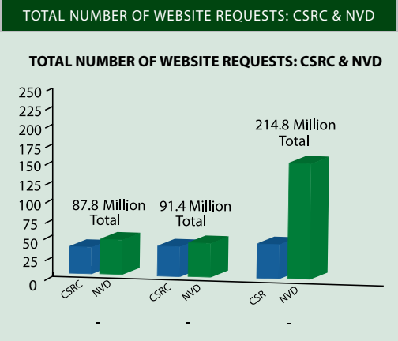
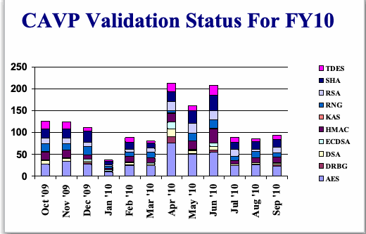
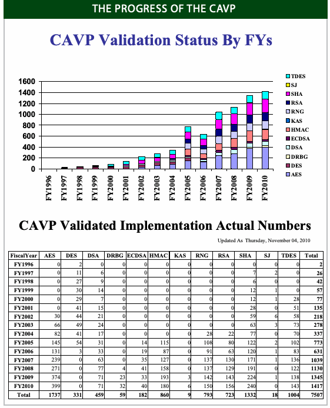

NIST IR 7751 日本語訳
英語タイトル : Computer Security Division 2010 Annual Report日本語タイトル : コンピュータセキュリティ部門 2010 年次報告書
公開日 : 2011-05-31
原文URL : https://csrc.nist.gov/pubs/ir/7751/final
翻訳編集 : 自動生成（有志による非公式の日本語訳）, 原文取得日 : 2026-10-31, 訳文 : 1041 / 1047 ブロック
[要約] NIST IR 7751 は、NIST のコンピュータセキュリティ部門（CSD）の 2010 年次報告書です。2002 年連邦情報セキュリティマネジメント法（FISMA）の実施を担うセキュリティ管理および保証グループ、暗号技術グループ、システムおよび新興技術セキュリティ研究グループの各活動を、戦略目標と概要とともに説明します。暗号技術グループの活動には、暗号標準ツールキット、SHA-3、ブロック暗号の動作モード、鍵管理などが含まれ、システムおよび新興技術セキュリティ研究グループの活動には、PIV、生体認証、セキュリティコンテンツ自動化プロトコル（SCAP）、クラウドコンピューティングなどが含まれます。巻末の「2010 Guidelines and Documents」の節には、2010 会計年度（2009 年 10 月 1 日から 2010 年 9 月 30 日）に公表されたガイドラインと文書（特別刊行物と NIST 省庁間報告書）の短い要旨が収められています。
Table of Contents
目次
Division Organization
部門の組織
FISMA Implementation Project – Phase I
FISMA 実施プロジェクト – フェーズ I
FISMA Implementation Project – Phase II
FISMA 実施プロジェクト – フェーズ II
Computer Security Resource Center
コンピュータセキュリティリソースセンター
Federal Information Systems Security Educators’ Association
連邦情報システムセキュリティ教育者協会
Information Security and Privacy Advisory Board
情報セキュリティおよびプライバシー諮問委員会
Small and Medium Size Business Outreach
中小企業向けアウトリーチ
Cryptographic Module Validation Program and Cryptographic Laboratory Accreditation
暗号モジュール検証プログラムと暗号試験所認定
Algorithm Validation Program
アルゴリズム検証プログラム
ISO Standardization of Cryptographic Module Testing
暗号モジュール試験の ISO 標準化
Hash Algorithms and the Secure Hash Standard Competition
ハッシュアルゴリズムとセキュアハッシュ標準コンペティション
Development of FIPS 140-3, Security Requirements for Cryptographic Modules
FIPS 140-3『暗号モジュールのセキュリティ要件』の策定
Systems and Emerging Technologies Security Research Group
システムおよび新興技術セキュリティ研究グループ
Personal Identity Verification
個人識別検証
NIST Personal Identity Verification Program
NIST 個人識別検証プログラム
Conformance Tests for Transportation Workers Identification Credential Specifications
運輸労働者識別資格情報仕様の適合性試験
Identity Credential Smart Card Interoperability ISO/IEC 24727
識別資格情報スマートカードの相互運用性 ISO/IEC 24727
Identification Cards Integrated Circuit Cards Programming Interfaces
識別カード・集積回路カードのプログラミングインタフェース
Automated Combinatorial Testing for Software
ソフトウェアの自動化された組合せテスト
Access Control and Identitiy Management in Virtualized Systems
仮想化システムにおけるアクセス制御とアイデンティティ管理
National Vulnerability Database
国家脆弱性データベース
Security Content Automation Protocol Validation Program
セキュリティコンテンツ自動化プロトコル検証プログラム
Network Security Analysis Using Attach Graphs
攻撃グラフを用いたネットワークセキュリティ分析
Internet Protocol Version 6 and Internet Protocol Security
インターネットプロトコルバージョン 6 とインターネットプロトコルセキュリティ
Securing the Domain Name System
ドメインネームシステムの保護
Welcome
ご挨拶
The Computer Security Division (CSD), a component of NIST’s Information Technology Laboratory (ITL), conducts research, development and outreach necessary to provide standards and guidelines, tools, metrics and practices to protect our nations information and communication infrastructure.
NIST の情報技術ラボラトリー（ITL）の一部門であるコンピュータセキュリティ部門（CSD）は、国の情報通信基盤を保護するための標準、ガイドライン、ツール、メトリクス、実践を提供するために必要な研究、開発およびアウトリーチを行っています。
In fiscal year (FY) 2010, CSD continued to build on its work in security management and assurance, cryptography and systems security, identity management and emerging security technologies. CSD played a vital role in both national and international security standard setting. The division continues its leadership role in technologies and standards for Cloud Computing, Identity Management and as a Government Wide Leader and national coordinator for the National Initiative for Cybersecurity Education (NICE). In addition, this year marked the publication of NIST Interagency Report (NISTIR) 7628, Guidelines for Smart Grid Security, which identifies security requirements applicable to the Smart Grid, security-relevant use cases, logical interface diagrams and interface categories, vulnerability classes abstracted from other relevant cyber security documents, specific issues applicable to the Smart Grid, and privacy concerns. We also continued to provide reference specifications in multiple areas, allowing others to leverage our work to increase the security of their systems and products.
2010 会計年度（FY）に CSD は、セキュリティ管理と保証、暗号とシステムセキュリティ、アイデンティティ管理、新興のセキュリティ技術における取り組みをさらに発展させました。CSD は、国内および国際的なセキュリティ標準の策定の両方で重要な役割を果たしました。当部門は、クラウドコンピューティングとアイデンティティ管理の技術と標準においてリーダーシップを発揮し続けており、政府全体のリーダーであるとともに、国家サイバーセキュリティ教育イニシアチブ（NICE）の全国調整役を務めています。さらに今年は、NIST 省庁間報告書（NISTIR）7628『Guidelines for Smart Grid Security,』が公表されました。この文書は、スマートグリッドに適用されるセキュリティ要件、セキュリティに関連するユースケース、論理インタフェース図とインタフェースカテゴリ、他の関連するサイバーセキュリティ文書から抽象化された脆弱性クラス、スマートグリッドに適用される個別の課題、およびプライバシーに関する懸念を特定しています。また、複数の分野で参照仕様を提供し続け、他の人々が当部門の成果を活用して自らのシステムや製品のセキュリティを高められるようにしました。
Our role as a collaborator for both government and industry is essential for the success of our mission and in FY2010 we continued to reach out to partners across the government, industry and the world. We embraced international cooperation in our SHA-3 competition as we work on a successor to our current government-approved hash algorithm. We received reviews from the international cryptographic community that allowed us to narrow down the acceptable candidates from 51 to less than seven. Being able to call on such a deep pool of international expertise will encourage acceptance of the final algorithm and surety with regards to its strength.
政府と産業界の双方との協力者としての当部門の役割は、使命の成功に不可欠であり、2010 会計年度も、政府、産業界、世界各地のパートナーへの働きかけを続けました。当部門は、現行の政府承認ハッシュアルゴリズムの後継を策定する SHA-3 コンペティションで、国際協力を受け入れました。国際的な暗号コミュニティから寄せられたレビューにより、受け入れ可能な候補を 51 件から 7 件未満に絞り込むことができました。このように国際的な専門知識の深い蓄積に頼れることは、最終的なアルゴリズムの受け入れを促し、その強度に関する確信につながります。
Industry represents a key audience and partner in all of our work. The success of the Security Content Automation Protocol (SCAP) program is dependent on our partnership with them. Industry has advised us on the need for the program and its evolution. There was enthusiastic adoption from many industry partners and their continued support has allowed us to move ahead with this program much more quickly than otherwise. As a result of such cooperation, we have created and are maintaining a significant repository of SCAP compliant security checklists for use with an ever-increasing number of security tools.
産業界は、当部門のあらゆる取り組みにおいて重要な対象者であり、パートナーです。セキュリティコンテンツ自動化プロトコル（SCAP）プログラムの成功は、産業界との連携に懸かっています。産業界は、このプログラムの必要性とその発展について助言をくれました。多くの産業界のパートナーから熱意ある採用が得られ、その継続的な支援により、このプログラムを他の方法よりもはるかに速く前進させることができました。このような協力の結果、増え続けるセキュリティツールで使用するための、SCAP に準拠したセキュリティチェックリストの大規模なリポジトリを作成し、維持しています。
The responsibilities assigned to NIST, and by extension, CSD in the Federal Information Security Management Act (FISMA) to assist the federal agencies in securing their information systems is a major part of the work that we do. This year marked a historic point in that work with the release of Special Publication 800-37, Revision 1, Guide for Applying the Risk Management Framework to Federal Information Systems: A Security Life Cycle Approach. Not only was this a product of the new cooperation between NIST and the entities responsible for the security requirements for national security systems (the Department of Defense, the Director of National Intelligence and the Committee on National Security Systems), but it also presented a completely new approach for federal agencies to take to information security.
連邦情報セキュリティマネジメント法（FISMA）によって NIST に、ひいては CSD に割り当てられた、連邦機関による情報システムの保護を支援する責務は、当部門の業務の大きな部分を占めています。今年は、特別刊行物 800-37 改訂第 1 版『Guide for Applying the Risk Management Framework to Federal Information Systems: A Security Life Cycle Approach.』の公表により、この業務における歴史的な節目を迎えました。これは、NIST と国家安全保障システムのセキュリティ要件を担う機関（国防総省、国家情報長官、国家安全保障システム委員会）との新たな協力の成果であっただけでなく、連邦機関が情報セキュリティに取り組むための、まったく新しいアプローチを示すものでもありました。
［人物の写真。人物が写っているため、この非公式サイトには掲載していません。原本 PDF を参照してください。］
Looking forward to FY2011, CSD plans to continue its work in information security, producing standards, guidelines, technical reference materials and specifications to improve the information security management of systems across the Nation and around the world.
2011 会計年度に向けて CSD は、国内外のシステムの情報セキュリティ管理を改善するため、標準、ガイドライン、技術参考資料および仕様を作成し、情報セキュリティに関する取り組みを継続する予定です。
Donna Dodson
Chief, Computer Security Division &
Deputy Chief Cybersecurity Advisor
Donna Dodson
コンピュータセキュリティ部門長 兼
サイバーセキュリティ副顧問
The Computer Security Division Implements the Federal Information Security Management Act of 2002
コンピュータセキュリティ部門による 2002 年連邦情報セキュリティマネジメント法の実施
The E-Government Act, Public Law 107-347, passed by the 107th Congress and signed into law by the President in December 2002, recognized the importance of information security to the economic and national security interests of the United States. Title III of the E-Government Act, entitled the Federal Information Security Management Act of 2002 (FISMA), included duties and responsibilities for the National Institute of Standards and Technology, Information Technology Laboratory, Computer Security Division (CSD). In 2010, CSD addressed its assignments through the following projects and activities:
2002 年 12 月に第 107 議会で可決され、大統領が署名して成立した公法 107-347 の電子政府法は、情報セキュリティが米国の経済および国家安全保障上の利益にとって重要であることを認めました。電子政府法の第 III 編である 2002 年連邦情報セキュリティマネジメント法（FISMA）には、国立標準技術研究所（NIST）情報技術ラボラトリー コンピュータセキュリティ部門（CSD）の任務と責任が含まれていました。2010 年に CSD は、次のプロジェクトおよび活動を通じて、これらの任務に取り組みました。
Issued fifteen final NIST Special Publications (SP) that addressed management, operational and technical security guidance in areas such as, securing WiMax wireless networks, secure content automation protocols, protection of personally identifiable information, Bluetooth security, and deployment of Secure Domain Name System deployment. In addition, eight draft SPs were issued for public comment for cryptographic key deployment and security configuration management among other topics;
WiMax 無線ネットワークの保護、セキュリティコンテンツ自動化プロトコル、個人を特定できる情報の保護、Bluetooth のセキュリティ、セキュアドメインネームシステムの導入などの分野で、管理的、運用的および技術的なセキュリティガイダンスを扱う 15 件の最終版 NIST 特別刊行物（SP）を発行しました。さらに、暗号鍵の展開やセキュリティ構成管理などの題材について、8 件の SP のドラフトを公開し、意見募集を行いました。
•Continued the successful collaboration with the Office of the Director of National Intelligence, Committee on National Security Systems and the Department of Defense to establish a common foundation for information security across the federal government, including a consistent process for selecting and specifying safeguards and countermeasures (i.e., security controls) for federal information systems;
•国家情報長官室、国家安全保障システム委員会、国防総省との協力を成功裏に継続し、連邦情報システムの保護策および対抗策（すなわちセキュリティ管理策）を選定し規定するための一貫したプロセスを含め、連邦政府全体の情報セキュリティの共通の基盤を確立しました。
•Provided assistance to agencies and private sector: Conducted ongoing, substantial reimbursable and non-reimbursable assistance support, including many outreach efforts such as the Federal Information Systems Security Educators’ Association (FISSEA), the Federal Computer Security Program Managers’ Forum (FCSM Forum), and the Small Business Corner;
•機関および民間部門への支援の提供: 連邦情報システムセキュリティ教育者協会（FISSEA）、連邦コンピュータセキュリティプログラムマネージャーフォーラム（FCSM フォーラム）、Small Business Corner などの多くのアウトリーチ活動を含め、継続的かつ相当規模の、費用償還を伴う支援および伴わない支援を実施しました。
•As part of its contribution to the Smart Grid initiative, CSD released NIST IR 7628, Guidelines for Smart Grid Cyber Security, in August 2010;
•スマートグリッドイニシアチブへの貢献の一環として、CSD は 2010 年 8 月に NIST IR 7628『Guidelines for Smart Grid Cyber Security,』を公表しました。
•Reviewed security policies and technologies from the private sector and national security systems for potential federal agency use: hosted a growing repository of federal agency security practices, public/private security practices, and security configuration checklists for IT products. Continued to lead, in conjunction with the Government of Canada’s Communications Security Establishment, the Cryptographic Module Validation Program (CMVP). The Common Criteria Evaluation and Validation Scheme (CCEVS) and CMVP facilitate security testing of IT products usable by the federal government;
•連邦機関による利用の可能性を探るため、民間部門および国家安全保障システムのセキュリティポリシーと技術をレビューしました。連邦機関のセキュリティ実践、官民のセキュリティ実践、IT 製品のセキュリティ構成チェックリストの、増え続けるリポジトリを運営しました。カナダ政府の通信保安局（Communications Security Establishment）と共同で、暗号モジュール検証プログラム（CMVP）を引き続き主導しました。コモンクライテリア評価・認証スキーム（CCEVS）と CMVP は、連邦政府が利用できる IT 製品のセキュリティ試験を促進します。
•Co-hosted the third annual HIPAA Security Rule conference, “Safeguarding Health Information: Building Assurance through HIPAA Security”, to assist organizations in addressing security and privacy concerns in the growing use of HIT, and to discuss challenges, tips, and techniques for implementing the requirements of the HIPAA Security Rule;
•第 3 回年次 HIPAA セキュリティ規則会議「Safeguarding Health Information: Building Assurance through HIPAA Security」を共催し、HIT の利用拡大に伴うセキュリティおよびプライバシーの懸念に組織が対処することを支援するとともに、HIPAA セキュリティ規則の要件を実施するうえでの課題、ヒント、手法を議論しました。
•Developed conformance test procedures to ensure compliance with the HIT meaningful use security standards and certification criteria;
•HIT の「意味のある利用（meaningful use）」のセキュリティ標準および認証基準への準拠を確保するための、適合性試験手順を開発しました。
•Solicited recommendations of the Information Security and Privacy Advisory Board on draft standards and guidelines and solicited recommendations of the Board on information security and privacy issues regularly at quarterly meetings;
•標準およびガイドラインのドラフトについて情報セキュリティおよびプライバシー諮問委員会の勧告を求めるとともに、四半期ごとの会合で、情報セキュリティおよびプライバシーの課題について同委員会の勧告を定期的に求めました。
•Held a successful “SHA-3 conference” and selected five “finalist” candidate algorithms as a part of a public competition to select a new federal cryptographic hash function standard;
•「SHA-3 会議」を成功裏に開催し、新しい連邦暗号ハッシュ関数標準を選定する公開コンペティションの一環として、5 件の「最終候補」アルゴリズムを選定しました。
•Provided outreach, workshops, and briefings: Conducted ongoing awareness briefings and outreach to CSD’s customer community and beyond to ensure comprehension of guidance and awareness of planned and future activities. CSD also held workshops to identify areas that the customer community wishes to be addressed, and to scope guidelines in a collaborative and open format; and
•アウトリーチ、ワークショップ、ブリーフィングの提供: CSD の顧客コミュニティおよびその外に向けて、ガイダンスの理解と、計画中および今後の活動の周知を確保するため、意識向上のためのブリーフィングとアウトリーチを継続的に実施しました。CSD はまた、顧客コミュニティが取り上げてほしい分野を特定し、協力的でオープンな形式でガイドラインの範囲を定めるため、ワークショップを開催しました。
•Produced an annual report as a NIST Interagency Report (IR). The 2003-2009 Annual Reports are available via our Computer Security Resource Center (CSRC) website.
•年次報告書を NIST 省庁間報告書（IR）として作成しました。2003〜2009 年の年次報告書は、Computer Security Resource Center（CSRC）の Web サイトから入手できます。
Security Management and Assurance Group
セキュリティ管理および保証グループ
STRATEGIC GOAL
戦略目標
The Security Management and Assurance (SMA) Group provides leadership, expertise, outreach, validation, standards and guidelines to assist the federal IT community in protecting information and information systems, and in using these critical assets to accomplish federal agency missions.
セキュリティ管理および保証（SMA）グループは、連邦 IT コミュニティが情報および情報システムを保護し、これらの重要な資産を連邦機関の任務の遂行に活用することを支援するため、リーダーシップ、専門知識、アウトリーチ、検証、標準およびガイドラインを提供します。
Overview
概要
Information security is an integral element of good management. Information and information systems are critical assets that support the mission of an organization. Protecting them can be as important as protecting other organizational resources, such as money, physical assets, or employees. In order to protect their assets, organizations need to have assurance that the security technologies that they invest in can work and allow interoperability, especially in the area of cryptography, as well as management guidance. However, including security considerations in the management of information and computers does not completely eliminate the possibility that these assets will be harmed. In order to reduce the risk to their assets, organizations need to also have assurance that the security technologies that they invest in can work and allow interoperability, especially in the area of cryptography, as well as management guidance.
情報セキュリティは、優れたマネジメントに不可欠な要素です。情報および情報システムは、組織の任務を支える重要な資産です。これらを保護することは、金銭、物的資産、従業員といった他の組織の資源を保護することと同じくらい重要な場合があります。資産を保護するため、組織は、投資するセキュリティ技術が機能し、相互運用できること、とりわけ暗号の分野でそうであること、およびマネジメント上のガイダンスがあることについて、保証を得る必要があります。しかし、情報およびコンピュータのマネジメントにセキュリティ上の考慮事項を含めても、これらの資産が損害を受ける可能性が完全に排除されるわけではありません。資産に対するリスクを低減するため、組織は、投資するセキュリティ技術が機能し、相互運用できること、とりわけ暗号の分野でそうであること、およびマネジメント上のガイダンスがあることについても、保証を得る必要があります。
Ultimately, responsibility for the success of an organization lies with its senior management. These officials establish the organization’s computer security program and its overall program goals, objectives, and priorities in order to support the mission of the organization. They are also responsible for ensuring that required resources are applied to the program.
組織の成功に対する責任は、最終的には上級管理者にあります。これらの責任者は、組織の任務を支えるため、組織のコンピュータセキュリティプログラムと、プログラム全体の目標、目的および優先順位を定めます。また、必要な資源がプログラムに充てられるようにする責任も負います。
Collaboration with other organizations is critical for success. Within the federal government, we collaborate with the U.S. Office of Management and Budget (OMB), the U.S. Government Accountability Office (GAO), and all Executive Branch agencies. We also work closely with a number of information technology organizations and standards bodies, as well as with public and private organizations. Internationally we work jointly with the governments of our allies, including Canada, Japan, Australia, and several European and Asian countries, to standardize and validate the correct implementation of cryptography.
他組織との協力は、成功に不可欠です。連邦政府内では、米国行政管理予算局（OMB）、米国政府説明責任局（GAO）、およびすべての行政府機関と協力しています。また、多数の情報技術組織や標準化団体、さらに公的および民間の組織とも緊密に連携しています。国際的には、カナダ、日本、オーストラリア、欧州やアジアの複数の国を含む同盟国の政府と共同で、暗号の正しい実装を標準化し、検証しています。
Major initiatives in this area include:
この分野の主な取り組みは次のとおりです。
•The Federal Information Security Management Act (FISMA) Implementation project;
•連邦情報セキュリティマネジメント法（FISMA）実施プロジェクト、
•The Cryptographic Module Validation Program;
•暗号モジュール検証プログラム、
•The Cryptographic Algorithm Validation Program;
•暗号アルゴリズム検証プログラム、
•Extended outreach initiatives to federal and nonfederal agencies, state and local governments and international organizations;
•連邦および連邦以外の機関、州政府・地方政府、国際機関への拡大されたアウトリーチの取り組み、
•Security for Electronic Health Care Information;
•電子医療情報のセキュリティ、
•Security Standards and Conformance for the Nation’s Smart Grid;
•国のスマートグリッドのセキュリティ標準と適合性、
•Outreach to small and medium businesses;
•中小企業向けのアウトリーチ、
•Standards development;
•標準の策定、
•The National Initiative for Cybersecurity Education; and
•国家サイバーセキュリティ教育イニシアチブ、および
•Producing and updating NIST Special Publications (SP) on security management topics.
•セキュリティ管理に関する NIST 特別刊行物（SP）の作成と更新。
Key to the success in this area is our ability to interact with a broad constituency – federal and non-federal in order to ensure that our program is consistent with national objectives related to or impacted by information security.
この分野での成功の鍵は、広範な関係者、すなわち連邦と連邦以外の関係者と交流し、当部門のプログラムが、情報セキュリティに関連する、または情報セキュリティの影響を受ける国家目標と整合するようにする能力にあります。
Federal Information Security Management Act Implementation Project
連邦情報セキュリティマネジメント法実施プロジェクト
The Federal Information Security Management Act (FISMA) of 2002 (URL: http://csrc.nist.gov/drivers/documents/FISMA-final.pdf ) requires each federal agency to develop, document, and implement an agency-wide program to provide information security for the information and information systems that support the operations and assets of the agency, including those provided or managed by another agency, contractor, or other source. The FISMA Implementation Project focuses on the development and updating of the security standards and guidance required to effectively implement the provisions of the legislation. The implementation of the NIST standards and guidance helps agencies to create and maintain robust information security programs and to effectively manage risk to agency operations, agency assets, and individuals.
2002 年連邦情報セキュリティマネジメント法（FISMA）（URL: http://csrc.nist.gov/drivers/documents/FISMA-final.pdf ）は、各連邦機関に対し、他の機関、請負業者、その他の提供元が提供または管理するものを含め、機関の業務と資産を支える情報および情報システムの情報セキュリティを確保するための、機関全体のプログラムを策定し、文書化し、実施することを求めています。FISMA 実施プロジェクトは、この法律の規定を効果的に実施するために必要なセキュリティ標準とガイダンスの策定および更新に重点を置いています。NIST の標準とガイダンスを実施することで、機関は堅牢な情報セキュリティプログラムを作成して維持し、機関の業務、機関の資産および個人に対するリスクを効果的に管理できます。
To support the implementation of the NIST standards and guidelines for FISMA, NIST defined the Risk Management Framework (RMF), illustrated in the figure below. The RMF provides a disciplined and structured process that integrates information security and risk management activities into the system development life cycle.
FISMA に向けた NIST の標準とガイドラインの実施を支援するため、NIST は、下図に示すリスク管理フレームワーク（RMF）を定義しました。RMF は、情報セキュリティとリスク管理の活動をシステム開発ライフサイクルに統合する、規律ある体系的なプロセスを提供します。
濃い青の背景に「Risk Management Framework」（リスク管理フレームワーク）と題した図です。中央に「Security Life Cycle」（セキュリティライフサイクル、SP 800-39）があり、6 つの段階が赤い矢印で循環しています。「Starting Point」（開始点）の FIPS 199 / SP 800-60「CATEGORIZE Information System」（情報システムの分類）:「Define criticality/sensitivity of information system according to potential worst-case, adverse impact to mission/business.」（ミッション・業務への最悪の場合の悪影響に応じて、情報システムの重要度・機微度を定める）。FIPS 200 / SP 800-53「SELECT Security Controls」（セキュリティ管理策の選択）:「Select baseline security controls; apply tailoring guidance and supplement controls as needed based on risk assessment.」（ベースラインのセキュリティ管理策を選び、リスク評価に基づき必要に応じて調整の指針を適用し、管理策を補う）。SP 800-70「IMPLEMENT Security Controls」（セキュリティ管理策の実装）:「Implement security controls within enterprise architecture using sound systems engineering practices; apply security configuration settings.」（健全なシステムエンジニアリングの実践によりエンタープライズアーキテクチャの中で管理策を実装し、セキュリティ設定を適用する）。SP 800-53A/SP 800-115「ASSESS Security Controls」（セキュリティ管理策の評価）:「Determine security control effectiveness (i.e., controls implemented correctly, operating as intended, meeting security requirements for information system).」（管理策の有効性、すなわち正しく実装され、意図どおりに動作し、情報システムのセキュリティ要件を満たしているかを判断する）。SP 800-37「AUTHORIZE Information System」（情報システムの認可）:「Determine risk to organizational operations and assets, individuals, other organizations, and the Nation; if acceptable, authorize operation.」（組織の業務と資産、個人、他の組織、国家へのリスクを判断し、受容できれば運用を認可する）。SP 800-37 / SP 800-53A「MONITOR Security State」（セキュリティ状態の監視）:「Continuously track changes to the information system that may affect security controls and reassess control effectiveness.」（管理策に影響しうる情報システムの変更を継続的に追跡し、管理策の有効性を評価し直す）。左下に NIST のロゴと「NATIONAL INSTITUTE OF STANDARDS AND TECHNOLOGY」（米国国立標準技術研究所）とあります。 ［NIST のロゴが写っている図。公的な標章のため、この非公式サイトには掲載していません。原本 PDF を参照してください。］
Federal Information Security Management Act Implementation Project – Phase I
連邦情報セキュリティマネジメント法実施プロジェクト – フェーズ I
CSD continued to develop the security standards and guidelines required by federal legislation. Phase I of the FISMA Implementation Project included the development of security standards and guidelines to assist federal agencies in—
CSD は、連邦法が求めるセキュリティ標準とガイドラインの策定を続けました。FISMA 実施プロジェクトのフェーズ I には、連邦機関が次のことを行うのを支援するセキュリティ標準とガイドラインの策定が含まれていました。
•Implementing the individual steps in the NIST RMF as part of a well-defined and disciplined system development life cycle process;
•明確に定義された規律あるシステム開発ライフサイクルのプロセスの一部として、NIST RMF の個々のステップを実施すること。
•Demonstrating compliance to specific requirements contained within the FISMA legislation; and
•FISMA の法令に含まれる特定の要件への準拠を示すこと。
•Establishing a level of security due diligence across the federal government.
•連邦政府全体でセキュリティに関する相当の注意の水準を確立すること。
In FY2010, the SMA group completed or updated the following key publications:
2010 会計年度に SMA グループは、次の主要な刊行物を完成または更新しました。
•Major revision of NIST SP 800-37, Guide for Applying the Risk Management Framework to Federal Information Systems: A Security Life Cycle Approach, working in cooperation with the Office of the Director of National Intelligence (ODNI), the Department of Defense (DOD), and the Committee on National Security Systems (CNSS), to develop a common process to authorize federal information systems for operation; and
•NIST SP 800-37『Guide for Applying the Risk Management Framework to Federal Information Systems: A Security Life Cycle Approach』の大幅改訂。国家情報長官室（ODNI）、国防総省（DOD）、国家安全保障システム委員会（CNSS）と協力し、連邦情報システムを運用のために認可する共通のプロセスを策定しました。
•Revision of NIST SP 800-53A, Guide for Assessing the Security Controls in Federal Information Systems and Organizations, Building Effective Security Assessment Plans, in partnership with the ODNI, DOD, and CNSS to update assessment procedures for the security control catalog in NIST SP 800-53, Revision 3, Recommended Security Controls for Federal Information Systems and Organizations.
•NIST SP 800-53A『Guide for Assessing the Security Controls in Federal Information Systems and Organizations, Building Effective Security Assessment Plans』の改訂。ODNI、DOD、CNSS と連携し、NIST SP 800-53 改訂第 3 版『Recommended Security Controls for Federal Information Systems and Organizations』のセキュリティ管理策カタログに対する評価手順を更新しました。
In addition to the above publications, the division collaborated with the Manufacturing Engineering Laboratory at NIST in reviewing comments received and updating the draft guide to industrial control system security, NIST SP 800-82, G uide to Industrial Control Systems (ICS) Security: Supervisory Control and Data Acquisition (SCADA) Systems, Distributed Control Systems (DCS), and Other Control System Configurations Such as Programmable Logic Controllers (PLC).
上記の刊行物に加え、当部門は NIST の製造エンジニアリングラボラトリーと協力し、寄せられたコメントをレビューして、産業用制御システムのセキュリティに関するガイドのドラフトである NIST SP 800-82『Guide to Industrial Control Systems (ICS) Security: Supervisory Control and Data Acquisition (SCADA) Systems, Distributed Control Systems (DCS), and Other Control System Configurations Such as Programmable Logic Controllers (PLC)』を更新しました。
In FY2011, CSD plans to continue its collaboration with the ODNI, the DOD, and the CNSS, in expanding the series of NIST SPs for a unified information security framework for the federal government. Updates to the following draft publications will be completed in FY2011:
2011 会計年度に CSD は、連邦政府向けの統一された情報セキュリティフレームワークのための NIST SP シリーズを拡充するため、ODNI、DOD、CNSS との協力を継続する予定です。次のドラフト刊行物の更新が 2011 会計年度に完成する予定です。
•SP 800-39, Integrated Enterprise-Wide Risk Management: Organization, Mission, and Information System View;
•SP 800-39『Integrated Enterprise-Wide Risk Management: Organization, Mission, and Information System View』、
•SP 800-30, Risk Management Guide for Information Technology Systems; and
•SP 800-30『Risk Management Guide for Information Technology Systems; and』、
•SP 800-137, Information Security Continuous Monitoring for Federal Information Systems and Organizations.
•SP 800-137『Information Security Continuous Monitoring for Federal Information Systems and Organizations』。
In addition, a systems and security engineering guideline and application security guideline will be completed.
さらに、システムおよびセキュリティエンジニアリングのガイドラインと、アプリケーションセキュリティのガイドラインが完成する予定です。
http://csrc.nist.gov/sec-cert
Contact:
Dr. Ron Ross, (301) 975-5390, ron.ross@nist.gov
http://csrc.nist.gov/sec-cert
連絡先:
Dr. Ron Ross, (301) 975-5390, ron.ross@nist.gov
Federal Information Security Management Act (FISMA) Implementation Project – Phase II
連邦情報セキュリティマネジメント法（FISMA）実施プロジェクト – フェーズ II
Phase II of the FISMA Implementation Project focuses on building common understanding and reference guides for organizations applying the NIST suite of publications that support the Risk Management Framework (RMF), and for public and private sector organizations that provide security assessments of information systems for federal agencies. Security assessments determine the extent to which the security controls are implemented correctly, operating as intended, and producing the desired outcome with respect to meeting the security requirements for the system. Managerial, operational, and technical security controls, including information technology products and services used in security control implementation, are all included in security assessments.
FISMA 実施プロジェクトのフェーズ II は、リスク管理フレームワーク（RMF）を支える NIST の刊行物群を適用する組織と、連邦機関のために情報システムのセキュリティ評価を行う公的および民間の組織のために、共通の理解と参照ガイドを構築することに重点を置いています。セキュリティ評価は、セキュリティ管理策が正しく実装され、意図したとおりに動作し、システムのセキュリティ要件を満たすうえで望ましい結果を生み出している程度を判定します。管理的、運用的、技術的なセキュリティ管理策は、セキュリティ管理策の実装で使用される情報技術製品およびサービスを含め、すべてセキュリティ評価の対象となります。
Phase II includes the following five initiatives:
フェーズ II には、次の 5 つの取り組みが含まれます。
(i) Training: development of training courses, publication of Quick Start Guides (QSGs), and development of Frequently Asked Questions (FAQs) for establishing common understanding of the NIST standards and guidelines supporting the NIST RMF;
(i) トレーニング: NIST RMF を支える NIST の標準とガイドラインについて共通の理解を確立するための、トレーニングコースの開発、クイックスタートガイド（QSG）の公表、よくある質問（FAQ）の作成。
(ii) Support Tools: defining criteria for common reference programs, materials, checklists, technical guides, automated tools and techniques supporting implementation and assessment of SP 800-53-based security controls;
(ii) 支援ツール: SP 800-53 に基づくセキュリティ管理策の実装と評価を支える、共通の参照プログラム、資料、チェックリスト、技術ガイド、自動化ツール、手法の基準の定義。
(iii) Product and Services Assurance: defining minimum criteria and guidelines for security assurances (to include test results from Security Content Automation Protocol [SCAP] tools and configuration checklists, etc. where applicable) in products and services supporting implementation and assessment of SP 800-53-based security controls in information system operational environments;
(iii) 製品およびサービスの保証: 情報システムの運用環境における SP 800-53 に基づくセキュリティ管理策の実装と評価を支える製品およびサービスについて、セキュリティ保証（該当する場合は、セキュリティコンテンツ自動化プロトコル [SCAP] ツールや構成チェックリストなどの試験結果を含む）の最低基準とガイドラインの定義。
(iv) International Organization for Standardization (ISO) Harmonization: identifying common relationships and mappings of FISMA standards, guidelines, and requirements with:
(iv) 国際標準化機構（ISO）との調和: FISMA の標準、ガイドライン、要件と、次のものとの共通の関係と対応づけの特定。
(i) the International Organization for Standardization/International Electrotechnical Commission (ISO/IEC) 27000 series information security management standards; and
(i) 国際標準化機構／国際電気標準会議（ISO/IEC）27000 シリーズの情報セキュリティマネジメント標準。
(ii) ISO/IEC 9000 and 17000 series quality management, and laboratory testing/inspection standards respectively. This harmonization is important for minimizing duplication of effort for orga-nizations that must demonstrate compliance to both FISMA and ISO requirements; and
(ii) それぞれ品質マネジメントと試験所の試験・検査に関する標準である ISO/IEC 9000 および 17000 シリーズ。この調和は、FISMA と ISO の両方の要件への準拠を示さなければならない組織にとって、作業の重複を最小限に抑えるうえで重要です。
(v) Organizational Security Assessment Capability: defining minimum capability and proficiency criteria for public and private sector organizations providing security assessment services for federal agencies drawing upon material from the above initiatives.
(v) 組織のセキュリティ評価能力: 上記の取り組みの成果物を活用した、連邦機関にセキュリティ評価サービスを提供する公的および民間の組織の、最低限の能力および習熟度の基準の定義。
In FY2010, CSD completed the following activities:
2010 会計年度に CSD は、次の活動を完了しました。
•Developed initial drafts of a web-based and classroom-based training courses on the RMF, Applying the RMF to Federal Information Systems;
•RMF に関する Web ベースおよび教室ベースのトレーニングコース『Applying the RMF to Federal Information Systems』の最初のドラフトを作成しました。
•Completed draft QSGs and FAQs supporting the Select step of the 6-step NIST RMF (adding to the currently available QSGs and FAQs for the Categorize and Monitor steps);
•6 ステップの NIST RMF の「選択（Select）」ステップを支える QSG と FAQ のドラフトを完成させました（現在入手可能な「分類（Categorize）」および「監視（Monitor）」ステップの QSG と FAQ に追加）。
•Made available two databases for users wishing to access the security controls provided in Appendix F and G of SP 800-53, Revision 3 (with errata corrections as of May 2010) . They are:
•SP 800-53 改訂第 3 版（2010 年 5 月時点の正誤表の修正を反映）の付録 F および G に示されるセキュリティ管理策にアクセスしたい利用者向けに、2 つのデータベースを公開しました。それらは次のとおりです。
1.A standalone SP 800-53 Revision 3 Reference Database Application that can be downloaded and installed on the user’s computer system and that allows the user to search and display the SP 800-53 security control catalog in a variety of views, and to extract security controls in a variety of file formats;
1.利用者のコンピュータシステムにダウンロードしてインストールできるスタンドアロンの SP 800-53 改訂第 3 版参照データベースアプリケーション。利用者は、SP 800-53 のセキュリティ管理策カタログをさまざまなビューで検索・表示し、セキュリティ管理策をさまざまなファイル形式で抽出できます。
2.A web database, containing the catalog of security controls from SP 800-53 Revision 3 that enables users to interactively search and display security control content on-line in a variety of views. This on-line database has been developed to help customers quickly and efficiently (a) browse the security controls, control enhancements, and supplemental guidance, including summarizing the controls by control class, control family and system impact baseline; and (b) search the security control catalog using user-specified keywords. Future revisions of the SP 800-53 security control catalog will be maintained in the on-line SP 800-53 database. Also, additional capability is planned for the on-line database, such as supporting the export of security control text into other popular data formats, and adding to the database assessment procedures from Appendix F of SP 800-53A for the SP 800-53 security controls.
2.SP 800-53 改訂第 3 版のセキュリティ管理策カタログを収めた Web データベース。利用者は、セキュリティ管理策の内容をオンラインでさまざまなビューにより対話的に検索・表示できます。このオンラインデータベースは、顧客が (a) 管理策クラス、管理策ファミリー、システム影響度ベースラインごとの管理策の要約を含め、セキュリティ管理策、管理策の強化項目、補足ガイダンスを閲覧すること、および (b) 利用者が指定したキーワードでセキュリティ管理策カタログを検索することを、迅速かつ効率的に行えるよう開発されました。SP 800-53 セキュリティ管理策カタログの今後の改訂は、オンラインの SP 800-53 データベースで維持される予定です。また、セキュリティ管理策の文章を他の一般的なデータ形式にエクスポートする機能や、SP 800-53 のセキュリティ管理策に対する SP 800-53A の付録 F の評価手順をデータベースに追加する機能など、オンラインデータベースの機能追加も計画されています。
•Conducted research and held meetings with security product and security service suppliers seeking their views on readily available artifacts and evidence that could provide assurances that SP 500-53 based security control products and services meet requirements in organization specific information system operational environments.
•SP 500-53 に基づくセキュリティ管理策の製品およびサービスが、組織固有の情報システムの運用環境における要件を満たしているという保証を与えうる、容易に入手可能な成果物や証拠について、セキュリティ製品およびセキュリティサービスの供給者の見解を求めて、調査を行い、会合を開きました。
In FY2011, CSD intends to: develop QSGs and FAQs for the Implement, Assess and Authorize steps of the 6-step RMF; continue to extend the capability of the on-line SP 800-53 security control database by adding to the database relevant assessment procedures from SP 800-53A; update the current exemplary assessment cases for consistency with the assessment procedures in SP 800-53A; and, collaborate with standards bodies for developing additional mappings of NIST standards and guidelines supporting the RMF to international frameworks.
2011 会計年度に CSD は、6 ステップの RMF の「実装（Implement）」「評価（Assess）」「認可（Authorize）」の各ステップに向けた QSG と FAQ を作成すること、SP 800-53A の関連する評価手順をデータベースに追加して、オンラインの SP 800-53 セキュリティ管理策データベースの機能を拡張し続けること、既存の模範的な評価事例を SP 800-53A の評価手順と整合するよう更新すること、そして、RMF を支える NIST の標準とガイドラインを国際的なフレームワークに対応づける追加のマッピングを策定するため、標準化団体と協力することを予定しています。
http://csrc.nist.gov/sec-cert
Contacts:
Mr. Arnold Johnson, (301) 975-3247, arnold.johnson@nist.gov
Ms. Pat Toth, (301) 975-5140, patricia.toth@nist.gov
http://csrc.nist.gov/sec-cert
連絡先:
Mr. Arnold Johnson, (301) 975-3247, arnold.johnson@nist.gov
Ms. Pat Toth, (301) 975-5140, patricia.toth@nist.gov
Outreach and Awareness
アウトリーチおよび意識向上
Computer Security Resource Center (CSRC)
コンピュータセキュリティリソースセンター（CSRC）
The Computer Security Resource Center (CSRC) is CSD’s website and is one of the most visited websites at NIST. CSRC encourages broad sharing of information security tools and practices, provides a resource for information security standards and guidelines, and identifies and links key security web resources to support industry and government users. CSRC is an integral component of all of the work that we conduct and produce. It is our repository for anyone, public or private sector, wanting to access our documents and other valuable information security-related information. During FY2010, our division’s two websites, CSRC and the National Vulnerability Database (NVD) had more than 214.8 million requests combined1. CSRC received a little over 49.1 million total requests. The NVD website within CSRC received over 165.7 million total requests.
コンピュータセキュリティリソースセンター（CSRC）は CSD の Web サイトであり、NIST で最も閲覧数の多い Web サイトの 1 つです。CSRC は、情報セキュリティのツールと実践の幅広い共有を促し、情報セキュリティの標準とガイドラインのリソースを提供し、産業界と政府の利用者を支援するために、主要なセキュリティ Web リソースを特定してリンクしています。CSRC は、当部門が実施し作成するすべての業務に不可欠な構成要素です。公的部門か民間部門かを問わず、当部門の文書やその他の情報セキュリティ関連の貴重な情報にアクセスしたい人のためのリポジトリです。2010 会計年度に、当部門の 2 つの Web サイトである CSRC と 国家脆弱性データベース（NVD）は、合計で 2 億 1,480 万件を超えるリクエストを受けました1。CSRC の総リクエスト数は 4,910 万件強でした。CSRC 内の NVD の Web サイトの総リクエスト数は 1 億 6,570 万件を超えました。
CSRC is the primary gateway for gaining access to NIST computer security publications, standards and guidelines, and serves as a vital link to our internal and external customers. The following documents can be found on CSRC: Drafts for public comment, Federal Information Processing Standards (FIPS), Special Publications (SPs), NIST Interagency Reports (NISTIRs), and ITL Security Bulletins.
CSRC は、NIST のコンピュータセキュリティに関する刊行物、標準、ガイドラインにアクセスするための主要な窓口であり、内部および外部の顧客との重要な結びつきとなっています。CSRC では、次の文書を見つけることができます。意見募集用のドラフト、連邦情報処理標準（FIPS）、特別刊行物（SP）、NIST 省庁間報告書（NISTIR）、ITL セキュリティ速報です。
The URL for the Publications homepage is: http://csrc.nist.gov/publications. Publications are organized by Topics, Family categories, and Legal Requirements to help users locate relevant information quickly.
刊行物のホームページの URL は http://csrc.nist.gov/publications です。刊行物は、利用者が関連情報をすばやく見つけられるよう、トピック、ファミリーのカテゴリ、法的要件ごとに整理されています。
During FY2010, the ten most popular downloaded documents from CSRC were:
2010 会計年度に、CSRC で最も多くダウンロードされた 10 件の文書は次のとおりです。
1.SP 800-53 Revision 2, Recommended Security Controls for Federal Information Systems, and Revision 3, Recommended Security Controls for Federal Information Systems and Organizations;
1.SP 800-53 改訂第 2 版『Recommended Security Controls for Federal Information Systems,』および改訂第 3 版『Recommended Security Controls for Federal Information Systems and Organizations;』

「TOTAL NUMBER OF WEBSITE REQUESTS: CSRC & NVD」（Web サイトへの要求の総数: CSRC と NVD）と題する棒グラフです。縦軸は 0〜250（25 刻み）です。青の「CSRC」と緑の「NVD」の立体の棒の組が 3 つあり、それぞれ「87.8 Million Total」「91.4 Million Total」「214.8 Million Total」（総計 8,780 万、9,140 万、2 億 1,480 万）と書かれています。3 組目のラベルは「CSR」と「NVD」です。組の下の年のラベルは読めません（ダッシュで表示されています）。
2.SP 800-30, Risk Management Guide for Information Technology Systems;
2.SP 800-30『Risk Management Guide for Information Technology Systems;』
3.SP 800-53A, Guide for Assessing the Security Controls in Federal Information Systems, and 800-53A Revision 1, Guide for Assessing the Security Controls in Federal Information Systems and Organizations, Building Effective Security Assessment Plans;
3.SP 800-53A『Guide for Assessing the Security Controls in Federal Information Systems,』および 800-53A 改訂第 1 版『Guide for Assessing the Security Controls in Federal Information Systems and Organizations, Building Effective Security Assessment Plans;』
4.SP 800-77, Guide to IPsec VPNs;
4.SP 800-77『Guide to IPsec VPNs』、
5.SP 800-115, Technical Guide to Information Security Testing and Assessment;
5.SP 800-115『Technical Guide to Information Security Testing and Assessment』、
6.SP 800-34, Contingency Planning Guide for Federal Information Systems;
6.SP 800-34『Contingency Planning Guide for Federal Information Systems;』
7.SP 800-94, Guide to Intrusion Detection and Prevention Systems (IDPS);
7.SP 800-94『Guide to Intrusion Detection and Prevention Systems (IDPS);』
8.FIPS 140-2, Security Requirements for Cryptographic Modules;
8.FIPS 140-2『Security Requirements for Cryptographic Modules;』
9.SP 800-100, Information Security Handbook: A Guide for Managers; and
9.SP 800-100『Information Security Handbook: A Guide for Managers; and』
10.NISTIR 7628, Guidelines for Smart Grid Cyber Security.
10.NISTIR 7628『Guidelines for Smart Grid Cyber Security.』
CSRC is continuously updated with new information on various project pages. Some of the major highlights of CSRC during FY2010 were:
CSRC は、さまざまなプロジェクトのページの新しい情報で継続的に更新されています。2010 会計年度の CSRC の主な更新は次のとおりです。
•Creation of a section for a new program titled the National Initiative for Cybersecurity Education (NICE)
URL: http://www.nist.gov/nice/;
•国家サイバーセキュリティ教育イニシアチブ（NICE）という新しいプログラムのセクションの作成
URL: http://www.nist.gov/nice/、
•Creation and updates of new validated products and certificate web pages for the Cryptographic Module Validation Program (CMVP) and Cryptographic Algorithm Validation Program (CAVP);
•暗号モジュール検証プログラム（CMVP）および暗号アルゴリズム検証プログラム（CAVP）向けの、新たな検証済み製品の作成と更新、および証明書 Web ページの作成と更新
•Updates on the Small Business Community website with new 2010 information about workshops that took place in FY2010;
•2010 会計年度に開催されたワークショップに関する 2010 年の新しい情報による、中小企業コミュニティ Web サイトの更新、
•Webcasts for the ISPAB quarterly meetings; and
•ISPAB の四半期ごとの会合のウェブキャスト、および
•An on-line FISMA course titled "Applying the Risk Management Framework to Federal Information Systems: A Security Life Cycle Approach."
•オンライン FISMA コース「Applying the Risk Management Framework to Federal Information Systems: A Security Life Cycle Approach」。
In addition to CSRC, CSD maintains a publication announcement mailing list. This is a free e-mail list that notifies subscribers about publications that have been posted to the CSRC website. This e-mail list is a valuable tool for more than 10,000 subscribers including federal government employees, the private sector, educational institutions, and individuals with a personal interest in information technology (IT) security. Subscribers are notified when the CSD releases a publication, posts an announcement on CSRC, or when the CSD is hosting a security event. Individuals who are interested in learning more about this list or subscribing to it should visit this web page on CSRC for more information: http://csrc.nist.gov/publications/subscribe.html
CSRC に加えて CSD は、刊行物の通知用メーリングリストを運営しています。これは、CSRC の Web サイトに掲載された刊行物を購読者に知らせる、無料の電子メールリストです。この電子メールリストは、連邦政府職員、民間部門、教育機関、情報技術（IT）セキュリティに個人的な関心を持つ人々を含む 10,000 人を超える購読者にとって、貴重なツールです。購読者には、CSD が刊行物を公開したとき、CSRC にお知らせを掲載したとき、または CSD がセキュリティ関連のイベントを開催しているときに通知が届きます。このリストについて詳しく知りたい方や購読を希望する方は、CSRC の次の Web ページで詳細をご覧ください: http://csrc.nist.gov/publications/subscribe.html
Questions on the website should be sent to the CSRC Webmaster at: webmaster-csrc@nist.gov.
Web サイトに関する質問は、CSRC のウェブマスター（webmaster-csrc@nist.gov）宛てにお送りください。
http://csrc.nist.gov/
Contact:
Mr. Patrick O’Reilly, patrick.oreilly@nist.gov
http://csrc.nist.gov/
連絡先:
Mr. Patrick O’Reilly, patrick.oreilly@nist.gov
Federal Computer Security Program Managers' Forum
連邦コンピュータセキュリティプログラムマネージャーフォーラム
The Federal Computer Security Program Managers’ Forum is an informal group that is sponsored by NIST to promote the sharing of security-related information among federal agencies. The Forum, which serves more than 1,030 members, strives to provide an ongoing opportunity for managers of federal information security programs to exchange information security materials in a timely manner, build upon the experiences of other programs, and reduce possible duplication of effort. It provides a mechanism for NIST to share information directly with federal agency information security program managers in fulfillment of NIST’s leadership mandate under FISMA. It also assists NIST in establishing and maintaining relationships with other individuals or organizations that are actively addressing information security issues within the federal government. . NIST serves as the Secretariat of the Forum, providing necessary administrative and logistical support. Participation in Forum meetings is open to federal government employees who participate in the management of their organization’s information security program. There are no membership dues.
連邦コンピュータセキュリティプログラムマネージャーフォーラムは、連邦機関間でセキュリティ関連情報の共有を促進するために NIST が後援する非公式のグループです。フォーラムは 1,030 人を超える会員を擁し、連邦の情報セキュリティプログラムのマネージャーが、情報セキュリティの資料をタイムリーに交換し、他のプログラムの経験を土台とし、作業の重複の可能性を減らすための継続的な機会を提供することを目指しています。また、FISMA に基づく NIST のリーダーシップの責務を果たすため、NIST が連邦機関の情報セキュリティプログラムのマネージャーと直接情報を共有する仕組みでもあります。さらに、連邦政府内で情報セキュリティの課題に積極的に取り組んでいる他の個人や組織との関係を、NIST が確立し維持するうえでも役立っています。NIST はフォーラムの事務局を務め、必要な事務的・後方支援を提供しています。フォーラムの会合への参加は、自らの組織の情報セキュリティプログラムの管理に関わる連邦政府職員に開かれています。会費はありません。
The Forum hosts the Federal Agency Security Practices (FASP) website, maintains an extensive e-mail list, and holds bimonthly meetings and an annual two-day conference to discuss current issues and developments of interest to those responsible for protecting sensitive (unclassified) federal systems. The Forum plays a valuable role in helping NIST and other federal agencies develop and maintain a strong, proactive stance in the identification and resolution of new strategic and tactical IT security issues as they emerge.
フォーラムは、Federal Agency Security Practices（FASP）Web サイトを運営し、広範な電子メールリストを維持し、隔月の会合と年 1 回の 2 日間の会議を開催して、機微な（非機密の）連邦システムの保護に責任を負う人々にとって関心のある現在の課題や動向を議論しています。フォーラムは、新たな戦略的・戦術的な IT セキュリティ上の課題が現れたときに、その特定と解決に向けて強固で先を見据えた姿勢を NIST と他の連邦機関が築き維持するうえで、貴重な役割を果たしています。
Topics of discussion at Forum meetings in FY2010 included briefings from various federal agencies on Guidelines for Secure Use of Social Media by Federal Departments and Agencies; Supply Chain Risk Management Practices for Federal Information Systems; Trusted Internet Connections (TIC) Initiative Update; Maturing the Risk Management Framework through Government Cyber Partnership; Transitioning of Cryptographic Algorithms and Key Sizes, and a briefing and demonstration of the Department of State’s risk scoring initiative.
2010 会計年度のフォーラムの会合での議論の題材には、連邦省庁および機関によるソーシャルメディアの安全な利用のためのガイドライン、連邦情報システムのサプライチェーンリスクマネジメントの実践、Trusted Internet Connections（TIC）イニシアチブの最新状況、政府のサイバーパートナーシップを通じたリスク管理フレームワークの成熟、暗号アルゴリズムと鍵サイズの移行について、各連邦機関から行われたブリーフィングのほか、国務省のリスクスコアリングの取り組みのブリーフィングとデモンストレーションがありました。
This year’s annual two-day conference featured updates on the computer security activities of the Government Accountability Office, NIST, the Office of Management and Budget, General Services Administration, and the Department of Homeland Security. Technical briefings included internet security threats, the National Vulnerability Database, cloud computing, identity management, draft NIST SP 800-39, Integrated Enterprise-Wide Risk Management: Organization, Mission, and Information System View, and SP 800-30, Risk Management Guide for Information Technology, and training initiatives.
今年の年次 2 日間会議では、政府説明責任局、NIST、行政管理予算局、一般調達局、国土安全保障省のコンピュータセキュリティ活動に関する最新情報が紹介されました。技術ブリーフィングでは、インターネットセキュリティの脅威、国家脆弱性データベース、クラウドコンピューティング、アイデンティティ管理、ドラフトの NIST SP 800-39『Integrated Enterprise-Wide Risk Management: Organization, Mission, and Information System View』、SP 800-30『Risk Management Guide for Information Technology』、研修の取り組みが取り上げられました。
The number of members on the e-mail list has grown steadily and provides a valuable resource for federal security program managers.
電子メールリストの会員数は着実に増加しており、連邦のセキュリティプログラムマネージャーにとって貴重な資源となっています。
http://csrc.nist.gov/groups/SMA/forum/
Contact:
Mr. Kevin Stine, (301) 975-4483, kevin.stine@nist.gov, sec-forum@nist.gov
http://csrc.nist.gov/groups/SMA/forum/
連絡先:
Mr. Kevin Stine, (301) 975-4483, kevin.stine@nist.gov, sec-forum@nist.gov
Federal Information Systems Security Educators’ Association (FISSEA)
連邦情報システムセキュリティ教育者協会（FISSEA）
The Federal Information Systems Security Educators’ Association (FISSEA), founded in 1987, is an organization run by and for information systems security professionals to assist federal agencies in meeting their information systems security awareness, training, and education responsibilities. FISSEA strives to elevate the general level of information systems security knowledge for the federal government and the federal workforce. FISSEA serves as a professional forum for the exchange of information and improvement of information systems security awareness, training, and education programs. It also seeks to assist the professional development of its members.
連邦情報システムセキュリティ教育者協会（FISSEA）は 1987 年に設立された、情報システムセキュリティの専門家によって、そして専門家のために運営される組織であり、連邦機関が情報システムセキュリティの意識向上、トレーニングおよび教育に関する責務を果たすことを支援します。FISSEA は、連邦政府と連邦の職員全体の情報システムセキュリティに関する知識の全般的な水準を引き上げることを目指しています。FISSEA は、情報の交換と、情報システムセキュリティの意識向上、トレーニングおよび教育プログラムの改善のための専門的なフォーラムとして機能します。また、会員の専門能力の開発を支援することも目指しています。
［組織・プログラムのロゴ。ロゴのため、この非公式サイトには掲載していません。原本 PDF を参照してください。］
FISSEA membership is open to information systems security professionals, professional trainers and educators, and managers responsible for information systems security training programs in federal agencies, as well as contractors of these agencies and faculty members of accredited educational institutions who are involved in information security training and education. There are no membership fees to join FISSEA; all that is required is a willingness to share products, information, and experiences. Business is administered by a 13-member executive board that meets monthly. Board members are elected to serve two-year terms.
FISSEA の会員資格は、情報システムセキュリティの専門家、専門のトレーナーおよび教育者、連邦機関で情報システムセキュリティのトレーニングプログラムを担う管理者のほか、これらの機関の請負業者、および情報セキュリティのトレーニングと教育に関わる認定教育機関の教員に開かれています。FISSEA への参加に会費はなく、必要なのは、製品、情報、経験を共有する意欲だけです。業務は、月 1 回開催される 13 人の理事会によって運営されます。理事は 2 年の任期で選出されます。
Each year an award is presented to a candidate selected as FISSEA Educator of the Year; this award honors distinguished accomplishments in information systems security training programs. Brenda Oldfield of the Department of Homeland Security was awarded the Educator of the Year for 2009 at the 2010 FISSEA Conference.
毎年、FISSEA 年間最優秀教育者（Educator of the Year）に選ばれた候補者に賞が授与されます。この賞は、情報システムセキュリティのトレーニングプログラムにおける顕著な功績を称えるものです。2010 年の FISSEA 会議では、国土安全保障省の Brenda Oldfield が 2009 年の年間最優秀教育者に選ばれました。
The annual FISSEA Security Awareness, Training and Education Contest includes five categories from one of FISSEA’s three key areas of Awareness, Training, and Education. The categories include, (1) awareness poster, (2) motivational item (aka: trinkets - pens, stress relief items, T-shirts. etc.), (3) awareness website, (4) awareness newsletter, and (5) role-based training and education. Winning entries for the security awareness contest are posted to the FISSEA website. The winners for the FY2010 contest were:
毎年開催される FISSEA セキュリティ意識向上・トレーニング・教育コンテストには、FISSEA の 3 つの主要分野である意識向上、トレーニング、教育のいずれかに属する 5 つの部門があります。部門は、(1) 意識向上ポスター、(2) 動機づけ用品（ペン、ストレス解消グッズ、T シャツなどの小物）、(3) 意識向上 Web サイト、(4) 意識向上ニュースレター、(5) ロールベースのトレーニングと教育です。セキュリティ意識向上コンテストの入賞作品は、FISSEA の Web サイトに掲載されます。2010 会計年度のコンテストの受賞者は次のとおりです。
•Kathy Tucker of the Internal Revenue Service (IRS) Security Awareness Team for the motivational item;
•動機づけ用品部門: 内国歳入庁（IRS）セキュリティ意識向上チームの Kathy Tucker。
•Ahmed Hussein of the Federal Aviation Administration (FAA) for the security newsletter;
•セキュリティニュースレター部門: 連邦航空局（FAA）の Ahmed Hussein。
•David Kurtz of the Bureau of the Public Debt for the awareness poster entry;
•意識向上ポスター部門: 公債局（Bureau of the Public Debt）の David Kurtz。
•Jim Henderson, U.S. Government Insider Threat Defense Center for the best security website; and
•米国政府内部脅威防御センター（U.S. Government Insider Threat Defense Center）の Jim Henderson（最優秀セキュリティ Web サイト部門）。
•Ruth Petersen, of the National Aeronautics and Space Administration (NASA) IT Security Awareness and Training Center, for the role-based training exercise.
•ロールベースのトレーニング演習部門: 米国航空宇宙局（NASA）IT セキュリティ意識向上・トレーニングセンターの Ruth Petersen。
FISSEA maintains a website, a list serve, and participates in a social networking site as a means of improving communication for its members. NIST assists FISSEA with its operations by providing staff support for several of its activities and by being FISSEA’s host agency.
FISSEA は、会員間のコミュニケーションを改善する手段として、Web サイトとメーリングリストを運営し、ソーシャルネットワーキングサイトにも参加しています。NIST は、FISSEA の複数の活動に職員による支援を提供し、FISSEA のホスト機関を務めることで、FISSEA の運営を支援しています。
FISSEA membership in 2010 spanned federal agencies, industry, military, contractors, state governments, academia, the press, and foreign organizations to reach over 1,295 members in a total of ten countries. The 700 federal agency members represent 89 agencies from the executive and legislative branches of government.
2010 年の FISSEA の会員は、連邦機関、産業界、軍、請負業者、州政府、学界、報道機関、外国の組織に広がり、合計 10 か国で 1,295 人を超えました。連邦機関の会員 700 人は、行政府と立法府の 89 機関を代表しています。
On December 2, 2009, the twelfth free FISSEA workshop entitled, “Role-based Training Line of Business: Making it Work for You," was held and had over 70 participants (both in person and remotely via webinar) discussing what is currently available in role-based security training and what is needed. The workshop focused on the government-established Information Systems Security Line of Business Tier Two Training that encourages agencies to share information assurance, cyber security, and information system security role-based training best practices with each other. Presentations were given by participants from the Shared Service Providers, Department of Defense, Department of Veterans Affairs, NASA, and the Department of State.
2009 年 12 月 2 日には、第 12 回の無料 FISSEA ワークショップ「Role-based Training Line of Business: Making it Work for You」が開催され、対面およびウェビナーによる遠隔参加を合わせて 70 人を超える参加者が、ロールベースのセキュリティトレーニングで現在利用できるものと必要なものについて議論しました。このワークショップは、政府が定めた情報システムセキュリティ Line of Business の Tier Two トレーニングに焦点を当てました。このトレーニングは、情報保証、サイバーセキュリティ、情報システムセキュリティのロールベースのトレーニングのベストプラクティスを機関同士で共有することを促すものです。共有サービスプロバイダー、国防総省、退役軍人省、NASA、国務省からの参加者が発表を行いました。
The 2010 FISSEA conference was held at the National Institutes of Health (NIH) on March 23-25, 2010. Approximately 170 information systems security professionals and trainers attended, primarily from federal agencies, but including college and university faculty and staff, and representatives from firms that support federal information systems and security programs. This year’s theme, “Unraveling the Enigma of Role-based Training”, was chosen because effective role-based training continues to be a major challenge for federal agencies. While the goal is to have a staff that is adequately prepared to protect information assets within the constantly shifting cyber threat frontier, the path to that goal is not straightforward. Attendees had an opportunity to visit 24 vendors on the second day of the conference. FISSEA conferences continue to be a valuable forum in which federal information security professionals can learn of ongoing and planned training and education programs and initiatives. It also provides NIST the opportunity to provide assistance to departments and agencies as they work to meet their FISMA responsibilities.
2010 年の FISSEA 会議は、2010 年 3 月 23〜25 日に国立衛生研究所（NIH）で開催されました。約 170 人の情報システムセキュリティの専門家とトレーナーが参加し、その大半は連邦機関からでしたが、大学の教職員や、連邦情報システムとセキュリティプログラムを支援する企業の代表者も参加しました。今年のテーマ「Unraveling the Enigma of Role-based Training」は、効果的なロールベースのトレーニングが連邦機関にとって依然として大きな課題であることから選ばれました。目標は、絶えず変化するサイバー脅威の最前線で情報資産を保護するための十分な備えを持った職員を確保することですが、その目標への道筋は単純ではありません。参加者は、会議 2 日目に 24 社のベンダーを訪問する機会を得ました。FISSEA 会議は、連邦の情報セキュリティ専門家が、進行中および計画中のトレーニングと教育のプログラムや取り組みについて知ることができる貴重なフォーラムであり続けています。また、会議は、省庁や機関が FISMA に基づく責務を果たすために取り組む際に、NIST が支援を提供する機会にもなっています。
The 2011 conference will return to NIST on March 15-17, 2011 and the theme is “Bridging to the Future – Emerging Trends in Cybersecurity”. The theme was chosen to solicit presentations that reflect current projects, trends, and initiatives that will provide pathways to future solutions.
2011 年の会議は 2011 年 3 月 15〜17 日に NIST に戻って開催され、テーマは「Bridging to the Future – Emerging Trends in Cybersecurity」です。このテーマは、将来の解決策への道筋となる、現在のプロジェクト、動向、取り組みを反映した発表を募るために選ばれました。
Stay aware, trained, and educated with FISSEA.
FISSEA を通じて、常に意識を高め、トレーニングと教育を受け続けてください。
http://csrc.nist.gov/fissea
fisseamembership@nist.gov
Contacts:
Ms. Patricia Toth, (301) 975-5140, patricia.toth@nist.gov
Ms. Peggy Himes, (301) 975-2489, peggy.himes@nist.gov
http://csrc.nist.gov/fissea
fisseamembership@nist.gov
連絡先:
Ms. Patricia Toth, (301) 975-5140, patricia.toth@nist.gov
Ms. Peggy Himes, (301) 975-2489, peggy.himes@nist.gov
Information Security Privacy Advisory Board (ISPAB)
情報セキュリティおよびプライバシー諮問委員会（ISPAB）
The Information Security and Privacy Advisory Board (ISPAB) is a federal advisory committee that brings together senior professionals from industry, government, and academia to help advise NIST, the Office of Management and Budget (OMB), the Secretary of Commerce, and appropriate committees of the U.S. Congress about information security and privacy issues pertaining to unclassified federal government information systems.
情報セキュリティおよびプライバシー諮問委員会（ISPAB）は連邦諮問委員会であり、産業界、政府、学界の上級専門家を集め、非機密の連邦政府情報システムに関する情報セキュリティとプライバシーの問題について、NIST、行政管理予算局（OMB）、商務長官、および米国議会の関係委員会に助言します。
The current ISPAB Board Members are Daniel Chenok (Chair), Jaren Doherty, Brian Gouker, Joseph Guirreri, Lynn McNulty, Alexander Popowycz, Lisa Schlosser, Fred B. Schneider, Ari Schwartz, Gale Stone, Matthew Thomlinson, and Peter Weinberger
現在の ISPAB の委員は、Daniel Chenok（委員長）、Jaren Doherty、Brian Gouker、Joseph Guirreri、Lynn McNulty、Alexander Popowycz、Lisa Schlosser、Fred B. Schneider、Ari Schwartz、Gale Stone、Matthew Thomlinson、Peter Weinberger です。
The membership of the Board consists of eleven individuals and a Chairperson. The Director of NIST approves membership appointments and appoints the Chairperson. Each Board member serves for a four-year term. The Board’s membership draws from experience at all levels of information security and privacy work. The members’ careers cover government, industry, and academia. Members have worked in the Executive and Legislative branches of the federal government, civil service, senior executive service, the military, some of the largest corporations worldwide, small and medium-size businesses, and some of the top universities in the nation. The members’ experience, likewise, covers a broad spectrum of activities including many different engineering disciplines, computer programming, systems analysis, mathematics, management, information technology auditing, and law. Members also have an extensive history of professional publications, and professional journalism. Members have worked (and in many cases, continue to work) on the development and evolution of some of the most important pieces of information security and privacy legislation in the federal government, including the Privacy Act of 1974, the Computer Security Act of 1987, the E-Government Act (including FISMA), and other e-government services and initiatives.
委員会は11人の委員と委員長で構成されます。NIST所長が委員の任命を承認し、委員長を任命します。各委員の任期は4年です。委員会の構成員は、情報セキュリティとプライバシーの業務のあらゆるレベルでの経験を有しています。委員の経歴は政府、産業界、学界にわたります。委員は、連邦政府の行政府および立法府、公務、上級行政職（senior executive service）、軍、世界有数の大企業、中小企業、国内有数の大学で勤務してきました。同様に、委員の経験は、さまざまな工学分野、コンピュータプログラミング、システム分析、数学、管理、情報技術監査、法律など幅広い活動に及びます。委員には、専門的な刊行物や専門ジャーナリズムにおける豊富な実績もあります。委員は、1974年プライバシー法、1987年コンピュータセキュリティ法、電子政府法（FISMAを含む）、その他の電子政府サービスおよびイニシアチブなど、連邦政府における重要な情報セキュリティおよびプライバシー関連法の策定と発展に携わってきており、多くの場合、現在も携わっています。
This advisory board of experienced, dynamic, and knowledgeable professionals provides NIST and the federal government with a rich, varied pool of people conversant with an extraordinary range of topics. They bring great depth to a field that has an exceptional rate of change. In FY2009 the board lost two long time members, Howard Schmidt and Rebecca Leng. They gained two more members, Gale Stone and Matthew Thomlinson.
経験豊富で、活力があり、知識の深い専門家で構成されるこの諮問委員会は、並外れて幅広い題材に精通した、豊かで多様な人材を NIST と連邦政府に提供します。委員は、変化の速度が並外れて速いこの分野に、大きな深みをもたらします。2009 会計年度には、長年の委員であった Howard Schmidt と Rebecca Leng の 2 人が委員会を去りました。新たに Gale Stone と Matthew Thomlinson の 2 人が加わりました。
The ISPAB was originally created by the Computer Security Act of 1987 (P.L. 100-35) as the Computer System Security and Privacy Advisory Board, and amended by Public Law 107-347, The E-Government Act of 2002, Title III, The Federal Information Security Management Act (FISMA) of 2002. As a result of FISMA, the Board’s name was changed and its mandate was amended. The scope and objectives of the Board are to—
ISPABは、もともと1987年コンピュータセキュリティ法（P.L. 100-35）により、Computer System Security and Privacy Advisory Boardとして設置されました。その後、公法107-347（2002年電子政府法第III編、2002年連邦情報セキュリティマネジメント法（FISMA））によって改正されました。FISMAの結果、委員会の名称が変更され、その任務が改正されました。委員会の範囲と目的は次のとおりです。
•Identify emerging managerial, technical, administrative, and physical safeguard issues relative to information security and privacy;
•情報セキュリティとプライバシーに関する、新たに生じる管理的、技術的、事務的、物理的な保護策の課題を特定すること。
•Advise NIST, the Secretary of Commerce, and the Director of OMB on information security and privacy issues pertaining to federal government information systems, including thorough review of proposed standards and guidelines developed by NIST; and
•NIST が策定する標準とガイドライン案の徹底的なレビューを含め、連邦政府の情報システムに関する情報セキュリティとプライバシーの課題について、NIST、商務長官、OMB 長官に助言すること。
•Annually report the Board’s findings to the Secretary of Commerce, the Director of OMB, the Director of the National Security Agency, and the appropriate committees of the Congress.
•委員会の調査結果を、商務長官、OMB 長官、国家安全保障局長官、および議会の関係委員会に毎年報告すること。
The Board usually meets three times per year and all meetings are open to the public. NIST provides the Board with its Secretariat. The Board has received numerous briefings from federal and private sector representatives on a wide range of privacy and security topics in the past year. Areas of interest that the Board followed in FY2010 were:
委員会は通常、年 3 回開催され、すべての会合は一般に公開されます。NIST は委員会の事務局を務めます。委員会は過去 1 年間に、プライバシーとセキュリティの幅広い題材について、連邦政府と民間部門の代表者から多数のブリーフィングを受けました。2010 会計年度に委員会が注視した関心分野は次のとおりです。
•Cloud Computing;
•クラウドコンピューティング。
•Cyber Security Legislation;
•サイバーセキュリティ法制。
•Health IT;
•医療IT。
•Embedded Software; and
•組込みソフトウェア。
•Security of technology embedded in other systems;
•他のシステムに組み込まれた技術のセキュリティ。
•Identification and Authentication; and
•識別と認証。
•Federal Initiatives such as:
•次のような連邦のイニシアチブ：
•Cyber Education;
•サイバー教育。
•Security Issues in Broadband Plan;
•ブロードバンド計画におけるセキュリティ上の課題。
•SCAP – Security Automation and Vulnerability Management;
•SCAP – セキュリティ自動化と脆弱性管理。
•Threat Vector Initiatives;
•脅威ベクトルに関するイニシアチブ。
•Federal Risk and Authorization Management Pilot program (FedRAMP);
•連邦リスク・認可管理パイロットプログラム（FedRAMP）。
•National Protection and Programs;
•国家保護およびプログラム。
•NASA Continuous Monitoring Program;
•NASA継続的監視プログラム。
•SCAP – Security Automation and Vulnerability Management;
•SCAP – セキュリティ自動化と脆弱性管理。
•Security Issues in Broadband Plan;
•ブロードバンド計画におけるセキュリティ上の課題。
•National Protection and Programs Directorate;
•国家保護・プログラム局、
•Key Management and Key Transition; and
•鍵管理と鍵の移行。
•NIST’s outreach, research, strategies, partnering approaches, and cyber security leadership in the Executive Branch.
•行政府における NIST のアウトリーチ、研究、戦略、パートナーシップの手法、サイバーセキュリティのリーダーシップ。
http://csrc.nist.gov/ispab/
Contact:
Ms. Annie Sokol, (301) 975-2006, annie.sokol@nist.gov
http://csrc.nist.gov/ispab/
連絡先:
Ms. Annie Sokol, (301) 975-2006, annie.sokol@nist.gov
Security Practices and Policies
セキュリティの実践とポリシー
The Federal Agency Security Practices (FASP) effort was initiated as a result of the success of the federal Chief Information Officers (CIO) Council’s Federal Best Security Practices (BSP) pilot effort to identify, evaluate, and disseminate best practices for critical infrastructure protection and security. NIST was asked to undertake the transition of this pilot effort to an operational program. The result of that effort was the development of the FASP website. The FASP site contains agency policies, procedures and practices; the CIO Council’s pilot BSPs; and a Frequently Asked Questions (FAQ) section.
Federal Agency Security Practices（FASP）の取り組みは、重要インフラの保護とセキュリティのベストプラクティスを特定し、評価し、普及させるために行われた、連邦最高情報責任者（CIO）評議会の Federal Best Security Practices（BSP）パイロットの取り組みの成功を受けて始まりました。NIST は、このパイロットの取り組みを運用プログラムへ移行する役割を依頼されました。その取り組みの結果が FASP Web サイトの開発です。FASP サイトには、機関のポリシー、手順、実践、CIO 評議会のパイロット BSP、およびよくある質問（FAQ）のセクションが含まれています。
Agencies are encouraged to submit their information security practices for posting on the FASP site so they may be shared with others in categories common to the NIST Special Publications (SP) 800 series. Any information on, or samples of, position descriptions for security positions and statements of work for contracting security related activities are also encouraged. In the past year, the site was consistently updated, removing a number of out-dated practices and adding new ones.
機関は、NIST 特別刊行物（SP）800 シリーズに共通するカテゴリで他の機関と共有できるよう、自らの情報セキュリティの実践を FASP サイトへの掲載用に提出することが奨励されています。セキュリティ職位の職務記述書や、セキュリティ関連の活動を契約で調達するための作業範囲記述書に関する情報やサンプルも、提出が奨励されています。過去 1 年間、サイトは継続的に更新され、古くなった多くの実践が削除されて新しいものが追加されました。
We also invite public and private organizations to submit their information security practices to be considered for inclusion on the website. Policies and procedures may be submitted to us in any area of information security, such as accreditation, audit trails, authorization of processing, budget planning and justification, certification, contingency planning, data integrity, disaster planning, documentation, hardware and system maintenance, identification and authentication, incident handling and response, life cycle, network security, personnel security, physical and environmental protection, production input/output controls, security policy, program management, review of security controls, risk management, security awareness training and education (including specific training course and awareness materials), and security planning.
当部門は、公的および民間の組織にも、情報セキュリティの実践を提出して Web サイトへの掲載の検討を受けるよう呼びかけています。ポリシーと手順は、情報セキュリティのあらゆる分野について提出できます。たとえば、認定、監査証跡、処理の認可、予算計画と正当化、認証、コンティンジェンシープランニング、データの完全性、災害計画、文書化、ハードウェアとシステムの保守、識別と認証、インシデントの取扱いと対応、ライフサイクル、ネットワークセキュリティ、要員のセキュリティ、物理的・環境的保護、本番の入出力管理策、セキュリティポリシー、プログラム管理、セキュリティ管理策のレビュー、リスク管理、セキュリティ意識向上のトレーニングと教育（個別のトレーニングコースや意識向上の資料を含む）、セキュリティ計画などです。
In FY2011, we will continue to expand the number of sample practices and policies made available. We are currently identifying robust sources for more samples to add to this growing repository. We plan to take advantage of the advances in communication technology and combine this outreach with other outreach efforts in order to reach more people in the federal agencies and the public.
2011 会計年度には、公開するサンプルの実践とポリシーの数を拡大し続けます。現在、この増え続けるリポジトリに追加するサンプルを集めるための、確かな情報源を特定しているところです。通信技術の進歩を活用し、この働きかけを他のアウトリーチ活動と組み合わせて、連邦機関と一般市民のより多くの人々に届ける予定です。
http://fasp.nist.gov/
Contact:
Ms. Peggy Himes, (301) 975-2489
http://fasp.nist.gov/
連絡先:
Ms. Peggy Himes, (301) 975-2489
Small and Medium-Sized Business (SMB) Outreach
中小企業（SMB）向けアウトリーチ
What do a business’ invoices have in common with e-mail? If both are done on the same computer, the business owner may want to think more about computer security. Information – payroll records, proprietary information, client or employee data – is essential to a business’s success. A computer failure or system breach could cost a business anything from its reputation to damages and recovery costs. The small business owner who recognizes the threat of computer crime and takes steps to deter inappropriate activities is less likely to become a victim.
企業の請求書と電子メールには、何か共通点があるでしょうか。両方が同じコンピュータで処理されているなら、経営者はコンピュータセキュリティについてもっと考えたほうがよいかもしれません。給与記録、専有情報、顧客や従業員のデータといった情報は、企業の成功に不可欠です。コンピュータの障害やシステムの侵害は、企業の評判から損害や復旧の費用まで、あらゆるものを失わせる可能性があります。コンピュータ犯罪の脅威を認識し、不適切な行為を抑止する手段を講じる小規模企業の経営者は、被害者になる可能性が低くなります。
The vulnerability of any one small business may not seem significant to many, other than the owner and employees of that business. However, over 20 million U.S. businesses, comprising more than 95 percent of all U.S. businesses, are small and medium-size businesses (SMBs) of 500 employees or less. Therefore, a vulnerability common to a large percentage of SMBs could pose a threat to the nation’s information infrastructure and economic base. SMBs frequently cannot justify an extensive security program or a full-time expert. Nonetheless, they confront serious security challenges.
ある 1 つの小規模企業の脆弱性は、その企業の所有者と従業員以外の多くの人にとっては、重大なものに見えないかもしれません。しかし、米国の企業の 95 パーセント超にあたる 2,000 万社を超える企業が、従業員 500 人以下の中小企業（SMB）です。したがって、SMB の大部分に共通する脆弱性は、国の情報インフラと経済基盤に対する脅威となりかねません。SMB は多くの場合、大規模なセキュリティプログラムや常勤の専門家を正当化できません。それでも、深刻なセキュリティ上の課題に直面しています。
The difficulty for these businesses is to identify security mechanisms and training that are practical and cost-effective. Such businesses also need to become more educated in terms of security so that limited resources are well applied to meet the most relevant and serious threats. To address this need, NIST, the Small Business Administration (SBA), and the Federal Bureau of Investigation (FBI) are cosponsoring a series of training meetings on computer security for small businesses. The purpose of the meetings is to provide an overview of information security threats, vulnerabilities, and corresponding protective tools and techniques, with a special emphasis on providing useful information that small business personnel can apply directly.
これらの企業にとっての困難は、実用的で費用対効果の高いセキュリティの仕組みとトレーニングを特定することです。こうした企業はまた、限られた資源を最も関連性が高く深刻な脅威への対処に適切に充てるため、セキュリティに関する知識を深める必要があります。このニーズに対処するため、NIST、中小企業庁（SBA）、連邦捜査局（FBI）は、小規模企業向けのコンピュータセキュリティに関する一連のトレーニング会合を共催しています。会合の目的は、情報セキュリティの脅威、脆弱性、およびそれに対応する保護ツールと手法の概要を提供することであり、小規模企業の担当者が直接活用できる有用な情報の提供に特に重点を置いています。
In FY2010, nineteen SMB outreach workshops were provided in seventeen cities: San Diego, CA; Santa Ana, CA; Charlotte, NC; Dallas, TX; Oklahoma City, OK; Cedar Rapids, IA; New Orleans, LA; Baton Rouge, LA; Salt Lake City, UT; Baltimore, MD; Tallahassee, FL; Jackson, MS; Des Moines, IA; Chicago, IL; Austin, TX; San Antonio, TX; and El Paso, TX.
2010 会計年度には、17 都市で 19 回の SMB 向けアウトリーチワークショップが提供されました。都市は、カリフォルニア州サンディエゴ、カリフォルニア州サンタアナ、ノースカロライナ州シャーロット、テキサス州ダラス、オクラホマ州オクラホマシティ、アイオワ州シーダーラピッズ、ルイジアナ州ニューオーリンズ、ルイジアナ州バトンルージュ、ユタ州ソルトレークシティ、メリーランド州ボルチモア、フロリダ州タラハシー、ミシシッピ州ジャクソン、アイオワ州デモイン、イリノイ州シカゴ、テキサス州オースティン、テキサス州サンアントニオ、テキサス州エルパソです。
In addition to the workshops, NIST in July 2010 also published a small business information security guide, NISTIR 7621, Small Business Information Security: The Fundamentals. This short document contains common sense information security advice for small businesses. As an additional outreach tool, NIST has also produced a video providing an overview of the information from the workshops.
ワークショップに加え、NIST は 2010 年 7 月に、小規模企業向けの情報セキュリティガイドである NISTIR 7621『Small Business Information Security: The Fundamentals』も公表しました。この短い文書には、小規模企業向けの常識的な情報セキュリティの助言が含まれています。追加のアウトリーチ手段として、NIST はワークショップで扱った情報の概要を紹介するビデオも制作しました。
http://sbc.nist.gov
Contact:
Mr. Richard Kissel, (301) 975-5017, richard.kissel@nist.gov
http://sbc.nist.gov
連絡先:
Mr. Richard Kissel, (301) 975-5017, richard.kissel@nist.gov
Security and Health Information Technology
セキュリティと医療情報技術
Health information technology (HIT) makes it possible for healthcare providers to better manage patient care through secure use and sharing of health information, leading to improvements in healthcare quality, reduced medical errors, increased efficiencies in care delivery and administration, and improved population health. Central to reaching these goals is the assurance of the confidentiality, integrity, and availability of health information. The CSD works actively with government, industry, academia, and others to provide security tools, technologies, and methodologies that provide for the security and privacy of health information. As part of that work, CSD participates with, and provides technical advice to, agencies, organizations, and standards committees and panels that are shaping the HIT arena, including the Department of Health and Human Services’ (HHS), Office of the National Coordinator for Health IT (ONC), and Office for Civil Rights (OCR).
医療情報技術（HIT）は、医療情報の安全な利用と共有を通じて、医療提供者が患者のケアをより適切に管理できるようにし、医療の質の向上、医療ミスの減少、ケアの提供と管理の効率化、人々の健康の改善につながります。これらの目標を達成するうえで中心となるのは、医療情報の機密性、完全性、可用性を保証することです。CSD は、政府、産業界、学界などと積極的に連携し、医療情報のセキュリティとプライバシーを確保するセキュリティツール、技術、方法論を提供しています。その一環として CSD は、保健福祉省（HHS）の医療 IT 全国調整官室（ONC）および公民権局（OCR）を含む、HIT 分野を形づくっている機関、組織、標準委員会やパネルに参加し、技術的な助言を提供しています。
In FY2010, CSD issued NISTIR 7497, Security Architecture Design Process for Health Information Exchanges (HIEs). The purpose of this publication is to provide a systematic approach to designing a technical security architecture for the exchange of health information that leverages common government and commercial practices and that applies these practices specifically to the HIE domain. It seeks to assist organizations in ensuring that data protection is adequately addressed throughout the system development life cycle, and that these data protection mechanisms are applied when the organization develops technologies that enable the exchange of health information.
2010 会計年度に CSD は、NISTIR 7497『Security Architecture Design Process for Health Information Exchanges (HIEs)』を発行しました。この刊行物の目的は、政府と民間で共通する実践を活用し、それらの実践を HIE の領域に特化して適用する、医療情報の交換のための技術的なセキュリティアーキテクチャを設計する体系的なアプローチを提供することです。組織が、システム開発ライフサイクル全体を通じてデータ保護が適切に扱われるようにすること、および医療情報の交換を可能にする技術を開発する際にこれらのデータ保護の仕組みが適用されるようにすることを支援しようとするものです。
To assist organizations in implementing security and privacy safeguards to protect health information, NIST partnered with HHS/ OCR to host the third annual HIPAA Security Rule Conference, “Safeguarding Health Information: Building Assurance through HIPAA Security,”in May 2010. The purpose of the conference was to discuss challenges, ideas, and techniques for implementing the requirements of the HIPAA Security Rule. Nearly 400 attendees from federal, state, and local governments, academia, HIPAA covered entities and business associates, industry groups, and vendors heard from, and interacted with, healthcare, security, and privacy experts on technologies and methodologies for implementing the requirements of the HIPAA Security Rule, and the provisions outlined in the HITECH Act. Sessions covered a variety of management and technical topics related to the protection of health information, including OCR’s enforcement of the HIPAA Security and Privacy rules; techniques for developing risk assessments and contingency planning; breach notification; the security of health devices; and security considerations for the use of new media and wireless technologies in healthcare environments.
組織が医療情報を保護するセキュリティとプライバシーの保護策を実施することを支援するため、NIST は HHS/OCR と連携し、2010 年 5 月に第 3 回年次 HIPAA セキュリティ規則会議「Safeguarding Health Information: Building Assurance through HIPAA Security」を主催しました。会議の目的は、HIPAA セキュリティ規則の要件を実施するうえでの課題、アイデア、手法を議論することでした。連邦政府、州政府、地方政府、学界、HIPAA の対象事業者（covered entities）とビジネスアソシエイト、業界団体、ベンダーから約 400 人の参加者が集まり、HIPAA セキュリティ規則の要件と HITECH 法に示された規定を実施するための技術と方法論について、医療、セキュリティ、プライバシーの専門家の話を聞き、交流しました。セッションでは、OCR による HIPAA セキュリティ規則およびプライバシー規則の執行、リスク評価とコンティンジェンシープランニングを策定する手法、違反の通知、医療機器のセキュリティ、医療環境における新しいメディアと無線技術の利用に関するセキュリティ上の考慮事項など、医療情報の保護に関連するさまざまな管理面と技術面の題材が扱われました。
In FY2011, NIST plans to use security automation specifications to develop toolkits and checklists that will assist stakeholders in implementing the HIPAA Security Rule standards and implementation specifications, and assessing those implementations in their operational environments. NIST will also continue to collaborate with stakeholders on the broad range of activities necessary to safeguard health information.
2011 会計年度に NIST は、セキュリティ自動化の仕様を用いて、関係者が HIPAA セキュリティ規則の標準および実装仕様を実施し、運用環境でその実装を評価することを支援するツールキットとチェックリストを開発する予定です。NIST はまた、医療情報を保護するために必要な幅広い活動について、関係者との協力を継続します。
Contacts:
Mr. Matthew Scholl, (301) 975-2941, mscholl@nist.gov
Mr. Kevin Stine, (301) 975-4483, kevin.stine@nist.gov
連絡先:
Mr. Matthew Scholl, (301) 975-2941, mscholl@nist.gov
Mr. Kevin Stine, (301) 975-4483, kevin.stine@nist.gov
National Initiative for Cybersecurity Education (NICE)
国家サイバーセキュリティ教育イニシアチブ（NICE）
NICE represents the evolution of the Comprehensive National Cybersecurity Initiative (CNCI) work on cybersecurity education. The scope of the initiative has been expanded from a federal focus to a larger national focus. NIST has assumed the overall coordination role for the effort, and is currently identifying resources needed, reviewing all related previous activities, and developing a strategic framework and a tactical plan of operation to support that framework. This expansion and the new overall coordination role by NIST are in response to the President’s priorities as expressed in Chapter II, Building Capacity for a Digital Nation, of the President’s Cyberspace Policy Review.
NICE は、サイバーセキュリティ教育に関する包括的国家サイバーセキュリティイニシアチブ（CNCI）の取り組みを発展させたものです。イニシアチブの対象範囲は、連邦を中心とするものから、より大きな国全体を対象とするものへと拡大されました。NIST は取り組み全体の調整役を担い、現在、必要な資源の特定、過去の関連する活動すべてのレビュー、戦略的枠組みとその枠組みを支える戦術的な運用計画の策定を行っています。この拡大と NIST による新たな全体調整の役割は、大統領のサイバー空間政策レビュー（Cyberspace Policy Review）の第 II 章「デジタル国家のための能力構築（Building Capacity for a Digital Nation）」に示された大統領の優先事項に応えるものです。
CSD is leading NIST’s efforts to unify and coordinate federal resources to enable the larger national effort to improve cybersecurity awareness, education, and training for the entire country. This effort is targeted to all U.S. citizens of all ages (pre-school to senior citizens), and all types of professions whether it be academia (pre-school, K-12, college/universities), federal/state/local government, business partners (small-medium to large size businesses/companies), and local community groups (Girl Scouts, 4H, and much more). NICE has been divided into four different tracks, which can also be found on the NICE website.
CSD は、国全体のサイバーセキュリティの意識向上、教育およびトレーニングを改善するための、より大規模な国家的取り組みを可能にするために、連邦の資源を統合し調整する NIST の取り組みを主導しています。この取り組みは、就学前から高齢者まですべての年齢の米国市民と、あらゆる種類の職業を対象としています。職業には、学界（就学前教育、K-12、大学・大学院）、連邦・州・地方政府、ビジネスパートナー（小規模・中規模から大規模までの企業・会社）、地域コミュニティグループ（ガールスカウト、4H など）が含まれます。NICE は 4 つのトラックに分けられており、これらは NICE の Web サイトでも確認できます。
1. Track 1: National Cybersecurity Awareness which is led by the Department of Homeland Security (DHS). The goal of this track is a national public awareness effort to guide the nation to a higher level of Internet safety by challenging the American public to be more vigilant about practicing good “cyber hygiene.” It will persuade Americans to see Internet safety as a shared responsibility—at home, in the workplace, and in our communities—and demonstrate that shared responsibility by bringing together a coalition of federal, state and local government, as well as private sector partners;
1. トラック 1: 国土安全保障省（DHS）が主導する、国家サイバーセキュリティ意識向上。このトラックの目標は、米国民に、適切な「サイバーハイジーン」を実践する警戒心をより高めるよう呼びかけることで、国全体をより高いインターネット安全の水準へと導く、国民向けの意識向上の取り組みです。インターネットの安全は、家庭、職場、地域社会を問わず共有された責任であると米国民に理解してもらい、連邦政府、州政府、地方政府、民間部門のパートナーからなる連合をまとめることで、その共有された責任を示します。
2. Track 2: Formal Cybersecurity Education which is led by the Department of Education. The goal of this track is to support the development of education programs encompassing K-12, higher education, and vocational programs related to cybersecurity. The focus is on the science, technology, engineering, and math disciplines in order to help provide a pipe line of skilled workers for private sector and government;
2. トラック 2: 教育省が主導する、正規のサイバーセキュリティ教育。このトラックの目標は、K-12、高等教育、サイバーセキュリティに関連する職業教育プログラムを網羅する教育プログラムの開発を支援することです。民間部門と政府に熟練した人材を供給する流れを築くため、科学、技術、工学、数学の分野に重点を置きます。
3. Track 3: Federal Cybersecurity Workforce Structure which is led by Office of Personnel Management (OPM). The goal of this track is to define cybersecurity jobs in the federal government and skills and competencies required. They will also identify new strategies to ensure federal agencies attract, recruit, and retain skilled employees to accomplish cybersecurity missions; and
3. トラック 3: 人事管理局（OPM）が主導する、連邦サイバーセキュリティ人材の体制。このトラックの目標は、連邦政府におけるサイバーセキュリティの職務と、必要なスキルおよびコンピテンシーを定義することです。また、連邦機関がサイバーセキュリティの任務を遂行する熟練した職員を引きつけ、採用し、定着させるための新たな戦略も特定します。
4. Track 4: Cybersecurity Workforce Training and Professional Development. This track is led by Department of Defense, Office of the Director of National Intelligence, and DHS. The goal of this track is to identify and manage the cybersecurity training and professional development required for federal government civilian, military, and contractor personnel..
4. トラック 4: サイバーセキュリティ人材のトレーニングと専門能力開発。このトラックは、国防総省、国家情報長官室、DHS が主導します。このトラックの目標は、連邦政府の文民、軍人、請負業者の要員に必要なサイバーセキュリティのトレーニングと専門能力開発を特定し、管理することです。
During FY2010, the following major accomplishment and highlights were achieved:
2010 会計年度には、次の主な成果と注目点が得られました。
•On June 29-30, 2010, the Cybersecurity Workforce Training and Professional Development Track hosted its second leadership conference at the Federal Law Enforcement Training Center (FLETC) in Glynco, Georgia;
•2010 年 6 月 29〜30 日に、サイバーセキュリティ人材のトレーニングと専門能力開発トラックが、ジョージア州グリンコの連邦法執行訓練センター（FLETC）で第 2 回リーダーシップ会議を開催しました。
•On July 14, 2010, The National Cybersecurity Awareness Track announced the winners of the National Cyber Challenge at the White House; the recipients shook hands with the Secretary of DHS and were presented with awards for their submissions;
•2010 年 7 月 14 日に、国家サイバーセキュリティ意識向上トラックがホワイトハウスで National Cyber Challenge の受賞者を発表しました。受賞者は DHS 長官と握手を交わし、応募作品に対する賞を授与されました。
•On August 11-12, 2010, the successful NICE Kick-off Workshop was held.
•2010 年 8 月 11〜12 日に、NICE キックオフワークショップが成功裏に開催されました。
•On August 20, 2010, the NICE Leader participated in a panel discussion on cybersecurity workforce at U.S.-CERT Government Forum of Incident Response and Security Team (GFIRST) sixth Annual National Conference in San Antonio, TX;
•2010 年 8 月 20 日に、NICE リーダーがテキサス州サンアントニオで開かれた US-CERT の Government Forum of Incident Response and Security Team（GFIRST）第 6 回年次全国会議で、サイバーセキュリティ人材に関するパネルディスカッションに参加しました。
•On August 23, 2010, the NICE Leader and Track 4 representatives participated in a planning session for a proposed Global Institute for Cybersecurity Research (GICSR) at the Center for Technology Innovation Exploration Park at the Kennedy Space Center, FL. along with the Florida Institute of Technology, Brevard Community College, NASA, Space Florida, and others;
•2010 年 8 月 23 日に、NICE リーダーとトラック 4 の代表者が、フロリダ州のケネディ宇宙センターにある Center for Technology Innovation Exploration Park で、フロリダ工科大学、ブレバード・コミュニティカレッジ、NASA、Space Florida などとともに、提案された Global Institute for Cybersecurity Research（GICSR）の計画セッションに参加しました。
•On September 10, 2010, Track 2 (Formal Cybersecurity Education) held discussions with the National Cyber Security Alliance (NCSA) and CyberWatch regarding efforts to work with those organizations so they can serve as the nucleus for the education community at large to form an organization with which the U. S. Government can engage to address shared cybersecurity education goals and interests;
•2010 年 9 月 10 日に、トラック 2（正規のサイバーセキュリティ教育）が、全米サイバーセキュリティ連合（NCSA）および CyberWatch と、これらの組織と協力する取り組みについて協議を行いました。その目的は、これらの組織が教育コミュニティ全体の中核となり、米国政府が共通のサイバーセキュリティ教育の目標と関心事項に取り組むために関与できる組織を形成できるようにすることです。
•On September 18, 2010, Track 3 (Federal Cybersecurity Workforce Structure) in conjunction with the NICE, OPM launched the Cybersecurity Competency Model Survey;
•2010 年 9 月 18 日に、トラック 3（連邦サイバーセキュリティ人材の体制）は NICE と連携して、OPM とともにサイバーセキュリティコンピテンシーモデル調査を開始しました。
•Input for the FY2012 budget build process was generated and sent forward;
•2012 会計年度の予算編成プロセスへの入力が作成され、送付されました。
•The CSD created the NICE website. The website development has completed phase I. Phase II will begin in FY2011; this effort will greatly improve the website and also provide more information to the public (URL: http://www.nist.gov/nice/); and
•CSD は NICE の Web サイトを作成しました。Web サイトの開発はフェーズ I を完了しています。フェーズ II は 2011 会計年度に開始します。この取り組みにより、Web サイトは大幅に改善され、一般向けの情報も増える予定です（URL: http://www.nist.gov/nice/）。
•The initiation of the NICE leadership plan development process, combined with various very positive print and radio in terviews as well as participation on a number of panels, comprise the accomplishments and highlights of NICE to date.
•NICE のリーダーシップ計画の策定プロセスの開始、印刷媒体やラジオで行われた非常に好意的な複数のインタビュー、および多数のパネルへの参加が、これまでの NICE の成果と注目点を構成しています。
The NICE website went live in May 2010, and is hosted on the NIST CSD’s CSRC. The first phase was to provide information on the beginning stages of the NICE efforts. The NICE website is a joint effort and receives contribution of material through multiple agencies. Phase II of the NICE website will feature an interactive experience, new pages, and updated information.
NICE の Web サイトは 2010 年 5 月に公開され、NIST CSD の CSRC 上でホストされています。第 1 フェーズは、NICE の取り組みの初期段階に関する情報を提供することでした。NICE の Web サイトは共同の取り組みであり、複数の機関から資料の提供を受けています。NICE の Web サイトのフェーズ II では、対話的な体験、新しいページ、更新された情報を提供する予定です。
In FY2011, CSD will lead the tracks in: completing the staffing process for NICE as well as the strategic plan development process; conducting another national level workshop event as well as a presidential level event to highlight major accomplishments of NICE.
2011 会計年度に CSD は、NICE の人員配置プロセスと戦略計画策定プロセスを完了させること、および NICE の主な成果を紹介する全国規模のワークショップイベントと大統領レベルのイベントをもう 1 回開催することについて、各トラックを主導します。
http://www.nist.gov/nice
Contact:
Dr. Ernest L. McDuffie, Ph.D., (301) 975-8897, ernest.mcduffie@nist.gov
http://www.nist.gov/nice
連絡先:
Dr. Ernest L. McDuffie, Ph.D., (301) 975-8897, ernest.mcduffie@nist.gov
Smart Grid Cyber Security
スマートグリッドのサイバーセキュリティ
Recognizing the benefit of focusing NIST’s technical expertise on one of the nation’s most pressing issues, Congress, in the Energy Independence and Security Act of 2007 (EISA), called on NIST to take a leadership role in ensuring an interoperable, secure, and open energy infrastructure that will enable all electric resources, including demand-side resources, to contribute to an efficient, reliable electricity network. Cyber security for the electricity grid is a critical issue due to the increasing potential of cyber attacks and incidents against this critical sector as it becomes more and more interconnected. Existing vulnerabilities might allow an attacker to penetrate a network, gain access to control software, and alter load conditions to destabilize the grid in unpredictable ways.
NIST の技術的専門知識を国の最も差し迫った課題の 1 つに集中させることの利点を認識して、議会は 2007 年エネルギー自立・安全保障法（EISA）で、需要側の資源を含むすべての電力資源が効率的で信頼性の高い電力ネットワークに貢献できるようにする、相互運用可能で、安全で、オープンなエネルギーインフラを確保するうえで、NIST がリーダーシップを発揮するよう求めました。電力網のサイバーセキュリティは、この重要部門の相互接続がますます進むにつれてサイバー攻撃やインシデントの可能性が高まっているため、重要な課題です。既存の脆弱性により、攻撃者がネットワークに侵入し、制御ソフトウェアにアクセスし、負荷状態を変更して、予測できない形で電力網を不安定にする可能性があります。
To help ensure that the cyber security requirements of the Smart Grid are addressed in the NIST Smart Grid Interoperability Framework, NIST established the Smart Grid Cyber Security Working Group (CSWG) which now has more than 500 volunteer members from the public and private sectors, academia, regulatory organizations, federal agencies, and representatives from five countries. The CSWG is led by CSD. This group and its work are open to the public.
スマートグリッドのサイバーセキュリティ要件が NIST スマートグリッド相互運用性フレームワークで扱われるようにするため、NIST はスマートグリッドサイバーセキュリティワーキンググループ（CSWG）を設置しました。CSWG には現在、公的部門および民間部門、学界、規制機関、連邦機関、5 か国の代表者から 500 人を超えるボランティアの会員が参加しています。CSWG は CSD が主導しています。このグループとその作業は一般に公開されています。
To complete the work, there are ten working groups that focus on specific components of the cyber security strategy:
作業を完了するため、サイバーセキュリティ戦略の特定の要素に焦点を当てた 10 のワーキンググループがあります。
•Vulnerability analysis;
•脆弱性分析、
•Bottom-up security issues;
•ボトムアップのセキュリティ課題、
•Security architecture;
•セキュリティアーキテクチャ、
•High level requirements;
•ハイレベル要件、
•Research and development;
•研究開発、
•Cryptography and key management;
•暗号と鍵管理、
•Testing and certification;
•試験と認証、
•Security specifications for smart meters;
•スマートメーターのセキュリティ仕様、
•Privacy; and
•プライバシー、および
•Standards assessment.
•標準の評価。
Cyber security is being addressed in a complementary and integral process that has resulted in a comprehensive set of high level cyber security requirements. These requirements were developed using a risk assessment process that is defined in the draft NISTIR 7628, Guidelines for Smart Grid Cyber Security, which describes the CSWG’s overall cyber security strategy for the Smart Grid. The document, issued for comment in August 2010, identifies security-relevant use cases, logical interface diagrams and interface categories, vulnerability classes abstracted from other relevant cybersecurity documents, specific issues applicable to the Smart Grid, privacy concerns, security requirements applicable to the Smart Grid, and a cross-reference matrix of applicable security requirements from various standards documents. An introductory synopsis is being developed for the three volume document.
サイバーセキュリティは、相補的で一体的なプロセスによって扱われており、その結果、包括的なハイレベルのサイバーセキュリティ要件一式が得られました。これらの要件は、CSWG のスマートグリッドに対するサイバーセキュリティ戦略全体を説明するドラフト NISTIR 7628『Guidelines for Smart Grid Cyber Security』で定義されたリスクアセスメントのプロセスを用いて策定されました。2010 年 8 月に意見募集のため公表されたこの文書は、セキュリティに関連するユースケース、論理インタフェース図とインタフェースカテゴリ、他の関連するサイバーセキュリティ文書から抽象化された脆弱性クラス、スマートグリッドに適用される個別の課題、プライバシーに関する懸念、スマートグリッドに適用されるセキュリティ要件、およびさまざまな標準文書の適用可能なセキュリティ要件の相互参照表を特定しています。3 巻からなるこの文書の序論となる概要を作成中です。
Future work includes working with the subgroups of the Smart Grid Interoperability Panel in order to integrate cyber security into other work efforts. The Interoperability Panel is focusing on the standards needed to ensure interoperability of Smart Grid components and system. The CSWG will work to ensure that security is incorporated into standards where appropriate. The CSWG will also conduct a number of outreach meetings to discuss NISTIR 7628 with a wide range of audiences.
今後の作業には、サイバーセキュリティを他の作業の取り組みに統合するため、スマートグリッド相互運用性パネルのサブグループと協力することが含まれます。相互運用性パネルは、スマートグリッドの構成要素とシステムの相互運用性を確保するために必要な標準に焦点を当てています。CSWG は、適切な場合にセキュリティが標準に組み込まれるよう取り組みます。CSWG はまた、NISTIR 7628 について幅広い聴衆と議論するため、複数のアウトリーチ会合を開催します。
http://collaborate.nist.gov/twiki-sggrid/bin/view/SmartGrid/
Cyber-SecurityCTG
Contact:
Ms. Marianne Swanson, (301) 975-3293, marianne.swanson@nist.gov
http://collaborate.nist.gov/twiki-sggrid/bin/view/SmartGrid/
Cyber-SecurityCTG
連絡先:
Ms. Marianne Swanson, (301) 975-3293, marianne.swanson@nist.gov
Supply Chain Risk Management
サプライチェーンリスクマネジメント
The ever broadening reliance upon globally sourced information system equipment exposes federal information systems and networks to an increasing risk of exploitation through counterfeit materials, malicious code, or untrustworthy products. NIST participation in the President’s Comprehensive National Cybersecurity Initiative (CNCI) Initiative 11, Develop Multi-Pronged Approach for Global Supply Chain Risk Management, which is co-chaired by the Department of Defense (DoD) and Department of Homeland Security (DHS), will provide federal agencies with a standard and a toolkit of acquisition, technical, and intelligence resources to manage supply chain risk to a level commensurate with the criticality of information systems or networks. In 2010, NIST also issued a grant to the University of Maryland, RH Smith School of Business, Supply Chain Management Center to research the membership of leading associations to learn more about industry practices.
世界規模で調達される情報システム機器への依存が広がり続けることで、連邦の情報システムとネットワークは、偽造部品、悪意のあるコード、信頼できない製品を通じて悪用されるリスクの高まりにさらされています。国防総省（DoD）と国土安全保障省（DHS）が共同議長を務める、大統領の包括的国家サイバーセキュリティイニシアチブ（CNCI）のイニシアチブ 11「グローバルなサプライチェーンリスクマネジメントのための多面的アプローチの策定（Develop Multi-Pronged Approach for Global Supply Chain Risk Management）」への NIST の参加は、情報システムやネットワークの重要度に見合った水準までサプライチェーンリスクを管理するための、標準と、調達、技術、情報の各資源からなるツールキットを連邦機関に提供します。2010 年に NIST はまた、業界の実践についてさらに知るため、主要な協会の会員を調査する研究に対し、メリーランド大学 RH スミス経営大学院のサプライチェーンマネジメントセンターに助成金を交付しました。
NIST, in coordination with DoD, DHS, and Department of State issued for public review in June 2010 draft NISTIR 7622, Supply Chain Risk Management Practices for Federal Information Systems. This document discusses the following topics:
NIST は、DoD、DHS、国務省と調整のうえ、2010 年 6 月にドラフト NISTIR 7622『Supply Chain Risk Management Practices for Federal Information Systems.』を公開レビューのため公表しました。この文書は次の題材を論じています。
•Determining which procurements should consider supply chain risk;
•どの調達でサプライチェーンリスクを考慮すべきかの判断。
•Working with the procurement office, legal counsel, information system security personnel, and other appropriate agency stakeholders to help mitigate supply chain risk through the careful selection of security and supply chain contractual requirements;
•調達部門、法律顧問、情報システムセキュリティ担当者、その他の機関の関係者と協力して、セキュリティおよびサプライチェーンに関する契約上の要件を慎重に選定することで、サプライチェーンリスクの軽減を図ること。
•Resolving residual supply chain risk by implementing additional applicable practices contained in the document and augmenting the baseline of security controls defined for the information system; and
•文書に含まれる追加の該当する実践を実施し、情報システムに定められたセキュリティ管理策のベースラインを補強することで、サプライチェーンの残存リスクに対処すること。
•Describing the key roles and responsibilities within the organization as they relate to supply chain risk management.
•サプライチェーンリスクマネジメントに関連する、組織内の主要な役割と責任の記述。
NIST intends to expand the NISTIR document into a NIST SP when the practices and organizational structure and methodologies have been piloted under the auspice of the CNCI Initiative.
NIST は、CNCI イニシアチブの下で実践、組織構造、方法論の試行が行われた段階で、この NISTIR 文書を NIST SP に拡充する意向です。
Contact:
Mr. Jon Boyens, (301) 975-5549, jon.boyens@nist.gov
連絡先:
Mr. Jon Boyens, (301) 975-5549, jon.boyens@nist.gov
Cryptographic Validation Programs and Laboratory Accreditation
暗号検証プログラムと試験所認定
「General Flow of FIPS 140-2 Testing and Validation」（FIPS 140-2 の試験と認証の全体の流れ）と題する流れ図です。箱は「NVLAP Accredited FIPS 140-2 CST Lab」（NVLAP 認定の FIPS 140-2 CST 試験所）、「Cryptographic Module Vendor」（暗号モジュールのベンダー）、「Module's Test Report」（モジュールの試験報告書、重なった書類）、「NIST/CSEC」、「List of Validated FIPS 140-2 Modules」（認証済み FIPS 140-2 モジュールの一覧、赤いチェック付きの重なった書類）と、認証書の画像です。番号付きの手順は、1「ベンダーが試験所を選び、試験のためモジュール（IUT）を提出」、1a「FIPS 140-2 への適合を試験し、試験報告書を作成」、2「CST の試験報告書を認証のため NIST/CSEC へ。モジュールのレビュー待ち」、3「レビュー担当者を割り当て、モジュールをレビュー中」、4「Module Coordination」（試験所と NIST/CSEC の間。「試験所が指針と明確化について質問を提出」「NIST/CSEC が試験と実装の指針を発行」）、5「最終化。NIST が www.nist.gov/cmvp の認証済みモジュール一覧にモジュールを追加」、5a「認証書を発行（試験所経由でベンダーへ）」です。ほかに「認証の前に費用回収の手数料を受領」（ベンダーから NIST/CSEC へ）があります。右上の隅に小さく「14」とあります。 ［政府の標章が写っている図。公的な標章のため、この非公式サイトには掲載していません。原本 PDF を参照してください。］
The Cryptographic Algorithm Validation Program (CAVP) and the Cryptographic Module Validation Program (CMVP) were developed by NIST to support the needs of the user community for strong, independently tested and commercially available cryptographic algorithms and modules. Through these programs, NIST works with the commercial sector and the cryptographic community to achieve security, interoperability, and assurance of correct implementation. The goal of these programs is to promote the use of validated algorithms, modules and products and to provide federal agencies with a security metric to use in procuring cryptographic modules. The testing performed by accredited laboratories and the validation performed by these two programs provides this metric. Federal agencies, industry, and the public can choose cryptographic modules and/or products containing cryptographic modules from the CMVP Validated Modules List and have confidence in the claimed level of security and assurance of correct implementation.
暗号アルゴリズム検証プログラム（CAVP）と暗号モジュール検証プログラム（CMVP）は、強力で、独立して試験され、市販されている暗号アルゴリズムとモジュールを求める利用者コミュニティのニーズを支えるため、NIST が開発しました。これらのプログラムを通じて NIST は、民間部門および暗号コミュニティと協力し、セキュリティ、相互運用性、正しい実装の保証を実現しています。これらのプログラムの目標は、検証済みのアルゴリズム、モジュール、製品の利用を促進し、暗号モジュールを調達する際に使用するセキュリティ指標を連邦機関に提供することです。認定された試験所が行う試験と、これら 2 つのプログラムが行う検証が、この指標を提供します。連邦機関、産業界、一般市民は、CMVP の検証済みモジュール一覧から暗号モジュール、または暗号モジュールを含む製品を選択でき、主張されたセキュリティの水準と正しい実装の保証について信頼を置くことができます。
Cryptographic algorithm and cryptographic module testing and validation are based on underlying published standards and guidance that is developed within the CSD in collaboration with many other organizations. As federal agencies are required to use validated cryptographic modules for the protection of sensitive non-classified information, the validated modules and the validated algorithms they contain represent the culmination and delivery of the division's cryptography based work to the end user.
暗号アルゴリズムと暗号モジュールの試験と検証は、多くの他組織と協力して CSD 内で策定された、基礎となる公表済みの標準とガイダンスに基づいています。連邦機関は、機微な非機密情報の保護に検証済みの暗号モジュールを使用することが求められているため、検証済みモジュールと、そこに含まれる検証済みアルゴリズムは、当部門の暗号に基づく業務の集大成であり、エンドユーザーへの提供物です。
The CAVP and the CMVP are separate, collaborative programs based on a partnership between NIST’s CSD and the Communication Security Establishment Canada (CSEC). The programs provide federal agencies—in the United States and Canada—confidence that a validated cryptographic algorithm has been implemented correctly and that a validated cryptographic module meets a claimed level of security assurance. The CAVP and the CMVP validate algorithms and modules used in a wide variety of products, including secure Internet browsers, secure radios, smart cards, space-based communications, munitions, security tokens, storage devices, and products supporting Public Key Infrastructure and electronic commerce. A module may be a standalone product such as a virtual private network (VPN), smartcard or toolkit or one module may be used in several products, so a small number of modules may be incorporated within hundreds of products. Likewise, the CAVP validates cryptographic algorithms that may be integrated in one or more cryptographic modules.
CAVP と CMVP は、NIST の CSD とカナダ通信保安局（CSEC）の連携に基づく、別個の協力的なプログラムです。これらのプログラムは、検証済みの暗号アルゴリズムが正しく実装されていること、および検証済みの暗号モジュールが主張されたセキュリティ保証の水準を満たしていることについて、米国とカナダの連邦機関に信頼を提供します。CAVP と CMVP は、安全なインターネットブラウザ、安全な無線機、スマートカード、宇宙通信、軍需品、セキュリティトークン、ストレージ機器、公開鍵基盤や電子商取引を支える製品など、幅広い製品で使われるアルゴリズムとモジュールを検証します。モジュールは、仮想プライベートネットワーク（VPN）、スマートカード、ツールキットなどの単体の製品である場合もあれば、1 つのモジュールが複数の製品で使われる場合もあるため、少数のモジュールが数百の製品に組み込まれることがあります。同様に CAVP は、1 つまたは複数の暗号モジュールに統合される暗号アルゴリズムを検証します。
The two validation programs (the CAVP and CMVP) provide documented methodologies for conformance testing through defined sets of security requirements. For the CAVP, these are found in the individual validation system documents containing the validation test suites required to assure the algorithm has been implemented correctly The validation system documents are designed for each FIPS-Approved and NIST-Recommended cryptographic algorithm. For the CMVP, these security requirements are found in FIPS 140-2, Security Requirements for Cryptographic Modules, and the associated test metrics and methods in Derived Test Requirements for FIPS 140-2, Security Requirements for Cryptographic Modules. The FIPS 140-2 Annexes reference the underlying cryptographic algorithm standards or methods. Federal agencies are required to use modules that were validated as conforming to the provisions of FIPS 140-2. The CMVP developed Derived Test Requirements associated with FIPS 140-2 to define the security requirements and test metrics and methods to ensure repeatability of tests and equivalency in results across the testing laboratories.
2 つの検証プログラム（CAVP と CMVP）は、定められたセキュリティ要件一式を通じて、適合性試験のための文書化された方法論を提供します。CAVP の場合、これらは、アルゴリズムが正しく実装されたことを確認するために必要な検証テストスイートを含む、個別の検証システム文書にあります。検証システム文書は、FIPS 承認および NIST 推奨の暗号アルゴリズムのそれぞれについて設計されています。CMVP の場合、これらのセキュリティ要件は FIPS 140-2『Security Requirements for Cryptographic Modules』にあり、関連する試験指標と方法は『Derived Test Requirements for FIPS 140-2, Security Requirements for Cryptographic Modules.』にあります。FIPS 140-2 の附属書は、基礎となる暗号アルゴリズムの標準または方法を参照しています。連邦機関は、FIPS 140-2 の規定に適合すると検証されたモジュールを使用することが求められています。CMVP は、FIPS 140-2 に関連する Derived Test Requirements を策定し、試験の再現性と試験所間での結果の同等性を確保するため、セキュリティ要件と試験指標・方法を定義しました。
The CMVP reviews the cryptographic modules validations and, as a byproduct of the review, is introduced to emerging and/or changing technologies and the evolution of operating environments and complex systems during the module validation review activities. Likewise, the CAVP reviews the cryptographic algorithm validation requests submitted by the accredited laboratories. With these insights, the CAVP and CMVP can perform research and development of new test metrics and methods as they evolve. Based on this research, the CAVP and CMVP publish implementation guidance to assist vendors, testing laboratories and the user community in the latest programmatic and technical guidance. This guidance provides clarity, consistency of interpretation and insight for successful conformance testing, validation and revalidation.
CMVP は暗号モジュールの検証をレビューし、そのレビューの副産物として、モジュール検証レビュー活動の間に、新たに生じる技術や変化する技術、運用環境と複雑なシステムの進化に触れます。同様に CAVP は、認定された試験所から提出された暗号アルゴリズムの検証依頼をレビューします。こうした知見により、CAVP と CMVP は、新しい試験指標と方法が進化するのに合わせて、その研究開発を行うことができます。この研究に基づいて、CAVP と CMVP は、ベンダー、試験所、利用者コミュニティが最新のプログラム面および技術面のガイダンスを活用できるよう、実装ガイダンスを公表します。このガイダンスは、適合性試験、検証、再検証を成功させるための明確さ、解釈の一貫性、洞察を提供します。
The unique position of the validation programs gives them the opportunity to acquire insight during the validation review activities results in practical, timely and up to date guidance needed by the testing laboratories and vendors to move their modules and products out to the user community in a timely and cost effective manner but with the assurance of third-party conformance testing. This also provides a repository of knowledge and insight to leverage for future standards development.
検証プログラムは独自の立場にあるため、検証レビュー活動の間に知見を得る機会があります。その結果、試験所とベンダーは、第三者による適合性試験の保証を得たうえで、モジュールや製品を利用者コミュニティにタイムリーかつ費用対効果の高い形で届けるために必要な、実用的で時宜を得た最新のガイダンスを得られます。これはまた、将来の標準策定で活用できる知識と洞察の蓄積にもなります。
The CAVP and the CMVP have stimulated improved quality and security assurance of cryptographic modules. The latest set of statistics which are collected quarterly from each of the testing laboratories show that eight percent of the cryptographic algorithms and 61 percent of the cryptographic modules brought in for voluntary testing had security flaws that were corrected during testing. Without this program, the federal government would have had less than a 50 percent chance of buying correctly implemented cryptography. To date, over 1,440 cryptographic module validation certificates have been issued, representing over 3,100 modules that were validated by the CMVP. These modules have been developed by more than 335 domestic and international vendors.
CAVP と CMVP は、暗号モジュールの品質とセキュリティ保証の向上を促してきました。各試験所から四半期ごとに収集された最新の統計によれば、任意の試験のために持ち込まれた暗号アルゴリズムの 8 パーセントと暗号モジュールの 61 パーセントに、試験中に修正されたセキュリティ上の欠陥がありました。このプログラムがなければ、連邦政府が正しく実装された暗号を購入できる確率は 50 パーセント未満だったでしょう。これまでに 1,440 件を超える暗号モジュール検証証明書が発行されており、CMVP が検証したモジュールは 3,100 を超えます。これらのモジュールは、335 社を超える国内外のベンダーによって開発されました。
The CAVP issued 1,475 algorithm validations and the CMVP issued 221 module validation certificates in FY2010. The number of algorithms and modules submitted for validation continues to grow,representing significant growth in the number of validated products expected to be available in the future.
2010 会計年度に CAVP は 1,475 件のアルゴリズム検証を発行し、CMVP は 221 件のモジュール検証証明書を発行しました。検証のために提出されるアルゴリズムとモジュールの数は増え続けており、将来入手可能になると見込まれる検証済み製品の数が大きく増えることを表しています。
http://csrc.nist.gov/groups/STM
Contacts:
CMVP Contact: Mr. Randall J. Easter, (301) 975-4641, randall.easter@nist.gov
CAVP Contact: Ms. Sharon Keller, (301) 975-2910, sharon.keller@nist.gov
http://csrc.nist.gov/groups/STM
連絡先:
CMVP 連絡先: Mr. Randall J. Easter, (301) 975-4641, randall.easter@nist.gov
CAVP 連絡先: Ms. Sharon Keller, (301) 975-2910, sharon.keller@nist.gov
Laboratory Accreditation
試験所認定
The commercial Cryptographic and Security Testing (CST) laboratories accredited by the National Voluntary Laboratory Accreditation Program (NVLAP) provide vendors of cryptographic modules a choice of testing facilities and promote healthy competition. Vendors of cryptographic modules and algorithms use independent, private sector testing laboratories accredited as CST laboratories by NVLAP to have their cryptographic modules validated by the CMVP and their cryptographic algorithms validated by the-CAVP. The CMVP collaborates with NVLAP by providing the technical assessors for the laboratory audits and accreditation activities. As the worldwide growth and use of cryptographic modules have increased, demand to meet the testing needs for both algorithms and modules developed by vendors has also grown. There are currently 19 accredited laboratories in the U. S., Canada, Germany, Spain, Japan, Taiwan R.O.C., and Australia. NVLAP has received several applications for the accreditation of CST Laboratories,both domestically and internationally. A complete list of accredited laboratories may be found at http://csrc.nist.gov/groups/STM/testing_labs/.
National Voluntary Laboratory Accreditation Program（NVLAP）によって認定された民間の Cryptographic and Security Testing（CST）試験所は、暗号モジュールのベンダーに試験施設の選択肢を提供し、健全な競争を促進しています。暗号モジュールおよびアルゴリズムのベンダーは、NVLAP により CST 試験所として認定された独立した民間部門の試験所を利用し、CMVP による暗号モジュールの検証と CAVP による暗号アルゴリズムの検証を受けます。CMVP は、試験所の監査および認定活動のための技術評価員を提供することで、NVLAP と協力しています。暗号モジュールの世界的な増加と利用の拡大に伴い、ベンダーが開発するアルゴリズムとモジュールの両方の試験ニーズを満たす需要も高まっています。現在、米国、カナダ、ドイツ、スペイン、日本、台湾（中華民国）、オーストラリアに 19 の認定試験所があります。NVLAP は、国内外から CST 試験所の認定について複数の申請を受けています。認定試験所の完全な一覧は http://csrc.nist.gov/groups/STM/testing_labs/ にあります。

「CAVP Validation Status For FY10」（2010 会計年度の CAVP の認証状況）と題する積み上げ棒グラフです。縦軸は 0〜250（50 刻み）で、Oct '09 から Sep '10 まで月ごとに棒があります。凡例（棒の区分）は TDES、SHA、RSA、RNG、KAS、HMAC、ECDSA、DSA、DRBG、AES です。棒の合計はおよそ、2009 年 10 月 125、11 月 120、12 月 110、2010 年 1 月 35、2 月 85、3 月 80、4 月 210、5 月 160、6 月 205、7 月 85、8 月 85、9 月 90 です。
「THE PROGRESS OF THE CMVP」（CMVP の進捗）と題する枠に、積み上げ棒グラフが 2 つと「FIPS VALIDATED 140-2」のロゴが 2 つあります。左は「Validated Modules by Year and Level (September 30, 2010)」（年・レベル別の認証済みモジュール数、2010 年 9 月 30 日時点）で、縦軸は 0〜450、1995〜2010 年の各年に棒があり、凡例は Projected（予測）、Level 4、Level 3、Level 2、Level 1 です。棒は 2008 年の約 425 が最大で、2006 年は約 390、2009 年は約 365、2010 年は Projected の区分を含めて約 395 です。右は「FIPS 140-1 and FIPS 140-2 Validation Certificates by Fiscal Year and Level (September 30, 2010)」（会計年度・レベル別の FIPS 140-1・140-2 認証書の数、2010 年 9 月 30 日時点）で、縦軸は 0〜250、1996〜2010 年の棒があり、凡例は Level 4〜Level 1 です。棒は 2008 年に約 180、2010 年に約 220 まで増えています。 ［政府の標章が写っている図。公的な標章のため、この非公式サイトには掲載していません。原本 PDF を参照してください。］
NVLAP: http://www.nist.gov/pml/nvlap/
CMVP and CAVP: http://csrc.nist.gov/groups/STM/CMVP
Contact:
CMVP Contact: Mr. Randall J. Easter, (301) 975-4641, randall.easter@nist.gov
CAVP Contact: Ms. Sharon Keller, (301) 975-2910, sharon.keller@nist.gov
NVLAP: http://www.nist.gov/pml/nvlap/
CMVP および CAVP: http://csrc.nist.gov/groups/STM/CMVP
連絡先:
CMVP 連絡先: Mr. Randall J. Easter, (301) 975-4641, randall.easter@nist.gov
CAVP 連絡先: Ms. Sharon Keller, (301) 975-2910, sharon.keller@nist.gov
Automated Security Testing and Test Suite Development
自動化されたセキュリティ試験とテストスイートの開発
Federal Information Processing Standards (FIPS) and NIST Special Publications (SP) define the FIPS-recommended and NIST-approved cryptographic algorithms recognized by the federal government. The detailed specifications of the cryptographic algorithms and how they are to be implemented is contained within these documents. Automated security testing of these cryptographic algorithms provides a uniform way to assure that the cryptographic algorithm implementation adheres to the detailed specifications. Validation test suites are designed and developed by the CAVP. These tests exercise the mathematical formulas detailed in the algorithm to assure the detailed specifications are implemented correctly and completely. If the implementer deviates from these instructions or excludes any part of the instructions, the validation test will fail, indicating that the algorithm implementation does not function properly or is incomplete.
連邦情報処理標準（FIPS）と NIST 特別刊行物（SP）は、連邦政府が認める FIPS 推奨および NIST 承認の暗号アルゴリズムを定義しています。暗号アルゴリズムの詳細な仕様と実装方法は、これらの文書に記載されています。これらの暗号アルゴリズムの自動化されたセキュリティ試験は、暗号アルゴリズムの実装が詳細な仕様に従っていることを保証する、統一的な方法を提供します。検証テストスイートは CAVP が設計・開発しています。これらのテストは、アルゴリズムに詳述された数式を実行し、詳細な仕様が正しく完全に実装されていることを保証します。実装者がこれらの指示から逸脱したり、指示の一部を除外したりした場合、検証テストは不合格となり、アルゴリズムの実装が適切に機能していないか、不完全であることを示します。
There are several types of validation tests, all designed to satisfy the testing requirements of the cryptographic algorithms and their specifications. These include, but are not limited to, Known Answer Tests, Monte Carlo Tests, and Multi-Block Message Tests. The Known Answer Tests are designed to test the conformance of the implementation under test (IUT) to the various specifications in the reference. This involves testing the components of the algorithm to assure that they are implemented correctly. The Monte Carlo Test is designed to exercise the entire IUT. This test is designed to detect the presence of implementation flaws that are not detected with the controlled input of the Known Answer Tests. The types of implementation flaws detected by this validation test include pointer problems, insufficient allocation of space, improper error handling, and incorrect behavior of the IUT. The Multi-Block Message Test (MMT) is designed to test the ability of the implementation to process multi-block messages, which require the chaining of information from one block to the next.
検証テストにはいくつかの種類があり、いずれも暗号アルゴリズムとその仕様の試験要件を満たすよう設計されています。これには、Known Answer Test、Monte Carlo Test、Multi-Block Message Test が含まれますが、これらに限られません。Known Answer Test は、試験対象の実装（IUT）が、参照文書のさまざまな仕様に適合しているかを試験するよう設計されています。これは、アルゴリズムの構成要素が正しく実装されていることを保証するために、それらを試験するものです。Monte Carlo Test は、IUT 全体を動作させるよう設計されています。このテストは、Known Answer Test の制御された入力では検出されない実装上の欠陥の存在を検出するよう設計されています。この検証テストで検出される実装上の欠陥の種類には、ポインタの問題、領域の割り当て不足、不適切なエラー処理、IUT の誤った動作があります。Multi-Block Message Test（MMT）は、実装が複数ブロックのメッセージを処理する能力を試験するよう設計されています。複数ブロックのメッセージでは、あるブロックから次のブロックへ情報を連鎖させる必要があります。
Automated security testing and test suite development are integral components of the CAVP. The CAVP encompasses validation testing for FIPS-approved and NIST-recommended cryptographic algorithms. Cryptographic algorithm validation is a prerequisite to the CMVP. The testing of cryptographic algorithm implementations is performed by third-party laboratories that are accredited as Cryptographic and Security Testing (CST) laboratories by the National Voluntary Laboratory Accreditation Program (NVLAP). The CAVP develops and maintains a Cryptographic Algorithm Validation System (CAVS) tool that automates the cryptographic algorithm validation testing. The CAVS currently has algorithm validation testing for the following cryptographic algorithms:
自動化されたセキュリティ試験とテストスイートの開発は、CAVP に不可欠な構成要素です。CAVP は、FIPS 承認および NIST 推奨の暗号アルゴリズムに対する検証試験を網羅しています。暗号アルゴリズムの検証は、CMVP の前提条件です。暗号アルゴリズムの実装の試験は、National Voluntary Laboratory Accreditation Program（NVLAP）により Cryptographic and Security Testing（CST）試験所として認定された第三者の試験所が行います。CAVP は、暗号アルゴリズムの検証試験を自動化する Cryptographic Algorithm Validation System（CAVS）ツールを開発し、維持しています。CAVS は現在、次の暗号アルゴリズムのアルゴリズム検証試験を備えています。
In FY2011, the CAVP expects to augment the CAVS tool to provide algorithm validation testing for:
2011 会計年度に CAVP は、CAVS ツールを拡張し、次のものについてアルゴリズム検証試験を提供することを見込んでいます。

「THE PROGRESS OF THE CAVP」（CAVP の進捗）と題する枠の積み上げ棒グラフ「CAVP Validation Status By FYs」（会計年度別の CAVP の認証状況）です。縦軸は 0〜1600（200 刻み）で、FY1996〜FY2010 の各年度に棒があります。凡例は TDES、SJ、SHA、RSA、RNG、KAS、HMAC、ECDSA、DSA、DRBG、DES、AES です。棒の高さは下の表の合計（FY1996 の 2 から FY2010 の 1417 まで）に対応しています。
| CAVP Validated Implementation Actual Numbers Updated As Thursday, November 04, 2010 | |||||||||||||
|---|---|---|---|---|---|---|---|---|---|---|---|---|---|
| FiscalYear | AES | DES | DSA | DRBG | ECDSA | HMAC | KAS | RNG | RSA | SHA | SJ | TDES | Total |
| FY1996 | 0 | 2 | 0 | 0 | 0 | 0 | 0 | 0 | 0 | 0 | 0 | 0 | 2 |
| FY1997 | 0 | 11 | 6 | 0 | 0 | 0 | 0 | 0 | 0 | 7 | 2 | 0 | 26 |
| FY1998 | 0 | 27 | 9 | 0 | 0 | 0 | 0 | 0 | 0 | 6 | 0 | 0 | 42 |
| FY1999 | 0 | 30 | 14 | 0 | 0 | 0 | 0 | 0 | 0 | 12 | 1 | 0 | 57 |
| FY2000 | 0 | 29 | 7 | 0 | 0 | 0 | 0 | 0 | 0 | 12 | 1 | 28 | 77 |
| FY2001 | 0 | 41 | 15 | 0 | 0 | 0 | 0 | 0 | 0 | 28 | 0 | 51 | 135 |
| FY2002 | 30 | 44 | 21 | 0 | 0 | 0 | 0 | 0 | 0 | 59 | 6 | 58 | 218 |
| FY2003 | 66 | 49 | 24 | 0 | 0 | 0 | 0 | 0 | 0 | 63 | 3 | 73 | 278 |
| FY2004 | 82 | 41 | 17 | 0 | 0 | 0 | 0 | 28 | 22 | 77 | 0 | 70 | 337 |
| FY2005 | 145 | 54 | 31 | 0 | 14 | 115 | 0 | 108 | 80 | 122 | 2 | 102 | 773 |
| FY2006 | 131 | 3 | 33 | 0 | 19 | 87 | 0 | 91 | 63 | 120 | 1 | 83 | 631 |
| FY2007 | 239 | 0 | 63 | 0 | 35 | 127 | 0 | 137 | 130 | 171 | 1 | 136 | 1039 |
| FY2008 | 271 | 0 | 77 | 4 | 41 | 158 | 0 | 137 | 129 | 191 | 0 | 122 | 1130 |
| FY2009 | 374 | 0 | 71 | 23 | 33 | 193 | 3 | 142 | 143 | 224 | 1 | 138 | 1345 |
| FY2010 | 399 | 0 | 71 | 32 | 40 | 180 | 6 | 150 | 156 | 240 | 0 | 143 | 1417 |
| Total | 1737 | 331 | 459 | 59 | 182 | 860 | 9 | 793 | 723 | 1332 | 18 | 1004 | 7507 |
| CAVP 検証済み実装の実数 2010 年 11 月 4 日（木曜日）時点で更新 | |||||||||||||
|---|---|---|---|---|---|---|---|---|---|---|---|---|---|
| 会計年度 | AES | DES | DSA | DRBG | ECDSA | HMAC | KAS | RNG | RSA | SHA | SJ | TDES | 合計 |
| FY1996 | 0 | 2 | 0 | 0 | 0 | 0 | 0 | 0 | 0 | 0 | 0 | 0 | 2 |
| FY1997 | 0 | 11 | 6 | 0 | 0 | 0 | 0 | 0 | 0 | 7 | 2 | 0 | 26 |
| FY1998 | 0 | 27 | 9 | 0 | 0 | 0 | 0 | 0 | 0 | 6 | 0 | 0 | 42 |
| FY1999 | 0 | 30 | 14 | 0 | 0 | 0 | 0 | 0 | 0 | 12 | 1 | 0 | 57 |
| FY2000 | 0 | 29 | 7 | 0 | 0 | 0 | 0 | 0 | 0 | 12 | 1 | 28 | 77 |
| FY2001 | 0 | 41 | 15 | 0 | 0 | 0 | 0 | 0 | 0 | 28 | 0 | 51 | 135 |
| FY2002 | 30 | 44 | 21 | 0 | 0 | 0 | 0 | 0 | 0 | 59 | 6 | 58 | 218 |
| FY2003 | 66 | 49 | 24 | 0 | 0 | 0 | 0 | 0 | 0 | 63 | 3 | 73 | 278 |
| FY2004 | 82 | 41 | 17 | 0 | 0 | 0 | 0 | 28 | 22 | 77 | 0 | 70 | 337 |
| FY2005 | 145 | 54 | 31 | 0 | 14 | 115 | 0 | 108 | 80 | 122 | 2 | 102 | 773 |
| FY2006 | 131 | 3 | 33 | 0 | 19 | 87 | 0 | 91 | 63 | 120 | 1 | 83 | 631 |
| FY2007 | 239 | 0 | 63 | 0 | 35 | 127 | 0 | 137 | 130 | 171 | 1 | 136 | 1039 |
| FY2008 | 271 | 0 | 77 | 4 | 41 | 158 | 0 | 137 | 129 | 191 | 0 | 122 | 1130 |
| FY2009 | 374 | 0 | 71 | 23 | 33 | 193 | 3 | 142 | 143 | 224 | 1 | 138 | 1345 |
| FY2010 | 399 | 0 | 71 | 32 | 40 | 180 | 6 | 150 | 156 | 240 | 0 | 143 | 1417 |
| 合計 | 1737 | 331 | 459 | 59 | 182 | 860 | 9 | 793 | 723 | 1332 | 18 | 1004 | 7507 |
•RSA2 (as specified in FIPS 186-3, Digital Signature Standard (DSS), dated June 2009);
•RSA2（2009 年 6 月付けの FIPS 186-3『Digital Signature Standard (DSS),』に規定）、
•SP 800-108, Recommendation for Key Derivation Using Pseudorandom Functions, dated November 2008;
•SP 800-108『Recommendation for Key Derivation Using Pseudorandom Functions,』（2008 年 11 月付け）、
•SP 800-106, Randomized Hashing for Digital Signatures, dated February 2009; and
•SP 800-106『Randomized Hashing for Digital Signatures,』（2009 年 2 月付け）、および
•SP 800-56B, Recommendation for Pair-Wise Key Establishment Schemes Using Integer Factorization Cryptography, dated August 2009.
•SP 800-56B『Recommendation for Pair-Wise Key Establishment Schemes Using Integer Factorization Cryptography,』（2009 年 8 月付け）。
| Crytographic Algorithm | Special Publications or FIPS |
|---|---|
| Triple Data Encrytion Standard (TDES) | SP 800-67, Recommendation for the Triple Data Encryption Algorithm (TDEA) Block Cipher, and SP 800-38A, Recommendation for Block Cipher Modes of Operation – Methods and Techniques |
| Advanced Encryption Standard (AES) | FIPS 197, Advanced Encryption Standard, and SP 800-38A |
| Digital Signature Standard (DSS) | FIPS 186-2, Digital Signature Standard (DSS,) with change notice 1, dated October 5, 2001 |
| Digital Signature Standard (DSS) | FIPS 186-3, Digital Signature Standard (DSS), dated June 2009 |
| Elliptic Curve Digital Signature Algorithm (ECDSA) | FIPS 186-2, Digital Signature Standard (DSS,) with change notice 1, dated October 5, 2001 and ANSI X9.62 |
| Elliptic Curve Digital Signature Algorithm (ECDSA) | FIPS 186-3, Digital Signature Standard (DSS), dated June 2009 and ANSI X9.62 |
| RSA algorithm | ANSI X9.31 and Public Key Cryptography Standards (PKCS) #1 v2.1: RSA Cryptography Standard-2002 |
| Hashing algorithms SHA-1, SHA-224, SHA-256, SHA-384, and SHA-512 | FIPS 180-3, Secure Hash Standard (SHS), dated October 2008 |
| Random number generator (RNG) algorithms | FIPS 186-2 Appendix 3.1 and 3.2; ANSI X9.62 Appendix A.4 |
| Deterministic Random Bit Generators (DRBG) | SP 800-90, Recommendation for Random Number Generation Using Deterministic Random Bit Generators |
| Keyed-Hash Message Authentication Code (HMAC | FIPS 198, The Keyed-Hash Message Authentication Code (HMAC) |
| Counter with Cipher Block Chaining-Message Authentication Code (CCM) mode | SP 800-38C, Recommendation for Block Cipher Modes of Operation: the CCM Mode for Authentication and Confidentiality |
| Cipher-based Message Authentication Code (CMAC) Mode for Authentication | SP 800-38B, Recommendation for Block Cipher Modes of Operation: The CMAC Mode for Authentication |
| Galois/Counter Mode (GCM) GMAC Mode of Operation | SP 800-38D, Recommendation for Block Cipher Modes of Operation: Galois/Counter Mode (GCM) and GMAC, dated November 2007 |
| XTS Mode of Operation | SP800-38E, Recommendation for Block Cipher Modes of Operation: The XTS-AES Mode for Confidentiality on Block-Oriented Storage Devices, dated January 2010 |
| Key Agreement Schemes and Key Confirmation | SP 800-56A, Recommendation for Pair-Wise Key Establishment Schemes Using Discrete Logarithm Cryptography, dated March 2007 |
| 暗号アルゴリズム | 特別刊行物または FIPS |
|---|---|
| Triple Data Encrytion Standard (TDES) | SP 800-67, Recommendation for the Triple Data Encryption Algorithm (TDEA) Block Cipher、および SP 800-38A, Recommendation for Block Cipher Modes of Operation – Methods and Techniques |
| Advanced Encryption Standard (AES) | FIPS 197, Advanced Encryption Standard, and SP 800-38A |
| Digital Signature Standard (DSS) | FIPS 186-2, Digital Signature Standard (DSS,)（change notice 1 付き、2001 年 10 月 5 日付） |
| Digital Signature Standard (DSS) | FIPS 186-3, Digital Signature Standard (DSS), dated June 2009 |
| Elliptic Curve Digital Signature Algorithm (ECDSA) | FIPS 186-2, Digital Signature Standard (DSS,)（change notice 1 付き、2001 年 10 月 5 日付）および ANSI X9.62 |
| Elliptic Curve Digital Signature Algorithm (ECDSA) | FIPS 186-3, Digital Signature Standard (DSS), dated June 2009および ANSI X9.62 |
| RSA algorithm | ANSI X9.31 および Public Key Cryptography Standards (PKCS) #1 v2.1: RSA Cryptography Standard-2002 |
| Hashing algorithms SHA-1, SHA-224, SHA-256, SHA-384, and SHA-512 | FIPS 180-3, Secure Hash Standard (SHS), dated October 2008 |
| Random number generator (RNG) algorithms | FIPS 186-2 Appendix 3.1 and 3.2; ANSI X9.62 Appendix A.4 |
| Deterministic Random Bit Generators (DRBG) | SP 800-90, Recommendation for Random Number Generation Using Deterministic Random Bit Generators |
| Keyed-Hash Message Authentication Code (HMAC) | FIPS 198, The Keyed-Hash Message Authentication Code (HMAC) |
| Counter with Cipher Block Chaining-Message Authentication Code (CCM) mode | SP 800-38C, Recommendation for Block Cipher Modes of Operation: the CCM Mode for Authentication and Confidentiality |
| Cipher-based Message Authentication Code (CMAC) Mode for Authentication | SP 800-38B, Recommendation for Block Cipher Modes of Operation: The CMAC Mode for Authentication |
| Galois/Counter Mode (GCM) GMAC Mode of Operation | SP 800-38D, Recommendation for Block Cipher Modes of Operation: Galois/Counter Mode (GCM) and GMAC（2007 年 11 月付） |
| XTS Mode of Operation | SP800-38E, Recommendation for Block Cipher Modes of Operation: The XTS-AES Mode for Confidentiality on Block-Oriented Storage Devices, dated January 2010 |
| Key Agreement Schemes and Key Confirmation | SP 800-56A, Recommendation for Pair-Wise Key Establishment Schemes Using Discrete Logarithm Cryptography, dated March 2007 |
http://csrc.nist.gov/groups/STM/cavp
Contact:
Ms. Sharon Keller, (301) 975-2910, sharon.keller@nist.gov
http://csrc.nist.gov/groups/STM/cavp
連絡先:
Ms. Sharon Keller, (301) 975-2910, sharon.keller@nist.gov
ISO Standardization of Security Requirements for Cryptographic Modules
暗号モジュールのセキュリティ要件の ISO 標準化
CSD has contributed to the activities of the International Organization for Standardization/International Electrotechnical Commission (ISO/IEC), which issued ISO/IEC 19790, Security Requirements for Cryptographic Modules, on March 1, 2006, and ISO/IEC 24759, Test Requirements for Cryptographic Modules, on July 1, 2008. These efforts bring consistent testing of cryptographic modules to the global community.
CSD は、国際標準化機構／国際電気標準会議（ISO/IEC）の活動に貢献してきました。ISO/IEC は 2006 年 3 月 1 日に ISO/IEC 19790『Security Requirements for Cryptographic Modules』を、2008 年 7 月 1 日に ISO/IEC 24759『Test Requirements for Cryptographic Modules』を発行しました。これらの取り組みにより、暗号モジュールの一貫した試験が世界のコミュニティにもたらされます。
ISO/IEC JTC 1/SC 27 has progressed on the revision of ISO/IEC 19790 of which Randall J. Easter of CSD is an editor. In January 2010, the first working draft was circulated for national body comment. This first working draft included many of the proposed changes identified from the NIST working group revision of FIPS 140-2. The second working draft was circulated for national body comment during August 2010. The second working draft incorporated accepted national body comments received from the first working draft and additional feedback from the NIST working group revision of FIPS 140-2. The third working draft is currently in revision with delivery for national body comment during January 2011.
ISO/IEC JTC 1/SC 27 は ISO/IEC 19790 の改訂を進めており、CSD の Randall J. Easter がその編集者を務めています。2010 年 1 月に、最初のワーキングドラフトが各国の標準化機関のコメントを求めて回付されました。この最初のワーキングドラフトには、NIST ワーキンググループによる FIPS 140-2 の改訂で特定された提案変更の多くが含まれていました。第 2 のワーキングドラフトは、2010 年 8 月に各国の標準化機関のコメントを求めて回付されました。第 2 のワーキングドラフトには、最初のワーキングドラフトに対して寄せられ、採用された各国の標準化機関のコメントと、NIST ワーキンググループによる FIPS 140-2 の改訂からの追加フィードバックが反映されました。第 3 のワーキングドラフトは現在改訂中で、2011 年 1 月に各国の標準化機関のコメントを求めて提出される予定です。
http://csrc.nist.gov/groups/STM/cmvp/index.html
Contact:
Mr. Randall J. Easter, (301) 975-4641, randall.easter@nist.gov
http://csrc.nist.gov/groups/STM/cmvp/index.html
連絡先:
Mr. Randall J. Easter, (301) 975-4641, randall.easter@nist.gov
Security Management and Assurance (SMA) Group Guidelines and Documents
セキュリティ管理および保証（SMA）グループのガイドラインと文書
SMA’s guidelines and documents along with the abstracts to these documents can be found in the Publications section on pages 51-60.
SMA のガイドラインと文書は、その要旨とともに、51〜60 ページの刊行物のセクションに掲載されています。
Cryptographic Technology Group
暗号技術グループ
STRATEGIC GOAL
戦略目標
Develop and improve mechanisms to protect the integrity, confidentiality, and authenticity of federal agency information by developing security mechanisms, standards, testing methods, and supporting infrastructure requirements and procedures.
セキュリティの仕組み、標準、試験方法、およびそれを支えるインフラストラクチャの要件と手順を開発することにより、連邦機関の情報の完全性、機密性、真正性を保護する仕組みを開発し、改善します。
Overview
概要
The Cryptographic Technology Group’s work in cryptographic mechanisms addresses topics such as hash algorithms, symmetric and asymmetric cryptographic techniques, key management and authentication. In cryptographic protocols, focus areas include Internet security services, security applications, identity management, and smart tokens. The Group continued to make an impact in the field of cryptography both within and outside the federal government by collaborating with national and international agencies, academic and research organizations, and standards bodies to develop interoperable security standards and guidelines.
暗号技術グループの暗号メカニズムに関する業務は、ハッシュアルゴリズム、共通鍵暗号および公開鍵暗号技術、鍵管理、認証といった題材を扱います。暗号プロトコルでは、インターネットセキュリティサービス、セキュリティアプリケーション、アイデンティティ管理、スマートトークンが重点分野です。同グループは、相互運用可能なセキュリティ標準とガイドラインを策定するため、国内外の機関、学術・研究機関、標準化団体と協力することで、連邦政府の内外で暗号の分野に影響を与え続けました。
Federal agency collaborators include the National Security Agency (NSA), the National Telecommunications and Information Administration (NTIA), the Election Assistance Commission (EAC), and the Federal Voting Assistance Program (FVAP). International agencies include the Communications Security Establishment of Canada, and Australia’s Defense Signals Agency and Centrelink. National and international standards bodies include the American Standards Committee (ASC) X9 (financial industry standards), the International Organization for Standardization (ISO), the Institute of Electrical and Electronics Engineers (IEEE), the Internet Engineering Task Force (IETF), and the Trusted Computing Group (TCG). Industry collaborators include the Internet Corporation for Assigned Names and Numbers (ICANN), VeriSign, Certicom, Entrust Technologies, Microsoft, Orion Security, RSA Security, Voltage Security, Juniper, and Cisco. Academic collaborators include Katholieke Universiteit Leuven, George Mason University, Danmarks Tekniske Universitet, George Washington University, SDU Odense, UC Davis, Malaga University, and Yale University. Academic and research organizations include the International Association for Cryptologic Research (IACR), the European Network of Excellence in Cryptology (ECRYPT) II, the Japanese Cryptography Research and Evaluation Committees (CRYPTREC) and the National Electrical Manufacturers Association (NEMA).
連邦機関の協力者には、National Security Agency（NSA）、National Telecommunications and Information Administration（NTIA）、Election Assistance Commission（EAC）、Federal Voting Assistance Program（FVAP）があります。国際機関には、Communications Security Establishment of Canada、および Australia’s Defense Signals Agency と Centrelink があります。国内外の標準化団体には、American Standards Committee（ASC）X9（金融業界の標準）、International Organization for Standardization（ISO）、Institute of Electrical and Electronics Engineers（IEEE）、Internet Engineering Task Force（IETF）、Trusted Computing Group（TCG）があります。産業界の協力者には、Internet Corporation for Assigned Names and Numbers（ICANN）、VeriSign、Certicom、Entrust Technologies、Microsoft、Orion Security、RSA Security、Voltage Security、Juniper、Cisco があります。学術界の協力者には、Katholieke Universiteit Leuven、George Mason University、Danmarks Tekniske Universitet、George Washington University、SDU Odense、UC Davis、Malaga University、Yale University があります。学術・研究機関には、International Association for Cryptologic Research（IACR）、European Network of Excellence in Cryptology（ECRYPT）II、Japanese Cryptography Research and Evaluation Committees（CRYPTREC）、National Electrical Manufacturers Association（NEMA）があります。
Strong cryptography, developed in part by the Group, can be used to improve the security of information systems and the information they process. Users can then take advantage of the availability of secure applications in the marketplace that is made possible by the appropriate use of standardized high quality cryptography. This work also supports the NIST’s Personal Identity Verification (PIV) project in response to the Homeland Security Presidential Directive 12 (HSPD-12); for further details see Personal Identity Verification (PIV) section under the Systems and Emerging Technologies Security Research Group.
同グループが一部を開発した強力な暗号は、情報システムと、それが処理する情報のセキュリティを向上させるために使用できます。そのうえで利用者は、標準化された高品質の暗号を適切に使用することで可能になる、市場における安全なアプリケーションの入手可能性を活用できます。この業務は、国土安全保障大統領指令 12（HSPD-12）に応じた NIST の個人識別検証（PIV）プロジェクトも支えています。詳細は、システムおよび新興技術セキュリティ研究グループの個人識別検証（PIV）のセクションを参照してください。
Cryptographic Standards Toolkit
暗号標準ツールキット
Hash Algorithms and the Secure Hash Standard (SHA)-3 Competition
ハッシュアルゴリズムと Secure Hash Standard（SHA）-3 コンペティション
The Cryptographic Technology Group is responsible for the maintenance and development of the Secure Hash Standard in FIPS 180-3. A hash algorithm processes a message, which can be very large, and produces a condensed representation, called the message digest. A cryptographic hash algorithm is a fundamental component of many cryptographic functions, such as digital signature algorithms, key derivation functions, keyed-hash message authentication codes, or random number generators. Cryptographic hash algorithms are frequently used in Internet protocols or in other security applications.
暗号技術グループは、FIPS 180-3 の Secure Hash Standard の維持と開発を担当しています。ハッシュアルゴリズムは、非常に大きい場合もあるメッセージを処理し、メッセージダイジェストと呼ばれる凝縮された表現を生成します。暗号ハッシュアルゴリズムは、デジタル署名アルゴリズム、鍵導出関数、鍵付きハッシュメッセージ認証コード、乱数生成器など、多くの暗号関数の基本的な構成要素です。暗号ハッシュアルゴリズムは、インターネットプロトコルやその他のセキュリティアプリケーションで頻繁に使用されます。
In 2005, researchers developed an attack that threatens the security of the NIST-approved, government hash algorithm standard, SHA-1. Since 2005, researchers at NIST and elsewhere have also discovered several generic limitations in the basic Merkle-Damgard construct that is used in SHA-1 and most other existing hash algorithms. To address these vulnerabilities, NIST opened a public competition in November 2007 to develop a new cryptographic hash algorithm, which will be called “SHA-3”, and will augment the hash algorithms currently specified in FIPS 180-3.
2005 年に、研究者が、NIST が承認した政府のハッシュアルゴリズム標準である SHA-1 のセキュリティを脅かす攻撃を開発しました。2005 年以降、NIST などの研究者はまた、SHA-1 や他の既存のほとんどのハッシュアルゴリズムで使われている基本的な Merkle-Damgard 構成に、いくつかの一般的な限界があることを発見しました。これらの脆弱性に対処するため、NIST は 2007 年 11 月に、「SHA-3」と呼ばれ、FIPS 180-3 に現在規定されているハッシュアルゴリズムを補う、新しい暗号ハッシュアルゴリズムを開発する公開コンペティションを開始しました。
CSD selected 51 first round candidates from the 64 entries received by the submission deadline of October 31, 2008. The first round candidates selected were invited to present their algorithms at the First SHA-3 Candidate Conference in Leuven, Belgium in February 2009. Based on the reviews from the international cryptographic community, CSD selected 14 second round candidates on July 24, 2009, and asked them to submit adjusted algorithms for a second round of competition by September 15, 2009. The second round of the competition started in October 2009. Since then, the CSD and the cryptographic community have conducted cryptanalysis, implementation and performance reviews of the remaining candidates. Some of the research was funded by the American Recovery and Reinvestment Act.
CSD は、2008 年 10 月 31 日の提出期限までに受け取った 64 件の応募から、第 1 ラウンドの候補 51 件を選定しました。選定された第 1 ラウンドの候補は、2009 年 2 月にベルギーのルーヴェンで開かれた第 1 回 SHA-3 候補会議で、自らのアルゴリズムを発表するよう招待されました。国際的な暗号コミュニティからのレビューに基づき、CSD は 2009 年 7 月 24 日に第 2 ラウンドの候補 14 件を選定し、2009 年 9 月 15 日までに第 2 ラウンドのコンペティションに向けて調整したアルゴリズムを提出するよう求めました。コンペティションの第 2 ラウンドは 2009 年 10 月に始まりました。それ以降、CSD と暗号コミュニティは、残った候補について、暗号解読、実装、性能のレビューを行ってきました。研究の一部は、米国復興・再投資法による資金で行われました。
CSD held the Second SHA-3 Candidate Conference at the University of California, Santa Barbara in August 2010 to evaluate the 14 remaining candidates. The conference was well-attended and substantial analysis results were presented. CSD plans to announce four to six finalists early in fiscal year 2011 and will allow another period of adjustment to the finalists’ algorithms. One year of public review is allocated for the finalists, and a final SHA-3 Candidate Conference is planned for Spring 2012 where the results of community review and analysis will be presented on the revised algorithms. CSD intends to complete the competition and announce the SHA-3 winner in 2012.
CSD は、残った 14 件の候補を評価するため、2010 年 8 月にカリフォルニア大学サンタバーバラ校で第 2 回 SHA-3 候補会議を開催しました。会議には多くの参加者が集まり、重要な分析結果が発表されました。CSD は、2011 会計年度の初めに 4〜6 件の最終候補を発表し、最終候補のアルゴリズムに対する調整期間をもう一度設ける予定です。最終候補には 1 年間の公開レビューが割り当てられ、改訂されたアルゴリズムに対するコミュニティのレビューと分析の結果が発表される最終 SHA-3 候補会議が、2012 年春に予定されています。CSD は、2012 年にコンペティションを完了し、SHA-3 の勝者を発表する意向です。
Contact:
Ms. Shu-jen Chang, (301) 975-2940, shu-jen.chang@nist.gov
連絡先:
Ms. Shu-jen Chang, (301) 975-2940, shu-jen.chang@nist.gov
Block Cipher Modes of Operation
ブロック暗号の動作モード
In January 2010, SP 800-38E, Recommendation for Block Cipher Modes of Operation: the XTS-AES Mode for Confidentiality on Block-Oriented Storage Devices, was published in which the XTS-AES mode by reference to the specification in IEEE Standard 1619-2007 was approved. The XTS-AES mode is designed to encrypt data for storage applications without expansion of the data in order to avoid disrupting existing data pathways. Although this design precludes the incorporation of a tag-based authentication method, XTS-AES is engineered to mitigate the resulting vulnerability for manipulation of the encrypted data.
2010 年 1 月に、SP 800-38E『Recommendation for Block Cipher Modes of Operation: the XTS-AES Mode for Confidentiality on Block-Oriented Storage Devices』が公表され、IEEE Standard 1619-2007 の仕様を参照する形で XTS-AES モードが承認されました。XTS-AES モードは、既存のデータ経路を妨げないよう、データを拡張せずにストレージ用途のデータを暗号化するよう設計されています。この設計ではタグベースの認証方式を組み込めませんが、XTS-AES は、暗号化データが改ざんされることによって生じる脆弱性を緩和するよう設計されています。
A draft addendum to SP 800-38A, Recommendation for Block Cipher Modes of Operation: Methods and Techniques, was issued for public review with comments due in August 2010. It contained three variants of the Cipher Block Chaining (CBC) mode that employ the “ciphertext stealing”padding method. Plain CBC mode requires input messages whose length is a multiple of the block size; the variants extend this domain to messages of any length that is not strictly smaller than the block size. With conventional padding methods, the length of the ciphertext expands by the number of padding bits; the ciphertext stealing variants are designed to avoid such expansion. NIST published the final addendum in October 2010.
SP 800-38A『Recommendation for Block Cipher Modes of Operation: Methods and Techniques』の追補ドラフトが、コメント期限を2010 年 8 月として、公開レビューに付されました。これには、「暗号文盗用（ciphertext stealing）」のパディング方式を用いる Cipher Block Chaining（CBC）モードの 3 つの変種が含まれていました。通常の CBC モードは、長さがブロックサイズの倍数である入力メッセージを必要とします。これらの変種は、対象範囲をブロックサイズ以上の任意の長さのメッセージに拡張します。従来のパディング方式では、暗号文の長さがパディングビット数だけ増えますが、暗号文盗用の変種はそのような増加を避けるよう設計されています。NIST は、2010 年 10 月に最終版の追補を公表しました。
NIST received an additional new mode submission this year in the area of format-preserving encryption, as well as a substantial revision and supplement to one of the two previous submissions. A format might be a credit card number or a social security number, and a format preserving encryption mode enables the selective encryption of the formatted data, without affecting the surrounding data. NIST expects to initiate the approval process for one of the three submissions in this area during the coming year.
NIST は今年、フォーマット保存暗号化の分野で新たなモードの提案をもう 1 件受け取ったほか、それ以前の 2 件の提案のうち 1 件について、大幅な改訂と補足を受け取りました。フォーマットとは、クレジットカード番号や社会保障番号などのことで、フォーマット保存暗号化モードにより、周囲のデータに影響を与えることなく、フォーマットされたデータを選択的に暗号化できます。NIST は、来年中に、この分野の 3 件の提案のうち 1 件について承認プロセスを開始することを見込んでいます。
Contact:
Dr. Morris Dworkin, (301) 975-2354, morris.dworkin@nist.gov
連絡先:
Dr. Morris Dworkin, (301) 975-2354, morris.dworkin@nist.gov
Key Management
鍵管理
NIST continues to address the needs of the federal government by defining the basic principles required for key management, including key establishment, wireless applications, and the Public Key Infrastructure (PKI). The requirements for key management continue to expand as new types of devices and connectivity mechanisms become available (e.g., laptops and smart cell phones).
NIST は、鍵確立、無線アプリケーション、公開鍵基盤（PKI）を含む、鍵管理に必要な基本原則を定義することで、連邦政府のニーズに引き続き対応しています。鍵管理の要件は、新しい種類の機器や接続の仕組み（ノート PC やスマートフォンなど）が利用可能になるにつれて、拡大し続けています。
In December 2009, NIST published the final version of SP 800-57, Recommendation for Key Management - Part 3: Application-Specific Key Management Guidance. This document includes the protocol specific guidance for protocols such as Internet Protocol Security (IPsec), Transport Layer Security Secure/Multipurpose Internet Mail Extensions (S/MIME), Kerberos, Over-the-Air Rekeying and Domain Name System Security Extensions (DNSSEC). It also contains guidance on using PKI and Encrypted File Systems. It is anticipated that other sections will be added in the future to provide guidance in other specific applications and protocols (e.g., the Secure Shell protocol and Trusted Platform Modules).
2009 年 12 月に NIST は、SP 800-57『Recommendation for Key Management - Part 3: Application-Specific Key Management Guidance.』の最終版を公表しました。この文書には、Internet Protocol Security（IPsec）、Transport Layer Security Secure/Multipurpose Internet Mail Extensions（S/MIME）、Kerberos、Over-the-Air Rekeying、Domain Name System Security Extensions（DNSSEC）などのプロトコル固有のガイダンスが含まれています。また、PKI と Encrypted File Systems の使用に関するガイダンスも含まれています。今後、Secure Shell プロトコルや Trusted Platform Modules など、他の特定のアプリケーションやプロトコルに関するガイダンスを提供するセクションが追加されると見込まれています。
In June 2010, NIST requested comments on a draft of SP 800-130, A Framework for Designing Cryptographic Key Management Systems (CKMS). SP 800-130 identifies and discusses the components of a CKMS and provides requirements for CKMS design specifications conforming to the Framework. The publication is intended to encourage CKMS designers and others to consider the factors that make a comprehensive CKMS and thus improve CKMS security. A workshop was held in September 2010 to discuss both the Framework and comments received on the draft, and to discuss the development of a profile of the Framework for U.S. government CKMS. Information about the workshop is available at http://csrc.nist.gov/groups/ST/key_mgmt/.
2010 年 6 月に NIST は、SP 800-130『A Framework for Designing Cryptographic Key Management Systems (CKMS)』のドラフトについてコメントを求めました。SP 800-130 は、CKMS の構成要素を特定して論じ、このフレームワークに適合する CKMS 設計仕様の要件を示しています。この刊行物は、CKMS の設計者などに、包括的な CKMS を構成する要素を検討するよう促し、それによって CKMS のセキュリティを向上させることを意図しています。このフレームワークと、ドラフトに寄せられたコメントの両方を議論し、米国政府の CKMS 向けのフレームワークのプロファイルの策定を議論するため、2010 年 9 月にワークショップが開催されました。ワークショップに関する情報は、http://csrc.nist.gov/groups/ST/key_mgmt/ で入手できます。
There were several significant publications in the area of key derivation over the last year. SP 800-108, Recommendation for Key Derivation Using Pseudorandom Functions, was modified in October 2009 to provide further clarification on the input format for key derivation functions. This document, originally published in 2008, specifies techniques for the derivation of additional keying material from a secret key using pseudorandom functions. Draft SP 800-132, Recommendation for Password-based Key Derivation Part 1: Storage Applications, was posted for public comment in June 2010. This publication specifies techniques for the derivation of master keys from passwords to protect electronic data in storage environments. The final version of SP 800-132 will be available in early FY2011. SP 800-56C, Recommendation for Key Derivation through Extraction-then-Expansion, which specifies a general technique for the derivation of keying material from a shared secret value established by a key establishment scheme defined in NIST SP 800-56A, Recommendation for Pair-Wise Key Establishment Schemes Using Discrete Logarithm Cryptography, and SP 800-56B, Recommendation for Pair-Wise Key Establishment Schemes Using Integer Factorization Cryptography, was posted for public comment in September 2010.
昨年は、鍵導出の分野でいくつかの重要な刊行物がありました。SP 800-108『Recommendation for Key Derivation Using Pseudorandom Functions,』は、鍵導出関数の入力形式をさらに明確にするため、2009 年 10 月に改訂されました。2008 年に最初に公表されたこの文書は、擬似ランダム関数を用いて、共通鍵から追加の鍵素材を導出する技術を規定しています。ドラフト SP 800-132『Recommendation for Password-based Key Derivation Part 1: Storage Applications』は、2010 年 6 月に意見募集のため公開されました。この刊行物は、ストレージ環境で電子データを保護するために、パスワードからマスター鍵を導出する技術を規定しています。SP 800-132 の最終版は、2011 会計年度の初めに公開される予定です。SP 800-56C『Recommendation for Key Derivation through Extraction-then-Expansion』は、NIST SP 800-56A『Recommendation for Pair-Wise Key Establishment Schemes Using Discrete Logarithm Cryptography』および SP 800-56B『Recommendation for Pair-Wise Key Establishment Schemes Using Integer Factorization Cryptography,』で定義された鍵確立方式によって確立された共有シークレット値から、鍵素材を導出する一般的な技術を規定しており、2010 年 9 月に意見募集のため公開されました。
Many key derivation functions used in widely-used protocols and applications do not conform to the ones approved in SP 800-56 A, B and C, or in SP 800-108. However, security analysis indicates that these non-conforming key derivative functions provide adequate security in the contexts of their own protocols. SP 800-135, Recommendation for Existing Application-Specific Key Derivation Functions, was developed to provide a methodology for approving these key derivative functions. A draft of this Recommendation was posted for public comment in August 2010 and should be finalized in early FY2011.
広く使われているプロトコルやアプリケーションで使用される多くの鍵導出関数は、SP 800-56 A、B、C、または SP 800-108 で承認されたものに適合していません。しかし、セキュリティ分析によれば、これらの適合しない鍵導出関数は、それぞれのプロトコルの文脈において十分なセキュリティを提供します。SP 800-135『Recommendation for Existing Application-Specific Key Derivation Functions』は、これらの鍵導出関数を承認する方法論を提供するために策定されました。この勧告のドラフトは 2010 年 8 月に意見募集のため公開され、2011 会計年度の初めに最終化される見込みです。
All of the above NIST Special Publications are available at:
上記の NIST 特別刊行物はすべて、次の場所で入手できます。
http://csrc.nist.gov/publications/PubsSPs.html.
http://csrc.nist.gov/groups/ST/key_mgmt/
http://csrc.nist.gov/publications/PubsSPs.html.
http://csrc.nist.gov/groups/ST/key_mgmt/
Contacts:
Ms. Elaine Barker, (301) 975-2911, ebarker@nist.gov
Mr. Quynh Dang, (301) 975-3610, qdang@nist.gov
Dr. Lily Chen, (301) 975-6974, llchen@nist.gov
Dr. Meltem Sönmez Turan, (301) 975-4391, meltem.turan@nist.gov
連絡先:
Ms. Elaine Barker, (301) 975-2911, ebarker@nist.gov
Mr. Quynh Dang, (301) 975-3610, qdang@nist.gov
Dr. Lily Chen, (301) 975-6974, llchen@nist.gov
Dr. Meltem Sönmez Turan, (301) 975-4391, meltem.turan@nist.gov
Transitioning of Cryptographic Algorithms and Key Lengths
暗号アルゴリズムと鍵長の移行
At the start of the 21st century, NIST began the task of providing cryptographic key management guidance. An essential part of that guidance is planning ahead for changes in the use of cryptography because of algorithm breaks or the availability of more powerful computing techniques. To assist agencies and to recognize the speed at which the use of cryptography is changing, in 2010, NIST requested public comments on Draft SP 800-131, Recommendation for the Transitioning of Cryptographic Algorithms and Key Sizes. In addition to requesting public comments, the transition plan was presented at various forums and conferences in order to obtain a broader response.
21 世紀の初めに、NIST は暗号鍵管理に関するガイダンスを提供する作業を開始しました。そのガイダンスの重要な部分は、アルゴリズムの破られ方や、より強力な計算技術の登場による、暗号の利用の変化に備えて事前に計画することです。機関を支援し、暗号の利用が変化する速さを認識して、2010 年に NIST は、ドラフト SP 800-131『Recommendation for the Transitioning of Cryptographic Algorithms and Key Sizes』について意見を募集しました。意見募集に加え、より幅広い反応を得るため、移行計画はさまざまなフォーラムや会議で発表されました。
SP 800-131 provides a detailed transition schedule for the use of the families of algorithms approved by NIST, such as the algorithms used for encryption, digital signatures, hash functions, random number generation, key establishment and several others. The guidance specifies when an algorithm or key size is foreseen to be safe to use, when it can be used as long as some level of risk is accepted, when it can be used for legacy applications, and when its use should be discontinued because projections indicate that the algorithm or key length will no longer provide adequate security. This transition plan will be finalized in early FY2011, and will have a significant impact on most federal users and vendors of cryptographic modules.
SP 800-131 は、暗号化、デジタル署名、ハッシュ関数、乱数生成、鍵確立など、NIST が承認したアルゴリズムファミリーの使用に関する詳細な移行スケジュールを示しています。このガイダンスは、アルゴリズムまたは鍵サイズがいつまで安全に使用できると見込まれるか、ある程度のリスクを受け入れる限りいつまで使用できるか、レガシーアプリケーションにいつまで使用できるか、そして、そのアルゴリズムまたは鍵長がもはや十分なセキュリティを提供しなくなるとの予測により、いつ使用を中止すべきかを規定しています。この移行計画は 2011 会計年度の初めに最終化される予定で、連邦の利用者や暗号モジュールのベンダーの大半に大きな影響を与えることになります。
CryptoTransitions@nist.gov
Contacts:
Ms. Elaine Barker, (301) 975-2911, ebarker@nist.gov
Mr. Allen Roginsky, (301) 975-3603, roginsky@nist.gov
CryptoTransitions@nist.gov
連絡先:
Ms. Elaine Barker, (301) 975-2911, ebarker@nist.gov
Mr. Allen Roginsky, (301) 975-3603, roginsky@nist.gov
Internet Security
インターネットセキュリティ
NIST continues to support the development and enhancement of key management standards for PKI. As part of that work, NIST has led the development of an update to RFC 2560, the X.509 Internet Public Key Infrastructure Online Certificate Status Protocol (OCSP) in the Internet Engineering Task Force. OCSP is a widely-used protocol for the distribution of certificate revocation status information. This update will address ambiguities in the protocol description that have created interoperability problems between some OCSP client and OCSP server implementations. NIST has also contributed editors to four other drafts related to PKI. Two of these drafts, which focus on encoding rules for public keys and digital signatures for some of the more advanced NIST-approved algorithms (e.g., elliptic curves and digital signatures with robust padding schemes), were published as RFCs: RFC 5756, Updates for RSAESOAEP and RSASSA-PSS Algorithm Parameters, and RFC 5758, Internet X.509 Public Key Infrastructure: Additional Algorithms and Identifiers for DSA and ECDSA.
NIST は、PKI の鍵管理標準の開発と強化を引き続き支援しています。その一環として NIST は、Internet Engineering Task Force において、RFC 2560『X.509 Internet Public Key Infrastructure Online Certificate Status Protocol (OCSP)』の更新の策定を主導しました。OCSP は、証明書の失効状態の情報を配布するために広く使われているプロトコルです。この更新は、一部の OCSP クライアントと OCSP サーバーの実装の間で相互運用性の問題を生じさせていた、プロトコル記述の曖昧さに対処します。NIST はまた、PKI に関連する他の 4 件のドラフトにエディターを出しました。これらのドラフトのうち 2 件は、NIST が承認したより高度なアルゴリズム（たとえば、楕円曲線や、堅牢なパディング方式を用いたデジタル署名）の公開鍵とデジタル署名のエンコーディング規則に焦点を当てたもので、RFC として公表されました。RFC 5756『Updates for RSAESOAEP and RSASSA-PSS Algorithm Parameters』と RFC 5758『Internet X.509 Public Key Infrastructure: Additional Algorithms and Identifiers for DSA and ECDSA.』です。
In collaboration with the Advanced Network Technologies Division, CSD supported the deployment of DNSSEC in the authoritative root zone of the Internet in July 2010. Our sister agency, the National Telecommunications and Information Administration (NTIA), led this effort in their role as the root zone administrator. CSD provided technical support, playing a pivotal role in the development of technical requirements and the review of processes and procedures subsequently proposed by the Internet Assigned Numbers Authority (IANA) functions contractor and the root zone distributor.
CSD は、Advanced Network Technologies Division と連携し、2010 年 7 月にインターネットの権威ルートゾーンで DNSSEC を展開することを支援しました。姉妹機関である国家電気通信情報庁（NTIA）が、ルートゾーン管理者としての役割でこの取り組みを主導しました。CSD は技術的支援を提供し、技術要件の策定と、その後に Internet Assigned Numbers Authority（IANA）機能の請負業者とルートゾーン配布者から提案されたプロセスと手順のレビューで、重要な役割を果たしました。
CSD continues its collaboration with the Advanced Network Technologies Division to support the development of security enhancements for routing protocols. The goal of this work is to develop protocols that allow for the validation of Internet routing information in order to prevent attacks against the infrastructure that are intended to misroute Internet traffic or cause denial of service. Other ongoing activities are focused on key management and cryptographic agility to support the authentication of routing components (e.g., to support the Border Gateway Protocol).
CSD は、ルーティングプロトコルのセキュリティ強化の策定を支援するため、Advanced Network Technologies Division との協力を続けています。この業務の目標は、インターネットのトラフィックを誤った経路に導いたりサービス拒否を引き起こしたりすることを意図した、インフラストラクチャに対する攻撃を防ぐため、インターネットのルーティング情報の検証を可能にするプロトコルを策定することです。その他の進行中の活動は、ルーティング構成要素の認証（たとえば Border Gateway Protocol の支援）を支えるための、鍵管理と暗号アジリティに焦点を当てています。
Contacts:
Mr. William Polk, (301) 975-3348, william.polk@nist.gov
Dr. David Cooper, (301) 975-3194, david.cooper@nist.gov
連絡先:
Mr. William Polk, (301) 975-3348, william.polk@nist.gov
Dr. David Cooper, (301) 975-3194, david.cooper@nist.gov
Quantum Computing
量子コンピューティング
Quantum computing, which uses quantum mechanical phenomena to perform operations on data, has the potential to become a major disruptive technology affecting cryptography and cryptanalysis given the potential increase in computing speed and power over conventional transistor-based computing. While a scalable quantum computing architecture has not been built, the physics and mathematics governing what can be done by a quantum computer are fairly well understood, and several algorithms have already been written for a quantum computing platform. Two of these algorithms are specifically applicable to cryptanalysis. Grover’s quantum algorithm for database search potentially gives a quadratic speedup to brute force cryptanalysis of block ciphers and hash functions. Grover’s algorithm may, therefore, have a long-term effect on the necessary key lengths and digest sizes required for the secure operation of cryptographic protocols.
量子力学的現象を用いてデータの演算を行う量子コンピューティングは、従来のトランジスタベースのコンピューティングに比べて計算の速度と能力が向上する可能性があることから、暗号と暗号解読に影響を与える大きな破壊的技術となる可能性があります。スケーラブルな量子コンピューティングのアーキテクチャはまだ構築されていませんが、量子コンピュータで何ができるかを支配する物理学と数学はかなりよく理解されており、量子コンピューティングのプラットフォーム向けのアルゴリズムがすでにいくつか書かれています。これらのアルゴリズムのうち 2 つは、暗号解読に特に適用できます。データベース検索に関する Grover の量子アルゴリズムは、ブロック暗号とハッシュ関数に対する総当たりの暗号解読を、潜在的に 2 乗の速さに高めます。したがって Grover のアルゴリズムは、暗号プロトコルの安全な運用に必要な鍵長とダイジェストサイズに、長期的な影響を与える可能性があります。
An even larger threat is presented by Shor’s quantum algorithms for discrete logarithms and factorization. Given a quantum computer large enough to perform simple cryptographic operations, Shor’s algorithm provides a practical computational mechanism for solving the two ostensibly hard problems that underlie all widely-used public key cryptographic primitives. In particular, all the digital signature algorithms and public key-based key establishment schemes that are currently approved by NIST would be rendered insecure by the presence of even a fairly primitive quantum computer.
離散対数と因数分解に関する Shor の量子アルゴリズムは、さらに大きな脅威となります。単純な暗号演算を実行できる程度に大きな量子コンピュータがあれば、Shor のアルゴリズムは、広く使われているすべての公開鍵暗号プリミティブの基礎となっている、見かけ上は困難な 2 つの問題を解くための、実用的な計算の仕組みを提供します。特に、NIST が現在承認しているすべてのデジタル署名アルゴリズムと公開鍵に基づく鍵確立方式は、かなり原始的な量子コンピュータが存在するだけでも、安全でなくなります。
While practical quantum computers are not expected to be built in the next decade or so, it seems inevitable that they will eventually be built. NIST is responding to this eventuality by researching cryptographic algorithms for public key-based key agreement and digital signatures that are not susceptible to cryptanalysis by quantum algorithms. In the event that such algorithms cannot be found, NIST intends to draft standards for computer security architectures that do not rely on public key cryptographic primitives. In addition, NIST will examine new approaches, such as quantum key distribution.
実用的な量子コンピュータは今後 10 年程度では構築されないと見込まれていますが、最終的には構築されることは避けられないように思われます。NIST は、この可能性に対応するため、量子アルゴリズムによる暗号解読の影響を受けない、公開鍵に基づく鍵合意とデジタル署名の暗号アルゴリズムを研究しています。そのようなアルゴリズムが見つからない場合、NIST は、公開鍵暗号プリミティブに依存しないコンピュータセキュリティアーキテクチャの標準のドラフトを作成する意向です。さらに NIST は、量子鍵配送などの新しいアプローチも検討します。
During FY2010, NIST planned a workshop, scheduled for early FY2011, with the Joint Quantum Institute on “From Quantum Information and Complexity to Post Quantum Information Security". NIST also sent representatives to the Third International Workshop on Post-quantum Cryptography in May 2010. Additionally, NIST CSD awarded research grants on post-quantum cryptography to researchers at the University of Illinois Chicago and the University of California Berkeley.
2010 会計年度に NIST は、Joint Quantum Institute と共同で、2011 会計年度の初めに予定されるワークショップ「From Quantum Information and Complexity to Post Quantum Information Security」を計画しました。NIST はまた、2010 年 5 月の第 3 回耐量子暗号国際ワークショップに代表者を派遣しました。加えて NIST CSD は、イリノイ大学シカゴ校とカリフォルニア大学バークレー校の研究者に、耐量子暗号に関する研究助成金を交付しました。
NIST will continue to study security technologies that may be resistant to attack by quantum computers, especially those that have generated some degree of commercial impact. If any of these technologies emerge as both commercially viable and widely trusted within the cryptographic community, NIST hopes to move towards standardization.
NIST は、量子コンピュータによる攻撃に耐性を持つ可能性のあるセキュリティ技術、特に、ある程度の商業的影響をもたらしているものについて、研究を続けます。これらの技術のいずれかが、商業的に実現可能であり、かつ暗号コミュニティで広く信頼されるものとして現れた場合、NIST は標準化に向けて進めたいと考えています。
Contact:
Mr. Ray Perlner, (301) 975-3357, ray.perlner@nist.gov
連絡先:
Mr. Ray Perlner, (301) 975-3357, ray.perlner@nist.gov
Authentication
認証
To support the Office of Management and Budget (OMB) Memorandum M-04-04, E-Authentication Guidance for Federal Agencies, NIST developed SP 800-63, Electronic Authentication Guideline. The OMB policy memorandum defines four levels of authentication in terms of assurance about the validity of an asserted identity. SP 800-63 gives technical requirements and examples of authentication technologies that work by making individuals demonstrate possession and control of a secret for each of the four levels.
行政管理予算局（OMB）の覚書 M-04-04『E-Authentication Guidance for Federal Agencies』を支援するため、NIST は SP 800-63『Electronic Authentication Guideline.』を策定しました。OMB の政策覚書は、主張されたアイデンティティの有効性に関する保証の観点から、認証の 4 つのレベルを定義しています。SP 800-63 は、4 つのレベルのそれぞれについて、個人にシークレットの所持と管理を示させることで機能する認証技術の、技術的要件と例を示しています。
NIST is now in the process of updating and revising SP 800-63, and has issued two drafts. Extensive comments have been received that reflect the extent to which SP 800-63 has been adopted by many non-federal users and indicate a number of applications that were not anticipated in the original version or in the draft. The most difficult issues involve proposed new methods for reaching the highest authentication level, with current technologies. Both comments on the second draft, along with additional comments from the OpenID consortium and the Federal CIO Council’s Citizen Outreach Focus Group raised concerns with the password entropy and identity proofing requirements. These concerns are being addressed in a third draft expected in early FY2011, leading to final publication later in the fiscal year.
NIST は現在、SP 800-63 の更新と改訂を進めており、2 件のドラフトを公表しました。SP 800-63 が多くの連邦以外の利用者に採用されている程度を反映し、元の版やドラフトでは想定されていなかった多数の用途を示す、多くのコメントが寄せられました。最も困難な課題は、現在の技術で最高の認証レベルに到達するための、新たな方法の提案です。第 2 ドラフトに対するコメントと、OpenID コンソーシアムおよび連邦 CIO 評議会の Citizen Outreach Focus Group からの追加のコメントの両方が、パスワードのエントロピーとアイデンティティ証明 の要件について懸念を示しました。これらの懸念は、2011 会計年度の初めに予定されている第 3 ドラフトで対処され、同会計年度の後半の最終版の公表につながります。
Contacts:
Mr. William Polk, (301) 975-3348, william.polk@nist.gov
Mr. Ray Perlner, (301) 975-3357, ray.perlner@nist.gov
連絡先:
Mr. William Polk, (301) 975-3348, william.polk@nist.gov
Mr. Ray Perlner, (301) 975-3357, ray.perlner@nist.gov
Security Aspects of Electronic Voting
電子投票のセキュリティ面
In 2002, Congress passed the Help America Vote Act (HAVA) to encourage the upgrade of voting equipment across the United States. HAVA established the Election Assistance Commission (EAC) and the Technical Guidelines Development Committee (TGDC), chaired by the Director of NIST. HAVA calls on NIST to provide technical support to the EAC and TGDC in efforts related to human factors, security, and laboratory accreditation. As part of NIST’s efforts led by the Software and Systems Division of ITL, CSD supports the activities of the EAC and the TGDC related to voting equipment security.
2002 年に議会は、米国全土の投票機器の更新を促すため、Help America Vote Act（HAVA）を可決しました。HAVA は、選挙支援委員会（EAC）と、NIST 所長が議長を務める Technical Guidelines Development Committee（TGDC）を設置しました。HAVA は NIST に対し、ヒューマンファクター、セキュリティ、試験所認定に関する取り組みで、EAC と TGDC に技術的支援を提供するよう求めています。ITL のソフトウェア・システム部門が主導する NIST の取り組みの一環として、CSD は、投票機器のセキュリティに関する EAC と TGDC の活動を支援しています。
In the past year, NIST supported the efforts of the EAC and Federal Voting Assistance Program (FVAP) of the Department of Defense to improve the voting process for citizens under the Uniformed and Overseas Citizens Voting Act (UOCAVA) by leveraging electronic technologies. This work included the development of project plans and roadmaps for how NIST, EAC, and FVAP work towards remote electronic absentee voting systems; participation in the development of testable pilot requirements for kiosk-based Internet voting systems; organization and hosting of the UOCAVA Remote Voting System Workshop and the development of the following documents: “IT Security Best Practices for UOCAVA Supporting Voting Systems,”“Security Best Practices for the Electronic Distribution of Election Materials” and “Security Considerations for Remote Electronic UOCAVA Voting”.
過去 1 年間に NIST は、電子技術を活用して軍人・海外居住市民不在者投票法（UOCAVA）に基づく市民の投票プロセスを改善する、EAC と国防総省の連邦投票支援プログラム（FVAP）の取り組みを支援しました。この業務には、NIST、EAC、FVAP が遠隔電子不在者投票システムに向けてどのように取り組むかについての、プロジェクト計画とロードマップの策定、キオスク型インターネット投票システムの試験可能なパイロット要件の策定への参加、UOCAVA 遠隔投票システムワークショップの企画と開催、および次の文書の作成が含まれました。「IT Security Best Practices for UOCAVA Supporting Voting Systems」、「Security Best Practices for the Electronic Distribution of Election Materials」、「Security Considerations for Remote Electronic UOCAVA Voting」です。
In addition, NIST supported the EAC in updating the Voluntary Voting System Guidelines (VVSG) 1.1, by assisting the EAC with resolutions to public comments and providing test suites for the updated security requirements. NIST also organized and held the End-To-End Voting System Workshop to investigate the viability of using these novel voting systems for large-scale elections.
加えて NIST は、パブリックコメントへの対応について EAC を支援し、更新されたセキュリティ要件のテストスイートを提供することで、Voluntary Voting System Guidelines（VVSG）1.1 の更新で EAC を支援しました。NIST はまた、大規模選挙でこれらの新しい投票システムを使用する実現可能性を調査するため、End-To-End Voting System Workshop を企画し、開催しました。
In FY2011, NIST will continue to support the efforts of the EAC and FVAP to improve the voting process for UOCAVA voters. NIST will work with the UOCAVA Working Group of the TGDC to develop high-level, goal-oriented requirements for remote electronic absentee UOCAVA voting systems, and to identify possible pilot voting systems for the 2012 election. NIST will continue to conduct research on threats to voting systems and innovative voting system architectures. In addition, NIST will support the NIST National Voluntary Laboratory Accreditation Program (NVLAP) efforts to accredit voting system test laboratories and host the TGDC plenary meetings. NIST plans to engage voting system manufacturers, voting system test laboratories, state election officials, and the academic community in exploring ways to increase voting system security and transparency.
2011 会計年度に NIST は、UOCAVA の有権者の投票プロセスを改善するため、EAC と FVAP の取り組みの支援を続けます。NIST は、TGDC の UOCAVA ワーキンググループと協力して、UOCAVA の遠隔電子不在者投票システムのための、ハイレベルで目標指向の要件を策定し、2012 年の選挙に向けて可能性のあるパイロット投票システムを特定します。NIST は、投票システムに対する脅威と、革新的な投票システムのアーキテクチャに関する研究を続けます。加えて NIST は、投票システムの試験所を認定する NIST National Voluntary Laboratory Accreditation Program（NVLAP）の取り組みを支援し、TGDC の全体会議を主催します。NIST は、投票システムの製造者、投票システムの試験所、州の選挙管理官、学界を巻き込み、投票システムのセキュリティと透明性を高める方法を探る予定です。
http://vote.nist.gov/
Contacts:
Dr. Nelson Hastings, (301) 975-5237, nelson.hastings@nist.gov
Mr. Andrew Regenscheid, (301) 975-5155, andrew.regenscheid@nist.gov
http://vote.nist.gov/
連絡先:
Dr. Nelson Hastings, (301) 975-5237, nelson.hastings@nist.gov
Mr. Andrew Regenscheid, (301) 975-5155, andrew.regenscheid@nist.gov
Development of Federal Information Processing Standards (FIPS) 140-3, Security Requirements for Cryptographic Modules
連邦情報処理標準（FIPS）140-3『暗号モジュールのセキュリティ要件』の策定
FIPS 140-3 (Draft), Security Requirements for Cryptographic Modules, provides four increasing qualitative levels of security that are intended to cover a wide range of potential applications and environments. The security requirements cover areas related to the secure design and implementation of a cryptographic module. These areas include cryptographic module specification; cryptographic module physical ports and logical interfaces; roles, authentication, and services; software security; operational environment; physical security; physical security – non-invasive attacks; sensitive security parameter management; self-tests; life-cycle assurance; and mitigation of other attacks. The standard provides users with a specification of security features that are required at each of four security levels, flexibility in choosing security requirements, a guide to ensuring that the cryptographic modules incorporate necessary security features, and the assurance that the modules are compliant with cryptography-based standards.
FIPS 140-3（ドラフト）『Security Requirements for Cryptographic Modules,』は、幅広い潜在的な用途と環境を対象とすることを意図した、段階的に高くなる 4 つの定性的なセキュリティレベルを提供します。セキュリティ要件は、暗号モジュールの安全な設計と実装に関連する領域を対象としています。これらの領域には、暗号モジュールの仕様、暗号モジュールの物理ポートと論理インタフェース、ロール・認証・サービス、ソフトウェアセキュリティ、運用環境、物理セキュリティ、物理セキュリティ – 非侵襲型攻撃、機微なセキュリティパラメータの管理、自己試験、ライフサイクル保証、その他の攻撃の緩和が含まれます。この標準は、4 つのセキュリティレベルのそれぞれで必要とされるセキュリティ機能の仕様、セキュリティ要件の選択における柔軟性、暗号モジュールが必要なセキュリティ機能を備えていることを確保するためのガイド、およびモジュールが暗号に基づく標準に準拠しているという保証を、利用者に提供します。
The FIPS 140-3 draft is a result of the reexamination and reaffirmation of the current standard, FIPS 140-2. The draft standard adds new security requirements on cryptographic modules to reflect the latest advances in technology and security, and to mirror other new or updated standards published by NIST in the area of cryptography and key management. Additionally, software and firmware requirements are specifically addressed. Also a new section specifying requirements to protect against non-invasive attacks is provided.
FIPS 140-3 のドラフトは、現行の標準である FIPS 140-2 の再検討と再確認の結果です。このドラフト標準は、技術とセキュリティの最新の進歩を反映し、暗号と鍵管理の分野で NIST が公表した他の新規または更新された標準に合わせるため、暗号モジュールに関する新たなセキュリティ要件を追加しています。さらに、ソフトウェアとファームウェアの要件が個別に扱われています。また、非侵襲型攻撃から保護するための要件を規定する新しいセクションも設けられています。
The development of FIPS 140-3 started in 2005 and relied on the preliminary inputs provided by users, laboratories, and vendors during the September 2004 NIST-CSE Cryptographic Module Validation Symposium and the September 2005 NIST-CSE Physical Security Workshop. In 2007, the first draft of the standard was released for public comment, and NIST received over 1,200 comments, which were thoroughly reviewed and discussed, and the working group’s resolutions were implemented in the second draft of the standard. In December 2009; the second draft of the standard was released for public comment, and NIST received over 900 comments. NIST’s goal is to release the final standard in FY2011.
FIPS 140-3 の策定は 2005 年に始まり、2004 年 9 月の NIST-CSE 暗号モジュール検証シンポジウムと 2005 年 9 月の NIST-CSE 物理セキュリティワークショップで、利用者、試験所、ベンダーから寄せられた予備的な意見に基づいています。2007 年に標準の第 1 ドラフトが意見募集のため公開され、NIST は 1,200 件を超えるコメントを受け取りました。これらは徹底的にレビューされ議論され、ワーキンググループの決議が標準の第 2 ドラフトに反映されました。2009 年 12 月に標準の第 2 ドラフトが意見募集のため公開され、NIST は 900 件を超えるコメントを受け取りました。NIST の目標は、2011 会計年度に最終版の標準を公表することです。
Contact:
Dr. Michaela Iorga, (301) 975-8431, michaela.iorga@nist.go
連絡先:
Dr. Michaela Iorga, (301) 975-8431, michaela.iorga@nist.go
Cryptographic Technology (CT) Group Guidelines and Documents
暗号技術（CT）グループのガイドラインと文書
CT’s guidelines and documents along with the abstracts to these documents can be found in the Publications section on page 51-60.
CT のガイドラインと文書は、その要旨とともに、51〜60 ページの刊行物のセクションに掲載されています。
Systems and Emerging Technologies
システムおよび新興技術
Security Research Group
セキュリティ研究グループ
STRATEGIC GOAL
戦略目標
Devise advanced security methods, tools, and guidelines through conducting near term and midterm security research.
短期および中期のセキュリティ研究を行うことで、高度なセキュリティの手法、ツール、ガイドラインを考案します。
Overview
概要
In our security research, we focus on identifying emerging technologies and developing security solutions that will have a high impact on the critical information infrastructure. We conduct research and development on behalf of government and industry from the earliest stages of technology development through proof-of-concept, reference and prototype implementations, and demonstrations. We work to transfer new technologies to industry, to produce new standards, and to develop tests, test methodologies, and assurance methods.
当グループはセキュリティ研究において、新興技術を特定し、重要情報インフラストラクチャに大きな影響を与えるセキュリティ解決策を開発することに重点を置いています。政府と産業界のために、技術開発の最も初期の段階から、概念実証、参照実装、プロトタイプ実装、デモンストレーションに至るまで、研究開発を行っています。新しい技術を産業界に移転し、新しい標準を作成し、試験、試験方法論、保証手法を開発することに取り組んでいます。
To keep pace with the rate of change in emerging technologies, we conduct a large amount of research in existing and emerging technology areas. Some of the many topics we research include smart card infrastructure and security, wireless and mobile device security, security automation, digital forensics tools and methods, access control and authorization management, internet protocol (IP) security, cloud computing, application security for handheld devices, and vulnerability analysis. Our research helps to fulfill specific needs of the federal government for information security methods which are not easily available.
新興技術の変化の速さに歩調を合わせるため、既存の技術分野と新興の技術分野で多くの研究を行っています。研究している多くの題材には、スマートカードのインフラストラクチャとセキュリティ、無線およびモバイル機器のセキュリティ、セキュリティ自動化、デジタルフォレンジックのツールと手法、アクセス制御と認可の管理、インターネットプロトコル（IP）セキュリティ、クラウドコンピューティング、ハンドヘルド機器のアプリケーションセキュリティ、脆弱性分析があります。当グループの研究は、容易には入手できない情報セキュリティの手法に対する、連邦政府の特定のニーズを満たすのに役立っています。
We collaborate extensively with government, academia, and private sector entities. In the past year, collaborations have included the National Security Agency, the Department of Defense, the Defense Advanced Research Projects Agency, the Department of Justice, the University of Maryland, George Mason University, Rutgers University, Purdue University, George Washington University, the University of Maryland-Baltimore County, Columbia University, Microsoft Corporation, Sun Microsystems, the Boeing Company, Intel Corporation, Lucent Technologies, Oracle Corporation, and MITRE.
政府、学界、民間部門の組織と幅広く協力しています。過去 1 年間の協力先には、国家安全保障局、国防総省、国防高等研究計画局、司法省、メリーランド大学、ジョージ・メイソン大学、ラトガース大学、パデュー大学、ジョージ・ワシントン大学、メリーランド大学ボルチモア郡校、コロンビア大学、Microsoft Corporation、Sun Microsystems、Boeing Company、Intel Corporation、Lucent Technologies、Oracle Corporation、MITRE がありました。
Identity Management Systems
アイデンティティ管理システム
Personal Identity Verification (PIV)
個人識別検証（PIV）
In response to Homeland Security Presidential Directive 12 (HSPD-12), Policy for a Common Identification Standard for Federal Employees and Contractors, Federal Information Processing Standard (FIPS) 201, Personal Identity Verification (PIV) of Federal Employees and Contractors, was developed and was approved by the Secretary of Commerce in February 2005. HSPD-12 calls for the creation of a new identity credential for federal employees and contractors. FIPS 201 is the technical specification of both the new identity credential and the PIV system that produces, manages, and uses the credential. According to the Office of Management and Budget (OMB), as of June 2010; approximately 4 million federal employees and contractors (68 percent of the federal workforce) have been issued their PIV cards. This work is done in collaboration with the Cryptographic Technologies Group.
国土安全保障大統領指令 12（HSPD-12）『Policy for a Common Identification Standard for Federal Employees and Contractors』に応じて、連邦情報処理標準（FIPS）201『Personal Identity Verification (PIV) of Federal Employees and Contractors』が策定され、2005 年 2 月に商務長官によって承認されました。HSPD-12 は、連邦職員と請負業者のための新しい識別資格情報の作成を求めています。FIPS 201 は、この新しい識別資格情報と、その資格情報を発行、管理、使用する PIV システムの両方の技術仕様です。行政管理予算局（OMB）によれば、2010 年 6 月時点で、約 400 万人の連邦職員と請負業者（連邦職員の 68 パーセント）に PIV カードが発行されています。この業務は、暗号技術グループと協力して行われています。
CSD activities in FY2010 directly supported the increase in operational use of the identity credential by federal agencies. To achieve this level of use, CSD:
2010 会計年度の CSD の活動は、連邦機関による識別資格情報の運用上の利用の増加を直接支援しました。この水準の利用を達成するため、CSD は次のことを行いました。
•Provided assistance to federal departments and agencies and their suppliers;
•連邦省庁および機関と、その供給者への支援を提供しました。
•Maintained the stability of and eased implementation of FIPS 201-1 by limiting modifications to the supporting Special Publications (SP); changes were limited to those committed to and scheduled in previous years, a small number of necessary, backward-compatible process and technical improvements (detailed below), and editorial improvements for clarity.
•支援する特別刊行物（SP）への変更を限定することで、FIPS 201-1 の安定性を維持し、その実装を容易にしました。変更は、過去の年度に約束され予定されていたもの、必要で後方互換性のあるプロセスおよび技術の少数の改善（以下に詳述）、および明確化のための編集上の改善に限られました。
SP 800-73-3 Interfaces for Personal Identity Verification
SP 800-73-3 Interfaces for Personal Identity Verification
In February 2010, we released the third revision of SP 800-73, Interfaces for Personal Identity Verification. This revision features technical improvements and clarifications for PIV cards and related PIV systems such as:
2010 年 2 月に、SP 800-73『Interfaces for Personal Identity Verification』の第 3 改訂版を公表しました。この改訂版は、PIV カードと関連する PIV システムについて、次のような技術的な改善と明確化を特徴としています。
1.Encryption Key History Management - to enable on-card retention of retired Key Management keys and corresponding X.509 certificates for the purpose of deriving or decrypting data encryption keys with the help of retired Key Management key(s);
1.暗号鍵履歴管理 - 廃止された鍵管理鍵と、それに対応する X.509 証明書をカード上に保持し、廃止された鍵管理鍵を利用してデータ暗号化鍵を導出または復号できるようにします。
2.Key Establishment – to clarify the use of the Elliptic Curve Diffie-Hellman key establishment scheme with the Key Management key, as specified in SP 800-78-2; and
2.鍵確立 – SP 800-78-2 に規定された、鍵管理鍵を用いた楕円曲線 Diffie-Hellman 鍵確立方式の使用を明確にします。
3.Non-Federal Issuer (NFI) provisions – to enable the use of PIV Compatible (PIV-C) and PIV Interoperable (PIV-I) cards for NFI credentials, in accordance with the Federal CIO Council’s NFI card specifications.
3.連邦以外の発行者（NFI）に関する規定 – 連邦 CIO 評議会の NFI カード仕様に従い、NFI の資格情報に PIV Compatible（PIV-C）カードと PIV Interoperable（PIV-I）カードを使用できるようにします。
SP 800-78-2 Cryptographic Algorithms and Key Sizes for Personal Identity Verification
SP 800-78-2 Cryptographic Algorithms and Key Sizes for Personal Identity Verification
Also in February 2010, we released the second revision of SP 800-78, Cryptographic Algorithms and Key Sizes for Personal Identity Verification (PIV). The document has been modified:
同じく 2010 年 2 月に、SP 800-78『Cryptographic Algorithms and Key Sizes for Personal Identity Verification (PIV).』の第 2 改訂版を公表しました。この文書は、次のように改訂されました。
1.To re-align with the recently published FIPS 186-3, Digital Signature Standard (DSS); and
1.最近公表された FIPS 186-3『Digital Signature Standard (DSS)』と整合させるため。
2.To eliminate a redundant encryption mode for symmetric PIV authentication protocols.
2.共通鍵の PIV 認証プロトコルにおける冗長な暗号化モードを削除するため。
SP 800-85A-2 PIV Card Application and Middleware Interface Test Guidelines (SP 800-73-3 Compliance)
SP 800-85A-2 PIV Card Application and Middleware Interface Test Guidelines (SP 800-73-3 Compliance)
In July 2010, the second revision of SP 800-85A, PIV Card Application and Middleware Interface Test Guidelines (SP800-73-3 Compliance) was published. This document provides Derived Test Requirements (DTR) and Test Assertions (TA) for testing the PIV Middleware, and the PIV Card Application interfaces for conformance to specifications in SP 800-73-3.
2010 年 7 月に、SP 800-85A『PIV Card Application and Middleware Interface Test Guidelines (SP800-73-3 Compliance)』の第 2 改訂版が公表されました。この文書は、PIV ミドルウェアと PIV カードアプリケーションのインタフェースが SP 800-73-3 の仕様に適合しているかを試験するための、Derived Test Requirements（DTR）と Test Assertions（TA）を提供します。
The year 2010 marks the fifth anniversary of the publication of FIPS 201. According to FIPS 201, the five year mark is the year when the review and possible revision of the standard are required to maintain its adequacy and ability to adapt to advancements and innovations in science and technology. Over the past five years, NIST has received numerous change requests for FIPS 201. In 2010, we reviewed these requests and began the approval process for a revision. As a first step, NIST held a business requirements meeting for federal departments and agencies to validate the change requests against current business requirements and to begin gathering new or changed business requirements.
2010 年は、FIPS 201 の公表から 5 周年にあたります。FIPS 201 によれば、5 年は、標準の妥当性と、科学技術の進歩や革新に適応する能力を維持するために、標準のレビューと改訂の可能性の検討が必要となる節目の年です。過去 5 年間に NIST は、FIPS 201 に対する多数の変更要求を受け取りました。2010 年に当部門はこれらの要求をレビューし、改訂の承認プロセスを開始しました。第一歩として NIST は、連邦省庁および機関が、変更要求を現在の業務要件に照らして確認し、新たな、または変更された業務要件の収集を開始するための、業務要件会合を開催しました。
In 2011, as a result, we will be focusing on the revision of FIPS 201. Upon approval of the revision, a Federal Register Notice will be published notifying the public of the FIPS 201 revision process.
その結果、2011 年には、FIPS 201 の改訂に重点を置く予定です。改訂が承認され次第、FIPS 201 の改訂プロセスを一般に知らせる Federal Register 告示が公表されます。
http://csrc.nist.gov/groups/SNS/piv
Contacts:
Mr. William I. MacGregor, (301) 975-8721, william.macgregor@nist.gov
Ms. Hildegard Ferraiolo, (301) 975-6972, hildegard.ferraiolo@nist.gov
http://csrc.nist.gov/groups/SNS/piv
連絡先:
Mr. William I. MacGregor, (301) 975-8721, william.macgregor@nist.gov
Ms. Hildegard Ferraiolo, (301) 975-6972, hildegard.ferraiolo@nist.gov
NIST Personal Identity Verification Program (NPIVP)
NIST 個人識別検証プログラム（NPIVP）
The objective of the NIST Personal Identity Verification Program (NPIVP) is to validate Personal Identity Verification (PIV) components for conformance to specifications in FIPS 201 and its companion documents. The two PIV components that come under the scope of NPIVP are PIV Smart Card Application and PIV Middleware. All of the tests under NPVIP are handled by third-party laboratories that are accredited as Cryptographic and Security and Testing (CST) Laboratories by the National Voluntary Laboratory Accreditation Program (NVLAP) and are called accredited NPIVP test facilities. As of September 2010, there are nine such facilities.
NIST 個人識別検証プログラム（NPIVP）の目的は、個人識別検証（PIV）の構成要素が、FIPS 201 とその付随文書の仕様に適合していることを検証することです。NPIVP の範囲に含まれる PIV の 2 つの構成要素は、PIV スマートカードアプリケーションと PIV ミドルウェアです。NPIVP におけるすべての試験は、National Voluntary Laboratory Accreditation Program（NVLAP）により Cryptographic and Security and Testing（CST）試験所として認定された第三者の試験所が扱い、これらは認定 NPIVP 試験施設と呼ばれます。2010 年 9 月時点で、そのような施設は 9 つあります。
In prior years, CSD published SP 800-85A, PIV Card Application and Middleware Interface Test Guidelines, to facilitate development of PIV Smart Card Application and PIV Middleware that conform to interface specifications in SP 800-73, Interfaces for Personal Identity Verification. We also developed an integrated toolkit called “PIV Interface Test Runner” for conducting tests on both PIV Card Application and PIV Middleware products, and provided the toolkit to accredited NPIVP test facilities.
過去の年度に CSD は、SP 800-73『Interfaces for Personal Identity Verification』のインタフェース仕様に適合する PIV スマートカードアプリケーションと PIV ミドルウェアの開発を促進するため、SP 800-85A『PIV Card Application and Middleware Interface Test Guidelines』を公表しました。また、PIV カードアプリケーションと PIV ミドルウェアの両方の製品で試験を行うための、「PIV Interface Test Runner」という統合ツールキットを開発し、認定 NPIVP 試験施設にそのツールキットを提供しました。
In FY2010, the third edition of SP 800-73 (numbered as SP 800-73-3), was published. After SP 800-73-3 was finalized, we updated SP 800-85A-1, PIV Card Application and Middleware Interface Test Guidelines, to provide test guidelines that align with SP 800-73-3. After a public comment period and resolution of received comments, the final publication of SP 800-85A-2 was released in July 2010.
2010 会計年度に、SP 800-73 の第 3 版（SP 800-73-3 と番号付けされたもの）が公表されました。SP 800-73-3 が最終化された後、SP 800-73-3 と整合する試験ガイドラインを提供するため、SP 800-85A-1『PIV Card Application and Middleware Interface Test Guidelines』を更新しました。意見募集の期間と寄せられたコメントへの対応を経て、SP 800-85A-2 の最終版が 2010 年 7 月に公表されました。
With the release of SP 800-73-3, NPIVP identified the necessary updates for the PIV Interface Test Runner to align with SP 800-73-3 and the revised PIV card interface test guidelines in SP 800-85A-2. The PIV Interface Test Runner is in the process of being updated to perform additional tests needed for SP 800-73-3 compliance and will be made available to accredited NPIVP test facilities in the first quarter of FY2011. With the introduction of the new Test Runner, the NPIVP test facilities will base all future evaluations of PIV Card application and PIV Middleware products on the new PIV Interface Test Runner.
SP 800-73-3 の公表に伴い、NPIVP は、SP 800-73-3 および SP 800-85A-2 の改訂された PIV カードのインタフェース試験ガイドラインに合わせるために必要な、PIV Interface Test Runner の更新を特定しました。PIV Interface Test Runner は、SP 800-73-3 への準拠に必要な追加の試験を実行できるよう更新中であり、2011 会計年度の第 1 四半期に認定 NPIVP 試験施設に提供される予定です。新しい Test Runner の導入により、NPIVP 試験施設は、今後の PIV カードアプリケーションと PIV ミドルウェア製品のすべての評価を、新しい PIV Interface Test Runner に基づいて行います。
With the release of SP 800-78-2, Cryptographic Algorithms and Key Sizes for Personal Identity Verification, in 2005 and continuing with subsequent released revisions, dates were established for discontinuing the use of certain cryptographic algorithms in the PIV System and PIV Cards. By the beginning of January 1, 2011, for example, the 2 Key Triple DES algorithms (2TDEA) for the PIV card’s optional Card Authentication Key (CAK) was discontinued. This action was necessary to ensure adequate cryptographic strength for the PIV card. Instead of 2TDEA, higher strength cryptographic algorithms are specified in SP 800-78-2, such as 3 Key Triple DES algorithms (3TDEA), AES 128 and other. In anticipation of the discontinuation of the 2TDEA for the affected PIV cards, NPIVP coordinated the upgrade to higher strength CAK and CMK, and provided re-validation guidelines for affected client products. Fortunately, no PIV Card Application products were affected by the discontinuation of 2 Key Triple DES, since validated PIV cards already had the capability to provide higher cryptographic strength for the CAK and CMK.
2005 年の SP 800-78-2『Cryptographic Algorithms and Key Sizes for Personal Identity Verification』の公表と、その後に公表された改訂により、PIV システムと PIV カードで特定の暗号アルゴリズムの使用を中止する期日が定められました。たとえば、2011 年 1 月 1 日までに、PIV カードの任意の Card Authentication Key（CAK）に対する 2 Key Triple DES アルゴリズム（2TDEA）は使用が中止されました。この措置は、PIV カードの十分な暗号強度を確保するために必要でした。2TDEA の代わりに、3 Key Triple DES アルゴリズム（3TDEA）、AES 128 など、より強度の高い暗号アルゴリズムが SP 800-78-2 に規定されています。影響を受ける PIV カードにおける 2TDEA の使用中止を見越して、NPIVP は、より強度の高い CAK と CMK へのアップグレードを調整し、影響を受けるクライアント製品に再検証のガイドラインを提供しました。幸いなことに、検証済みの PIV カードはすでに CAK と CMK でより高い暗号強度を提供する能力を備えていたため、2 Key Triple DES の使用中止による影響を受けた PIV カードアプリケーション製品はありませんでした。
In FY2010, four more PIV Card application products were validated and certificates issued, bringing the total number of NPIVP-validated PIV Card Application products to 21. One more PIV Middleware products was validated and issued certificates, bringing the total number of NPIVP-validated PIV Middleware products to 12.
2010 会計年度には、さらに 4 つの PIV カードアプリケーション製品が検証されて証明書が発行され、NPIVP が検証した PIV カードアプリケーション製品の総数は 21 になりました。さらに 1 つの PIV ミドルウェア製品が検証されて証明書が発行され、NPIVP が検証した PIV ミドルウェア製品の総数は 12 になりました。
http://csrc.nist.gov/groups/SNS/piv/npivp
Contacts:
Dr. Ramaswamy Chandramouli, (301) 975-5013, mouli@nist.gov
Ms. Hildegard Ferraiolo, (301) 975-6972, hildegard.ferraiolo@nist.gov
http://csrc.nist.gov/groups/SNS/piv/npivp
連絡先:
Dr. Ramaswamy Chandramouli, (301) 975-5013, mouli@nist.gov
Ms. Hildegard Ferraiolo, (301) 975-6972, hildegard.ferraiolo@nist.gov
Conformance Tests for Transportation Worker Identification Credential (TWIC) Specifications
運輸労働者識別資格情報（TWIC）仕様の適合性試験
The Department of Homeland Security (DHS) has asked NIST and CSD to assist with their Transportation Worker Identification Credential (TWIC) specifications. The TWIC program is under the provisions of the Maritime Transportation Security Act (MTSA) and is a joint initiative of the Transportation Security Administration (TSA) and the U.S. Coast Guard, both under DHS. TWIC is a common identification credential for all personnel requiring unescorted access to secure areas of MTSA-regulated facilities and vessels, and all mariners must hold Coast Guard-issued credentials. TSA issued workers a tamper-resistant “Smart Card” containing the worker’s biometric (finger print template) to allow for a positive link between the card it self and the individual. The TSA also has a requirement to establish a process to qualify products and to maintain a Qualified Products List (QPL) for use within the TWIC program.
国土安全保障省（DHS）は、NIST と CSD に、運輸労働者識別資格情報（TWIC）仕様への支援を依頼しました。TWIC プログラムは、Maritime Transportation Security Act（MTSA）の規定に基づくもので、いずれも DHS の下にある運輸保安局（TSA）と米国沿岸警備隊の共同の取り組みです。TWIC は、MTSA の規制対象となる施設および船舶の保護区域に、付き添いなしで立ち入る必要があるすべての要員のための共通の識別資格情報であり、すべての船員は沿岸警備隊が発行した資格情報を保持しなければなりません。TSA は、カード自体と個人を確実に結びつけるため、労働者の生体情報（指紋テンプレート）を含む耐タンパー性の「スマートカード」を労働者に発行しました。TSA にはまた、TWIC プログラム内で使用する製品を適格と認めるプロセスを確立し、適格製品リスト（QPL）を維持するという要件もあります。
DHS has asked CSD to assist with the establishment of a conformity assessment framework in support of a QPL for identity and privilege credential products, to be managed by TSA. Additionally, CSD is assisting with the establishment of a testing regime for the qualifying products for conformity to specified standards and TSA specifications. CSD’s wealth of experience with the Cryptographic Module Validation Program (CMVP), smart card technology, and specific experience with the Personal Identity Verification (PIV) card validation program, makes CSD uniquely qualified to assist TSA in establishing a conformity assessment program and a QPL for the TWIC Program.
DHS は CSD に、TSA が管理する、識別および権限の資格情報製品の QPL を支える適合性評価フレームワークの確立への支援を依頼しました。さらに CSD は、適格と認める製品が、規定された標準と TSA の仕様に適合しているかを試験する体制の確立を支援しています。CSD は、暗号モジュール検証プログラム（CMVP）とスマートカード技術に関する豊富な経験と、個人識別検証（PIV）カード検証プログラムに関する特有の経験を持つため、TSA が TWIC プログラムの適合性評価プログラムと QPL を確立することを支援するうえで、他にない適格性を備えています。
In FY2010, CSD set the framework for the conformity assessment regime for TWIC readers and for the QPL for the credential readers that successfully passed the conformity tests and satisfy all TWIC requirements. As part of this work, the following documents have been developed:
2010 会計年度に CSD は、TWIC リーダーの適合性評価体制と、適合性試験に合格してすべての TWIC 要件を満たした資格情報リーダーの QPL のための、フレームワークを定めました。この業務の一環として、次の文書が作成されました。
•QPL’s Administrative Manual addressing QPL Owner’s Quality Manual, Product Submission Procedures, Product Approval Procedures, etc.;
•QPL Owner’s Quality Manual、製品提出手順、製品承認手順などを扱う QPL の管理マニュアル。
•Fixed Reader Approval Procedure document;
•固定式リーダー承認手順の文書。
•Portable Reader Approval Procedure document;
•携帯式リーダー承認手順の文書。
•Derived Test Requirements document;
•Derived Test Requirements の文書。
•Fixed Reader Test Procedures document;
•固定式リーダー試験手順の文書。
•Portable Reader Test Procedures document; and
•携帯式リーダー試験手順の文書。
•NVLAP HB 150-17 – TWIC Program pertaining sections.
•NVLAP HB 150-17 – TWIC プログラムに関連するセクション。
We are currently developing, in collaboration with our partners, the conformity assessment testing suit for credential readers. CSD will continue to support DHS/TSA’s efforts by assisting TSA in launching and managing the Conformity Assessment Program and the QPL
現在、パートナーと協力して、資格情報リーダーの適合性評価テストスイートを開発しています。CSD は、TSA による適合性評価プログラムと QPL の立ち上げと管理を支援することで、DHS/TSA の取り組みを引き続き支援します。
Contact:
Ms. Michaela Iorga, (301) 975-8431, michaela.iorga@nist.gov
連絡先:
Ms. Michaela Iorga, (301) 975-8431, michaela.iorga@nist.gov
Identity Credential Smart Card Interoperability: ISO/IEC 24727 Identification Cards-Integrated Circuit Cards Programming Interfaces
識別資格情報スマートカードの相互運用性: ISO/IEC 24727 識別カード – 集積回路カードのプログラミングインタフェース
According to recent reports, identity theft continues to be a growing problem. Solutions providing secure and strongly authenticated identity credentials are increasingly important for safeguarding personal information and protecting the integrity of IT systems. A smart card coupled with security protections provides an example of the necessary elements of such a solution. A smart card can provide cryptographic mechanisms, store biometrics and keys, support interoperability, and address privacy considerations. Technological solutions for identity credentials should increase the reliability of information, improve consumer/user trust and protect privacy, while enabling interoperable applications. An example of such a credential is the HSPD-12 PIV smart card.
最近の報告によれば、アイデンティティの窃取は増え続ける問題です。安全で強力に認証された識別資格情報を提供する解決策は、個人情報を保護し、IT システムの完全性を守るうえで、ますます重要になっています。セキュリティ保護を備えたスマートカードは、そのような解決策に必要な要素の一例です。スマートカードは、暗号の仕組みを提供し、生体情報と鍵を格納し、相互運用性を支え、プライバシーに関する考慮事項に対処できます。識別資格情報のための技術的な解決策は、情報の信頼性を高め、消費者・利用者の信頼を改善し、プライバシーを保護すると同時に、相互運用可能なアプリケーションを実現すべきです。このような資格情報の一例が、HSPD-12 の PIV スマートカードです。
The United States has led international efforts to address interoperability limitations and the lack of normative authentication mechanisms for improving the security and interoperability of identity management systems. In FY2010, these efforts resulted in a new standard, International Organization for Standardization/ International Electrotechnical Commission (ISO/IEC) 24727, Identification Cards – Integrated Circuit Cards Programming Interfaces. This multipart standard addresses existing ambiguities in current standards that challenge interoperability. In addition, it introduces much needed application programming interfaces and normative processes for identification, authentication, and signature services.
米国は、アイデンティティ管理システムのセキュリティと相互運用性を向上させるため、相互運用性の制約と規範的な認証メカニズムの欠如に対処する国際的な取り組みを主導してきました。2010 会計年度に、これらの取り組みは新しい標準、国際標準化機構／国際電気標準会議（ISO/IEC）24727『Identification Cards – Integrated Circuit Cards Programming Interfaces』をもたらしました。この複数パートからなる標準は、相互運用性を妨げている現行標準の既存の曖昧さに対処しています。加えて、識別、認証、署名のサービスのために大いに必要とされていたアプリケーションプログラミングインタフェースと規範的なプロセスを導入しています。
ISO/IEC 24727 established the architecture required to develop secure and interoperable frameworks for smart card technology based identity credentials. It enables interoperable and interchangeable smart card systems, eliminating consumer reliance on proprietary-based solutions historically provided by industry. Existing standards provide the consumer a great degree of flexibility, which can introduce challenges to achieving interoperable solutions for identity credentials, card readers, and card applications. ISO/IEC 24727 builds on these standards, fine-tuning them to improve interoperability and addressing areas that were lacking, such as a normative authentication protocols and identification, authentication, and signature services. With innovation as a central theme of our standards activities, this body of international work was developed to enable technological choices for identity management applications of the future, to include USB tokens, mobile devices, and cloud applications.
ISO/IEC 24727 は、スマートカード技術に基づく識別資格情報のための、安全で相互運用可能なフレームワークを開発するために必要なアーキテクチャを確立しました。これにより、相互運用可能で交換可能なスマートカードシステムが実現され、これまで産業界が提供してきた独自仕様に基づく解決策への消費者の依存がなくなります。既存の標準は消費者に大きな柔軟性を与えますが、それが、識別資格情報、カードリーダー、カードアプリケーションの相互運用可能な解決策を実現するうえでの課題をもたらすことがあります。ISO/IEC 24727 はこれらの標準を土台とし、相互運用性を改善するためにそれらを微調整するとともに、規範的な認証プロトコルや、識別、認証、署名のサービスなど、欠けていた領域に対処しています。当部門の標準化活動の中心的なテーマである革新を掲げ、この一連の国際的な成果は、USB トークン、モバイル機器、クラウドアプリケーションを含む、将来のアイデンティティ管理アプリケーションの技術的な選択を可能にするために開発されました。
Furthering the development of formally recognized international standards through collaborative efforts with public and private sectors will support organizations in providing an interoperable and secure method for interagency use of smart card technology, in particular for identity management activities.
公的部門および民間部門との協力を通じて、正式に認められた国際標準の開発を推進することは、特にアイデンティティ管理の活動において、機関間でスマートカード技術を使用するための、相互運用可能で安全な方法を組織が提供することを支援します。
This standard (ISO/IEC 24727) has been publicly adopted by the European community for the European Union Citizens Card, by Germany for the German health card, and by Queensland, Australia for their next generation driver’s license. We continue to work with the U.S. national standards committees to ensure compatibility with federal credentials and to address the needs of non-federal communities.
この標準（ISO/IEC 24727）は、欧州共同体が European Union Citizens Card に、ドイツがドイツの健康保険カードに、オーストラリアのクイーンズランド州が次世代運転免許証に、公に採用しています。当部門は、連邦の資格情報との互換性を確保し、連邦以外のコミュニティのニーズに対処するため、米国の国家標準委員会との協力を続けています。
Contact:
Mr. Sal Francomacaro, (301) 975-6414, salfra@nist.gov
連絡先:
Mr. Sal Francomacaro, (301) 975-6414, salfra@nist.gov
Biometric Standards and Conformity Assessment Activities
生体認証の標準および適合性評価活動
Biometric technologies are currently required in many public and private sector applications worldwide to authenticate an individual’s identity, secure national borders and restrict access to secure sites including buildings and computer networks. Biometrics provide for secure transactions, positive identification, and augmentation to human judgment. Use of biometrics is being considered by financial institutions, the healthcare industry, and in educational applications. Consumer uses are also expected to significantly increase for personal security and convenience in home automation and security systems, and in the retail, gaming and hospitality industries. These many varied uses require the development of open standards to maintain interoperability and encourage continued adoption.
生体認証技術は現在、世界中の多くの公的部門および民間部門のアプリケーションで、個人のアイデンティティを認証し、国境を守り、建物やコンピュータネットワークを含む保護された場所へのアクセスを制限するために必要とされています。生体認証は、安全な取引、確実な識別、人間の判断の補強を提供します。生体認証の利用は、金融機関、医療業界、教育分野のアプリケーションで検討されています。また、ホームオートメーションやセキュリティシステム、小売、ゲーム、接客業における個人のセキュリティと利便性のための、消費者による利用も大幅に増えると見込まれています。これらの多くの多様な用途では、相互運用性を維持し、継続的な採用を促すために、オープンな標準の策定が必要です。
The NIST Biometrics program supports the development of voluntary standards for biometrics, and responds to government, industry and market demands for open systems standards by:
NIST の生体認証プログラムは、生体認証の任意標準の策定を支援し、次のことにより、オープンシステム標準に対する政府、産業界、市場の要求に応えています:
•Accelerating development of formal national and international biometric standards and associated conformity assessment;
•正式な国内および国際的な生体認証標準と、関連する適合性評価の開発を加速すること。
•Educating users on the capability of standards-based open systems solutions;
•標準に基づくオープンシステムの解決策の能力について、利用者に教育すること。
•Promoting standards adoption;
•標準の採用を促進すること。
［装飾の画像。本文を読むのに必要のない装飾のため、この非公式サイトには掲載していません。原本 PDF を参照してください。］
•Developing conformance test architectures and test tools to test implementations of these standards;
•これらの標準の実装を試験するための、適合性試験アーキテクチャと試験ツールを開発すること。
•Supporting harmonization of biometric, tokens and security standards; and
•生体認証、トークン、セキュリティの標準の調和を支援すること。
•Addressing the use of biometric-based solutions for ID Management applications.
•ID 管理アプリケーションにおける生体認証に基づく解決策の利用に対処すること。
Currently, NIST staff leads both the national and international biometric standards bodies and participates in a number of biometric standards development projects. Our experts work in close collaboration with the NIST Information Access Division biometric experts and the ITL Standards Liaison. Our efforts have become a major catalyst for biometric standardization and adoption of biometric standards.
現在、NIST の職員は、国内と国際の両方の生体認証標準化団体を主導し、多くの生体認証標準の策定プロジェクトに参加しています。当部門の専門家は、NIST の Information Access Division の生体認証の専門家、および ITL の標準連絡担当者と緊密に協力しています。当部門の取り組みは、生体認証の標準化と、生体認証標準の採用にとって、大きな触媒となっています。
In FY2010, NIST continued to work in close partnership with government agencies, industry, and academic institutions to develop formal national and international biometric standards. NIST actively participated in the National Science and Technology Council Subcommittee on Biometrics and Identity Management and its Standards and Conformity Assessment Working Group. Additionally, we participated in the Department of Homeland Security Biometrics Working Group, the Department of Defense Biometrics Identity Management Agency Biometric Standards Working Group and other government groups.
2010 会計年度に NIST は、正式な国内および国際的な生体認証標準を策定するため、政府機関、産業界、学術機関との緊密なパートナーシップの下で取り組みを続けました。NIST は、国家科学技術会議の生体認証・アイデンティティ管理小委員会と、その標準・適合性評価ワーキンググループに積極的に参加しました。さらに、国土安全保障省の Biometrics Working Group、国防総省の Biometrics Identity Management Agency の Biometric Standards Working Group、およびその他の政府グループにも参加しました。
Currently, biometric base standards for data interchange and technical interfaces do not provide specific conditions for demonstrating that products implementing the standards meet all of the technical requirements. Conformance testing to biometric standards captures the technical description of a specification and measures whether a product’s implementation faithfully implements the specification. A conformance test suite is test software that is used to ascertain such conformance. CSD continues to actively contribute to the development of technical interface standards; biometric data interchange format standards, and biometric conformance testing methodology standards. We also continued to develop conformance test architectures and conformance test suites that support product developers, end users, and testing laboratories.
現在、データ交換および技術インタフェースに関する生体認証の基本標準は、それらの標準を実装する製品がすべての技術要件を満たしていることを実証するための具体的な条件を規定していません。生体認証標準への適合性試験では、仕様の技術的記述を捉え、製品の実装が仕様を忠実に実装しているかどうかを測定します。適合性テストスイートは、そのような適合性を確認するために使用される試験用ソフトウェアです。CSD は、技術インタフェース標準、生体データ交換フォーマット標準、および生体認証の適合性試験方法論標準の策定に引き続き積極的に貢献しています。また、製品開発者、エンドユーザー、試験所を支援する適合性試験アーキテクチャおよび適合性テストスイートの開発も続けました。
In August 2010, we released Beta 2.0 of an Advanced Conformance Test Architecture (CTA) that supports conformance test suites designed to test implementations of biometric data interchange data formats, as well as the three components of Biometric Information Records conforming to Common Biometric Exchange Framework Format standards. CTA Beta 2.0 incorporates features designed to improve the confidence and reliability of test results and the usability of the test tools. Software development testing approaches incorporated in this CTA version allow for the potential of cleaner, more trustworthy code. At the same time, we released conformance test suites2 designed to test implementations of four American National Standard data interchange formats3. The release incorporates features commonly found in commercially available software (e.g., installer/uninstaller, detailed context-sensitive help). The CTA was released with two documents: the Overview and a detailed User Guide. The conformance testing suites were released with one document each and associated sample data.
2010 年 8 月に、生体データ交換データフォーマットの実装と、Common Biometric Exchange Framework Format 標準に適合する Biometric Information Records の 3 つの構成要素を試験するよう設計された適合性テストスイートを支える、Advanced Conformance Test Architecture（CTA）の Beta 2.0 を公開しました。CTA Beta 2.0 には、試験結果の信頼性と確実性、および試験ツールの使いやすさを向上させるよう設計された機能が組み込まれています。この CTA バージョンに組み込まれたソフトウェア開発の試験アプローチにより、より整理され、より信頼できるコードが得られる可能性があります。同時に、4 つの American National Standard データ交換フォーマット3の実装を試験するよう設計された適合性テストスイート2を公開しました。このリリースには、市販のソフトウェアで一般的に見られる機能（たとえば、インストーラー/アンインストーラー、詳細な文脈依存ヘルプ）が組み込まれています。CTA は、概要と詳細なユーザーガイドの 2 つの文書とともに公開されました。適合性テストスイートは、それぞれ 1 つの文書と、関連するサンプルデータとともに公開されました。
The CTA Beta 2.0 key features include:
CTA Beta 2.0 の主な特長は次のとおりです。
•Modularity: the CTA is a set of individual components. Each component was independently developed and tested. This approach allows for faster upgrades;
•モジュール性: CTA は個別の構成要素の集合です。各構成要素は独立して開発され、試験されました。この方式により、より速くアップグレードできます。
•Dynamically-Loaded Modules: conformance test suite modules, if present, are automatically loaded at runtime. They are developed and deployed without changing any other CTA software;
•動的にロードされるモジュール: 適合性テストスイートのモジュールは、存在する場合、実行時に自動的にロードされます。他の CTA ソフトウェアを変更することなく開発し、展開できます。
•Binary Data is in Context: when the CTA processes binary data it places the data into an array of field data structures. A test suite module’s complexity is greatly reduced by the pre-parsed arrays of fields;
•バイナリデータはコンテキスト内にある: CTA はバイナリデータを処理する際、データをフィールドデータ構造の配列に入れます。事前に解析されたフィールドの配列により、テストスイートのモジュールの複雑さが大幅に軽減されます。
•Structure Testing by Field Groups: the test suite modules implement testing of groups of fields (e.g., data format record header, finger minutiae header). This approach reduces development and testing complexity;
•フィールドグループによる構造の試験: テストスイートのモジュールは、フィールドのグループ（たとえば、データフォーマットのレコードヘッダー、指の特徴点ヘッダー）の試験を実装します。この方式により、開発と試験の複雑さが軽減されます。
•Manifest or Decode-based Testing: when the format of a binary implementation is known it can be described to the test suite via an XML “Manifest”. When the data structure is not known the test suite decodes the input data and develops a “Manifest”;
•マニフェストまたはデコードに基づく試験: バイナリ実装のフォーマットがわかっている場合は、XML の「マニフェスト」によってテストスイートに記述できます。データ構造がわからない場合、テストスイートは入力データをデコードして「マニフェスト」を作成します。
•Powerful Test Case Features: they ensure the correct operation of the test modules and test that the modules perform correctly with a wide variety of data; and
•強力なテストケース機能: テストモジュールの正しい動作を保証し、モジュールが多様なデータで正しく動作することを試験します。
•XML Output: output results can be transformed into any custom format desired (HTML, text, comma separated values, database queries, etc.) through an XSLT Transformation. Three XSLT report transformations are included.
•XML 出力: 出力結果は、XSLT 変換によって、任意のカスタム形式（HTML、テキスト、カンマ区切り値、データベースクエリなど）に変換できます。3 種類の XSLT レポート変換が含まれています。
Planned work for FY2011 includes development of conformance test suites to test implementations of selected first and second generation international biometric data interchange formats as well as selected ANSI/NIST-ITL 1-2007 Record Types4. Contributions towards the development of the 2011 version of ANSI/NIST ITL standard are also planned. Our current strategy includes simultaneous development of the conformance test suites for the selected standards as these standards are being developed (making adjustments as needed) so that the suites are available at the time of publication of the standards or soon thereafter.
2011 会計年度に計画されている作業には、選定された第 1 世代および第 2 世代の国際的な生体データ交換フォーマットと、選定された ANSI/NIST-ITL 1-2007 のレコードタイプ4の実装を試験する、適合性テストスイートの開発が含まれます。ANSI/NIST ITL 標準の 2011 年版の策定への貢献も計画されています。現在の戦略には、選定された標準の策定と並行して（必要に応じて調整しながら）それらの標準の適合性テストスイートを開発し、標準の公表時またはその直後にテストスイートを利用できるようにすることが含まれています。
Changes to the architecture leading towards the development of CTA Beta 3.0 are also planned. Such changes may include the redevelopment of some of the Graphical User Interfaces to accommodate the diverse types of test suites planned (binary as well as tag-based testing) and to improve the usability of the tools. Some of the features also being researched and/or implemented are providing for full web services support and the development of a test suite developer’s kit to promote third-party development of modules that can be incorporated into the architecture. Research is also planned on the need for the development of additional test suites for implementations of new biometric technical interface standards being developed internationally.
CTA Beta 3.0 の開発に向けたアーキテクチャの変更も計画されています。そのような変更には、計画されている多様な種類のテストスイート（バイナリ試験およびタグベース試験）に対応し、ツールの使いやすさを向上させるための、一部のグラフィカルユーザーインタフェースの再開発が含まれる可能性があります。研究または実装の対象となっている機能には、完全な Web サービスのサポートや、アーキテクチャに組み込めるモジュールの第三者開発を促進するためのテストスイート開発者キットの開発があります。国際的に策定されている新しい生体認証技術インタフェース標準の実装向けに、追加のテストスイートを開発する必要性についても、研究が計画されています。
The Biometric Consortium (the Consortium), co-chaired by NIST and the National Security Agency (NSA), serves as a focal point for research, development, testing, evaluation, and application of biometric-based personal identification/verification technology. The Consortium’s primary activity is an annual conference, which enables federal government participants to engage in exchanges with national and international participants on topics such as biometric technologies for defense, homeland security, identity management, border crossing and electronic commerce. This conference is considered “the federal government’s major outreach effort each year.”5
Biometric Consortium（以下「コンソーシアム」）は、NIST と国家安全保障局（NSA）が共同議長を務め、生体認証に基づく個人の識別・検証技術の研究、開発、試験、評価、応用の中心的な役割を果たしています。コンソーシアムの主な活動は年次会議であり、連邦政府の参加者が、国防、国土安全保障、アイデンティティ管理、国境通過、電子商取引のための生体認証技術などの題材について、国内外の参加者と意見を交換できる場となっています。この会議は「連邦政府による年間の主要なアウトリーチ活動」とされています。5
The 2010 conference, co-sponsored by NIST, NSA, the Departments of Homeland Security and Defense, Federal Bureau of Investigation, the National Institute of Justice, the General Services Administration, and the Armed Forces Communications and Electronics Association, was held September 21-23, 2010. The conference addressed the important role that biometrics can play in the identification and verification of individuals in government and commercial applications worldwide. This very successful event attracted about 1,800 attendees including over 130 national and international speakers from industry, government and academia.
NIST、NSA、国土安全保障省、国防総省、連邦捜査局、国立司法研究所、一般調達局、Armed Forces Communications and Electronics Association が共催した 2010 年の会議は、2010 年 9 月 21〜23 日に開催されました。会議では、世界中の政府および商用アプリケーションにおいて、個人の識別と検証で生体認証が果たしうる重要な役割が取り上げられました。この非常に成功したイベントには、産業界、政府、学界からの 130 人を超える国内外の講演者を含め、約 1,800 人の参加者が集まりました。
Sessions included planned and current government initiatives and programs, technology innovations (including a special session on Rapid DNA), biometric standards and the latest trends in biometrics research, development and applications of biometric technologies as well commercial applications in the United States and abroad. Biometrics in relation with identity and security was also addressed. Presentations as well as a video sent by The Honorable Janet Napolitano, U.S. Secretary of the Department of Homeland Security, are available at: http://www.biometrics.org/bc2010/program.pdf.
セッションでは、計画中および現行の政府のイニシアチブとプログラム、技術革新（Rapid DNA の特別セッションを含む）、生体認証標準、生体認証研究の最新動向、生体認証技術の開発と応用、さらに米国内外の商用アプリケーションが取り上げられました。アイデンティティおよびセキュリティに関連する生体認証も扱われました。国土安全保障省長官 Janet Napolitano 氏から送られた発表資料およびビデオは、http://www.biometrics.org/bc2010/program.pdf で入手できます。
http://www.nist.gov/biometrics
Contact:
Mr. Fernando Podio, (301) 975-2947, fernando.podio@nist.gov
http://www.nist.gov/biometrics
連絡先:
Mr. Fernando Podio, (301) 975-2947, fernando.podio@nist.gov
Research in Emerging Technologies
新興技術の研究
Access Control – Information Sharing Environment
アクセス制御 – 情報共有環境
Information flow within an organization may be controlled mostly by operational and managerial procedures. However, when information is requested by another entity, organizations may avoid sharing information because they aren’t sure what access rules should be applied. This activity explores possible protections for privacy and accountability, and provides a mean to give the right information to authorized users at the right time while complying with and enforcing federal, state, local or tribal security and privacy policies.
組織内の情報の流れは、主に運用上および管理上の手順によって制御される場合があります。しかし、他のエンティティから情報を求められたとき、どのアクセス規則を適用すべきか確信が持てないため、組織は情報の共有を避けることがあります。この活動は、プライバシーと説明責任を保護する方法の可能性を探り、連邦、州、地方、または部族のセキュリティおよびプライバシーポリシーを遵守し、その遵守を実施しながら、適切な情報を適切な時に認可された利用者に提供する手段を示します。
The activity involves applying electronic security and privacy policy access controls in an information sharing environment such as the Privilege Management Project for Fusion Centers which is based on the National Information Exchange Model (NIEM). This activity will develop the supporting standards and guidance for reference implementations. A pilot will be built upon the multi-year Global Federated Identity and Privilege Management (GFIPM) work to help NIEM leap forward in supporting institutionalized secure information sharing, and to provide critical support for Identity and Authorization Management challenges within the Information Sharing Environment.
この活動では、National Information Exchange Model（NIEM）に基づく Privilege Management Project for Fusion Centers のような情報共有環境で、電子的なセキュリティとプライバシーのポリシーに関するアクセス制御を適用します。この活動では、参照実装を支える標準とガイダンスを策定します。パイロットは、複数年にわたる Global Federated Identity and Privilege Management（GFIPM）の成果を土台として構築され、NIEM が制度化された安全な情報共有を支援するうえで飛躍することを助け、情報共有環境内のアイデンティティおよび認可管理の課題に重要な支援を提供します。
We developed a prototype Policy Evaluation Testbed (PET) for the Director of National Intelligence (DNI) Privilege Management Pilot project. The PET addresses the concerns of law enforcement officials, Fusion Center analysts, and privacy advocates by enabling sharing of more information in a timely manner with enforceable and auditable access policies. This year, we added more flexible and capable functions in the test bed including6:
国家情報長官（DNI）の Privilege Management Pilot プロジェクト向けに、プロトタイプの Policy Evaluation Testbed（PET）を開発しました。PET は、強制可能で監査可能なアクセスポリシーにより、より多くの情報をタイムリーに共有できるようにすることで、法執行当局者、Fusion Center の分析官、プライバシー擁護者の懸念に対処します。今年は、テストベッドに、より柔軟で高性能な機能を追加しました。6
•Enhanced Policy Evaluation Point (PEP) function, which can resolve policy conflicts between federal and state policies;
•連邦ポリシーと州ポリシーの間のポリシーの競合を解決できる、強化された Policy Evaluation Point（PEP）機能。
•More complex policy scenarios for the PET demonstration;
•PET のデモンストレーション用の、より複雑なポリシーシナリオ。
•Applied Access Control Protocol Tool (ACPT) for rule compos-ing, property verification, policy combination, and eXtensible Access Control Markup Language (XACML) policy generation for PET samples; and
•PET のサンプル用に、規則の構成、プロパティの検証、ポリシーの組合せ、および eXtensible Access Control Markup Language（XACML）ポリシーの生成を行う Applied Access Control Protocol Tool（ACPT）。
•Global Attribute Framework (GAF) with demonstration scenarios that provide the portability for specifying privacy rules of various access control domains;
•さまざまなアクセス制御ドメインのプライバシー規則を指定するための可搬性を提供する、デモンストレーションシナリオ付きの Global Attribute Framework（GAF）。
To increase the visibility and use of the test bed, we wrote a report, which describes the lesson learned, and suggestions for future work. We also presented the PET and GAF systems to many interested agencies and organizations.
テストベッドの認知度と利用を高めるため、得られた教訓と今後の作業への提案を記述した報告書を作成しました。また、PET と GAF のシステムを、関心を持つ多くの機関や組織に紹介しました。
Contacts:
Dr. Vincent Hu, (301) 975-4975, vhu@nist.gov
Dr. Stephen Quirolgico, (301) 975-8246, stephen.quirolgico@nist.gov
Dr. Tom Karygiannis, (301) 975-4782, tom.karygiannis@nist.gov
連絡先:
Dr. Vincent Hu, (301) 975-4975, vhu@nist.gov
Dr. Stephen Quirolgico, (301) 975-8246, stephen.quirolgico@nist.gov
Dr. Tom Karygiannis, (301) 975-4782, tom.karygiannis@nist.gov
Access Control and Privilege Management Research
アクセス制御と権限管理の研究
With the advance of current computing technologies and the multifaceted environments the technologies are applied to, security issues such as situation awareness, trust management, privacy control for access control and privilege management systems are becoming more complex. However, the research available on these topics is generally targeted to a specific system, is incomplete, or makes assumptions, or is ambiguous regarding critical elements. Thus, practical and conceptual general guidance for these topics is needed.
現在のコンピューティング技術の進歩と、その技術が適用される多面的な環境により、アクセス制御と権限管理のシステムにおける、状況認識、トラスト管理、プライバシー制御などのセキュリティ上の課題は、より複雑になっています。しかし、これらの題材について利用できる研究は、一般に特定のシステムを対象としているか、不完全であるか、前提を置いているか、重要な要素について曖昧です。そのため、これらの題材についての実用的かつ概念的な一般的ガイダンスが必要です。
During FY2010, we researched trust management using the Global Attribute Framework for distributed information shared environments with different domains of subjects and resources. We also investigated the capability of attribute specification for access control mechanisms; the result was published in the paper “Specification of Attribute Relations for Access Control Policies and Constraints Using Policy Machine” that was submitted for the Sixth International Conference on Information Assurance and Security held in Atlanta, Georgia in August, 2010.
2010 会計年度に当部門は、異なるサブジェクトとリソースのドメインを持つ分散情報共有環境のための Global Attribute Framework を用いて、トラスト管理を研究しました。また、アクセス制御の仕組みに対する属性指定の能力も調査しました。その結果は、2010 年 8 月にジョージア州アトランタで開催された第 6 回 Information Assurance and Security 国際会議に投稿した論文「Specification of Attribute Relations for Access Control Policies and Constraints Using Policy Machine」で公表されました。
In FY2011, we will continue our investigation on trust management frameworks and the situation awareness feature of access control mechanisms. We plan to develop an evaluation metric for access control mechanisms. The evaluation metric will define and describe access control properties, which will then be used in the metric as factors for the evaluation or comparison of access control mechanisms/products. We expect that this project will:
2011 会計年度に当部門は、トラスト管理フレームワークと、アクセス制御の仕組みの状況認識機能についての調査を続けます。アクセス制御の仕組みの評価指標を策定する予定です。この評価指標は、アクセス制御の特性を定義して記述し、それがアクセス制御の仕組みや製品を評価または比較する際の要素として指標に使われます。このプロジェクトは、次のことを実現すると見込んでいます。
•Promote (or accelerate) the adoption of community computing that utilizes the power of shared resources and common trust management schemes;
•共有資源の力と共通のトラスト管理方式を活用するコミュニティコンピューティングの採用を促進（または加速）すること。
•Provide a standard evaluation metric in evaluating or comparing access control mechanisms for implementing access control applications;
•アクセス制御アプリケーションを実装するためのアクセス制御の仕組みを評価または比較する際に、標準的な評価指標を提供すること。
•Increase security and safety of static (connected) distributed systems by applying the testing and verification tool for the access control polices; and
•アクセス制御ポリシーの試験・検証ツールを適用することで、静的な（接続された）分散システムのセキュリティと安全性を高めること。
•Assist system architects, security administrators, and security managers whose expertise is related to access control or privilege policy in managing their systems, and in learning the limitations and practical approaches for their applications.
•アクセス制御や権限ポリシーに関する専門知識を持つシステムアーキテクト、セキュリティ管理者、セキュリティ管理責任者が、システムを管理し、自らのアプリケーションの限界と実用的なアプローチを学ぶことを支援すること。
Contacts:
Dr. Vincent Hu, (301) 975-4975, vhu@nist.gov
Mr. David Ferraiolo, (301) 975-3046, david.ferraiolo@nist.gov
Mr. Rick Kuhn, (301) 975-3337, kuhn@nist.gov
連絡先:
Dr. Vincent Hu, (301) 975-4975, vhu@nist.gov
Mr. David Ferraiolo, (301) 975-3046, david.ferraiolo@nist.gov
Mr. Rick Kuhn, (301) 975-3337, kuhn@nist.gov
Automated Combinatorial Testing for Software (ACTS)
ソフトウェアの自動化された組合せテスト（ACTS）
NIST research suggests that software faults are triggered by only a few interacting variables. This idea has important implications for testing. If all faults in a system can be triggered by a combination of n or fewer parameters (where n is the number of parameters), then testing all n -way combinations of parameters can provide high confidence that nearly all faults have been discovered. For example, if we know from historical failure data that failures for a particular application never involve more than four parameters, then testing all 4-way or 5-way combinations of parameters gives strong confidence that flaws will be found in testing.
NIST の研究によれば、ソフトウェアの欠陥は、わずかな数の相互作用する変数によってのみ引き起こされることが示唆されています。この考え方は、試験に重要な意味を持ちます。システム内のすべての欠陥が、n 個以下のパラメータ（n はパラメータの数）の組合せによって引き起こされうるなら、任意の n 個のパラメータの組合せをすべて試験することで、ほぼすべての欠陥が発見されたという高い信頼を得ることができます。たとえば、過去の障害データから、特定のアプリケーションの障害が 4 つを超えるパラメータに関わることはないとわかっている場合、任意の 4 個または 5 個のパラメータの組合せをすべて試験すれば、欠陥が試験で見つかるという強い確信が得られます。
We are working with the University of Texas, Arlington on a project initiated in 2006, to take advantage of this empirical observation by developing software test methods and tools that can test all n -way combinations of parameter values. The methods have been demonstrated in a proof-of-concept study and are being further developed through application to real-world projects at NIST and elsewhere.
当部門は、この経験的な観察を活用するため、任意の n 個のパラメータの値の組合せをすべて試験できるソフトウェア試験方法とツールを開発する、2006 年に始まったプロジェクトで、テキサス大学アーリントン校と協力しています。この方法は概念実証の研究で実証されており、NIST などでの実際のプロジェクトへの適用を通じて、さらに開発が進められています。
This work uses two relatively recent advances in software engineering-algorithms for efficiently generating covering arrays and automated generation of test oracles using model checking. Covering arrays are test data sets that cover all n -way combinations of parameter values. Pairwise (all pairs of values) testing has been popular for some time, but our research indicates that pairwise testing is not sufficient for high assurance software. Model checking technology enables the construction of the results expected from a test case by exploring all states of a mathematical model of the system being tested. Tools developed in this project will have applications in high assurance software, safety and security, and combinatorial testing.
この業務では、ソフトウェア工学における比較的最近の 2 つの進歩を使用しています。カバリングアレイを効率的に生成するアルゴリズムと、モデル検査を用いたテストオラクルの自動生成です。カバリングアレイとは、任意の n 個のパラメータの値の組合せをすべて網羅するテストデータセットです。ペアワイズ（値のすべてのペア）試験はしばらく前から普及していますが、当部門の研究は、ペアワイズ試験が高保証ソフトウェアには十分でないことを示しています。モデル検査技術は、試験対象のシステムの数学的モデルのすべての状態を探索することで、テストケースから期待される結果を構築できるようにします。このプロジェクトで開発されたツールは、高保証ソフトウェア、安全性とセキュリティ、組合せテストに応用できます。
Accomplishments for FY2010 include the following:
2010 会計年度の成果には、次のものが含まれます。
•Released a comprehensive tutorial on combinatorial testing which consolidates research in the field from NIST and others, making it accessible in a single publication suitable for use by developers or in an undergraduate or graduate computer science program;
•NIST などによるこの分野の研究を統合し、開発者や、学部・大学院のコンピュータサイエンスのプログラムで利用できる 1 つの刊行物として入手可能にした、組合せテストに関する包括的なチュートリアルを公開しました。
•Initiated a Cooperative Research and Development Agreement with Lockheed Martin Corporation, to investigate the application of combinatorial methods to a variety of software testing problems;
•さまざまなソフトウェア試験の問題への組合せ手法の適用を調査するため、Lockheed Martin Corporation との Cooperative Research and Development Agreement を開始しました。
•Developed, jointly with the U.S. Air Force, a combinatorial approach and algorithm for testing event sequences. The method has been applied successfully to interoperability testing for a mission-critical system;
•米国空軍と共同で、イベントシーケンスを試験するための組合せアプローチとアルゴリズムを開発しました。この手法は、ミッションクリティカルなシステムの相互運用性試験に成功裏に適用されました。
•Released a new version of the automated combinatorial testing tool ACTS+, with improved Graphic User Interface (GUI) and constraint handling. The tool has now been acquired by more than 400 organizations in IT, finance, defense, and many other industries;
•グラフィカルユーザーインタフェース（GUI）と制約の扱いを改善した、自動化された組合せテストツール ACTS+ の新バージョンを公開しました。このツールは現在、IT、金融、防衛など多くの業界の 400 を超える組織が入手しています。
•Published, jointly with Johns Hopkins University Applied Physics Laboratory, a method for analyzing combinatorial state-space coverage of software tests, with application to spacecraft tests;
•ジョンズ・ホプキンズ大学応用物理学研究所と共同で、宇宙船の試験への適用を含む、ソフトウェア試験の組合せ状態空間のカバレッジを分析する手法を公表しました。
•Developed, jointly with North Carolina State University, a tool for testing access control systems using combinatorial methods; and
•ノースカロライナ州立大学と共同で、組合せ手法を用いてアクセス制御システムを試験するツールを開発しました。
•Presented lectures on combinatorial testing to universities and government agencies.
•大学や政府機関に対して、組合せテストに関する講義を行いました。
Plans for FY2011 include cooperative work with industry and government agencies to investigate the effectiveness of combinatorial testing for large systems; development of methods and tools for fault location; application of combinatorial methods to interoperability testing, buffer overflow detection, and XACML access control; extension of event sequence covering array algorithm to include constraints, and development of lecture and course material to transfer this technology to industry.
2011 会計年度の計画には、大規模システムに対する組合せテストの有効性を調査するための産業界および政府機関との共同作業、障害箇所特定の方法とツールの開発、相互運用性試験、バッファオーバーフローの検出、XACML のアクセス制御への組合せ手法の適用、制約を含めるためのイベントシーケンスのカバリングアレイアルゴリズムの拡張、およびこの技術を産業界に移転するための講義・コース資料の作成が含まれます。
http://csrc.nist.gov/acts
Contacts:
Mr. Rick Kuhn, (301) 975-3337, kuhn@nist.gov
Dr. Raghu Kacker, Mathematical and Computational Sciences Division, (301) 975-2109, raghu.kacker@nist.gov
http://csrc.nist.gov/acts
連絡先:
Mr. Rick Kuhn, (301) 975-3337, kuhn@nist.gov
Dr. Raghu Kacker, Mathematical and Computational Sciences Division, (301) 975-2109, raghu.kacker@nist.gov
Conformance Verification for Access Control Policies
アクセス制御ポリシーの適合性検証
Access control systems are among the most critical network security components. Faulty policies, misconfigurations, or flaws in software implementation can result in serious vulnerabilities. The specification of access control policies is often a challenging problem. Often a system’s privacy and security are compromised due to the misconfiguration of access control policies instead of the failure of cryptographic primitives or protocols. This problem becomes increasingly severe as software systems become more and more complex, and are deployed to manage a large amount of sensitive information and resources organized into sophisticated structures. Identifying discrepancies between policy specifications and their properties (intended function) are crucial because correct implementation and enforcement of policies by applications is based on the premise that the policy specifications are correct. As a result, policy specifications must undergo rigorous verification and validation through systematic testing to ensure that the policy specifications truly encapsulate the desires of the policy authors.
アクセス制御システムは、最も重要なネットワークセキュリティの構成要素の 1 つです。欠陥のあるポリシー、設定ミス、ソフトウェア実装の欠陥は、深刻な脆弱性につながる可能性があります。アクセス制御ポリシーの仕様は、しばしば困難な問題です。システムのプライバシーとセキュリティは、暗号プリミティブやプロトコルの失敗ではなく、アクセス制御ポリシーの設定ミスによって損なわれることがよくあります。この問題は、ソフトウェアシステムがますます複雑になり、洗練された構造で整理された大量の機微な情報と資源を管理するために展開されるにつれて、深刻さを増しています。アプリケーションによるポリシーの正しい実装と実施は、ポリシーの仕様が正しいことを前提としているため、ポリシーの仕様とその特性（意図された機能）との間の食い違いを特定することは極めて重要です。その結果、ポリシーの仕様が、ポリシー作成者の意図を真に包含していることを確保するため、ポリシーの仕様は、体系的な試験による厳密な検証と妥当性確認を受けなければなりません。
To formally and precisely capture the security properties that access control should adhere to, access control models are usually written, bridging the rather wide gap in abstraction between policy and mechanism. Thus, an access control model provides unambiguous and precise expression as well as reference for design and implementation of security requirements. Techniques are required for verifying whether an access control model is correctly expressed in the access controls policies and whether the properties are satisfied in the model. In practice, the same access control policies may express multiple access control models or express a single model in addition to extra access control constraints outside of the model. Ensuring the conformance of access control models and policies is a non-trivial and critical task.
アクセス制御が遵守すべきセキュリティ特性を形式的かつ正確に捉えるため、通常、アクセス制御モデルが記述され、ポリシーとメカニズムの間にある抽象度のかなり大きな隔たりを橋渡しします。このため、アクセス制御モデルは、セキュリティ要件の曖昧さのない正確な表現を提供するとともに、その設計と実装の参照にもなります。アクセス制御モデルがアクセス制御ポリシーで正しく表現されているか、および特性がモデルで満たされているかを検証するための技術が必要です。実際には、同じアクセス制御ポリシーが、複数のアクセス制御モデルを表現する場合や、単一のモデルに加えてモデルの外にある追加のアクセス制御の制約を表現する場合があります。アクセス制御モデルとポリシーの適合性を確保することは、容易ではなく、重要な作業です。
Started from 2009, we have developed a prototype system -- Access Control Property Tool (ACPT), which allows a user to compose, verify, test and generate access control policies. During FY2010, we added more model templates and XACML generating capability in the tool. We also performed testing of the tool in an information sharing environment, as well as resolving issues in specifying and combining access control rules. We have included this work in publications to increase familiarity and use.
2009 年から、ユーザーがアクセス制御ポリシーを作成し、検証し、試験し、生成できるプロトタイプシステムである Access Control Property Tool（ACPT）を開発してきました。2010 会計年度には、ツールにモデルのテンプレートと XACML 生成機能を追加しました。また、情報共有環境でツールの試験を行うとともに、アクセス制御規則の指定と組合せにおける問題を解決しました。認知と利用を広げるため、この業務を刊行物に含めました。
1.“Model Checking for Verification of Mandatory Access Control Models and Properties”, Int'l Journal of Software Engineering and Knowledge Engineering (IJSEKE) to be published in regular issue volume 21, May 2011;
1.「Model Checking for Verification of Mandatory Access Control Models and Properties」、Int'l Journal of Software Engineering and Knowledge Engineering（IJSEKE）、2011 年 5 月の通常号の第 21 巻に掲載予定。
2.“Mining Likely Properties of Access Control Policies via Association Rule Mining”, proceedings of the 24th Annual IFIP WG 11.3 Working Conference on Data and Applications Security (DBSec 2010), Rome, Italy, June 2010; and
2.「Mining Likely Properties of Access Control Policies via Association Rule Mining」、第 24 回 IFIP WG 11.3 Working Conference on Data and Applications Security（DBSec 2010）論文集、イタリア・ローマ、2010 年 6 月。
3."Specification of Attribute Relations for Access Control Policies and Constraints Using Policy Machine”, proceeding p32-35, the "Sixth International Conference on Information Assurance and Security" (IAS 2010). Atlanta, US, Aug, 23-25, 2010.
3."Specification of Attribute Relations for Access Control Policies and Constraints Using Policy Machine”、論文集 p32-35、「Sixth International Conference on Information Assurance and Security」（IAS 2010）、米国アトランタ、2010 年 8 月 23〜25 日。
In FY2011, in addition to continuing research, we will enhance the capability of ACPT adding flexible states and classes for Workflow and Multilevel access control models, as well as performing Alpha and Beta testing for the tool. We also plan to make ACPT available from the CSD website for public download.
2011 会計年度には、研究を続けることに加え、ワークフローおよびマルチレベルのアクセス制御モデルのための柔軟な状態とクラスを追加して ACPT の機能を強化するとともに、ツールのアルファ試験とベータ試験を実施する予定です。また、ACPT を CSD の Web サイトから一般にダウンロードできるようにすることも計画しています。
This project is expected to:
このプロジェクトは、次のことを実現すると見込まれています。
•Provide generic paradigm and framework of access control model/property conformance testing;
•アクセス制御モデル・特性の適合性試験の、汎用的なパラダイムとフレームワークを提供すること。
•Provide templates for specifying access control rules in popular access control models such as Attribute Based, Multilevel, and Workflow models;
•属性ベース、マルチレベル、ワークフローのモデルなど、一般的なアクセス制御モデルでアクセス制御規則を指定するためのテンプレートを提供すること。
•Provide tools or services for checking the security and safety of access control implementation, policy combination, and XACML policy generation;
•アクセス制御の実装、ポリシーの組合せ、XACML ポリシーの生成のセキュリティと安全性を確認するためのツールまたはサービスを提供すること。
•Promote (or accelerate) the adoption of combinatorial testing for large system (such as access control system) testing; and
•大規模システム（アクセス制御システムなど）の試験における組合せテストの採用を促進（または加速）すること。
•Assist system architects, security administrators, and security managers whose expertise is related to access control in managing their systems, and to learn the limitations and practical approaches for their applications.
•アクセス制御に関する専門知識を持つシステムアーキテクト、セキュリティ管理者、セキュリティ管理責任者が、システムを管理し、自らのアプリケーションの限界と実用的なアプローチを学ぶことを支援すること。
Contacts:
Dr. Vincent Hu, (301) 975-4975, vhu@nist.gov
Mr. Rick Kuhn, (301) 975-3337, kuhn@nist.gov
連絡先:
Dr. Vincent Hu, (301) 975-4975, vhu@nist.gov
Mr. Rick Kuhn, (301) 975-3337, kuhn@nist.gov
Forensics for Web Services
Web サービスのフォレンジック
Web services are becoming a popular way to design and implement a Service Oriented Architecture (SOA) in areas such as financial, government and military applications. Web services enable a seamless integration of different systems over the Internet using choreographies, orchestrations, and dynamic invocations. Web services based on the eXtensible Markup Language (XML), Simple Object Access Protocol (SOAP), and related open standards, deployed in SOA, allow data and applications to interact without human intervention through dynamic ad hoc connections.
Web サービスは、金融、政府、軍事のアプリケーションなどの分野で、サービス指向アーキテクチャ（SOA）を設計し実装するための一般的な方法になりつつあります。Web サービスは、コレオグラフィ、オーケストレーション、動的な呼び出しを用いて、インターネット上で異なるシステムをシームレスに統合できるようにします。eXtensible Markup Language（XML）、Simple Object Access Protocol（SOAP）、関連するオープン標準に基づいて SOA に展開された Web サービスは、動的なアドホック接続を通じて、人の介在なしにデータとアプリケーションが相互作用することを可能にします。
The security challenges presented by the Web services approach are formidable. Many of the features that make Web services attractive, including greater accessibility of data, dynamic application-to-application connections, and relative autonomy (lack of human intervention) are at odds with traditional security models and controls. Compositions of new services create service interdependencies that can be misused for monetary or other gains. When a misuse is reported, investigators have to navigate through a collection of logs to recreate the attack. In order to facilitate that task, we are investigating techniques for forensics on web services (FWS), a specialized web service that when used would securely maintain transactional records between web services. These secure records can be re-linked to reproduce the transactional history by an independent agency. In FY2010, we enhanced our techniques for different kinds of attacks (such as cross site scripting). We also published our results in NISTIR 7559, Forensic Web Services.
Web サービスのアプローチがもたらすセキュリティ上の課題は、手強いものです。データへのアクセス性の向上、動的なアプリケーション間接続、相対的な自律性（人の介在がないこと）など、Web サービスを魅力的にしている多くの特徴は、従来のセキュリティモデルや管理策と相容れません。新しいサービスの組合せは、金銭的その他の利益のために悪用されうる、サービス間の依存関係を生み出します。悪用が報告された場合、調査員は攻撃を再現するために一連のログをたどる必要があります。この作業を容易にするため、当部門は、Web サービスのフォレンジック（FWS）の技術を調査しています。FWS は、使用されると Web サービス間のトランザクション記録を安全に維持する、専用の Web サービスです。これらの安全な記録は、独立した機関がトランザクションの履歴を再現するために、再び結び付けることができます。2010 会計年度には、さまざまな種類の攻撃（クロスサイトスクリプティングなど）に対する技術を強化しました。また、その成果を NISTIR 7559『Forensic Web Services』として公表しました。
Contact:
Dr. Anoop Singhal, (301) 975-4432, anoop.singhal@nist.gov
連絡先:
Dr. Anoop Singhal, (301) 975-4432, anoop.singhal@nist.gov
Mobile Handheld Device Security and Forensics
モバイルハンドヘルド機器のセキュリティとフォレンジック
Nearly everyone in the United States today has a cell phone or other mobile handheld device for personal and professional communications. Mobile devices allow users to place calls; perform texting, access multimedia; use instant messaging; exchange email; browse the Web; manage address book and calendar entries; capture photos and videos; and create, edit, and read digital documents. The amount of information that accumulates on a device over time is often significant and may contain private or organizational information that needs to be protected from intruders, or, in a security incident or crime investigation, needs to be recovered as evidence. For these reasons, mobile handheld devices are a rapidly growing area of computer security and forensics. The focus of the mobile security and forensics project is twofold:
今日の米国では、ほぼ全員が、個人的および業務上の通信のために、携帯電話やその他のモバイルハンドヘルド機器を持っています。モバイル機器により、利用者は、通話、テキストメッセージの送信、マルチメディアへのアクセス、インスタントメッセージの利用、電子メールの交換、Web の閲覧、アドレス帳とカレンダーの項目の管理、写真やビデオの撮影、デジタル文書の作成・編集・閲覧を行えます。時間とともに機器に蓄積される情報の量はかなりのものになることが多く、侵入者から保護する必要のある個人情報や組織の情報が含まれている場合があります。また、セキュリティインシデントや犯罪の捜査では、証拠として復元する必要がある場合があります。これらの理由から、モバイルハンドヘルド機器は、コンピュータセキュリティとフォレンジックで急速に成長している分野です。モバイルのセキュリティとフォレンジックのプロジェクトの重点は 2 つあります。
•To improve the security of mobile devices; and
•モバイル機器のセキュリティを向上させること。
•To improve the state-of-the-art of mobile device forensics.
•モバイル機器のフォレンジックの技術水準を高めること。
Although mobile handheld devices in many ways approach the functionality of desktop computers, their organization and operation are quite different in certain areas. For example, most cell phones do not contain a hard drive and rely instead on flash memory for persistent storage. These devices are also generally treated more as fixed appliances with a limited set of functions than as general-purpose systems with the capability for expansion. In addition, no single operating system dominates cell phones. Such differences make the application of traditional computer security and forensic techniques difficult. In October, 2009, a complete methodology for device population was finalized and documented in NISTIR 7617, Mobile Forensic Reference Materials: A Methodology and Reification. The report also includes test results from applying the methodology to assess popular forensic tools.
モバイルハンドヘルド機器は、多くの点でデスクトップコンピュータの機能に近づいていますが、その構成と動作は特定の領域でまったく異なります。たとえば、ほとんどの携帯電話にはハードドライブがなく、永続的な記憶にはフラッシュメモリを使用します。これらの機器はまた、拡張能力を持つ汎用システムというより、限られた機能を持つ固定的な機器として扱われるのが一般的です。加えて、携帯電話では単一のオペレーティングシステムが支配的ではありません。こうした違いにより、従来のコンピュータセキュリティとフォレンジックの技術の適用が難しくなっています。2009 年 10 月に、機器のデータ投入のための完全な方法論が最終化され、NISTIR 7617『Mobile Forensic Reference Materials: A Methodology and Reification.』に文書化されました。この報告書には、この方法論を適用して一般的なフォレンジックツールを評価した試験結果も含まれています。
To better illustrate the concept, an open source application, called SIMfill and a companion set of test data were developed that embody the methodology for certain classes of cell phone equipment. A new release of the distribution package was issued in FY2010. Detailed documentation of the release was published in February, 2010 in NISTIR 7658, Guide to SIMfill Use and Development. The report explains how organizations can revise and extend both the application and dataset to suit their particular needs. The distribution package and the reports can be found at the project website. Potential follow-on work includes investigating ways to improve the reference test data, using techniques such as fuzzing and combinatorial test generation, and extending the application to other devices. The intended audience for these products ranges broadly from computer response team members, to organizational security officials, to law enforcement.
この概念をより明確に示すため、SIMfill というオープンソースのアプリケーションと、特定の種類の携帯電話機器向けにこの方法論を具体化した付属の試験データ一式が開発されました。配布パッケージの新リリースが 2010 会計年度に発行されました。このリリースの詳細な文書は、2010 年 2 月に NISTIR 7658『Guide to SIMfill Use and Development』として公表されました。この報告書は、組織が自らの特定のニーズに合わせて、アプリケーションとデータセットの両方をどのように改訂し拡張できるかを説明しています。配布パッケージと報告書は、プロジェクトの Web サイトで入手できます。今後の作業としては、ファジングや組合せテスト生成などの技術を用いて参照試験データを改善する方法の調査や、アプリケーションの他の機器への拡張が考えられます。これらの成果物の想定読者は、コンピュータインシデント対応チームの構成員から、組織のセキュリティ責任者、法執行機関まで幅広くいます。
http://csrc.nist.gov/groups/SNS/mobile_security/
Contact:
Mr. Wayne Jansen, (301) 975-5148, wjansen@nist.gov
http://csrc.nist.gov/groups/SNS/mobile_security/
連絡先:
Mr. Wayne Jansen, (301) 975-5148, wjansen@nist.gov
NIST Cloud Computing Project
NIST クラウドコンピューティングプロジェクト
Cloud computing offers the possibility of increasing efficiency with a decrease in cost. However, as with any new technology, there are many questions about security. NIST is providing technical guidance and promoting standards promoting the effective and secure use of cloud computing within government and industry. Our first effort was to define cloud computing and its models. This guidance assists organizations in making informed decisions about procuring cloud services.
クラウドコンピューティングは、コストを下げながら効率を高める可能性を提供します。しかし、あらゆる新技術と同様に、セキュリティについては多くの疑問があります。NIST は、政府と産業界におけるクラウドコンピューティングの効果的で安全な利用を促進するため、技術的なガイダンスを提供し、標準を推進しています。最初の取り組みは、クラウドコンピューティングとそのモデルを定義することでした。このガイダンスは、組織がクラウドサービスの調達について、十分な情報に基づいた判断を行うことを支援します。
According to the NIST cloud computing definition, “cloud computing is a model for enabling convenient, on-demand network access to a shared pool of configurable computing resources (e.g., networks, servers, storage, applications, and services) that can be rapidly provisioned and released with minimal management effort or service provider interaction.” The full extended definition describes five essential characteristics, three service models, and four deployment models. This definition is available from the CSD website (http://nist.gov/it/cloud/) and will be published in our upcoming NIST cloud computing Special Publication (SP).
NIST のクラウドコンピューティングの定義によれば、「クラウドコンピューティングとは、構成可能なコンピューティングリソース（たとえば、ネットワーク、サーバー、ストレージ、アプリケーション、サービス）の共有プールに、便利でオンデマンドなネットワークアクセスを可能にするモデルであり、最小限の管理労力またはサービスプロバイダーとのやり取りで、迅速にプロビジョニングおよび解放できるもの」です。完全な拡張版の定義は、5 つの本質的特性、3 つのサービスモデル、4 つの配置モデルを記述しています。この定義は CSD の Web サイト（http://nist.gov/it/cloud/）から入手でき、近く公表される NIST クラウドコンピューティング特別刊行物（SP）に掲載される予定です。
The cloud computing team has formulated a strategy for facilitating the development of high-quality cloud computing standards. The strategy, Standards Acceleration to Jumpstart Adoption of Cloud Computing (SAJACC), describes a process for formulating cloud computing use cases and for judging the extent to which cloud system interfaces can satisfy them. An output of the SAJACC program will be test results about the sufficiency of selected cloud interfaces (or parts of their interfaces); these results will help standards development organizations to formulate their standards to achieve the central goals of portability, interoperability, and support for security. The SAJACC project will distribute results using a network-accessible portal that will also serve as a communication focal point between NIST and the larger technical community. As part of the SAJACC effort, the cloud computing team has developed an initial version of the SAJACC portal. The cloud computing project has also developed an initial set of twenty-four cloud system use cases, and has posted those use cases as working documents on the portal (http://www.nist.gov/itl/cloud/).
クラウドコンピューティングチームは、高品質なクラウドコンピューティング標準の策定を促進するための戦略を策定しました。この戦略である Standards Acceleration to Jumpstart Adoption of Cloud Computing（SAJACC）は、クラウドコンピューティングのユースケースを作成し、クラウドシステムのインタフェースがそれらをどの程度満たせるかを判断するプロセスを記述しています。SAJACC プログラムの成果物の 1 つは、選定されたクラウドインタフェース（またはそのインタフェースの一部）の十分性に関する試験結果です。これらの結果は、標準開発組織が、可搬性、相互運用性、セキュリティの支援という中心的な目標を達成するよう標準を策定することに役立ちます。SAJACC プロジェクトは、ネットワークからアクセスできるポータルを用いて結果を配布し、このポータルは、NIST とより広い技術コミュニティの間の連絡の拠点としても機能します。SAJACC の取り組みの一環として、クラウドコンピューティングチームは SAJACC ポータルの初版を開発しました。クラウドコンピューティングプロジェクトはまた、24 件のクラウドシステムのユースケースの初期セットを作成し、それらのユースケースを作業文書としてポータル（http://www.nist.gov/itl/cloud/）に掲載しました。
During FY2010, the cloud computing team also conducted a cloud computing forum at the Department of Commerce in May. There is a second forum planned for early FY2011, which will be held at NIST in early November. In addition, the cloud computing team is making progress on a SP on cloud computing that will be released as a public draft in the early part of FY2011.
2010 会計年度にクラウドコンピューティングチームはまた、5 月に商務省でクラウドコンピューティングフォーラムを開催しました。2011 会計年度の初めの 11 月上旬に NIST で開催される第 2 回のフォーラムが計画されています。加えて、クラウドコンピューティングチームは、2011 会計年度の前半に公開ドラフトとして公表される、クラウドコンピューティングに関する SP の作業を進めています。
The NIST cloud computing project is also supporting the cloud computing groups under the Federal CIO Council. This includes providing technical advice to the Cloud Computing Executive Steering Committee, the Cloud Computing Advisory Council, and the Information Security and Identity Management Committee’s Web 2.0 working group.
NIST のクラウドコンピューティングプロジェクトは、連邦 CIO 評議会の下にあるクラウドコンピューティングのグループも支援しています。これには、Cloud Computing Executive Steering Committee、Cloud Computing Advisory Council、および Information Security and Identity Management Committee の Web 2.0 ワーキンググループへの技術的助言の提供が含まれます。
http://www.nist.gov/itl/cloud/
Contact:
Mr. Lee Badger, (301) 975-3176, lee.badger@nist.gov
http://www.nist.gov/itl/cloud/
連絡先:
Mr. Lee Badger, (301) 975-3176, lee.badger@nist.gov
［NIST のロゴが写っている図。公的な標章のため、この非公式サイトには掲載していません。原本 PDF を参照してください。］
Policy Machine
ポリシーマシン
The ability to control access to information in accordance with policy is perhaps the most fundamental security requirement. Unfortunately, despite over four decades of research, access control solutions remain inadequate for many practical applications.
ポリシーに従って情報へのアクセスを制御する能力は、おそらく最も基本的なセキュリティ要件です。残念ながら、40 年を超える研究にもかかわらず、アクセス制御の解決策は多くの実用的なアプリケーションにとって不十分なままです。
We see two problems that contribute to, and if solved, could dramatically improve this situation. The first, referred to as the “policy enforcement problem”, pertains to the limited ability for existing access control mechanisms to enforce a broad range of practical policies. While researchers, practitioners and policy makers have proposed a large variety of policy specifications and access control models to address real world security issues, only a relatively small subset of these policies can naturally (without extension) be enforced through off-the-shelf technology, and even fewer can be enforced by any one mechanism. Second is the “global policy enforcement problem”: the difficulty or even inability to express and comprehensively enforce policies over objects that are stored, managed and processed in different environments. Through development of a standardized mechanism referred to as the “policy machine” (PM), NIST has taken an important step in addressing these two central problems:
この状況の一因となっており、解決すればこの状況を劇的に改善しうる 2 つの問題があると考えています。1 つ目は「ポリシー実施問題（policy enforcement problem）」と呼ばれるもので、既存のアクセス制御の仕組みでは、幅広い実用的なポリシーを実施する能力が限られていることに関するものです。研究者、実務者、政策立案者は、現実世界のセキュリティ上の課題に対処するため、多種多様なポリシー仕様とアクセス制御モデルを提案してきましたが、既製の技術によって（拡張なしに）自然に実施できるポリシーは比較的小さな部分集合にすぎず、単一の仕組みで実施できるものはさらに少なくなります。2 つ目は「グローバルポリシー実施問題（global policy enforcement problem）」で、異なる環境で保存、管理、処理されるオブジェクトに対するポリシーを、表現し、包括的に実施することの困難さ、あるいは不可能さです。「ポリシーマシン」（PM）と呼ばれる標準化された仕組みの開発を通じて、NIST はこれら 2 つの中心的な問題に対処するうえで重要な一歩を踏み出しました。
•Policy enforcement problem. Can a policy unifying mechanism, one capable of expressing and enforcing the objectives of any policy, be devised? Although this is difficult to definitively answer given the open-endedness of “any policy”, the policy machine identifies a small set of data relations, functions, and administrative operations that are reusable in the expression and enforcement of a wide variety of attribute-based policies.
•ポリシー実施問題。あらゆるポリシーの目的を表現し実施できる、ポリシーを統一する仕組みは考案できるでしょうか。「あらゆるポリシー」は際限がないため、明確に答えることは困難ですが、ポリシーマシンは、多種多様な属性ベースのポリシーの表現と実施で再利用できる、少数のデータ関係、関数、管理操作を特定しています。
•Global policy enforcement problem. Can a general operational environment enforce policy over arbitrary operation types on arbitrary (and meaningful) object types? Many IT operation and object types can be abstracted from a common set of access control primitives. A large variety of object types (e.g., files, email messages, and workflow work-items, records, fields, and clip boards) can be treated generically as PM objects and therefore controlled by the PM. This is because a large variety of operation types (read/write, send, approve, submit, insert, copy/cut/paste) can be implemented as PM recognized operations and/or as abstractions on that set of operations. Of further significance is that the PM not only enforces policy over operations on heterogeneous objects; it provides an environment where PM native features reduce or eliminate the need for application-level access control code.
•グローバルポリシー実施問題。汎用的な運用環境は、任意の（意味のある）オブジェクトタイプに対する任意の操作タイプについて、ポリシーを実施できるでしょうか。多くの IT の操作タイプとオブジェクトタイプは、共通のアクセス制御プリミティブの集合から抽象化できます。多種多様なオブジェクトタイプ（たとえば、ファイル、電子メールメッセージ、ワークフローの作業項目、レコード、フィールド、クリップボード）は、PM オブジェクトとして汎用的に扱うことができ、したがって PM によって制御できます。これは、多種多様な操作タイプ（読み取り/書き込み、送信、承認、提出、挿入、コピー/切り取り/貼り付け）が、PM が認識する操作として、または、その操作の集合に対する抽象化として、実装できるからです。さらに重要なのは、PM が異種のオブジェクトに対する操作についてポリシーを実施するだけでなく、PM のネイティブ機能によって、アプリケーションレベルのアクセス制御コードの必要性を減らすか、なくす環境を提供することです。
To demonstrate the PM’s viability, we developed and continue to revise a PM reference implementation capable of expressing and enforcing the objectives of diverse policies or combinations of policies, using a kernel simulator. We also demonstrated global policy enforcement over a rich set of applications and object types.
PM の実現可能性を示すため、カーネルシミュレーターを用いて、多様なポリシーまたはポリシーの組合せの目的を表現し実施できる PM 参照実装を開発し、改訂を続けています。また、豊富なアプリケーションとオブジェクトタイプにわたるグローバルポリシーの実施も実証しました。
In FY2010, CSD, and other members of an Ad Hoc International Committee for Information Technology Standards working group began development of a three part PM standard under the title of “Next Generation Access Control” (NGAC). This work was conducted under three sub-projects:
2010 会計年度に CSD と、Ad Hoc International Committee for Information Technology Standards ワーキンググループの他の構成員は、「Next Generation Access Control」（NGAC）という名称の 3 部構成の PM 標準の開発を始めました。この作業は、次の 3 つのサブプロジェクトの下で行われました。
•Project 2193-D: Next Generation Access Control –Implementation Requirements, Protocols and application programming interface (API) Definitions;
•プロジェクト 2193-D: Next Generation Access Control –Implementation Requirements, Protocols and application programming interface (API) Definitions。
•Project 2194-D: Next Generation Access Control – Functional Architecture; and
•プロジェクト 2194-D: Next Generation Access Control – Functional Architecture。
•Project 2195-D: Next Generation Access Control - Generic Operations and Abstract Data Structures.
•プロジェクト 2195-D: Next Generation Access Control - Generic Operations and Abstract Data Structures。
Also, in FY2010, NIST identified critical security requirements that will serve as the basis for selection of an architecture that will enable a robust PM deployment.
また 2010 会計年度に NIST は、堅牢な PM の展開を可能にするアーキテクチャを選定する基準となる、重要なセキュリティ要件を特定しました。
In the coming year we anticipate bringing all three parts of the NGAC proposed standard to ballot. In addition, in pursuit of a future open source release, we will select and implement the PM in an environment that meets the identified requirements with new and enhanced interfaces.
来年は、NGAC の標準案の 3 つのパートすべてを投票にかけることを見込んでいます。加えて、将来のオープンソースとしての公開を目指し、特定された要件を満たす環境で、新しい強化されたインタフェースを備えた PM を選定し、実装します。
Contacts:
Mr. David Ferraiolo, (301) 975-3046, david.ferraiolo@nist.gov
Dr. Vincent Hu, (301) 975-4975, vhu@nist.gov
連絡先:
Mr. David Ferraiolo, (301) 975-3046, david.ferraiolo@nist.gov
Dr. Vincent Hu, (301) 975-4975, vhu@nist.gov
Security for Grid and Pervasive Systems
グリッドおよびペルベイシブシステムのセキュリティ
While grid and pervasive computing have become closer to reality in the last year, these technologies present challenges compared to static network systems with infrastructure security issues such as authorization, directory services, and firewalls. The research available on grid and pervasive security-related topics is generally targeted to a specific system, incomplete because of assumptions made, or ambiguous regarding the critical elements in their works. Because of the complexities of architecture and applications of the grid, a practical and conceptual guidance for their security is needed.
グリッドコンピューティングとペルベイシブコンピューティングは、この 1 年で現実に近づきましたが、これらの技術は、認可、ディレクトリサービス、ファイアウォールといったインフラストラクチャのセキュリティ上の課題を持つ静的なネットワークシステムと比べて、課題をもたらします。グリッドとペルベイシブのセキュリティ関連の題材について利用できる研究は、一般に特定のシステムを対象としているか、前提を置いているために不完全であるか、その成果の重要な要素について曖昧です。グリッドのアーキテクチャとアプリケーションが複雑であるため、そのセキュリティについて、実用的かつ概念的なガイダンスが必要です。
During FY2010, we continued our investigation on trust management frameworks, functional stacks, protocols, and application programming interfaces (APIs) for the pervasive systems’ security functions, concentrating on those that have either been embedded or recommended by commercial or standards organizations. We also investigated the application of combining local and global access control policies in a virtual grid environment. Looking forward to FY2011, we expect that this project will:
2010 会計年度に当部門は、ペルベイシブシステムのセキュリティ機能のための、トラスト管理フレームワーク、機能スタック、プロトコル、アプリケーションプログラミングインタフェース（API）についての調査を、商用または標準化組織によって組み込まれているか推奨されているものに集中して続けました。また、仮想グリッド環境で、ローカルとグローバルのアクセス制御ポリシーを組み合わせる適用についても調査しました。2011 会計年度に向けて、このプロジェクトは次のことを実現すると見込んでいます。
•Promote (or accelerate) the adoption of community computing that utilizes the power of grid and pervasive infrastructure;
•グリッドとペルベイシブのインフラストラクチャの力を活用するコミュニティコンピューティングの採用を促進（または加速）すること。
•Provide prototype security standards for the authorization management of community computing environments;
•コミュニティコンピューティング環境の認可管理のための、セキュリティ標準のプロトタイプを提供すること。
•Increase security and safety of static (connected) distributed systems by applying the trust domain concept of grid and pervasive computing; and
•グリッドコンピューティングとペルベイシブコンピューティングのトラストドメインの概念を適用することで、静的な（接続された）分散システムのセキュリティと安全性を高めること。
•Assist system architects, security administrators, and security managers whose expertise is related to community computing in managing their systems, and learning the limitations and practical approaches for their applications.
•コミュニティコンピューティングに関する専門知識を持つシステムアーキテクト、セキュリティ管理者、セキュリティ管理責任者が、システムを管理し、自らのアプリケーションの限界と実用的なアプローチを学ぶことを支援すること。
In FY2011, this project, Security for Grid and Pervasive Systems, will be merging with the Access Control and Privilege Management Research project.
2011 会計年度に、このプロジェクト「グリッドおよびペルベイシブシステムのセキュリティ」は、アクセス制御と権限管理の研究プロジェクトと統合されます。
Contact:
Dr. Vincent Hu, (301) 975-4975, vhu@nist.gov
連絡先:
Dr. Vincent Hu, (301) 975-4975, vhu@nist.gov
Security Ontologies Modeling Quantitative Risk Analysis of Enterprise Systems
セキュリティオントロジー: エンタープライズシステムの定量的リスク分析のモデル化
Over time, computer security has become a much diversified field of research. It has become increasingly difficult for experts of different domains to understand each other and to use a precisely defined terminology. Therefore, there is a need for a security ontology that can clearly define security related concepts and their relationships, and which can then be used to do quantitative risk analysis for enterprise information systems. The main goal of our research in this project is to develop an ontology that “knows” which threats endanger which assets and which countermeasures can reduce the probability of attacks. In addition each asset and each countermeasure in the ontology can be annotated with various types of cost as well as benefits. By comparing various scenarios during a quantitative risk analysis, companies can decide which safeguard options are more effective. The ontology will allow a shared and accurate knowledge of threats and countermeasures. It will provide objective data for decision making about which countermeasures to implement and a way to avoid implementation of countermeasures that are not cost effective.
時間とともに、コンピュータセキュリティは非常に多様化した研究分野になりました。異なる分野の専門家が互いを理解し、正確に定義された用語を使用することは、ますます困難になっています。そのため、セキュリティに関連する概念とそれらの関係を明確に定義でき、エンタープライズ情報システムの定量的リスク分析に使用できる、セキュリティオントロジーが必要です。このプロジェクトにおける当部門の研究の主な目標は、どの脅威がどの資産を危険にさらし、どの対策が攻撃の確率を下げられるかを「知っている」オントロジーを開発することです。加えて、オントロジー内の各資産と各対策には、さまざまな種類のコストと便益の注釈を付けることができます。定量的リスク分析の際にさまざまなシナリオを比較することで、企業は、どの保護策の選択肢がより効果的かを判断できます。このオントロジーにより、脅威と対策に関する共有された正確な知識が得られます。どの対策を実施するかの意思決定のための客観的なデータと、費用対効果の低い対策の実施を避ける手段を提供します。
In FY2010, we developed a security ontology that describes entities such as threats, vulnerabilities, countermeasures, assets and security objectives. We implemented this ontology using Protégé and created a description of these entities in Resource Description Framework (RDF) and Web Ontology Language (OWL). In FY2011, we plan to develop graphical tools for a user to visualize and edit ontologies and to generate database schemas in Structured Query Language (SQL) that can be used to generate reports about enterprise level security metrics.
2010 会計年度に当部門は、脅威、脆弱性、対策、資産、セキュリティ目的といったエンティティを記述する、セキュリティオントロジーを開発しました。このオントロジーを Protégé を用いて実装し、これらのエンティティの記述を Resource Description Framework（RDF）と Web Ontology Language（OWL）で作成しました。2011 会計年度には、利用者がオントロジーを可視化し編集するためのグラフィカルツールと、エンタープライズレベルのセキュリティ指標に関する報告書の生成に使用できる Structured Query Language（SQL）のデータベーススキーマを生成するツールを、開発する予定です。
Contact:
Dr. Anoop Singhal, (301) 975-4432, anoop.singhal@nist.gov
連絡先:
Dr. Anoop Singhal, (301) 975-4432, anoop.singhal@nist.gov
Protecting Virtualization Technologies
仮想化技術の保護
Cloud Computing and Virtualization Laboratory
クラウドコンピューティングおよび仮想化ラボラトリー
The objective of this work is to create a lab to evaluate the security of virtualization techniques and the cloud computing systems that employ them. The lab will serve as a resource for the development of ideas to mitigate security vulnerabilities in virtualized and cloud systems, and to gain hands-on experience that will inform NIST cloud and virtualizations guidelines. In FY2010, we conducted an initial study of the requirements of a lab that can support a wide variety of virtualization and cloud computing experiments, such as those involving multiple clouds or clouds comprised of diverse software. This resulted in the procurement of needed hardware and software resources as well as the necessary networking support to allow the lab’s unimpeded access to the Internet.
この業務の目的は、仮想化技術と、それを採用するクラウドコンピューティングシステムのセキュリティを評価するためのラボを作ることです。このラボは、仮想化システムとクラウドシステムのセキュリティ脆弱性を軽減するアイデアを生み出すための資源として機能し、NIST のクラウドと仮想化のガイドラインに反映される実践的な経験を得るために役立ちます。2010 会計年度に当部門は、複数のクラウドや多様なソフトウェアで構成されるクラウドに関する実験など、幅広い仮想化およびクラウドコンピューティングの実験を支えられるラボに必要な要件について、初期調査を行いました。その結果、ラボがインターネットに妨げられることなくアクセスできるようにするために必要なネットワーク支援とともに、必要なハードウェアとソフトウェアの資源が調達されました。
In FY2011, CSD plans to deploy and test the hardware and software components of two primary setups to support a variety of virtualization solutions including both commercial and open source software such as VMWare vSphere, Citrix XenServer, and Microsoft Hyper-V hypervisors. CSD also plans to leverage the test environment to support some of the SAJACC use cases by implementing a proof of concept for supporting the NIST SP 800-53 security control requirements for low and moderate impact baseline in a cloud computing service model such as infrastructure as a service reference implementation.
2011 会計年度に CSD は、VMWare vSphere、Citrix XenServer、Microsoft Hyper-V ハイパーバイザーなど、商用とオープンソースの両方のソフトウェアを含むさまざまな仮想化ソリューションを支えるため、2 つの主要な構成のハードウェアとソフトウェアの構成要素を展開して試験する予定です。CSD はまた、IaaS の参照実装のようなクラウドコンピューティングのサービスモデルで、低および中影響度ベースラインに対する NIST SP 800-53 のセキュリティ管理策の要件をサポートする概念実証を実装することで、この試験環境を活用して SAJACC のユースケースの一部を支援する予定です。
Contact:
Mr. David Ferraiolo, (301) 975-3046, david.ferraiolo@nist.gov
連絡先:
Mr. David Ferraiolo, (301) 975-3046, david.ferraiolo@nist.gov
Access Control and Identity Management in Virtualized Systems
仮想化システムにおけるアクセス制御とアイデンティティ管理
The purpose of this project is to conduct research on how to integrate advanced access control mechanisms into virtualized systems. Access control has traditionally been integrated into either operating system mechanisms, network components (such as firewalls), or directly in applications. With a virtualized system, the option is available to add access control mechanisms into the hypervisor layer that implements the virtual machine abstractions. Such access control implementations may leverage the isolation feature offered by virtualized systems. This research analyzes the requirements for adding access control at the different layers, and the impact on different access control components such as users, processes, policy enforcements points, policy decision points, and policy database coordinated.
このプロジェクトの目的は、高度なアクセス制御の仕組みを仮想化システムに統合する方法を研究することです。アクセス制御は従来、オペレーティングシステムの仕組み、ネットワーク構成要素（ファイアウォールなど）、またはアプリケーションに直接、統合されてきました。仮想化システムでは、仮想マシンの抽象化を実装するハイパーバイザー層に、アクセス制御の仕組みを追加するという選択肢があります。そのようなアクセス制御の実装は、仮想化システムが提供する分離機能を活用できます。この研究では、異なる層にアクセス制御を追加するための要件と、ユーザー、プロセス、ポリシー実施ポイント、ポリシー決定ポイント、ポリシーデータベースなど、調整されたさまざまなアクセス制御の構成要素への影響を分析します。
George Mason University (GMU) has developed a method for creating lightweight virtualized environments that act as application wrappers, providing: the ability to track application interactions; process isolation; and, the ability to intercept process requests for accessing system resources. In FY2010, CSD collaborated with GMU to begin to integrate and extend a NIST developed access control framework into their virtualization framework. This collaboration presents the opportunity to extend NIST’s framework beyond file system resources to control over network and application communications.
ジョージ・メイソン大学（GMU）は、アプリケーションのラッパーとして機能する軽量な仮想化環境を作成する方法を開発しました。この環境は、アプリケーションの相互作用を追跡する能力、プロセスの分離、およびシステム資源にアクセスするプロセスの要求を傍受する能力を提供します。2010 会計年度に CSD は GMU と協力し、NIST が開発したアクセス制御フレームワークを GMU の仮想化フレームワークに統合し拡張する作業を始めました。この協力は、NIST のフレームワークを、ファイルシステムの資源から、ネットワークとアプリケーションの通信の制御へと拡張する機会となります。
Contact:
Mr. David Ferraiolo, (301) 975-3046, david.ferraiolo@nist.gov
連絡先:
Mr. David Ferraiolo, (301) 975-3046, david.ferraiolo@nist.gov
Automated Vulnerability Management
自動化された脆弱性管理
Security Content Automation Protocol (SCAP)
セキュリティコンテンツ自動化プロトコル（SCAP）
To support the overarching security automation vision, it is necessary to have both trusted information and a standardized means to store and share it. Through close work with its government and industry partners, NIST has developed the Security Content Automation Protocol (SCAP) to provide the standardized technical mechanisms to share information between systems. Through the National Vulnerability Database (NVD) and the National Checklist Program (NCP), NIST is providing relevant and important information in the areas of vulnerability and configuration management. Combined, SCAP and the programs that leverage it are moving the information assurance industry towards being able to standardize communications, collect and store relevant data in standardized formats, and provide automated means for the assessment and remediation of systems for both vulnerabilities and configuration compliance.
包括的なセキュリティ自動化のビジョンを支えるには、信頼できる情報と、それを保存し共有するための標準化された手段の両方が必要です。NIST は、政府および産業界のパートナーとの緊密な連携を通じて、システム間で情報を共有するための標準化された技術的な仕組みを提供する、セキュリティコンテンツ自動化プロトコル（SCAP）を開発しました。NIST は、国家脆弱性データベース（NVD）と国家チェックリストプログラム（NCP）を通じて、脆弱性管理と構成管理の分野で関連する重要な情報を提供しています。SCAP と、それを活用するプログラムは、組み合わさることで、情報保証業界が、通信を標準化し、関連するデータを標準化された形式で収集・保存し、システムの脆弱性と構成への準拠の両方について、評価と是正のための自動化された手段を提供できるようにする方向へと進めています。
SCAP is a suite of specifications that use eXtensible Markup Language (XML) to standardize the format and nomenclature by which security software products communicate information about software flaws and security configurations. SCAP includes software flaw and security configuration standard reference data, also known as SCAP content. This reference data is provided by the NVD (http://nvd.nist.gov/), which is managed by NIST and sponsored by the Department of Homeland Security (DHS).
SCAP は、セキュリティソフトウェア製品がソフトウェアの欠陥とセキュリティ構成に関する情報をやり取りする際の形式と命名法を標準化するため、eXtensible Markup Language（XML）を使用する仕様群です。SCAP には、ソフトウェアの欠陥とセキュリティ構成の標準参照データが含まれ、これは SCAP コンテンツとも呼ばれます。この参照データは、NIST が管理し、国土安全保障省（DHS）が後援する NVD（http://nvd.nist.gov/）によって提供されます。
SCAP is a multi-purpose protocol that supports automated vulnerability checking, technical control compliance activities, and security measurement. The U.S. Government, in cooperation with academia and private industry, is adopting SCAP and encourages its use in support of security automation activities and initiatives.
SCAP は、自動化された脆弱性チェック、技術的管理策への準拠活動、セキュリティ測定を支える多目的のプロトコルです。米国政府は、学界および民間産業と協力して SCAP を採用しており、セキュリティ自動化の活動とイニシアチブを支えるために SCAP を使用することを奨励しています。
Draft NIST SP 800-126 Revision 1, The Technical Specification for the Security Content Automation Protocol (SCAP): SCAP Version 1.1; is the SCAP technical specification (http://csrc.nist.gov/publications/drafts/800-126-r1/second-public-draft_sp800-126r1-may2010.pdf). CSD plans to publish SP 800-126 Revision 1 in final form in the first quarter of FY2011. This document describes the seven component specifications comprising SCAP:
NIST SP 800-126 改訂第 1 版のドラフト『The Technical Specification for the Security Content Automation Protocol (SCAP): SCAP Version 1.1』は、SCAP の技術仕様（http://csrc.nist.gov/publications/drafts/800-126-r1/second-public-draft_sp800-126r1-may2010.pdf）です。CSD は、2011 会計年度の第 1 四半期に SP 800-126 改訂第 1 版の最終版を公表する予定です。この文書は、SCAP を構成する 7 つの構成要素仕様を記述しています。
•Extensible Configuration Checklist Description Format (XCCDF), an XML specification for structured collections of security configuration rules used by operating system and application platforms;
•Extensible Configuration Checklist Description Format（XCCDF）: オペレーティングシステムとアプリケーションのプラットフォームが使用する、セキュリティ構成規則の構造化された集合のための XML 仕様。
•Open Vulnerability and Assessment Language (OVAL), an XML specification for exchanging technical details on how to check systems for security-related software flaws, configuration issues, and patches;
•Open Vulnerability and Assessment Language（OVAL）: ソフトウェアのセキュリティ関連の欠陥、構成上の問題、パッチについて、システムをどのように確認するかに関する技術的な詳細を交換するための XML 仕様。
•Open Checklist Interactive Language (OCIL), an XML specification for expressing questionnaires to collect information that requires interacting with people, such as asking them about training they have participated in, and also to harvest information stored during an organization's previous data collection efforts, such as audits;
•Open Checklist Interactive Language（OCIL）: 参加したトレーニングについて尋ねるなど、人とのやり取りが必要な情報を収集し、また、監査など組織の過去のデータ収集の取り組みで保存された情報を収集するための、質問票を表現する XML 仕様。
•Common Configuration Enumeration (CCE), a dictionary of names for software security configuration issues (e.g., access control settings, password policy settings);
•Common Configuration Enumeration（CCE）: ソフトウェアのセキュリティ構成上の問題（たとえば、アクセス制御の設定、パスワードポリシーの設定）の名前の辞書。
•Common Platform Enumeration (CPE), a naming convention for hardware, operating systems, and application products;
•Common Platform Enumeration（CPE）: ハードウェア、オペレーティングシステム、アプリケーション製品の命名規則。
•Common Vulnerabilities and Exposures (CVE), a dictionary of names for publicly known security-related software flaws; and
•Common Vulnerabilities and Exposures（CVE）: 公に知られているセキュリティ関連のソフトウェアの欠陥の名前の辞書。
•Common Vulnerability Scoring System (CVSS), a method for classifying characteristics of software flaws and assigning severity scores based on these characteristics.
•Common Vulnerability Scoring System（CVSS）: ソフトウェアの欠陥の特性を分類し、それらの特性に基づいて深刻度のスコアを割り当てる方法。
SCAP is being widely adopted by major software and hardware manufacturers and has become a significant component of information security management and governance programs. The protocol is expected to evolve and expand in support of the growing need to define and measure effective security controls, assess and monitor ongoing aspects of information security, remediate non-compliance, and successfully manage systems in accordance with the Risk Management Framework described in NIST SP 800-53, Recommended Security Controls for Federal Information Systems and Organizations (The Risk Management Framework is described within SP 800-53, available at http://csrc.nist.gov/publications/.)
SCAP は、主要なソフトウェアおよびハードウェアの製造者に広く採用されており、情報セキュリティのマネジメントおよびガバナンスのプログラムの重要な構成要素となっています。このプロトコルは、有効なセキュリティ管理策を定義し測定すること、情報セキュリティの継続的な側面を評価し監視すること、非準拠を是正すること、NIST SP 800-53『Recommended Security Controls for Federal Information Systems and Organizations』に記載されたリスク管理フレームワークに従ってシステムをうまく管理することへの、高まる必要性を支えるため、発展し拡大することが見込まれています（リスク管理フレームワークは SP 800-53 に記載されており、http://csrc.nist.gov/publications/ で入手できます）。
Currently, CSD is leveraging SCAP in multiple areas, both to support our own mission and to enable other agencies and private sector entities to meet their goals. For CSD, SCAP is a critical component of the SCAP Validation Program, the NVD, and the National Checklist Program.
現在 CSD は、自らの任務を支えるため、また他の機関や民間部門の組織が目標を達成できるようにするため、複数の分野で SCAP を活用しています。CSD にとって SCAP は、SCAP 検証プログラム、NVD、国家チェックリストプログラムの重要な構成要素です。
Contact:
Mr. Dave Waltermire, (301) 975-3390, david.waltermire@nist.gov
連絡先:
Mr. Dave Waltermire, (301) 975-3390, david.waltermire@nist.gov
National Vulnerability Database (NVD)
国家脆弱性データベース（NVD）
The National Vulnerability Database (NVD) is the U.S. Government repository of standards-based vulnerability management reference data. The NVD provides information regarding security vulnerabilities and configuration settings, vulnerability impact metrics, technical assessment methods, and references to remediation assistance and IT product identification data. The NVD reference data supports security automation efforts based on the Security Content Automation Protocol (SCAP). As of October 2010, NVD contained the following resources:
国家脆弱性データベース（NVD）は、標準に基づく脆弱性管理の参照データを集めた、米国政府のリポジトリです。NVD は、セキュリティ脆弱性と構成設定、脆弱性の影響度の指標、技術的な評価方法、是正の支援と IT 製品識別データへの参照に関する情報を提供します。NVD の参照データは、セキュリティコンテンツ自動化プロトコル（SCAP）に基づくセキュリティ自動化の取り組みを支えます。2010 年 10 月時点で NVD には、次の資源が含まれていました。
•Over 45,000 vulnerability advisories with an average of 13 new vulnerabilities added daily;
•45,000 件を超える脆弱性アドバイザリ。1 日平均 13 件の新たな脆弱性が追加されています。
•23 SCAP-expressed checklists containing thousands of low-level security configuration checks that can be used by SCAP validated security products to perform automated evaluations of system state;
•SCAP で表現された 23 件のチェックリスト。SCAP 検証済みのセキュリティ製品がシステムの状態の自動評価を行うために使用できる、数千件の低レベルのセキュリティ構成チェックが含まれています。
•142 non-SCAP security checklists (e.g., English prose guidance and configuration scripts);
•SCAP を使わない 142 件のセキュリティチェックリスト（たとえば、英語の散文によるガイダンスや構成スクリプト）。
•212 U.S. Computer Emergency Readiness Team (US-CERT) alerts, 2,473 US-CERT vulnerability summaries, and 6,057 SCAP machine-readable software flaw checks;
•212 件の U.S. Computer Emergency Readiness Team（US-CERT）アラート、2,473 件の US-CERT 脆弱性サマリ、6,057 件の SCAP 機械可読ソフトウェア欠陥チェック。
•Product dictionary with 30,441 operating system, application, and hardware name entries; and
•30,441 件のオペレーティングシステム、アプリケーション、ハードウェアの名称エントリを含む製品辞書。
•28,051 vulnerability advisories translated into Spanish.
•スペイン語に翻訳された 28,051 件の脆弱性アドバイザリ。
NVD is sponsored by the Department of Homeland Security’s National Cyber Security Division.
NVD は、国土安全保障省の National Cyber Security Division が後援しています。
NVD’s effective reach has been extended by the use of NVD SCAP data by commercial security products deployed in thousands of organizations worldwide. Increased adoption of SCAP is evidenced by the increasing demand for NVD XML data feeds and SCAP-expressed content from the NVD website. Concerted outreach efforts over the last year have resulted in an increase in the number of vendors providing SCAP-expressed content.
NVD の実効的な影響範囲は、世界中の数千の組織に展開された商用セキュリティ製品が NVD の SCAP データを使用することで、拡大しています。SCAP の採用の増加は、NVD の Web サイトから提供される NVD XML データフィードと SCAP で表現されたコンテンツへの需要の増加に表れています。昨年の協調的な働きかけにより、SCAP で表現されたコンテンツを提供するベンダーの数が増えました。
NVD continues to play a pivotal role in the Payment Card Industry (PCI) efforts to mitigate vulnerabilities in credit card systems. PCI mandates the use of NVD vulnerability severity scores in measuring the risk to payment card servers worldwide and for prioritizing vulnerability patching. PCI’s use of NVD severity scores helps enhance credit card transaction security and protects consumers’ personal information.
NVD は、クレジットカードシステムの脆弱性を軽減する Payment Card Industry（PCI）の取り組みで、引き続き重要な役割を果たしています。PCI は、世界中の決済カードサーバーのリスクを測定し、脆弱性パッチ適用の優先順位を付けるために、NVD の脆弱性の深刻度スコアを使用することを義務づけています。PCI による NVD の深刻度スコアの利用は、クレジットカード取引のセキュリティの強化に役立ち、消費者の個人情報を保護します。
Throughout FY2010, NVD continued to provide access to vulnerability reference data and security checklists. NVD deployed an enhanced checklist submission web interface and a web service checklist submission capability is nearing completion. Additionally, the NVD now hosts an SCAP Content Validation Tool that can be used by creators of SCAP content to ensure that their SCAP content packages conform to NIST SP 800-126, The Technical Specification for the Security Content Automation Protocol (SCAP): SCAP Version 1.0; guidelines. Finally, NVD now supports automated SCAP content generation from the Common Vulnerabilities and Exposures (CVE) vulnerability data feed. NVD data is a fundamental component of our security automation infrastructure and is substantially increasing the security of networks worldwide. CSD plans to expand and improve the NVD in FY2011.
2010 会計年度を通じて NVD は、脆弱性の参照データとセキュリティチェックリストへのアクセスを提供し続けました。NVD は、強化されたチェックリスト提出用の Web インタフェースを展開し、Web サービスによるチェックリスト提出機能は完成に近づいています。さらに NVD は現在、SCAP コンテンツの作成者が、自らの SCAP コンテンツパッケージが NIST SP 800-126『The Technical Specification for the Security Content Automation Protocol (SCAP): SCAP Version 1.0』のガイドラインに適合していることを確認するために使用できる、SCAP Content Validation Tool をホストしています。最後に NVD は現在、Common Vulnerabilities and Exposures（CVE）の脆弱性データフィードからの、SCAP コンテンツの自動生成をサポートしています。NVD のデータは、当部門のセキュリティ自動化インフラストラクチャの基本的な構成要素であり、世界中のネットワークのセキュリティを大幅に高めています。CSD は、2011 会計年度に NVD を拡張し、改善する予定です。
http://nvd.nist.gov
Contacts:
Mr. John Banghart, (301) 975-8514, john.banghart@nist.gov
Mr. Harold Booth, (301) 975-8441, harold.booth@nist.gov
http://nvd.nist.gov
連絡先:
Mr. John Banghart, (301) 975-8514, john.banghart@nist.gov
Mr. Harold Booth, (301) 975-8441, harold.booth@nist.gov
National Checklist Program
国家チェックリストプログラム
There are many threats to information technology (IT), ranging from remotely launched network service exploits to malicious code spread through infected e-mails, websites, and downloaded files. Vulnerabilities in IT products are discovered daily, and many ready-to-use exploitation techniques are widely available on the Internet. Because IT products are often intended for a wide variety of audiences, restrictive security configuration controls are usually not enabled by default. As a result, many out-of-the-box IT products are immediately vulnerable. In addition, identifying a reasonable set of security settings that achieve balanced risk management is a complicated, arduous, and time-consuming task, even for experienced system administrators.
情報技術（IT）には、遠隔から開始されるネットワークサービスの悪用から、感染した電子メール、Web サイト、ダウンロードしたファイルを通じて広がる悪意のあるコードまで、多くの脅威があります。IT 製品の脆弱性は日々発見されており、すぐに使える多くの悪用技術がインターネット上で広く入手できます。IT 製品は幅広い利用者を想定していることが多いため、制限的なセキュリティ構成の管理策は通常、デフォルトでは有効になっていません。その結果、箱から出したままの多くの IT 製品は、すぐに脆弱な状態になります。加えて、バランスのとれたリスク管理を実現する妥当なセキュリティ設定の集合を特定することは、経験豊富なシステム管理者にとっても、複雑で骨の折れる、時間のかかる作業です。
To facilitate development of security configuration checklists for IT products and to make checklists more organized and usable, NIST established the National Checklist Program (NCP) in furtherance of its statutory responsibilities under the Federal Information Security Management Act (FISMA) of 2002, Public Law 107-347, and also under the Cyber Security Act, which tasks NIST to “develop, and revise as necessary, a checklist setting forth settings and option selections that minimize the security risks associated with each computer hardware or software system that is, or is likely to become widely used within the Federal Government.” In February 2008, revised Part 39 of the Federal Acquisition Regulation (FAR) was published. Paragraph (d) of section 39.101 states, “In acquiring information technology, agencies shall include the appropriate IT security policies and requirements, including use of common security configurations available from the NIST website at : http://checklists.nist.gov. Agency contracting officers should consult with the requiring official to ensure the appropriate standards are incorporated.”In Memorandum M08-22, Office of Management and Budget (OMB) mandated the use of SCAP Validated products for continuous monitoring of Federal Desktop Core Configuration (FDCC) compliance. The NCP strives to encourage and make simple agencies’ compliance with these mandates.
IT 製品のセキュリティ構成チェックリストの開発を促進し、チェックリストをより整理され使いやすいものにするため、NIST は、公法 107-347 である 2002 年連邦情報セキュリティマネジメント法（FISMA）、および Cyber Security Act に基づく法定の責務を果たすために、国家チェックリストプログラム（NCP）を設けました。Cyber Security Act は NIST に、「連邦政府内で広く使用されている、または広く使用されるようになる可能性がある各コンピュータのハードウェアまたはソフトウェアシステムに関連するセキュリティリスクを最小限に抑える設定とオプションの選択を定めたチェックリストを、策定し、必要に応じて改訂すること」を課しています。2008 年 2 月に、Federal Acquisition Regulation（FAR）の改訂された Part 39 が公表されました。第 39.101 節の (d) 項には、「情報技術を調達する際、機関は、NIST の Web サイトで http://checklists.nist.gov から入手できる共通のセキュリティ構成の使用を含め、適切な IT セキュリティポリシーと要件を含めなければなりません。機関の契約担当官は、適切な標準が組み込まれるよう、要求元の担当官と協議すべきです」と記されています。行政管理予算局（OMB）は、覚書 M08-22 で、Federal Desktop Core Configuration（FDCC）への準拠を継続的に監視するために、SCAP 検証済みの製品を使用することを義務づけました。NCP は、これらの義務に対する機関の準拠を促し、容易にすることを目指しています。
The goals of the NCP are to:
NCP の目標は次のとおりです。
•Facilitate development and sharing of checklists by providing a formal framework for checklist developers to submit checklists to NIST;
•チェックリストの開発者が NIST にチェックリストを提出するための正式なフレームワークを提供することで、チェックリストの開発と共有を促進すること。
•Provide guidance to developers to help them create standardized, high-quality checklists that conform to common operations environments;
•共通の運用環境に適合する、標準化された高品質のチェックリストを開発者が作成することを支援するため、ガイダンスを開発者に提供すること。
•Help developers and users by providing guidelines for making checklists better documented and more usable;
•チェックリストの文書化を改善し、使いやすくするためのガイドラインを提供することで、開発者と利用者を支援すること。
•Encourage software vendors and other parties to develop checklists;
•ソフトウェアベンダーなどの関係者に、チェックリストの開発を促すこと。
•Provide a managed process for the review, update, and maintenance of checklists;
•チェックリストのレビュー、更新、保守のための管理されたプロセスを提供すること。
•Provide an easy-to-use repository of checklists; and
•使いやすいチェックリストのリポジトリを提供すること。
•Encourage the use of automation technologies for checklist application such as SCAP.
•SCAP など、チェックリストの適用に自動化技術を使用することを促すこと。
There are 162 checklists posted on the website; 24 of the checklists are SCAP-expressed (see section on SCAP above) and can be used with SCAP-validated products. It is anticipated that a minimum of several more SCAP-expressed checklists will be added in FY2011 as contributions come from other federal agencies and product vendors. Organizations can use checklists obtained from the NCP website (http://checklists.nist.gov) for automated security configuration patch assessment. NCP currently hosts SCAP checklists for Internet Explorer 7.0, Internet Explorer 8.0, Office 2007, Red Hat Enterprise Linux, Windows 7, Windows Vista, Windows XP and other products.
Web サイトには 162 件のチェックリストが掲載されています。そのうち 24 件は SCAP で表現されており（上記の SCAP のセクションを参照）、SCAP 検証済みの製品とともに使用できます。他の連邦機関や製品ベンダーから提供されるにつれて、2011 会計年度には、さらに数件以上の SCAP で表現されたチェックリストが追加されると見込まれます。組織は、NCP の Web サイト（http://checklists.nist.gov）から入手したチェックリストを、自動化されたセキュリティ構成のパッチ評価に使用できます。NCP は現在、Internet Explorer 7.0、Internet Explorer 8.0、Office 2007、Red Hat Enterprise Linux、Windows 7、Windows Vista、Windows XP などの製品向けの SCAP チェックリストをホストしています。
To assist users in identifying automated checklist content, NCP groups checklists into tiers, from Tier I to Tier IV. NCP uses the tiers to rank checklists according to their automation capability. Tier III and IV checklists are considered production-ready and have been validated by the SCAP content validation tool as conforming to the requirements outlined in NIST SP 800-126, The Technical Specification for the Security Content Automation Protocol (SCAP). Tier IV checklists are used in the SCAP validation program (see following section for details) when validating SCAP products. Tier III checklists are not presently used in the SCAP validation program; however, Tier III checklists should be compatible with SCAP-validated products. Tier II checklists document recommended security settings in a machine-readable, non-standard format, such as a proprietary format or a product-specific configuration script. Tier I checklists are prose-based and contain no machine-readable content. Users can browse the checklists based on the checklist tier, IT product, IT product category, or authority, and also through a keyword search that searches the checklist name and summary for user-specified terms. The search results show the detailed checklist metadata and a link to any SCAP content for the checklist, as well as links to any supporting resources associated with the checklist.
利用者が自動化されたチェックリストの内容を特定することを支援するため、NCP はチェックリストを Tier I から Tier IV の階層に分類しています。NCP は、この階層を使って、自動化能力に応じてチェックリストを順位づけします。Tier III と Tier IV のチェックリストは、すぐに本番で使用できるものと見なされ、SCAP コンテンツ検証ツールにより、NIST SP 800-126『The Technical Specification for the Security Content Automation Protocol (SCAP)』に示された要件に適合していることが検証されています。Tier IV のチェックリストは、SCAP 製品を検証する際に SCAP 検証プログラム（詳細は次のセクションを参照）で使用されます。Tier III のチェックリストは現在、SCAP 検証プログラムでは使用されていませんが、Tier III のチェックリストは SCAP 検証済みの製品と互換性があるべきです。Tier II のチェックリストは、独自形式や製品固有の構成スクリプトなど、機械可読だが標準ではない形式で、推奨されるセキュリティ設定を文書化しています。Tier I のチェックリストは散文に基づいており、機械可読な内容を含みません。利用者は、チェックリストの階層、IT 製品、IT 製品のカテゴリ、または権威に基づいてチェックリストを閲覧でき、また、利用者が指定した語についてチェックリストの名称と概要を検索するキーワード検索でも閲覧できます。検索結果には、チェックリストの詳細なメタデータと、そのチェックリストの SCAP コンテンツへのリンクのほか、チェックリストに関連する支援資料へのリンクが表示されます。
The NCP is defined in NIST SP 800-70 Revision 2, National Checklist Program for IT Products—Guidelines for Checklist Users and Developers, which can be found at http://csrc.nist.gov/publications/.
NCP は、NIST SP 800-70 改訂第 2 版『National Checklist Program for IT Products—Guidelines for Checklist Users and Developers』で定義されており、http://csrc.nist.gov/publications/ で入手できます。
http://checklists.nist.gov
Contact:
Mr. Stephen Quinn, (301) 975-6967, stephen.quinn@nist.gov
http://checklists.nist.gov
連絡先:
Mr. Stephen Quinn, (301) 975-6967, stephen.quinn@nist.gov
Security Content Automation Protocol (SCAP) Validation Program
セキュリティコンテンツ自動化プロトコル（SCAP）検証プログラム
The SCAP Validation Program performs conformance testing to ensure that products correctly implement SCAP as defined in NIST SP 800-126. Conformance testing is necessary because SCAP is a complex specification consisting of six individual specifications that work together to meet various use cases. A single error in product implementation could result in undetected vulnerabilities or policy non-compliance within agency and industry networks.
SCAP 検証プログラムは、製品が NIST SP 800-126 で定義された SCAP を正しく実装していることを確実にするため、適合性試験を行います。適合性試験が必要なのは、SCAP がさまざまなユースケースを満たすために連携して機能する 6 つの個別の仕様からなる複雑な仕様であるためです。製品の実装における 1 つの誤りが、機関や産業界のネットワーク内で、検出されない脆弱性やポリシー非準拠につながる可能性があります。
The SCAP Validation Program was created by request of the Office of Management and Budget to support the Federal Desktop Core Configuration (FDCC). The Program coordinates its work with the NIST National Voluntary Laboratory Accreditation Program (NVLAP) to set up independent conformance testing laboratories that conduct the testing based on draft NISTIR 7511 Revision 2, Security Content Automation Protocol (SCAP) Version 1.0 Validation Program Test Requirements. When testing is completed, the laboratory submits a test report to CSD for review and approval. SCAP validation testing has been designed to be inexpensive, yet effective. The SCAP conformance tests are either easily human verifiable or automated through NIST provided reference tools. To date, the program has accredited ten independent laboratories and validated 40 products from 30 different vendors.
SCAP 検証プログラムは、Federal Desktop Core Configuration（FDCC）を支えるため、行政管理予算局の要請により創設されました。このプログラムは、NIST の National Voluntary Laboratory Accreditation Program（NVLAP）と作業を調整して、ドラフト NISTIR 7511 改訂第 2 版『Security Content Automation Protocol (SCAP) Version 1.0 Validation Program Test Requirements』に基づいて試験を実施する、独立した適合性試験所を設けています。試験が完了すると、試験所は試験報告書を CSD に提出し、レビューと承認を受けます。SCAP の検証試験は、低コストでありながら効果的になるよう設計されています。SCAP の適合性試験は、人が容易に検証できるか、NIST が提供する参照ツールによって自動化されます。これまでにこのプログラムは、10 の独立した試験所を認定し、30 社の異なるベンダーの 40 製品を検証しました。
While FDCC SCAP testing is an important part of the program, it is only one of several SCAP capabilities which vendors can apply to test their products. The others cover product capabilities such as configuration scanning, vulnerability scanning, patch checking, and remediation capabilities.
FDCC の SCAP 試験はプログラムの重要な部分ですが、ベンダーが製品の試験に適用できる SCAP の複数の能力の 1 つにすぎません。その他は、構成スキャン、脆弱性スキャン、パッチの確認、是正能力といった製品の能力を対象としています。
The SCAP Validation Program will expand in FY2011 to include additional capabilities, provide enhanced testing support, and evolve to include new technologies as SCAP itself matures. Current expansion includes support for the U.S. Government Configuration Baseline initiative, which plans to release configuration baselines for Microsoft Windows 7/IE8 and Red Hat Enterprise Linux 5.
SCAP 検証プログラムは、2011 会計年度に、追加の能力を含めるように拡張され、強化された試験支援を提供し、SCAP 自体の成熟に合わせて新しい技術を含めるように発展します。現在の拡張には、Microsoft Windows 7/IE8 と Red Hat Enterprise Linux 5 の構成ベースラインを公表する予定の、U.S. Government Configuration Baseline イニシアチブへの支援が含まれます。
http://scap.nist.gov/validation/
Contact:
Mr. John Banghart, (301) 975-8514, john.banghart@nist.gov
http://scap.nist.gov/validation/
連絡先:
Mr. John Banghart, (301) 975-8514, john.banghart@nist.gov
Technical Security Metrics
技術的セキュリティメトリクス
Measurement is the key to making major advancements in any scientific field, and computer security is no exception. Measures give us a standardized way of expressing and quantifying security characteristics. Because of the ever-increasing complexity of threats, vulnerabilities, and mitigation strategies, there is a particularly strong need for additional research on attack, vulnerability, and security control measurements. Improved measurement capabilities in these areas would allow organizations to make scientifically sound decisions when planning, implementing, and configuring security controls. This would improve the effectiveness of security controls, while reducing cost by eliminating unnecessary and ineffective controls.
測定は、あらゆる科学分野で大きな進歩を遂げるための鍵であり、コンピュータセキュリティも例外ではありません。測定値は、セキュリティの特性を表現し定量化するための標準化された方法を提供します。脅威、脆弱性、緩和戦略の複雑さが増し続けているため、攻撃、脆弱性、セキュリティ管理策の測定について、追加の研究が特に強く必要とされています。これらの分野で測定能力が改善されれば、組織は、セキュリティ管理策を計画し、実装し、構成する際に、科学的に妥当な判断を下せるようになります。これにより、セキュリティ管理策の有効性が向上し、不要で効果のない管理策をなくすことでコストも削減されます。
In FY2010, CSD continued its long-term research efforts on technical security metrics. The first stage of this work, which is nearing completion, involves developing specifications for measuring and scoring individual vulnerabilities, and researching how vulnerabilities from multiple hosts can be used in sequence to compromise particular targets. A summary of these efforts from the past year is presented below.
2010 会計年度に CSD は、技術的セキュリティメトリクスに関する長期的な研究の取り組みを続けました。この業務の第 1 段階は完了に近づいており、個々の脆弱性を測定しスコア付けするための仕様の策定と、複数のホストの脆弱性を連続して使用して特定の標的を危殆化する方法の研究が含まれます。過去 1 年間のこれらの取り組みの概要を以下に示します。
Vulnerability Measurement and Scoring
脆弱性の測定とスコアリング
The Common Vulnerability Scoring System (CVSS) is an industry standard that enables the security community to calculate the relative severity of software flaw vulnerabilities within information technology systems through sets of security metrics and formulas. During the past year, NIST security staff continued to provide technical leadership in determining how CVSS could be adapted for use with other types of vulnerabilities besides software flaws. This work has involved evaluating and refining the following draft specifications:
Common Vulnerability Scoring System（CVSS）は、セキュリティコミュニティが、一連のセキュリティメトリクスと計算式により、情報技術システム内のソフトウェアの欠陥の脆弱性の相対的な深刻度を算出できるようにする、業界標準です。過去 1 年間、NIST のセキュリティ担当職員は、ソフトウェアの欠陥以外の種類の脆弱性に CVSS を適応して使用する方法を判断するうえで、技術的なリーダーシップを発揮し続けました。この業務には、次のドラフト仕様の評価と洗練が含まれています。
•The Common Misuse Scoring System (CMSS), which was originally proposed in draft NISTIR 7517, The Common Misuse Scoring System (CMSS): Metrics for Software Feature Misuse Vulnerabilities. CMSS adapts CVSS for use with software feature misuse and trust relationship abuse vulnerabilities.
•Common Misuse Scoring System（CMSS）。当初は、ドラフト NISTIR 7517『The Common Misuse Scoring System (CMSS): Metrics for Software Feature Misuse Vulnerabilities』で提案されました。CMSS は、ソフトウェア機能の悪用と信頼関係の悪用に関する脆弱性に使用するために、CVSS を適応させたものです。
•The Common Configuration Scoring System (CCSS), which was originally proposed in draft NISTIR 7502, The Common Configuration Scoring System (CCSS): Metrics for Software Security Configuration Vulnerabilities. CCSS is based on CVSS and CMSS but has been customized for use with software security configuration-related vulnerabilities.
•Common Configuration Scoring System（CCSS）。当初は、ドラフト NISTIR 7502『The Common Configuration Scoring System (CCSS): Metrics for Software Security Configuration Vulnerabilities.』で提案されました。CCSS は CVSS と CMSS に基づいていますが、ソフトウェアのセキュリティ構成に関連する脆弱性に使用するためにカスタマイズされています。
During the first half of FY2011, we plan on finalizing the CMSS and CCSS specifications. This will complete the first stage of CSD’s technical security metrics research. The second stage of the work is expected to involve supporting the implementation of these specifications, such as creating standardized reference data for CCSS, and researching how all three specifications—CVSS, CCSS, and CMSS—can be used together to better conceptualize and quantify the security posture of systems.
2011 会計年度の前半に、CMSS と CCSS の仕様を最終化する予定です。これにより、CSD の技術的セキュリティメトリクスの研究の第 1 段階が完了します。この業務の第 2 段階では、CCSS の標準化された参照データの作成など、これらの仕様の実装の支援と、CVSS、CCSS、CMSS の 3 つの仕様すべてを併用して、システムのセキュリティ態勢をよりよく概念化し定量化する方法の研究が行われる見込みです。
Contact:
John Banghart
(301) 975-8514
john.banghart@nist.gov
連絡先:
John Banghart
(301) 975-8514
john.banghart@nist.gov
Network Security Analysis Using Attack Graphs
攻撃グラフを用いたネットワークセキュリティ分析
The objective of this research is to develop a standard model for measuring security of computer networks. A standard model will enable us to answer questions such as “Are we more secure now than yesterday?”, or “How does the security of one network configuration compare with another one?” Also, having a standard model to measure network security will allow users, vendors and researchers to evaluate methodologies and products for network security in a coherent and consistent manner.
この研究の目的は、コンピュータネットワークのセキュリティを測定するための標準モデルを開発することです。標準モデルがあれば、「昨日より安全になったか」や「あるネットワーク構成のセキュリティは、別の構成と比べてどうか」といった問いに答えられるようになります。また、ネットワークセキュリティを測定する標準モデルがあれば、利用者、ベンダー、研究者が、ネットワークセキュリティの方法論と製品を、一貫性のある形で評価できるようになります。
Good metrics should be able to be measured consistently, be inexpensive to collect, be expressed numerically, have units of measure, and have specific context. CSD has approached the challenge of network security analysis by capturing vulnerability interdependencies and measuring security in the exact way that real attackers penetrate the network. Our methodology for security risk analysis is based on the model of attack graphs. We analyze all attack paths through a network, providing a probabilistic metric of the overall system risk. Through this metric, we analyze trade-offs between security costs and security benefits. Our metric is consistent, unambiguous, and provides context for understanding security risk of computer networks.
優れたメトリクスは、一貫して測定でき、収集に費用がかからず、数値で表現され、測定の単位を持ち、特定の文脈を持つことが求められます。CSD は、脆弱性の相互依存関係を捉え、実際の攻撃者がネットワークに侵入するのとまったく同じ方法でセキュリティを測定することで、ネットワークセキュリティ分析の課題に取り組んできました。当部門のセキュリティリスク分析の方法論は、攻撃グラフのモデルに基づいています。ネットワークを通るすべての攻撃経路を分析し、システム全体のリスクの確率的なメトリクスを提供します。このメトリクスを通じて、セキュリティのコストとセキュリティの便益の間のトレードオフを分析します。当部門のメトリクスは、一貫性があり、曖昧さがなく、コンピュータネットワークのセキュリティリスクを理解するための文脈を提供します。
In FY2010, we developed a new model of security analysis for “zero day” attacks. We proposed a novel security metric called k zero day safety, based on the number of unknown zero day vulnerabilities. The metric counts how many unknown vulnerabilities would be required to compromise a network asset. We also did performance analysis of our techniques to understand how our method will scale up for enterprise networks consisting of multiple hosts.
2010 会計年度に当部門は、「ゼロデイ」攻撃に対するセキュリティ分析の新しいモデルを開発しました。未知のゼロデイ脆弱性の数に基づく、k ゼロデイ安全性（k zero day safety）という新しいセキュリティメトリクスを提案しました。このメトリクスは、ネットワーク資産を侵害するために、未知の脆弱性がいくつ必要になるかを数えます。また、複数のホストからなるエンタープライズネットワークに当部門の手法がどのように拡張できるかを理解するため、当部門の技術の性能分析も行いました。
In FY2011, we plan to integrate the proposed techniques into existing attack graph-based security tools and validate our results. We also plan to publish our results in conferences and journals.
2011 会計年度には、提案した技術を既存の攻撃グラフに基づくセキュリティツールに統合し、成果を検証する予定です。また、成果を会議や学術誌で公表することも計画しています。
Contact:
Dr. Anoop Singhal, (301) 975-4432, anoop.singhal@nist.gov
連絡先:
Dr. Anoop Singhal, (301) 975-4432, anoop.singhal@nist.gov
Infrastructure Services, Protocols, and Applications
インフラストラクチャサービス、プロトコルおよびアプリケーション
Internet Protocol Version 6 (IPv6) and Internet Protocol Security (IPsec)
インターネットプロトコルバージョン 6（IPv6）とインターネットプロトコルセキュリティ（IPsec）
Internet Protocol Version 6 (IPv6) is an updated version of the current Internet Protocol, IPv4. The primary motivations for the development of IPv6 were to increase the number of unique IP addresses and to handle the needs of new Internet applications and devices. In addition, IPv6 was designed with the following goals: increased ease of network management and configuration, expandable IP headers, improved mobility and security, and quality of service controls. IPv6 has been, and continues to be, developed and defined by the Internet Engineering Task Force (IETF).
インターネットプロトコルバージョン 6（IPv6）は、現行のインターネットプロトコルである IPv4 の更新版です。IPv6 の開発の主な動機は、一意の IP アドレスの数を増やすことと、新しいインターネットアプリケーションや機器のニーズに対応することでした。加えて IPv6 は、ネットワーク管理と構成の容易化、拡張可能な IP ヘッダー、移動性とセキュリティの改善、サービス品質制御という目標のもとに設計されました。IPv6 は、Internet Engineering Task Force（IETF）によって開発され、定義されてきており、今も開発が続けられています。
This year, the NIST IPv6 Test Program became operational. The goal of this program is to provide assurance on IPv6 conformance and interoperability of products. Three test labs were accredited for testing, and a Supplier’s Declaration of Conformity (SDOC) template was published to enable vendors of IPv6 products to report the details of their products that have successfully executed the United States Government IPv6 (USGv6) tests which are detailed for both vendors and accreditors in two documents: SP 500-273, USGv6 Test Methods: General Description and Validation - Version 2.0 and SP 500-281, USGv6 Testing Program User's Guide. These documents and the SDOC template can be found at: http://www.antd.nist.gov/usgv6/testing.html.
今年、NIST IPv6 Test Program が稼働を開始しました。このプログラムの目標は、製品の IPv6 適合性と相互運用性に関する保証を提供することです。3 つの試験所が試験のために認定され、IPv6 製品のベンダーが、United States Government IPv6（USGv6）試験に成功した製品の詳細を報告できるよう、Supplier’s Declaration of Conformity（SDOC）テンプレートが公表されました。USGv6 試験は、ベンダーと認定機関の両方に向けて 2 つの文書、SP 500-273『USGv6 Test Methods: General Description and Validation - Version 2.0』と SP 500-281『USGv6 Testing Program User's Guide.』に詳述されています。これらの文書と SDOC テンプレートは、http://www.antd.nist.gov/usgv6/testing.html で入手できます。
In September 2010, OMB issued a Memorandum7 requiring government agencies to meet additional IPv6-related goals. The memo states: “To facilitate the federal government’s adoption of IPv6, OMB will work with NIST to continue the evolution and implementation of the USGv6 Profile and Testing Program. This Program will provide the technical basis for expressing requirements for IPv6 technologies and will test commercial products’support of corresponding capabilities.”
2010 年 9 月に OMB は、政府機関に IPv6 に関する追加の目標の達成を求める覚書7を発行しました。この覚書は次のように述べています。「連邦政府による IPv6 の採用を促進するため、OMB は NIST と協力して、USGv6 プロファイルと試験プログラムの進化と実施に引き続き取り組みます。このプログラムは、IPv6 技術の要件を表現するための技術的な基礎を提供し、商用製品が対応する能力をサポートしているかを試験します。」
A draft of SP 800-119, Guidelines for the Secure Deployment of IPv6, was posted for public comment in FY2010. This document describes and analyzes the numerous protocols that comprise IPv6, including addressing, domain name system (DNS), routing, mobility, quality of service, multihoming, IPsec, etc. For each component, there is a detailed analysis of the differences between IPv4 and IPv6, the security ramifications and any unknown aspects. New sections were added to address late-breaking, significant changes in the approach to IPv6 transition. The final version will be published in FY2011.
SP 800-119『Guidelines for the Secure Deployment of IPv6,』のドラフトが、2010 会計年度に意見募集のため公開されました。この文書は、アドレッシング、ドメインネームシステム（DNS）、ルーティング、モビリティ、サービス品質、マルチホーミング、IPsec など、IPv6 を構成する多数のプロトコルを記述し、分析しています。各構成要素について、IPv4 と IPv6 の違い、セキュリティ上の影響、未解明の側面を詳細に分析しています。IPv6 への移行のアプローチにおける、直前に生じた重要な変更に対処するため、新しいセクションが追加されました。最終版は 2011 会計年度に公表される予定です。
In FY2011, NIST will continue to manage and evolve the USGv6 Test Program; the NIST IPv6 Profile will also be updated.
2011 会計年度に NIST は、USGv6 Test Program の管理と発展を続けます。NIST IPv6 Profile も更新されます。
Contacts:
Ms. Sheila Frankel, (301) 975-3297, sheila.frankel@nist.gov
Mr. Douglas Montgomery (ANTD), (301) 975-3630, dougm@nist.gov
連絡先:
Ms. Sheila Frankel, (301) 975-3297, sheila.frankel@nist.gov
Mr. Douglas Montgomery (ANTD), (301) 975-3630, dougm@nist.gov
Securing the Domain Name System (DNS)
ドメインネームシステム（DNS）の保護
The Domain Name System (DNS) is a global distributed system in which Internet addresses in mnemonic form such as http://csrc.nist.gov are converted into the equivalent numeric Internet Protocol (IP) addresses such as 129.6.13.39. Certain servers throughout the world maintain the databases needed, as well as perform the translations. A DNS server that is performing a translation may communicate with other Internet DNS servers if it does not have the data needed to translate the address itself.
ドメインネームシステム（DNS）は、http://csrc.nist.gov のような覚えやすい形式のインターネットアドレスを、129.6.13.39 のような同等の数値のインターネットプロトコル（IP）アドレスに変換する、世界規模の分散システムです。世界中の特定のサーバーが、必要なデータベースを維持し、変換を行います。変換を行っている DNS サーバーは、アドレスを自ら変換するために必要なデータを持っていない場合、インターネット上の他の DNS サーバーと通信することがあります。
As with other Internet-based systems, DNS is subject to several threats. To counter these threats, the Internet Engineering Task Force (IETF) developed a set of specifications for securing DNS called DNS Security Extensions (DNSSEC) to provide origin authentication and data integrity for all responses from the DNS. In partnership with the Department of Homeland Security, NIST has been actively involved in promoting the deployment of DNSSEC since 2004.
他のインターネットベースのシステムと同様に、DNS にはいくつかの脅威があります。これらの脅威に対抗するため、Internet Engineering Task Force（IETF）は、DNS からのすべての応答に出所認証とデータの完全性を提供する、DNS Security Extensions（DNSSEC）と呼ばれる DNS 保護のための仕様群を策定しました。NIST は、国土安全保障省と連携して、2004 年から DNSSEC の展開の促進に積極的に関わってきました。
The significant achievements in FY2010 are as follows:
2010 会計年度の主な成果は次のとおりです。
•Publication of the revised version of SP 800-81 Revision 1, Secure Domain Name System (DNS) Deployment Guide, in April 2010, after two rounds of public comments. The major additions/changes in this revision are the following:
•2 回の意見募集を経て、2010 年 4 月に SP 800-81 改訂第 1 版『Secure Domain Name System (DNS) Deployment Guide』の改訂版を公表しました。この改訂での主な追加・変更は次のとおりです。
•Updated recommendations for all cryptographic operations relating to digital signing of DNS records, verification of the signatures, Zone Transfer, Dynamic Updates, Key Management and Authenticated Denial of Existence;
•DNS レコードのデジタル署名、署名の検証、ゾーン転送、動的更新、鍵管理、存在否定の認証に関するすべての暗号操作についての、更新された推奨事項。
•The addition of IETF RFC documents that have formed the basis for the updated recommendations including: DNNSEC Operational Practices (RFC 4641), Automated Updates for DNS Security (DNSSEC) Trust Anchors (RFC 5011), DNS Security (DNSSEC) Hashed Authenticated Denial of Existence (RFC 5155) and HMAC SHA TSIG Algorithm Identifiers (RFC 4635).
•更新された推奨事項の基礎となった IETF の RFC 文書の追加：DNSSEC Operational Practices（RFC 4641）、Automated Updates for DNS Security (DNSSEC) Trust Anchors（RFC 5011）、DNS Security (DNSSEC) Hashed Authenticated Denial of Existence（RFC 5155）、HMAC SHA TSIG Algorithm Identifiers（RFC 4635）。
•Additional FIPS standards and NIST guidelines incorporated into the updated recommendations including: FIPS 198-1, Keyed-Hash Message Authentication Code (HMAC), FIPS 186-3, Digital Signature Standard, and SP 800-57 Part 1 and Part 3, Recommendations for Key Management;
•更新された推奨事項に組み込まれた、追加の FIPS 標準と NIST ガイドライン。FIPS 198-1『Keyed-Hash Message Authentication Code (HMAC)』、FIPS 186-3『Digital Signature Standard,』、SP 800-57 パート 1 およびパート 3『Recommendations for Key Management;』などです。
•Illustration of secure configuration examples using DNS Software offering NSD, in addition to Berkeley Internet Name Domain (BIND);
•Berkeley Internet Name Domain（BIND）に加え、DNS ソフトウェアの NSD を用いた、安全な構成の例の提示。
•Guidelines on procedures for migrating to a new Cryptographic Algorithm for signing of the Zone (Section 11.5);
•ゾーンの署名に用いる新しい暗号アルゴリズムへ移行するための手順に関するガイドライン（第 11.5 節）。
•Guidelines for procedures for migrating to Next Secure 3 (NSEC3) specifications from NSEC for providing authenticated denial of existence (Section 11.6);
•存在否定の認証を提供するため、NSEC から Next Secure 3（NSEC3）仕様へ移行するための手順に関するガイドライン（第 11.6 節）。
•Deployment Guidelines for Split-Zone under different scenarios (Section 11.7).
•さまざまなシナリオにおける Split-Zone の展開ガイドライン（第 11.7 節）。
•Assisting GSA in deploying DNSSEC on the .gov Top Level Domain (TLD), to meet the OMB mandate. NIST provided a technical review of contractor plans, and developed a comprehensive test plan for the .gov delegation holder interface on http://www.dotgov.gov/. The DNSSEC deployment was successful, with NIST continuing to provide technical support for contractors.
•OMB の義務づけを満たすため、GSA が .gov のトップレベルドメイン（TLD）に DNSSEC を展開することを支援しました。NIST は、請負業者の計画の技術レビューを行い、http://www.dotgov.gov/ の .gov 委任保持者インタフェースの包括的な試験計画を作成しました。DNSSEC の展開は成功し、NIST は請負業者への技術支援を続けています。
•Assisting the National Telecommunications and Information Administration (NTIA) in successfully deploying DNSSEC at the root “.” Zone in July 2010. This was one of the major events in the Internet Infrastructure in the past decade. NIST played a key in developing the initial requirements, as well as providing technical review for all documents produced by NTIA and their contractors.
•国家電気通信情報庁（NTIA）が、2010 年 7 月にルート「.」ゾーンで DNSSEC を展開することに成功するのを支援しました。これは、過去 10 年間のインターネットインフラストラクチャにおける主要な出来事の 1 つでした。NIST は、最初の要件の策定で重要な役割を果たしたほか、NTIA とその請負業者が作成したすべての文書の技術レビューを行いました。
•Continuing the Secure Naming Infrastructure Pilot (SNIP) operations in 2010. The SNIP is a distributed test bed to help U.S. government DNS administrators deploy DNSSEC and test new DNSSEC implementations.
•2010 年も Secure Naming Infrastructure Pilot（SNIP）の運用を継続しました。SNIP は、米国政府の DNS 管理者が DNSSEC を展開し、新しい DNSSEC の実装を試験することを支援する、分散型のテストベッドです。
•Hosting a session in FOSE 2010 consisting of presentations and question and answer sessions for assisting agencies with DNSSEC deployments.
•機関の DNSSEC の展開を支援するため、発表と質疑応答からなるセッションを FOSE 2010 で主催しました。
Contacts:
Dr. Ramaswamy Chandramouli, (301) 975-5013, mouli@nist.gov
Mr. Scott Rose (ANTD), (301) 975-8439, scott.rose@nist.gov
連絡先:
Dr. Ramaswamy Chandramouli, (301) 975-5013, mouli@nist.gov
Mr. Scott Rose (ANTD), (301) 975-8439, scott.rose@nist.gov
CSD’s Part in National and International IT Security Standards Processes
国内外の IT セキュリティ標準化プロセスにおける CSD の役割
Figure 1 (next page) below shows the many national and international standards developing organizations (SDO’s) involved in cybersecurity standardization.
下の図 1（次ページ）は、サイバーセキュリティの標準化に関わる、国内外の多くの標準開発組織（SDO）を示しています。
The International Organization for Standardization
国際標準化機構
The International Organization for Standardization (ISO) is a network of the national standards institutes of 148 countries, with the representation of one member per country. The scope of ISO covers standardization in all fields except electrical and electronic engineering standards, which are the responsibility of the International Electrotechnical Commission (IEC).
国際標準化機構（ISO）は、148 か国の国家標準機関のネットワークであり、1 か国につき 1 つの機関が会員として代表します。ISO の対象範囲は、電気・電子工学の標準を除くすべての分野の標準化に及びます。電気・電子工学の標準は、国際電気標準会議（IEC）が担当します。
The IEC prepares and publishes international standards for all electrical, electronic, and related technologies, including electronics, magnetics and electromagnetics, electroacoustics, multimedia, telecommunication, and energy production and distribution, as well as associated general disciplines such as terminology and symbols, electromagnetic compatibility, measurement and performance, dependability, design and development, safety, and the environment.
IEC は、電子工学、磁気・電磁気、電気音響、マルチメディア、電気通信、エネルギーの生産・配電などを含むすべての電気、電子および関連技術と、用語と記号、電磁両立性、測定と性能、ディペンダビリティ、設計と開発、安全、環境などの関連する一般的な分野について、国際標準を作成し、公表しています。
Joint Technical Committee 1 (JTC1) was formed by ISO and IEC to be responsible for international standardization in the field of Information Technology. It develops, maintains, promotes, and facilitates IT standards required by global markets meeting business and user requirements concerning—
第 1 合同技術委員会（JTC1）は、情報技術分野の国際標準化を担当するため、ISO と IEC によって設置されました。JTC1 は、次に関する、ビジネスと利用者の要件を満たす、世界の市場が必要とする IT 標準を策定し、維持し、推進し、促進します。
•Design and development of IT systems and tools;
•IT システムとツールの設計と開発。
•Performance and quality of IT products and systems;
•IT 製品とシステムの性能と品質。
![Organization chart titled "CYBER SECURITY STANDARDS DEVELOPERS", in two sections. International: "ISO" is connected to "TC 68 Banking, Securities and Other Financial Services" and, together with "IEC", to "ISO/IEC JTC 1 Information Technology", under which are "SC 17 Cards & Personal Identification", "SC 27 IT Security Techniques", "SC 37 Biometrics" and a stack of blank boxes. Unconnected ovals and boxes show "IETF", "ITU-T", "ICAO", "OASIS", "Open Group" and a stack of blank ovals. National: under "ANSI" are "NIST/ITL", "X9 (US TAG ISO TC 68)", "INCITS" and "IEEE". Under X9 are "X9F Data & Information Security" and a stack of blank boxes; under INCITS are "B10 Identification Cards & Related Devices", "M1 Biometrics", "CS1 Cyber Security" and a stack of blank boxes. Unconnected boxes show "Department of State" and a stack labeled "NIST".](assets/ir-7751/p0045-figure-01.png)
「CYBER SECURITY STANDARDS DEVELOPERS」（サイバーセキュリティ標準の策定組織）と題する組織図で、2 つの区分に分かれています。International（国際）では、「ISO」が「TC 68 Banking, Securities and Other Financial Services」（銀行・証券・その他の金融サービス）につながり、また「IEC」とともに「ISO/IEC JTC 1 Information Technology」（情報技術）につながっています。JTC 1 の下には「SC 17 Cards & Personal Identification」（カードと個人識別）、「SC 27 IT Security Techniques」（IT セキュリティ技術）、「SC 37 Biometrics」（バイオメトリクス）と、空欄の箱の重なりがあります。どこにもつながっていない楕円と箱で「IETF」「ITU-T」「ICAO」「OASIS」「Open Group」と、空欄の楕円の重なりが示されています。National（国内）では、「ANSI」の下に「NIST/ITL」「X9 (US TAG ISO TC 68)」「INCITS」「IEEE」があります。X9 の下には「X9F Data & Information Security」（データと情報のセキュリティ）と空欄の箱の重なり、INCITS の下には「B10 Identification Cards & Related Devices」（識別カードと関連機器）、「M1 Biometrics」（バイオメトリクス）、「CS1 Cyber Security」（サイバーセキュリティ）と空欄の箱の重なりがあります。どこにもつながっていない箱で「Department of State」（国務省）と、重なった「NIST」が示されています。
(Figure 1)
（図 1）
•Security of IT systems and information;
•IT システムと情報のセキュリティ。
•Portability of application programs;
•アプリケーションプログラムの可搬性。
•Interoperability of IT products and systems;
•IT 製品とシステムの相互運用性。
•Unified tools and environments;
•統一されたツールと環境。
•Harmonized IT vocabulary; and
•調和された IT 用語。
•User-friendly and ergonomically designed user interfaces.
•使いやすく、人間工学的に設計されたユーザーインタフェース。
JTC1 consists of a number of subcommittees (SCs) and working groups that address specific technologies. SCs that produce standards relating to IT security include:
JTC1 は、特定の技術を扱う多数の分科委員会（SC）とワーキンググループで構成されています。IT セキュリティに関連する標準を作成している SC には、次のものがあります。
•SC 06 - Telecommunications and Information Exchange Between Systems;
•SC 06 - システム間の電気通信および情報交換。
•SC 17 - Cards and Personal Identification;
•SC 17 - カードおよび個人識別。
•SC 27 - IT Security Techniques; and
•SC 27 - IT セキュリティ技術。
•SC 37 – Biometrics (Fernando Podio of NIST serves as Chair).
•SC 37 – 生体認証（NIST の Fernando Podio が議長を務めています）。
JTC1 also has—
JTC1 には次のものもあります—
•Technical Committee 68 – Financial Services;
•Technical Committee 68 – 金融サービス。
•SC 2 - Operations and Procedures including Security;
•SC 2 - セキュリティを含む運用と手順。
•SC 4 – Securities;
•SC 4 – 証券。
•SC 6 - Financial Transaction Cards, Related Media and Operations; and
•SC 6 - 金融取引カード、関連媒体および運用。
•SC 7 - Core Banking.
•SC 7 - 基幹銀行業務。
The American National Standards Institute
米国規格協会
The American National Standards Institute (ANSI) is a private, nonprofit organization (501(c)(3)) that administers and coordinates the United States voluntary standardization and conformity assessment system.
米国規格協会（ANSI）は、米国の任意標準化と適合性評価のシステムを運営し、調整する、民間の非営利組織（501(c)(3)）です。
ANSI facilitates the development of American National Standards (ANSs) by accrediting the procedures of standards-developing organizations (SDOs). The InterNational Committee for Information Technology Standards (INCITS) is accredited by ANSI.
ANSI は、標準開発組織（SDO）の手続を認定することで、米国国家規格（ANS）の策定を促進します。InterNational Committee for Information Technology Standards（INCITS）は ANSI によって認定されています。
ANSI promotes the use of U.S. standards internationally, advocates U.S. policy and technical positions in international and regional standards organizations, and encourages the adoption of international standards as national standards where they meet the needs of the user community.
ANSI は、米国の標準を国際的に普及させ、国際および地域の標準化組織で米国の政策上および技術上の立場を提唱し、国際標準が利用者コミュニティのニーズを満たす場合には、それを国家標準として採用することを奨励します。
ANSI is the sole U.S. representative and dues-paying member of the two major non-treaty international standards organizations, ISO and, via the United States National Committee (USNC), the IEC.
ANSI は、条約によらない 2 つの主要な国際標準化組織である ISO と、United States National Committee（USNC）を通じた IEC における、米国の唯一の代表であり、会費を支払う会員です。
INCITS serves as the ANSI Technical Advisory Group (TAG) for ISO/IEC Joint Technical Committee 1. INCITS is sponsored by the Information Technology Industry (ITI) Council, a trade association representing the leading United States providers of information technology products and services. INCITS currently has more than 800 published standards.
INCITS は、ISO/IEC 第 1 合同技術委員会の ANSI 技術諮問グループ（TAG）を務めています。INCITS は、米国の情報技術製品およびサービスの主要な提供者を代表する業界団体である Information Technology Industry（ITI）Council が後援しています。INCITS は現在、800 を超える公表済みの標準を有しています。
INCITS is organized into Technical Committees that focus on the creation of standards for different technology areas. Technical committees that focus on IT security and IT security-related technologies, or may require separate security standards include:
INCITS は、さまざまな技術分野の標準の作成に重点を置く技術委員会で構成されています。IT セキュリティと IT セキュリティ関連の技術に重点を置く、または個別のセキュリティ標準を必要とする場合のある技術委員会には、次のものがあります。
•B10 – Identification Cards and Related Devices;
•B10 – 識別カードおよび関連機器。
•CS1 – Cyber Security;
•CS1 – サイバーセキュリティ。
•E22 – Item Authentication;
•E22 – アイテム認証。
•M1 – Biometrics;
•M1 – 生体認証。
•T3 – Open Distributed Processing (ODP);
•T3 – オープン分散処理（ODP）。
•T6 – Radio Frequency Identification (RFID) Technology;
•T6 – 無線周波数識別（RFID）技術。
•Corporate Governance of IT (CGIT1); and
•IT のコーポレートガバナンス（CGIT1）；および
•Distributed Application Platforms and Services (DAPS38).
•分散アプリケーションプラットフォームおよびサービス（DAPS38）。
As a technical committee of INCITS, CS1 develops United States, national, ANSI-accredited standards in the area of cyber security. Its scope encompasses—
CS1 は、INCITS の技術委員会として、サイバーセキュリティ分野の米国国家規格（ANSI 認定）を策定しています。その範囲には次が含まれます—
•Management of information security and systems;
•情報セキュリティとシステムのマネジメント。
•Management of third-party information security service providers;
•第三者の情報セキュリティサービスプロバイダーのマネジメント。
•Intrusion detection;
•侵入検知。
•Network security;
•ネットワークセキュリティ。
•Incident handling;
•インシデントの取扱い。
•IT security evaluation and assurance;
•IT セキュリティの評価と保証。
•Security assessment of operational systems;
•運用システムのセキュリティ評価。
•Security requirements for cryptographic modules;
•暗号モジュールのセキュリティ要件。
•Protection profiles;
•プロテクションプロファイル。
•Role-based access control;
•ロールベースアクセス制御。
•Security checklists;
•セキュリティチェックリスト。
•Security metrics;
•セキュリティメトリクス。
•Cryptographic and non-cryptographic techniques and mechanisms including:
•次を含む暗号および非暗号の技術と仕組み。
•confidentiality,
•機密性、
•entity authentication,
•エンティティ認証、
•non-repudiation,
•否認防止、
•key management,
•鍵管理、
•data integrity,
•データの完全性、
•message authentication,
•メッセージ認証、
•hash functions, and
•ハッシュ関数、および
•digital signatures;
•デジタル署名。
•Future service and applications standards supporting the implementation of control objectives and controls as defined in ISO 27001, in the areas of—
•次の分野における、ISO 27001 で定義される管理目的と管理策の実施を支える、将来のサービスとアプリケーションの標準。
•business continuity, and
•事業継続、および
•outsourcing;
•アウトソーシング。
•Identity management, including:
•次を含むアイデンティティ管理。
•identity management framework,
•アイデンティティ管理フレームワーク、
•role-based access control, and
•ロールベースアクセス制御、および
•single sign-on;
•シングルサインオン。
•Privacy technologies, including:
•次を含むプライバシー技術。
•privacy framework,
•プライバシーフレームワーク、
•privacy reference architecture,
•プライバシー参照アーキテクチャ、
•privacy infrastructure,
•プライバシーインフラストラクチャ、
•anonymity and credentials, and
•匿名性と資格情報、および
•specific privacy enhancing technologies.
•個別のプライバシー強化技術。
The scope of CS1 explicitly excludes the areas of work on cybersecurity standardization presently underway in INCITS B10, M1, T3, T10 and T11; as well as other standard groups, such as the Alliance for Telecommunications Industry Solutions, the Institute of Electrical and Electronics Engineers, Inc., the Internet Engineering Task Force, the Travel Industry Association of America, and Accredited Standards Committee (ASC) X9. The CS1 scope of work includes standardization in most of the same cyber security areas as are covered in the NIST Computer Security Division.
CS1 の範囲は、INCITS B10、M1、T3、T10、T11 で現在進行中のサイバーセキュリティ標準化の作業分野、および Alliance for Telecommunications Industry Solutions、Institute of Electrical and Electronics Engineers, Inc.、Internet Engineering Task Force、Travel Industry Association of America、Accredited Standards Committee（ASC）X9 などの他の標準化グループの作業分野を、明示的に除外しています。CS1 の作業範囲には、NIST コンピュータセキュリティ部門が扱う大半と同じサイバーセキュリティ分野の標準化が含まれます。
As the U.S. TAG to ISO/IEC JTC 1/SC 27, CS1 contributes to the SC 27 program of work on IT Security Techniques in terms of comments and contributions on SC 27 standards projects; votes on SC 27 standards documents at various stages of development; and identifies U.S. experts to work on various SC 27 projects or to serve in various SC 27 leadership positions. Currently a number of CS1 members are serving as SC 27 document editors or coeditors on various standards projects, including Randy Easter of NIST for ISO/IEC 24759, Test Requirements for Cryptographic Modules and the revision of ISO/IEC 19790 Security requirements for cryptographic modules, and Allen Roginsky of NIST, Co-Editor on 29150, Signcryption. Erika McCallister recently took over as Editor of 29115, Entity authentication assurance. Richard Kissel has recently been nominated as a Co-Editor for the revision of ISO/IEC 27000 – Information security management systems – Overview and vocabulary.
ISO/IEC JTC 1/SC 27 の米国 TAG として CS1 は、SC 27 の標準プロジェクトへのコメントと貢献、さまざまな策定段階にある SC 27 標準文書への投票、さまざまな SC 27 プロジェクトで作業する、または SC 27 のさまざまなリーダーの職を務める米国の専門家の特定という形で、IT セキュリティ技術に関する SC 27 の作業計画に貢献しています。現在、多くの CS1 の構成員が、さまざまな標準プロジェクトで SC 27 の文書のエディターまたは共同エディターを務めています。たとえば、NIST の Randy Easter は ISO/IEC 24759『Test Requirements for Cryptographic Modules』と ISO/IEC 19790『Security requirements for cryptographic modules,』の改訂で、NIST の Allen Roginsky は 29150『Signcryption』の共同エディターを務めています。Erika McCallister は最近、29115『Entity authentication assurance』のエディターを引き継ぎました。Richard Kissel は最近、ISO/IEC 27000『Information security management systems – Overview and vocabulary』の改訂の共同エディターに指名されました。
All input from CS1 goes through INCITS to ANSI, then to SC 27. It is also a conduit for getting U.S.-based new work item proposals and U.S.-developed national standards into the international SC 27 standards development process. In its international efforts, CS1 has consistently, efficiently, and in a timely manner responded to all calls for contributions on all international security standards projects in ISO/IEC JTC1 SC 27. In addition CS1 is making contributions on several new areas of work in SC 27, including:
CS1 からのすべての入力は、INCITS を経て ANSI に、そして SC 27 に渡されます。CS1 はまた、米国発の新規作業項目提案と米国で策定された国家標準を、国際的な SC 27 の標準策定プロセスに持ち込むための経路でもあります。国際的な取り組みにおいて CS1 は、ISO/IEC JTC1 SC 27 のすべての国際セキュリティ標準プロジェクトに対する、あらゆる貢献の呼びかけに、一貫して、効率的に、タイムリーに応えてきました。加えて CS1 は、次のものを含む SC 27 のいくつかの新しい作業分野に貢献しています。
•ISO/IEC 27038 – Specification for digital redaction (WG 4);
•ISO/IEC 27038 – デジタル墨消しの仕様（WG 4）。
•ISO/IEC 29192-1 – Light-weight cryptography – Part 1: General (WG 2);
•ISO/IEC 29192-1 – 軽量暗号 – パート 1: 一般（WG 2）。
•ISO/IEC 29192-2 – Light-weight cryptography – Part 2: Block ciphers (WG 2);
•ISO/IEC 29192-2 – 軽量暗号 – パート 2: ブロック暗号（WG 2）。
•ISO/IEC 29192-3 – Light-weight cryptography – Part 3: Stream ciphers (WG 2);
•ISO/IEC 29192-3 – 軽量暗号 – パート 3: ストリーム暗号（WG 2）。
•ISO/IEC 29192-4 – Light-weight cryptography – Part 4: Mechanisms using asymmetric techniques (WG 2);
•ISO/IEC 29192-4 – 軽量暗号 – パート 4: 公開鍵技術を用いた仕組み（WG 2）。
•ISO/IEC 20008-1 -- Anonymous digital signatures – Part 1: General (WG 2);
•ISO/IEC 20008-1 -- 匿名デジタル署名 – パート 1: 一般（WG 2）。
•ISO/IEC 20008-2 -- Anonymous digital signatures – Part 2: Mechanisms using a group public key (WG 2);
•ISO/IEC 20008-2 -- 匿名デジタル署名 – パート 2: グループ公開鍵を用いた仕組み（WG 2）。
•ISO/IEC 20009-1 -- Anonymous entity authentication – Part 1: General (WG 2);
•ISO/IEC 20009-1 -- 匿名エンティティ認証 – パート 1: 一般（WG 2）。
•ISO/IEC 20009-2 -- Anonymous entity authentication – Part 2: Mechanisms based on anonymous digital signature schemes (WG 2);
•ISO/IEC 20009-2 -- 匿名エンティティ認証 – パート 2: 匿名デジタル署名方式に基づく仕組み（WG 2）。
•ISO/IEC 29193 – Secure system engineering principles and techniques ; and
•ISO/IEC 29193 – 安全なシステムエンジニアリングの原則と技術。
•ISO/IEC 20004 -- Software development and evaluation under ISO/IEC 15408 (WG 3).
•ISO/IEC 20004 -- ISO/IEC 15408 に基づくソフトウェアの開発と評価（WG 3）。
Through its membership on CS1, where Dan Benigni serves as the nonvoting chair, and Richard Kissel is the NIST Primary with voting privileges, NIST contributes to all CS1 national and international IT security standards efforts. Internationally, there are over 80 published standards, and almost all are National Standards. There are more than 63 current international standards projects.
NIST は、Dan Benigni が議決権のない議長を務め、Richard Kissel が議決権を持つ NIST の主担当である CS1 の構成員として、CS1 のすべての国内外の IT セキュリティ標準の取り組みに貢献しています。国際的には 80 を超える公表済みの標準があり、そのほとんどすべてが国家標準です。現在進行中の国際標準プロジェクトは 63 件を超えます。
CSD’s Role in Cybersecurity Standardization
サイバーセキュリティ標準化における CSD の役割
CSD’s cybersecurity research plays a direct role in the Cybersecurity Standardization efforts of CS1. During this fiscal year:
CSD のサイバーセキュリティ研究は、CS1 のサイバーセキュリティ標準化の取り組みで直接的な役割を果たしています。今会計年度には次のことがありました。
1.The CS1 Task Group CS1.1 Role-Based Access Control (RBAC) has finished and INCITS is about to publish the national standard titled "Requirements for the Implementation and Interoperability of Role Based Access Control". In addition, the task group has started work on the revision of INCITS 359 – 2004, “Role Based Access Control (RBAC)”, as well as INCITS Project: 2215-D, “Information technology -- Role Based Access Control – Policy Enhanced” and Project 2214-D, “Process for Defining Roles for Role Based Access Control.” NIST originally authored RBAC, and both Rick Kuhn and Richard Kissel are working in this task group.
1.CS1 のタスクグループ CS1.1 ロールベースアクセス制御（RBAC）が作業を完了し、INCITS は、「Requirements for the Implementation and Interoperability of Role Based Access Control」という名称の国家標準を公表する予定です。さらに、このタスクグループは、INCITS 359 – 2004「Role Based Access Control (RBAC)」の改訂のほか、INCITS プロジェクト 2215-D「Information technology -- Role Based Access Control – Policy Enhanced」とプロジェクト 2214-D「Process for Defining Roles for Role Based Access Control」の作業も開始しました。RBAC はもともと NIST が作成したもので、Rick Kuhn と Richard Kissel の両名がこのタスクグループで作業しています。
2.The NIST Policy Machine research and development has resulted in three national projects that CS1 has recommended, and for which the INCITS Executive Board has approved as national standards projects:
2.NIST のポリシーマシンの研究開発は、CS1 が推奨し、INCITS 執行委員会が国家標準プロジェクトとして承認した、3 つの国家プロジェクトにつながりました。
•a) Next Generation Access Control-Implementation Requirements, Protocols and API Definitions (NGAC-IRPADS). It is assigned project number is 2193-D, and Roger Cummings of Smantec is the editor;
•a) Next Generation Access Control-Implementation Requirements, Protocols and API Definitions（NGAC-IRPADS）。プロジェクト番号は 2193-D で、Symantec の Roger Cummings が編集者です。
•b) Next Generation Access Control – Functional Architecture (NGAC-FA)). It is assigned project number is 2194-D, and David Ferraiolo of NIST is the editor; and
•b) Next Generation Access Control – Functional Architecture（NGAC-FA）。プロジェクト番号は 2194-D で、NIST の David Ferraiolo が編集者です。
•c) Next Generation Access Control - Generic Operations & Abstract Data Structures (NGAC-GOADS)). It is assigned project number is 2195-D, and Serban Gavrila of NIST is the editor.
•c) Next Generation Access Control - Generic Operations & Abstract Data Structures（NGAC-GOADS）。プロジェクト番号は 2195-D で、NIST の Serban Gavrila が編集者です。
3.CS1 has an ad hoc group working on the national standards project titled “Small Organization Baseline Information Security Handbook”. The NIST Principal member of CS1 is Richard Kissel, whose job is to speak to small business on security. NISTIR 7621, Small Business Information Security: The Fundamentals, is the base document for this CS1 national standards project. This work will have a direct impact on CSD’s outreach on security to small and medium sized businesses in future.
3.CS1 には、「Small Organization Baseline Information Security Handbook」という名称の国家標準プロジェクトに取り組むアドホックグループがあります。CS1 の NIST の主要委員は Richard Kissel で、小規模企業に向けてセキュリティについて話すことを職務としています。NISTIR 7621『Small Business Information Security: The Fundamentals』は、この CS1 国家標準プロジェクトの基礎文書です。この作業は、将来、中小企業に対する CSD のセキュリティに関するアウトリーチに直接影響します。
Within CS1, liaisons are maintained with nearly 20 organizations. They include the following:
CS1 では、20 近い組織と連絡関係を維持しています。それらには次のものが含まれます。
•Open Group;
•Open Group、
•IEEE P1700;
•IEEE P1700、
•Forum of Incident Response and Security Teams (FIRST);
•Forum of Incident Response and Security Teams（FIRST）、
•IEEE P1619;
•IEEE P1619、
•American Bar Association (ABA), section on Science and Technology;
•American Bar Association（ABA）の科学技術部門；
•INCITS T11;
•INCITS T11、
•INCITS M1;
•INCITS M1、
•Financial Services Technology Consortium (FSTC);
•Financial Services Technology Consortium（FSTC）、
•Internet Security Alliance;
•Internet Security Alliance、
•Kantara Initiative Identity Assurance Working Group (IAWG);
•Kantara Initiative Identity Assurance Working Group（IAWG）、
•INCITS PL 22;
•INCITS PL 22、
•SC 7 TAG;
•SC 7 TAG、
•Commercial Data Privacy Coordinating Committee (CDPCC);
•Commercial Data Privacy Coordinating Committee（CDPCC）、
•INCITS Technical Committee on Corporate Governance of IT;
•INCITS の IT コーポレートガバナンス技術委員会；
•Scientific Working Group on Digital Evidence (SWGDE);
•Scientific Working Group on Digital Evidence（SWGDE）、
•ITU-T Q4/17 ;
•ITU-T Q4/17、
•ITU-T Q10/17 ;
•ITU-T Q10/17、
•Software Assurance Forum for Excellence in Code (SAFECode);
•Software Assurance Forum for Excellence in Code（SAFECode）。
Contact:
Mr. Daniel Benigni, (301) 975-3279, benigni@nist.gov
連絡先:
Mr. Daniel Benigni, (301) 975-3279, benigni@nist.gov
Systems and Emerging Technologies Security Research (SETS) Group Guidelines and Documents
システムおよび新興技術セキュリティ研究（SETS）グループのガイドラインと文書
SETS’s guidelines and documents along with the abstracts to these documents can be found in the Publications section on page 51-60.
SETS のガイドラインと文書は、その要旨とともに、51〜60 ページの刊行物のセクションに掲載されています。
Honors And Awards
表彰と受賞
Department of Commerce - Gold Medal Award:
商務省 ゴールドメダル賞:
Kelley Dempsey, Peggy Himes, Arnold Johnson, Ron Ross, Marianne Swanson, Patricia Toth
Kelley Dempsey, Peggy Himes, Arnold Johnson, Ron Ross, Marianne Swanson, Patricia Toth
The group is recognized for its interagency leadership and technical excellence in creating the Risk Management Framework, a methodology for incorporating sound security risk management practices throughout the information system life cycle. This work, performed in support of FISMA, has been adopted government wide to improve the security of government systems and information. The impact of the work includes preventing compromises of government systems and information, increasing confidence in sharing data and services among agencies, and lowering security operational costs.
このグループは、情報システムのライフサイクル全体を通じて、適切なセキュリティリスク管理の実践を取り入れるための方法論であるリスク管理フレームワークを作成するうえで、省庁間のリーダーシップと技術的な卓越性を発揮したことを称えられました。FISMA を支えるために行われたこの業務は、政府のシステムと情報のセキュリティを改善するため、政府全体で採用されています。この業務の影響には、政府のシステムと情報の危殆化の防止、機関間でのデータとサービスの共有に対する信頼の向上、セキュリティの運用コストの低減が含まれます。
Front (Left to Right): Kelley Dempsey, Marianne Swanson,
Back (L to R): Ron Ross, Peggy Himes, and Arnold Johnson
Not Pictured: Patricia Toth
前列（左から右）: Kelley Dempsey, Marianne Swanson,
後列（左から右）: Ron Ross, Peggy Himes, Arnold Johnson
写真には写っていません: Patricia Toth
Federal 100 Award:
Federal 100 Award:
Dr. Ron Ross is responsible for leading NIST’s Federal Information Security Management Act Implementation Project through the development of standards and guidelines.
Dr. Ron Ross は、標準とガイドラインの策定を通じて、NIST の連邦情報セキュリティマネジメント法実施プロジェクトを主導する責任を担っています。
Dr. Ron Ross
Senior Computer Scietnist
Dr. Ron Ross
上級コンピュータ科学者
He also is the project leader, creator and primary author of NIST’s Risk Management Framework and has overseen development of a library of supporting technical standards and guidelines published in the Federal Information Processing Standards and 800 series of special publications. The framework fundamentally changed the way agencies protect information systems, enabling them to significantly reduce vulnerabilities.
同氏はまた、NIST のリスク管理フレームワークのプロジェクトリーダーであり、作成者であり、主執筆者でもあり、連邦情報処理標準と 800 シリーズの特別刊行物で公表された、支援する技術標準とガイドラインの一群の策定を監督してきました。このフレームワークは、機関が情報システムを保護する方法を根本的に変え、脆弱性を大幅に減らすことを可能にしました。
“Ross has provided extraordinary research and technical leadership in the field of information security and the unification of information security concept and practices in the federal government,” said Matthew Scholl, manager of NIST’s Security Management and Assurance Group.
「Ross は、情報セキュリティの分野と、連邦政府における情報セキュリティの概念と実践の統一において、並外れた研究と技術のリーダーシップを発揮してきた」と、NIST のセキュリティ管理および保証グループの管理者である Matthew Scholl は述べています。
Annabelle Lee Received the Smart Grid Interoperability Panel (SGIP) certificate of appreciation for 2010
Annabelle Lee が、2010 年の Smart Grid Interoperability Panel（SGIP）感謝状を受賞
［人物の写真。人物が写っているため、この非公式サイトには掲載していません。原本 PDF を参照してください。］
Pictured Left to Right:
Steve Widergren, Smart Grid Interoperability Panel Chair, Pacific Northwest National Laboratory; Annabelle Lee, NIST; Dr. George Arnold, National Coordinator for Smart Grid Standards, NIST; Mark Klerer, Smart Grid Interoperability Panel Vice Chair, Qualcomm
写真（左から右）:
Steve Widergren（Smart Grid Interoperability Panel 議長、Pacific Northwest National Laboratory）、Annabelle Lee（NIST）、Dr. George Arnold（NIST スマートグリッド標準全国調整官）、Mark Klerer（Smart Grid Interoperability Panel 副議長、Qualcomm）
Launching the Cybersecurity Coordinating Task Group (CSCTG), Ms. Lee had only a notion of what was expected, which was simply to identify ways to make the grid secure. Organizing an army of several hundred volunteers, she quickly identified workgroups and a structure to support the task of generating and delivering the NIST Interagency Report 7628 (NISTIR) that has become the baseline for all future security efforts for the entire Smart Grid community in the United States.
Cybersecurity Coordinating Task Group（CSCTG）を立ち上げた当初、Lee 氏は、期待されていることについて漠然とした考えしか持っておらず、それは単に、電力網を安全にする方法を特定することでした。数百人のボランティアという大軍を組織し、彼女はすぐにワークグループと、NIST 省庁間報告書 7628（NISTIR）を作成して公表する作業を支える体制を特定しました。この報告書は、米国のスマートグリッドコミュニティ全体における、今後のすべてのセキュリティの取り組みのベースラインとなっています。
［人物の写真。人物が写っているため、この非公式サイトには掲載していません。原本 PDF を参照してください。］
Computer Security Division Publications Released in FY2010 & Abstracts
2010 会計年度に公表されたコンピュータセキュリティ部門の刊行物と要旨
Key to Publications:
FIPS – Federal Information Processing Standards
SP – Special Publications
NISTIR – NIST Interagency Report
刊行物の凡例:
FIPS – 連邦情報処理標準
SP – 特別刊行物
NISTIR – NIST 省庁間報告書
| Draft Publications | |||
|---|---|---|---|
| Type & Number | Title | Date Released | Finalized in FY2010 |
| FIPS-140-3 | Revised DRAFT Security Requirements for Cryptographic Modules | December 2009 | No |
| SP 800-135 | Recommendation for Existing Application-Specific Key Derivation Functions | August 2010 | No |
| SP 800-132 | Recommendation for Passwod-Based Key Derivation - Part 1: Storage Applications | June 2010 | No |
| SP 800-131 | Recommendation for the Trainsitioning of Cryptographic Algorithms and Key Sizes | 2 Drafts released: January and June 2010 | No |
| SP 800-130 | A Framework for Designing Crptyographic Key Management Systems | June 2010 | No |
| SP 800-128 | Guide for Security Configuration Management of Information Systems | March 2010 | No |
| SP 800-126 Revision 1 | The Technical Specification for the Secuirty Content Automation Protocol (SCAP): SCAP Version 1.1 | 2 Drafts released: Decemeber 2009 and May 2010 | Yes - Nov. 2009 |
| SP 800-125 | Guide to Secuirty for Full Virtualization Technologies | July 2010 | No |
| SP 800-119 | Guidelines for the Secure Deployment of IPv6 | February 2010 | No |
| SP 800-85A-2 | PIV Card Application and Middleware Interface Test Guidelines (SP8000-73-3 compliance) | May 2010 | Yes - July 2010 |
| SP 800-78-2 | Crytographic Algorithms and Key Sizes for Personal Identifcation Verification (PIV) | October 2009 | Yes - Feb. 2010 |
| SP 800-56C | Recommendation for Key Derivation Through Extraction-then-Expansion | September 2010 | No |
| SP 800-53A Revision 1 | Guide for Assessing the Security Controls in Deferal Information Systems and Organizations | May 2010 | Yes - June 2010 |
| Draft Addendum to SP 800-38A | Recommendation for Block Cipher Modes of Operation: Three Variants of Ciphertext Stealing for CBC Mode | July 2010 | No |
| SP 800-37 Revision 1 | Guide for Applying the Risk Management Framework to Federal Information Systems: A Security Life Cycle Approach | November 2010 | Yes - Feb. 2010 |
| SP 800-34 Revision 1 | Contingency Planning Guide for Federal Information Systems | October 2009 | Yes - May 2010 |
| NISTIR 7697 | Common Platform Enumeration: Dictionary Specification Version 2.3 | August 2010 | No |
| NISTIR 7696 | Common Platform Enumeration: Name Matching Specification Version 2.3 | August 2010 | No |
| NISTIR 7695 | Common Platform Enumeration: Naming Specification Version 2.3 | August 2010 | No |
| NISTIR 7676 | Maintaining and Using Key History on Peronal Indentity Verification (PIV) Cards | March 2010 | Yes - June 2010 |
| NISTIR 7669 | Open Vulnerability Assessment Language (OVAL) Validation Program Derived Test Requirements | March 2010 | No |
| NISTIR 7657 | A Report on the Privilege (Access) Management Workshop | November 2009 | Yes - March 2010 |
| NISTIR 7628 (2nd draft) | Smart Grid Cyber Security Strategy and Requirements | February 2010 | Yes - August 2010 |
| NISTIR 7622 | Piloting Supply Chain Risk Management Practices for Federal Information Systems | June 2010 | No |
| NISTIR 7609 | Cryptographic Key Management Workshop Summary | January 2009 | Yes - Jan. 2010 |
| NISTIR 7601 | Framework for Emergency Response Officials (ERO) Authentication and Authorization Infrastructure | December 2009 | Yes - Aug. 2010 |
| NISTIR 7511 Revision 2 | Security Content Automation Protocol (SCAP) Version 1.0 Validation Program Test Requirements | April 2010 | No |
| NISTIR 7298 Revision 1 | Glossary of Key Information Security Terms | May 2010 | No |
| NISTIR 7275 Revision 4 | Specification for the Extensible Configuration Checklist Description Format (XCCDF) Version 1.2 | July 2010 | No |
| ドラフト刊行物 | |||
|---|---|---|---|
| 種別・番号 | 題名 | 公開日 | 2010 会計年度に最終化 |
| FIPS-140-3 | Revised DRAFT Security Requirements for Cryptographic Modules | 2009 年 12 月 | いいえ |
| SP 800-135 | Recommendation for Existing Application-Specific Key Derivation Functions | 2010 年 8 月 | いいえ |
| SP 800-132 | Recommendation for Passwod-Based Key Derivation - Part 1: Storage Applications | 2010 年 6 月 | いいえ |
| SP 800-131 | Recommendation for the Trainsitioning of Cryptographic Algorithms and Key Sizes | ドラフトを 2 回公開: 2010 年 1 月と 6 月 | いいえ |
| SP 800-130 | A Framework for Designing Crptyographic Key Management Systems | 2010 年 6 月 | いいえ |
| SP 800-128 | Guide for Security Configuration Management of Information Systems | 2010 年 3 月 | いいえ |
| SP 800-126 Revision 1 | The Technical Specification for the Secuirty Content Automation Protocol (SCAP): SCAP Version 1.1 | ドラフトを 2 回公開: 2009 年 12 月と 2010 年 5 月 | はい - 2009 年 11 月 |
| SP 800-125 | Guide to Secuirty for Full Virtualization Technologies | 2010 年 7 月 | いいえ |
| SP 800-119 | Guidelines for the Secure Deployment of IPv6 | 2010 年 2 月 | いいえ |
| SP 800-85A-2 | PIV Card Application and Middleware Interface Test Guidelines (SP8000-73-3 compliance) | 2010 年 5 月 | はい - 2010 年 7 月 |
| SP 800-78-2 | Crytographic Algorithms and Key Sizes for Personal Identifcation Verification (PIV) | 2009 年 10 月 | はい - 2010 年 2 月 |
| SP 800-56C | Recommendation for Key Derivation Through Extraction-then-Expansion | 2010 年 9 月 | いいえ |
| SP 800-53A Revision 1 | Guide for Assessing the Security Controls in Deferal Information Systems and Organizations | 2010 年 5 月 | はい - 2010 年 6 月 |
| Draft Addendum to SP 800-38A | Recommendation for Block Cipher Modes of Operation: Three Variants of Ciphertext Stealing for CBC Mode | 2010 年 7 月 | いいえ |
| SP 800-37 Revision 1 | Guide for Applying the Risk Management Framework to Federal Information Systems: A Security Life Cycle Approach | 2010 年 11 月 | はい - 2010 年 2 月 |
| SP 800-34 Revision 1 | Contingency Planning Guide for Federal Information Systems | 2009 年 10 月 | はい - 2010 年 5 月 |
| NISTIR 7697 | Common Platform Enumeration: Dictionary Specification Version 2.3 | 2010 年 8 月 | いいえ |
| NISTIR 7696 | Common Platform Enumeration: Name Matching Specification Version 2.3 | 2010 年 8 月 | いいえ |
| NISTIR 7695 | Common Platform Enumeration: Naming Specification Version 2.3 | 2010 年 8 月 | いいえ |
| NISTIR 7676 | Maintaining and Using Key History on Peronal Indentity Verification (PIV) Cards | 2010 年 3 月 | はい - 2010 年 6 月 |
| NISTIR 7669 | Open Vulnerability Assessment Language (OVAL) Validation Program Derived Test Requirements | 2010 年 3 月 | いいえ |
| NISTIR 7657 | A Report on the Privilege (Access) Management Workshop | 2009 年 11 月 | はい - 2010 年 3 月 |
| NISTIR 7628 (2nd draft) | Smart Grid Cyber Security Strategy and Requirements | 2010 年 2 月 | はい - 2010 年 8 月 |
| NISTIR 7622 | Piloting Supply Chain Risk Management Practices for Federal Information Systems | 2010 年 6 月 | いいえ |
| NISTIR 7609 | Cryptographic Key Management Workshop Summary | 2009 年 1 月 | はい - 2010 年 1 月 |
| NISTIR 7601 | Framework for Emergency Response Officials (ERO) Authentication and Authorization Infrastructure | 2009 年 12 月 | はい - 2010 年 8 月 |
| NISTIR 7511 Revision 2 | Security Content Automation Protocol (SCAP) Version 1.0 Validation Program Test Requirements | 2010 年 4 月 | いいえ |
| NISTIR 7298 Revision 1 | Glossary of Key Information Security Terms | 2010 年 5 月 | いいえ |
| NISTIR 7275 Revision 4 | Specification for the Extensible Configuration Checklist Description Format (XCCDF) Version 1.2 | 2010 年 7 月 | いいえ |
| Federal Information Processing Standards |
|---|
| None Released as Final in FY 2010 |
| 連邦情報処理標準 |
|---|
| 2010 会計年度に最終版として公表されたものはありません |
| Special Publications | ||
|---|---|---|
| Number | Title | Date Released |
| SP 800-127 | Guide to Securing WIMAX Wireless Communications | September 2010 |
| SP 800-122 | Guide to Protecting the Confidentiality of Peronally Indentifiable Information (PII) | April 2010 |
| SP 800-117 | Guide to Adopting and Using the Security Content Automation Protocol (SCAP) Version 1.0 | July 2010 |
| SP 800-85A-2 | PIV Card Application and Middleware Interface Test Guidelines (SP800-73-3 Compliance) | July 2010 |
| SP800-81 Revision 1 | Secure Domain Name System (DNS) Deployment Guide | August 2010 |
| SP 800-78-2 | Crytographic Algorithms and Key Sizes for Personal Identification Verification (PIV) | February 2010 |
| SP 800-73-3 | Interfaces for Personal Identity Verification | February 2010 |
| SP 800-57 | Recommendation for Key Management, Part 3: Application-Specific Key Management Guidance | December 2009 |
| SP 800-53A Revision1 | Guide for Assessing the Security Controls in Federal Information Systems and Organizations | June 2010 |
| SP 800-38E | Recommendation for Block Cipher Modes of Operation: The XTS-AES Mode for Confidentiality on Storage Devices | January 2010 |
| Sp 800-37 Revision 1 | Guide for Applying the Risk Management Framework to Federal Information Systems: A Security Life Cycle Approach | February 2010 |
| SP 800-34 Revision 1 | Contingency Planning Guide for Federal information Systems | May 2010 |
| 特別刊行物 | ||
|---|---|---|
| 番号 | 題名 | 公開日 |
| SP 800-127 | Guide to Securing WIMAX Wireless Communications | 2010 年 9 月 |
| SP 800-122 | Guide to Protecting the Confidentiality of Peronally Indentifiable Information (PII) | 2010 年 4 月 |
| SP 800-117 | Guide to Adopting and Using the Security Content Automation Protocol (SCAP) Version 1.0 | 2010 年 7 月 |
| SP 800-85A-2 | PIV Card Application and Middleware Interface Test Guidelines (SP800-73-3 Compliance) | 2010 年 7 月 |
| SP800-81 Revision 1 | Secure Domain Name System (DNS) Deployment Guide | 2010 年 8 月 |
| SP 800-78-2 | Crytographic Algorithms and Key Sizes for Personal Identification Verification (PIV) | 2010 年 2 月 |
| SP 800-73-3 | Interfaces for Personal Identity Verification | 2010 年 2 月 |
| SP 800-57 | Recommendation for Key Management, Part 3: Application-Specific Key Management Guidance | 2009 年 12 月 |
| SP 800-53A Revision1 | Guide for Assessing the Security Controls in Federal Information Systems and Organizations | 2010 年 6 月 |
| SP 800-38E | Recommendation for Block Cipher Modes of Operation: The XTS-AES Mode for Confidentiality on Storage Devices | 2010 年 1 月 |
| Sp 800-37 Revision 1 | Guide for Applying the Risk Management Framework to Federal Information Systems: A Security Life Cycle Approach | 2010 年 2 月 |
| SP 800-34 Revision 1 | Contingency Planning Guide for Federal information Systems | 2010 年 5 月 |
| NIST Interagency Reports: | ||
|---|---|---|
| Publication #: | Title: | Date Released: |
| NISTIR 7676 | Maintaining and Using Key History on Personal Identity Verification (PIV) Cards | June 2010 |
| NISTIR 7665 | Proceedings of the Privilege Management Workshop, September 1-3, 2009 | March 2010 |
| NISTIR 7658 | Guide to SIMfill Use and Development | February 2010 |
| NISTIR 7657 | A Report on the Privilege (Access) Management Worshop | March 2010 |
| NISTIR 7653 | 2009 Computer Security Division Annual Report | March 2010 |
| NISTIR 7628 | Guidelines for Smart Grid Cyber Security | August 2010 |
| NISTIR 7621 | Small Business Iformation Security: The Fundamentals | October 2009 |
| NISTIR 7617 | Mobile Forensic Reference Materials: A Methodology and Reification | October 2009 |
| NISTIR 7609 | Cryptographic Key Management Worshop Summary - June 8-9, 2009 | January 2010 |
| NISTIR 7601 | Framework for Emergency response officials (ERO) | August 2010 |
| NISTIR 7559 | Forensics Web Services (FWS) | June 2010 |
| NISTIR 7497 | Security Architecture Design Process for Health Information Exchanges (HIE) | September 2010 |
| NIST 省庁間報告書: | ||
|---|---|---|
| 刊行物番号: | 題名: | 公開日: |
| NISTIR 7676 | Maintaining and Using Key History on Personal Identity Verification (PIV) Cards | 2010 年 6 月 |
| NISTIR 7665 | Proceedings of the Privilege Management Workshop, September 1-3, 2009 | 2010 年 3 月 |
| NISTIR 7658 | Guide to SIMfill Use and Development | 2010 年 2 月 |
| NISTIR 7657 | A Report on the Privilege (Access) Management Worshop | 2010 年 3 月 |
| NISTIR 7653 | 2009 Computer Security Division Annual Report | 2010 年 3 月 |
| NISTIR 7628 | Guidelines for Smart Grid Cyber Security | 2010 年 8 月 |
| NISTIR 7621 | Small Business Iformation Security: The Fundamentals | 2009 年 10 月 |
| NISTIR 7617 | Mobile Forensic Reference Materials: A Methodology and Reification | 2009 年 10 月 |
| NISTIR 7609 | Cryptographic Key Management Worshop Summary - June 8-9, 2009 | 2010 年 1 月 |
| NISTIR 7601 | Framework for Emergency response officials (ERO) | 2010 年 8 月 |
| NISTIR 7559 | Forensics Web Services (FWS) | 2010 年 6 月 |
| NISTIR 7497 | Security Architecture Design Process for Health Information Exchanges (HIE) | 2010 年 9 月 |
| ITL Security Bulletins: | |
|---|---|
| Title: | Date Released: |
| Security Content Automation Protocol (SCAP) Helping Organizations Maintain and Verify The Security of Their Information Systems | September 2010 |
| Assessing The Effectiveness of Security Controls in Federal Information Systems | August 2010 |
| Contingency Planning For Information Systems: Updated Guide For Federal Organizations | July 2010 |
| How To Identify Personnel With Significant Reponsibilities For Information Security | June 2010 |
| Guide To Protecting Personally Identifiable Information | April 2010 |
| Revised Guide Helps Federal Organizations Improve Their Risk Management Practices and Information System Security | March 2010 |
| Secure Management Of Keys in Cryptographic Applications: Guidance For Organizations | February 2010 |
| Security Metrics: Measurements To Support The Continued Development of Information Security Technology | January 2010 |
| Crybersecurity Fundamentals For Small Business Owners | November 2009 |
| Protecting Information Systems With Firewalls: Revised Guidelines On Firewall Technologies and Policies | October 2009 |
| ITL セキュリティ速報: | |
|---|---|
| 題名: | 公開日: |
| Security Content Automation Protocol (SCAP) Helping Organizations Maintain and Verify The Security of Their Information Systems | 2010 年 9 月 |
| Assessing The Effectiveness of Security Controls in Federal Information Systems | 2010 年 8 月 |
| Contingency Planning For Information Systems: Updated Guide For Federal Organizations | 2010 年 7 月 |
| How To Identify Personnel With Significant Reponsibilities For Information Security | 2010 年 6 月 |
| Guide To Protecting Personally Identifiable Information | 2010 年 4 月 |
| Revised Guide Helps Federal Organizations Improve Their Risk Management Practices and Information System Security | 2010 年 3 月 |
| Secure Management Of Keys in Cryptographic Applications: Guidance For Organizations | 2010 年 2 月 |
| Security Metrics: Measurements To Support The Continued Development of Information Security Technology | 2010 年 1 月 |
| Crybersecurity Fundamentals For Small Business Owners | 2009 年 11 月 |
| Protecting Information Systems With Firewalls: Revised Guidelines On Firewall Technologies and Policies | 2009 年 10 月 |
2010 Guidelines and Documents
2010 年のガイドラインと文書
Abstracts
要旨
This section contains a short abstract of all the guidelines and documents (Special Publications and NIST Interagency Reports) released during FY2010 (October 1, 2009 to September 30, 2010). Note, the documents with “DRAFT” in the title, they were not finalized during FY2010 and remained in draft status.
このセクションには、2010 会計年度（2009 年 10 月 1 日から 2010 年 9 月 30 日）に公表されたすべてのガイドラインと文書（特別刊行物と NIST 省庁間報告書）の短い要旨が含まれています。なお、題名に「DRAFT」が含まれる文書は、2010 会計年度中に最終化されず、ドラフトの状態のままでした。
Special Publications (SPs)
特別刊行物（SP）
DRAFT SP 800-135, Recommendation for Existing Application-Specific Key Derivation Functions
ドラフト SP 800-135, Recommendation for Existing Application-Specific Key Derivation Functions
Group: Cryptographic Technology
グループ: 暗号技術
Cryptographic keys are vital to the security of internet security applications and protocols. Many widely-used internet security protocols have their own application specific Key Derivation Functions (KDFs) that are used to generate the cryptographic keys required for their cryptographic functions. This Recommendation provides security requirements for those KDFs.
暗号鍵は、インターネットセキュリティのアプリケーションとプロトコルのセキュリティにとって不可欠です。広く使われている多くのインターネットセキュリティプロトコルには、それぞれの暗号機能に必要な暗号鍵を生成するために使われる、独自のアプリケーション固有の鍵導出関数（KDF）があります。この勧告は、それらの KDF に対するセキュリティ要件を示しています。
Contact:
Mr. Quynh Dang, quynh.dang@nist.gov
連絡先:
Mr. Quynh Dang, quynh.dang@nist.gov
DRAFT SP 800-132, Recommendation for Password-Based Key Derivation Part 1: Storage Applications
ドラフト SP 800-132, Recommendation for Password-Based Key Derivation Part 1: Storage Applications
Group: Cryptographic Technology
グループ: 暗号技術
The randomness of cryptographic keys is essential for the security of cryptographic applications. In some applications, such as the protection of electronically stored data, passwords may be the only input required from the users who are eligible to access the data. Due to the low entropy and possibly poor randomness of those passwords, they are not suitable to be used directly as cryptographic keys. This Recommendation specifies a family of password-based key derivation functions (PBKDFs) for deriving cryptographic keys from passwords or passphrases for the protection of electronically-stored data or for the protection of data protection keys.
暗号鍵のランダム性は、暗号アプリケーションのセキュリティに不可欠です。電子的に保存されたデータの保護など、一部のアプリケーションでは、データにアクセスする資格のある利用者に求められる入力が、パスワードだけである場合があります。これらのパスワードはエントロピーが低く、ランダム性が低い可能性があるため、そのまま暗号鍵として使用するのには適していません。この勧告は、電子的に保存されたデータの保護、またはデータ保護鍵の保護のために、パスワードまたはパスフレーズから暗号鍵を導出する、パスワードベース鍵導出関数（PBKDF）のファミリーを規定しています。
Contacts:
Ms. Elaine Barker, elaine.barker@nist.gov
Mr. William Burr, william.burr@nist.gov
Dr. Lily Chen, lily.chen@nist.gov
連絡先:
Ms. Elaine Barker, elaine.barker@nist.gov
Mr. William Burr, william.burr@nist.gov
Dr. Lily Chen, lily.chen@nist.gov
DRAFT SP 800-131, Transitions: Recommendation for Transitioning the Use of Cryptographic Algorithms and Key Lengths
ドラフト SP 800-131, Transitions: Recommendation for Transitioning the Use of Cryptographic Algorithms and Key Lengths
Group: Cryptographic Technology
グループ: 暗号技術
At the start of the 21st century, the National Institute of Standards and Technology (NIST) began the task of providing cryptographic key management guidance, which includes defining and implementing appropriate key management procedures, using algorithms that adequately protect sensitive information, and planning ahead for possible changes in the use of cryptography because of algorithm breaks or the availability of more powerful computing techniques. NIST Special Publication (SP) 800-57, Part 1, Recommendation for Key Management, the first document produced in this effort, includes a general approach for transitioning from one algorithm or key length to another. This Recommendation (SP 800-131A) provides more specific guidance for transitions to the use of stronger cryptographic keys and more robust algorithms.
21 世紀の初めに米国国立標準技術研究所（NIST）は、暗号鍵管理に関するガイダンスを提供する作業を開始しました。これには、適切な鍵管理手順の定義と実施、機微な情報を十分に保護するアルゴリズムの使用、アルゴリズムの破綻や、より強力な計算技術の利用可能性による暗号の使用方法の変化に備えた事前計画が含まれます。この取り組みで最初に作成された文書である NIST 特別刊行物（SP）800-57 パート 1『Recommendation for Key Management』には、あるアルゴリズムまたは鍵長から別のものへ移行するための一般的なアプローチが含まれています。この勧告（SP 800-131A）は、より強力な暗号鍵とより堅牢なアルゴリズムの使用への移行について、より具体的なガイダンスを提供します。
Contacts:
Ms. Elaine Barker, elaine.barker@nist.gov
Mr. Allen Roginsky, allen.roginsky@nist.gov
連絡先:
Ms. Elaine Barker, elaine.barker@nist.gov
Mr. Allen Roginsky, allen.roginsky@nist.gov
DRAFT SP 800-130, A Framework for Designing Cryptographic Key Management Systems
ドラフト SP 800-130, A Framework for Designing Cryptographic Key Management Systems
Group: Cryptographic Technology
グループ: 暗号技術
This Framework for Designing Cryptographic Key Management Systems (CKMS) contains descriptions of CKMS components that should be considered by a CKMS designer and specifies requirements for the documentation of those CKMS components in the design. This Framework places documentation requirements on the CKMS design document. As a result, any CKMS, that is properly documented, could have a design document that is compliant with this Framework.
この暗号鍵管理システム設計のフレームワークには、CKMS の設計者が考慮すべき CKMS の構成要素の説明が含まれており、設計におけるそれらの CKMS 構成要素の文書化要件を規定しています。このフレームワークは、CKMS 設計文書に文書化要件を課します。その結果、適切に文書化された CKMS であれば、このフレームワークに準拠した設計文書を持つことができます。
Contact:
Ms. Elaine Barker, elaine.barker@nist.gov
連絡先:
Ms. Elaine Barker, elaine.barker@nist.gov
DRAFT SP 800-128, Guide for Security Configuration Management of Information Systems
ドラフト SP 800-128, Guide for Security Configuration Management of Information Systems
Group: Security Management and Assurance
グループ: セキュリティ管理および保証
An information system is typically in a constant state of change in response to new or enhanced hardware and software capability, patches for correcting errors to existing components, new security threats, changing business functions, etc. Implementing information system changes almost always results in some adjustment to the system information security configuration baseline. To ensure that adjustments to the system configuration do not adversely affect the security of the information system, a well-defined security configuration management process is needed. This publication is intended to provide guidelines for organizations responsible for managing changes to security configurations of federal information system computing environments. This publication also provides supporting guidance for implementation of the Configuration Management family of security controls defined in NIST SP 800-53, Recommended Security Controls for Federal Information Systems and Organizations.
情報システムは通常、新しいまたは強化されたハードウェアとソフトウェアの能力、既存の構成要素の誤りを修正するパッチ、新たなセキュリティ脅威、変化する業務機能などに対応して、絶えず変化している状態にあります。情報システムの変更を実施すると、ほぼ必ず、システムの情報セキュリティ構成ベースラインに何らかの調整が生じます。システム構成の調整が情報システムのセキュリティに悪影響を及ぼさないようにするため、明確に定義されたセキュリティ構成管理プロセスが必要です。この刊行物は、連邦情報システムのコンピューティング環境のセキュリティ構成の変更を管理する責任を負う組織に、ガイドラインを提供することを意図しています。この刊行物はまた、NIST SP 800-53『Recommended Security Controls for Federal Information Systems and Organizations』で定義されたセキュリティ管理策の構成管理ファミリーの実装を支えるガイダンスも提供します。
The initial draft of NIST SP 800-128 was released for public comment March 2010 and is expected to be released as a final document in FY2011.
NIST SP 800-128 の最初のドラフトは 2010 年 3 月に意見募集のため公開され、2011 会計年度に最終版として公表される見込みです。
Contact:
Mr. Arnold Johnson, (301) 975-3247, arnold.johnson@nist.gov
連絡先:
Mr. Arnold Johnson, (301) 975-3247, arnold.johnson@nist.gov
SP 800-127, Guide to Securing WiMAX Wireless Communications
SP 800-127, WiMAX無線通信のセキュリティ保護ガイド
Group: Systems and Emerging Technologies Security Research
グループ: システムおよび新興技術セキュリティ研究
This document provides information to organizations regarding the security capabilities of wireless communications using WiMAX networks and provides recommendations on using these capabilities. WiMAX technology is a wireless metropolitan area network (WMAN) technology based upon the IEEE 802.16 standard. It is used for a variety of purposes, including, but not limited to, fixed last-mile broadband access, long-range wireless backhaul, and access layer technology for mobile wireless subscribers operating on telecommunications networks.
この文書は、WiMAX ネットワークを用いた無線通信のセキュリティ機能について組織に情報を提供し、それらの機能を使用するうえでの推奨事項を示します。WiMAX 技術は、IEEE 802.16 標準に基づく無線メトロポリタンエリアネットワーク（WMAN）技術です。固定のラストマイル・ブロードバンドアクセス、長距離の無線バックホール、通信ネットワーク上で動作するモバイル無線加入者向けのアクセス層技術など、さまざまな目的に使用されますが、これらに限られません。
Contact:
Mr. David Ferraiolo, david.ferraiolo@nist.gov
連絡先:
Mr. David Ferraiolo, david.ferraiolo@nist.gov
DRAFT SP 800-126 Revision 1, The Technical Specification for the Security Content Automation Protocol (SCAP): SCAP Version 1.1
ドラフト SP 800-126 Revision 1, セキュリティコンテンツ自動化プロトコル（SCAP）の技術仕様: SCAP バージョン 1.1
Group: Systems and Emerging Technologies Security Research
グループ: システムおよび新興技術セキュリティ研究
This document defines the technical specification for Version 1.0 of the Security Content Automation Protocol (SCAP). SCAP consists of a suite of specifications for standardizing the format and nomenclature by which security software communicates information about software flaws and security configurations. This document describes the basics of the SCAP component specifications and their interrelationships, the characteristics of SCAP content, as well as SCAP requirements not defined in the individual SCAP component specifications. This guide provides recommendations on how to use SCAP to achieve security automation for organizations seeking to implement SCAP.
この文書は、セキュリティコンテンツ自動化プロトコル（SCAP）バージョン 1.0 の技術仕様を定義しています。SCAP は、セキュリティソフトウェアがソフトウェアの欠陥とセキュリティ構成に関する情報をやり取りする際の形式と命名法を標準化するための、仕様群で構成されています。この文書は、SCAP の構成要素仕様の基本とそれらの相互関係、SCAP コンテンツの特性、および個々の SCAP の構成要素仕様では定義されていない SCAP の要件を記述しています。このガイドは、SCAP の実装を目指す組織がセキュリティ自動化を実現するために SCAP をどう使うかについて、推奨事項を示しています。
Contacts:
Mr. David Waltermire, david.waltermire@nist.gov
Mr. Stephen Quinn, stephen.quinn@nist.gov
連絡先:
Mr. David Waltermire, david.waltermire@nist.gov
Mr. Stephen Quinn, stephen.quinn@nist.gov
DRAFT SP 800-125, Guide to Security for Full Virtualization Technologies
ドラフト SP 800-125, 完全仮想化技術のセキュリティガイド
Group: Systems and Emerging Technologies Security Research
グループ: システムおよび新興技術セキュリティ研究
This draft SP 800-125 discusses the security concerns associated with full virtualization technologies for server and desktop virtualization, and provides recommendations for addressing these concerns. Full virtualization technologies run one or more operating systems and their applications on top of virtual hardware. Full virtualization is used for operational efficiency, such as in cloud computing, and for allowing users to run applications for multiple operating systems on a single computer.
このドラフト SP 800-125 は、サーバーおよびデスクトップの仮想化のための完全仮想化技術に関連するセキュリティ上の懸念を論じ、それらの懸念に対処するための推奨事項を示します。完全仮想化技術は、仮想ハードウェア上で 1 つ以上のオペレーティングシステムとそのアプリケーションを実行します。完全仮想化は、クラウドコンピューティングのように運用効率のために、また、利用者が 1 台のコンピュータで複数のオペレーティングシステム向けのアプリケーションを実行できるようにするために使用されます。
Contact:
Mr. Murugiah Souppaya, murugiah.souppaya@nist.gov
連絡先:
Mr. Murugiah Souppaya, murugiah.souppaya@nist.gov
SP 800-122, Guide to Protecting the Confidentiality of Personally Identifiable Information (PII)
SP 800-122, 個人を特定できる情報（PII）の機密性を保護するためのガイド
Group: Systems and Emerging Technologies Security Research
グループ: システムおよび新興技術セキュリティ研究
This document assists Federal agencies in protecting the confidentiality of personally identifiable information (PII) in information systems. The document explains the importance of protecting the confidentiality of PII in the context of information security and explains its relationship to privacy using the Fair Information Practices, which are the principles underlying most privacy laws and privacy best practices. PII should be protected from inappropriate access, use, and disclosure. This publication provides practical, context-based guidance for identifying PII and determining what level of protection is appropriate for each instance of PII. SP800-122 also suggests safeguards that may offer appropriate levels of protection for PII and provides recommendations for developing response plans for incidents involving PII. Organizations are encouraged to tailor the recommendations to meet their specific requirements.
この文書は、連邦機関が情報システム内の個人を特定できる情報（PII）の機密性を保護することを支援します。この文書は、情報セキュリティの文脈における PII の機密性を保護する重要性を説明し、ほとんどのプライバシー法とプライバシーのベストプラクティスの基礎となる原則である Fair Information Practices を用いて、プライバシーとの関係を説明しています。PII は、不適切なアクセス、使用、開示から保護すべきです。この刊行物は、PII を特定し、PII の個々の事例にどの程度の保護が適切かを判断するための、実用的で文脈に基づくガイダンスを提供します。SP800-122 はまた、PII に適切な水準の保護を提供する場合がある保護策を挙げ、PII に関わるインシデントの対応計画を策定するための推奨事項を示しています。組織は、自らの特定の要件を満たすよう、推奨事項を調整することが奨励されます。
Contacts:
Ms. Erika McCallister, erika.mccallister@nist.gov
Mr. Tim Grance, grance@nist.gov
連絡先:
Ms. Erika McCallister, erika.mccallister@nist.gov
Mr. Tim Grance, grance@nist.gov
DRAFT SP 800-119, Guidelines for the Secure Deployment of IPv6
ドラフト SP 800-119, IPv6を安全に展開するためのガイドライン
Group: Systems and Emerging Technologies Security Research
グループ: システムおよび新興技術セキュリティ研究
Due to the exhaustion of IPv4 address space, and the Office of Management and Budget (OMB) mandate that U.S. federal agencies begin to use the IPv6 protocol, NIST undertook the development of a guide to help educate federal agencies about the possible security risks during their initial IPv6 deployment. Since IPv6 is not backwards compatible with IPv4, organizations will have to change their network infrastructure and systems to deploy IPv6. This document provides guidelines for organizations to aid in securely deploying IPv6. The goals of this document are: To educate the reader about IPv6 features and the security impacts of those features; To provide a comprehensive survey of mechanisms that can be used for the deployment of IPv6; To provide a suggested deployment strategy for moving to an IPv6 environment. The guidelines will help organizations understand the features of IPv6 and how it compares to IPv4, the security impacts of IPv6 features and capabilities, the potential impacts of IPv6 deployment, and the range of IPv4 to IPv6 transition mechanisms.
IPv4 のアドレス空間の枯渇と、米国の連邦機関が IPv6 プロトコルの使用を開始するよう求める行政管理予算局（OMB）による義務づけを受け、NIST は、連邦機関が初期の IPv6 展開中に生じうるセキュリティリスクについて理解を深めるのを支援するガイドの策定に着手しました。IPv6 は IPv4 との後方互換性がないため、組織は IPv6 を展開するために、ネットワークインフラストラクチャとシステムを変更しなければなりません。この文書は、組織が IPv6 を安全に展開するのに役立つガイドラインを提供します。この文書の目標は次のとおりです。読者に IPv6 の機能とそれらの機能のセキュリティへの影響を教育すること、IPv6 の展開に使用できる仕組みを包括的に調査すること、IPv6 環境へ移行するための推奨される展開戦略を示すこと。このガイドラインは、組織が IPv6 の機能と IPv4 との比較、IPv6 の機能と能力のセキュリティへの影響、IPv6 の展開による潜在的な影響、IPv4 から IPv6 への移行の仕組みの範囲を理解するのに役立ちます。
Contact:
Ms. Sheila Frankel, sheila.frankel@nist.gov
連絡先:
Ms. Sheila Frankel, sheila.frankel@nist.gov
SP 800-117, Guide to Adopting and Using the Security Content Automation Protocol (SCAP) Version 1.0
SP 800-117, セキュリティコンテンツ自動化プロトコル（SCAP）バージョン 1.0 の採用および使用ガイド
Group: Systems and Emerging Technologies Security Research
グループ: システムおよび新興技術セキュリティ研究
This document provides an overview of the Security Content Automation Protocol (SCAP). The publication discusses SCAP at a conceptual level, focusing on how organizations can use SCAP-enabled tools to enhance their security posture. It also explains to IT product and service vendors how they can adopt SCAP's capabilities within their offerings.
この文書は、セキュリティコンテンツ自動化プロトコル（SCAP）の概要を提供します。この刊行物は、組織が SCAP 対応ツールを使ってセキュリティ態勢を強化する方法に焦点を当て、SCAP を概念的なレベルで論じています。また、IT 製品およびサービスのベンダーが、自らの提供物に SCAP の能力を採用する方法も説明しています。
Contact:
Mr. Stephen Quinn, stephen.quinn@nist.gov
連絡先:
Mr. Stephen Quinn, stephen.quinn@nist.gov
SP 800-85A-2, PIV Card Application and Middleware Interface Test Guidelines (SP800-73-3 compliance)
SP 800-85A-2, PIVカードアプリケーションおよびミドルウェアインタフェースの試験ガイドライン（SP800-73-3準拠）
Group: Systems and Emerging Technologies Security Research
グループ: システムおよび新興技術セキュリティ研究
This document provides test requirements and test assertions that can be used to validate the compliance/conformance of two PIV components: PIV middleware and PIV card application with the specification in NIST SP 800-73-3, Interfaces for Personal Identity Verification, Pt. 3- PIV Client Application Programming Interface.
この文書は、2 つの PIV 構成要素、すなわち PIV ミドルウェアと PIV カードアプリケーションが、NIST SP 800-73-3, Interfaces for Personal Identity Verification, Pt. 3- PIV Client Application Programming Interface の仕様に準拠／適合していることを検証するために使用できる、試験要件とテストアサーションを提供します。
Contacts:
Dr. Ramaswamy Chandramouli (Mouli), mouli@nist.gov
Ms. Hildegard Ferraiolo, hferraiolo@nist.gov
Mr. Ketan Mehta, ketan.mehta@nist.gov
連絡先:
Dr. Ramaswamy Chandramouli (Mouli), mouli@nist.gov
Ms. Hildegard Ferraiolo, hferraiolo@nist.gov
Mr. Ketan Mehta, ketan.mehta@nist.gov
SP 800-81 Revision 1, Secure Domain Name System (DNS) Deployment Guide
SP 800-81 Revision 1, セキュアなドメインネームシステム（DNS）の展開ガイド
Group: Systems and Emerging Technologies Security Research
グループ: システムおよび新興技術セキュリティ研究
This document provides deployment guidelines for securing DNS within an enterprise. Because DNS data is meant to be public, preserving the confidentiality of DNS data pertaining to publicly accessible IT resources is not a concern. The primary security goals for DNS are data integrity and source authentication, which are needed to ensure the authenticity of domain name information and maintain the integrity of domain name information in transit. This document provides extensive guidance on maintaining data integrity and performing source authentication. Availability of DNS services and data is also very important; DNS components are often subjected to denial-of-service attacks intended to disrupt access to the resources whose domain names are handled by the attacked DNS components. This document presents guidelines for configuring DNS deployments to prevent many denial-of-service attacks that exploit vulnerabilities in various DNS components.
この文書は、エンタープライズ内の DNS を保護するための展開ガイドラインを提供します。DNS データは公開を前提としているため、一般にアクセス可能な IT 資源に関する DNS データの機密性の維持は、懸念事項ではありません。DNS の主なセキュリティ目標は、データの完全性と出所認証であり、これらはドメイン名情報の真正性を確保し、転送中のドメイン名情報の完全性を維持するために必要です。この文書は、データの完全性の維持と出所認証の実施について、広範なガイダンスを提供します。DNS サービスとデータの可用性も非常に重要です。DNS の構成要素は、攻撃を受けた DNS の構成要素が扱うドメイン名の資源へのアクセスを妨害することを意図した、サービス拒否攻撃の対象となることがよくあります。この文書は、さまざまな DNS の構成要素の脆弱性を悪用する多くのサービス拒否攻撃を防ぐための、DNS の展開を構成するためのガイドラインを示します。
Contact:
Dr. Ramaswamy Chandramouli (Mouli), mouli@nist.gov
連絡先:
Dr. Ramaswamy Chandramouli (Mouli), mouli@nist.gov
SP 800-78-2, Cryptographic Algorithms and Key Sizes for Personal Identity Verification
SP 800-78-2, 個人識別検証のための暗号アルゴリズムおよび鍵長
Group: Cryptographic Technology
グループ: 暗号技術
This document contains the technical specifications needed for the mandatory and optional cryptographic keys, as well as the supporting infrastructure specified in FIPS 201, Personal Identity Verification (PIV) of Federal Employees and Contractors, and the related Special Publication 800-73, Interfaces for Personal Identity Verification, and SP 800-76, Biometric Data Specification for Personal Identity Verification, that rely on cryptographic functions.
この文書は、FIPS 201『Personal Identity Verification (PIV) of Federal Employees and Contractors』、関連する特別刊行物 800-73『Interfaces for Personal Identity Verification』および SP 800-76『Biometric Data Specification for Personal Identity Verification』に規定された、必須および任意の暗号鍵ならびにそれらを支えるインフラストラクチャに必要な技術仕様を含んでいます。これらの刊行物は、暗号機能に依存しています。
Contacts:
Mr. Tim Polk, tim.polk@nist.gov
Ms. Donna Dodson, donna.dodson@nist.gov
Mr. William Burr, william.burr@nist.gov
連絡先:
Mr. Tim Polk, tim.polk@nist.gov
Ms. Donna Dodson, donna.dodson@nist.gov
Mr. William Burr, william.burr@nist.gov
SP 800-73-3, Interfaces for Personal Identity Verification (4 parts):
Part 1 End-Point PIV Card Application Namespace, Data Model and Representation
Part 2 End-Point PIV Card Application Card Command Interface
Part 3 End-Point Client Application Programming Interface
Part 4 The PIV Transitional Data Model and Interfaces
SP 800-73-3, Interfaces for Personal Identity Verification（4部）:
Part 1 End-Point PIV Card Application Namespace, Data Model and Representation
Part 2 End-Point PIV Card Application Card Command Interface
Part 3 End-Point Client Application Programming Interface
Part 4 The PIV Transitional Data Model and Interfaces
Group: Systems and Emerging Technologies Security Research
グループ: システムおよび新興技術セキュリティ研究
FIPS 201, Personal Identity Verification (PIV) of Federal Employees and Contractors, defines procedures for the PIV lifecycle activities including identity proofing, registration, PIV Card issuance, and PIV Card usage. FIPS 201 also specifies that the identity credentials must be stored on a smart card. SP 800-73-3 contains the technical specifications to interface with the smart card to retrieve and use the identity credentials. The specifications reflect the design goals of interoperability and PIV Card functions. The goals are addressed by specifying a PIV data model, card edge interface, and application programming interface. In addition, SP 800-73-3 enumerates requirements where the standards include options and branches.
FIPS 201『Personal Identity Verification (PIV) of Federal Employees and Contractors』は、身元確認、登録、PIV Card の発行、PIV Card の使用など、PIV ライフサイクル活動の手順を定義しています。FIPS 201 はまた、身元確認の資格情報をスマートカードに格納しなければならないことも規定しています。SP 800-73-3 には、身元確認の資格情報を取得して使用するためにスマートカードと接続するための技術仕様が含まれています。この仕様は、相互運用性と PIV Card の機能という設計目標を反映しています。これらの目標は、PIV データモデル、カードエッジインタフェース、アプリケーションプログラミングインタフェースを指定することで達成されます。加えて、SP 800-73-3 は、規格にオプションや分岐が含まれる箇所の要件を列挙しています。
Contacts:
Dr. Ramaswamy Chandramouli, mouli@nist.gov
Mr. David Cooper, david.cooper@nist.gov
Ms. Hildegard Ferraiolo, hferraio@nist.gov
Mr. William MacGregor, william.macgregor@nist.gov
Mr. Ketan Mehta, ketan.mehta@nist.gov
連絡先:
Dr. Ramaswamy Chandramouli, mouli@nist.gov
Mr. David Cooper, david.cooper@nist.gov
Ms. Hildegard Ferraiolo, hferraio@nist.gov
Mr. William MacGregor, william.macgregor@nist.gov
Mr. Ketan Mehta, ketan.mehta@nist.gov
SP 800-57 PART 3, Recommendation for Key Management
SP 800-57 第3部、鍵管理に関する勧告
Group: Cryptographic Technology
グループ: 暗号技術
Special Publication 800-57 provides cryptographic key management guidance. It consists of three parts: Part 1 provides general guidance and best practices for the management of cryptographic keying material; Part 2 provides guidance on policy and security planning requirements for U.S. government agencies; Part 3 provides guidance for using the cryptographic features of current systems.
特別刊行物 800-57 は、暗号鍵管理に関するガイダンスを提供します。3 つのパートで構成されています。パート 1 は、暗号鍵素材の管理に関する一般的なガイダンスとベストプラクティスを提供します。パート 2 は、米国政府機関のポリシーとセキュリティ計画の要件に関するガイダンスを提供します。パート 3 は、現行のシステムの暗号機能を使用するためのガイダンスを提供します。
Contacts:
Mr. Tim Polk, tim.polk@nist.gov
Ms. Elaine Barker, elaine.barker@nist.gov
Mr. Quynh Dang, Quynh.dang@nist.gov
連絡先:
Mr. Tim Polk, tim.polk@nist.gov
Ms. Elaine Barker, elaine.barker@nist.gov
Mr. Quynh Dang, Quynh.dang@nist.gov
DRAFT SP 800-56C, Recommendation for Key Derivation through Extraction-then-Expansion
ドラフト SP 800-56C、抽出後に拡張する方式による鍵導出に関する勧告
Group: Cryptographic Technology
グループ: 暗号技術
This Recommendation specifies techniques for the derivation of keying material from a shared secret established during a key establishment scheme defined in NIST Special Publications 800-56A, Recommendation for Pair-Wise Key Establishment Schemes Using Discrete Logarithm Cryptography, and 800-56B, Recommendation for Pair-Wise Key Establishment Schemes Using Integer Factorization Cryptography, through an extraction-then-expansion procedure.
この勧告は、NIST 特別刊行物 800-56A『Recommendation for Pair-Wise Key Establishment Schemes Using Discrete Logarithm Cryptography』および 800-56B『Recommendation for Pair-Wise Key Establishment Schemes Using Integer Factorization Cryptography』で定義された鍵確立方式の間に確立された共有シークレットから、抽出してから拡張する（extraction-then-expansion）手順により、鍵素材を導出する技術を規定しています。
Contact:
Ms. Lily Chen, lily.chen@nist.gov
連絡先:
Ms. Lily Chen, lily.chen@nist.gov
SP 800-53A, Revision 1, Guide for Assessing the Security Controls in Federal Information Systems and Organizations, Building Effective Security Assessment Plans
SP 800-53A 改訂第1版、連邦情報システムおよび組織のセキュリティ管理策を評価するためのガイド：効果的なセキュリティ評価計画の策定
Group: Security Management and Assurance
グループ: セキュリティ管理および保証
NIST SP 800-53A, Revision 1, is the third in the series of publications developed by the Joint Task Force Transformation Initiative. The updated security assessment guideline incorporates best practices in information security from the Department of Defense, Intelligence Community, and Civil agencies and includes security control assessment procedures for both national security and non national security systems. The guideline for developing security assessment plans is intended to support a wide variety of assessment activities in all phases of the system development life cycle including development, implementation, and operation. The important changes in SP 800-53A, Revision 1, are part of a larger strategic initiative to focus on enterprise-wide, near real-time risk management; that is, managing risks from information systems in dynamic environments of operation that can adversely affect organizational operations and assets, individuals, other organizations, and the nation. The increased flexibility in the selection of assessment methods, assessment objects, and depth and coverage attribute values empowers organizations to place the appropriate emphasis on the assessment process at every stage in the system development life cycle.
NIST SP 800-53A 改訂第 1 版は、Joint Task Force Transformation Initiative が策定した一連の刊行物の 3 番目です。更新されたセキュリティ評価ガイドラインは、国防総省、インテリジェンスコミュニティ、民間機関の情報セキュリティにおけるベストプラクティスを取り入れており、国家安全保障システムと非国家安全保障システムの両方のセキュリティ管理策の評価手順を含んでいます。セキュリティ評価計画を策定するためのこのガイドラインは、開発、実装、運用を含む、システム開発ライフサイクルのすべての段階にわたる、幅広い評価活動を支えることを意図しています。SP 800-53A 改訂第 1 版の重要な変更は、エンタープライズ全体にわたる、ほぼリアルタイムのリスク管理、すなわち、組織の業務と資産、個人、他の組織、国家に悪影響を及ぼしうる動的な運用環境における、情報システムからのリスクの管理に重点を置く、より大きな戦略的イニシアチブの一部です。評価方法、評価対象、深さと範囲の属性値の選択における柔軟性が高まったことで、組織は、システム開発ライフサイクルのあらゆる段階で、評価プロセスに適切な重点を置くことができます。
Contact:
Dr. Ron Ross, (301) 975-5390, ron.ross@nist.gov
連絡先:
Dr. Ron Ross, (301) 975-5390, ron.ross@nist.gov
SP 800-38E, Recommendation for Block Cipher Modes of Operation: The XTS-AES Mode for Confidentiality on Storage Devices
SP 800-38E、ブロック暗号の運用モードに関する勧告：ストレージデバイス上の機密性を保護するための XTS-AES モード
Group: Cryptographic Technology
グループ: 暗号技術
This publication approves the XTS-AES mode of the Advanced Encryption Standard (AES) algorithm by reference to IEEE Std 1619-2007. An additional requirement is recommended as an option for protecting the confidentiality of data on storage devices. The mode does not provide authentication of the data or its source.
この刊行物は、IEEE Std 1619-2007 を参照する形で、Advanced Encryption Standard（AES）アルゴリズムの XTS-AES モードを承認しています。ストレージ機器上のデータの機密性を保護するための選択肢として、追加の要件が推奨されています。このモードは、データまたはその出所の認証を提供しません。
Contact:
Mr. Morris Dworkin, morris.dworkin@nist.gov
連絡先:
Mr. Morris Dworkin, morris.dworkin@nist.gov
SP 800-37, Revision 1, Guide for Applying the Risk Management Framework to Federal Information Systems: A Security Life Cycle Approach
SP 800-37 改訂第 1 版、連邦情報システムへのリスク管理フレームワーク適用ガイド：セキュリティライフサイクルのアプローチ
Group: Security Management and Assurance
グループ: セキュリティ管理および保証
NIST SP 800-37, Revision 1, represents the second in a series of publications being developed by the Joint Task Force Transformation Initiative. For the past three years, NIST has been working in partnership with the Office of the Director of National Intelligence, the Department of Defense, and the Committee on National Security Systems to develop a unified information security framework for the federal government and its contractors. The initial publication produced by the task force, NIST SP 800-53, Revision 3, was historic in nature—in that it created a unified security control catalog reflecting the information security requirements of both the national security community and the non-national security community. NIST SP 800-37, Revision 1, continues the transformation by significantly changing the traditional process employed by the federal government to certify and accredit federal information systems. The revised process provides greater emphasis on: (i) building information security capabilities into information systems through the application of state-of-the-practice management, operational, and technical security controls; (ii) maintaining awareness of the security state of information systems on an ongoing basis though enhanced monitoring processes; and (iii) understanding and accepting the risk to organizational operations and assets, individuals, other organizations, and the nation arising from the use of information systems.
NIST SP 800-37 改訂第 1 版は、Joint Task Force Transformation Initiative が策定している一連の刊行物の 2 番目にあたります。過去 3 年間、NIST は国家情報長官室、国防総省、国家安全保障システム委員会と連携し、連邦政府とその請負業者のための統一された情報セキュリティフレームワークを策定してきました。タスクフォースが作成した最初の刊行物である NIST SP 800-53 改訂第 3 版は、国家安全保障コミュニティと非国家安全保障コミュニティの両方の情報セキュリティ要件を反映した、統一されたセキュリティ管理策カタログを作成した点で、歴史的な性格を持つものでした。NIST SP 800-37 改訂第 1 版は、連邦情報システムを認証し認定するために連邦政府が用いてきた従来のプロセスを大幅に変更することで、この変革を継続します。改訂されたプロセスは、次の点をより重視しています。(i) 最新の実践水準の管理的、運用的、技術的なセキュリティ管理策を適用することで、情報システムに情報セキュリティの能力を組み込むこと。(ii) 強化された監視プロセスを通じて、情報システムのセキュリティの状態に関する認識を継続的に維持すること。(iii) 情報システムの使用から生じる、組織の業務と資産、個人、他の組織、国家に対するリスクを理解し、受け入れること。
Contact:
Dr. Ron Ross, (301) 975-5390, ron.ross@nist.gov
連絡先:
Dr. Ron Ross, (301) 975-5390, ron.ross@nist.gov
SP 800-34 Revision 1, Contingency Planning Guide for Federal Information Systems
SP 800-34 改訂第 1 版、連邦情報システムのコンティンジェンシープランニングガイド
Group: Security Management and Assurance
グループ: セキュリティ管理および保証
NIST SP 800-34, Rev. 1, provides instructions, recommendations, and considerations for federal information system contingency planning. Contingency planning refers to interim measures to recover information system services after a disruption. Interim measures may include relocation of information systems and operations to an alternate site, recovery of information system functions using alternate equipment, or performance of information system functions using manual methods. This guide addresses specific contingency planning recommendations for three platform types and provides strategies and techniques common to all systems.
NIST SP 800-34 改訂第 1 版は、連邦情報システムのコンティンジェンシープランニングに関する、手順、推奨事項、考慮事項を提供します。コンティンジェンシープランニングとは、中断の後に情報システムのサービスを復旧するための暫定的な措置を指します。暫定的な措置には、情報システムと業務の代替サイトへの移転、代替機器を用いた情報システムの機能の復旧、手作業による情報システムの機能の実行が含まれる場合があります。このガイドは、3 種類のプラットフォームについて、コンティンジェンシープランニングの具体的な推奨事項を扱い、すべてのシステムに共通する戦略と技術を示しています。
1.Client/server systems;
1.クライアント/サーバーシステム、
2.Telecommunications systems; and
2.電気通信システム、および
3.Mainframe systems.
3.メインフレームシステム。
This guide defines the following seven-step contingency planning process that an organization may apply to develop and maintain a viable contingency planning program for their information systems. These seven progressive steps are designed to be integrated into each stage of the system development life cycle.
このガイドは、組織が情報システム向けの実行可能なコンティンジェンシープランニングプログラムを策定し維持するために適用できる、次の 7 ステップのコンティンジェンシープランニングプロセスを定義しています。これらの段階的な 7 つのステップは、システム開発ライフサイクルの各段階に統合されるよう設計されています。
1.Develop the contingency planning policy statement;
1.コンティンジェンシープランニング方針書を策定します。
2.Conduct the business impact analysis (BIA);
2.事業影響分析（BIA）を実施します。
3.Identify preventive controls;
3.予防的管理策を特定します。
4.Create contingency strategies;
4.コンティンジェンシー戦略を作成します。
5.Develop an information system contingency plan;
5.情報システムコンティンジェンシープランを策定します。
6.Ensure plan testing, training, and exercises; and
6.計画の試験、トレーニング、および演習を確実に行います。
7.Ensure plan maintenance.
7.計画の保守を確実に行います。
To view SP 800-34 Revision 1, please visit the CSRC website at the following URL: http://csrc.nist.gov/publications/PubsSPs.html#800-34
SP 800-34 改訂第 1 版を閲覧するには、CSRC の Web サイトの次の URL をご覧ください: http://csrc.nist.gov/publications/PubsSPs.html#800-34
Contact:
Ms. Marianne Swanson, (301) 975-3293, marianne.swanson@nist.gov
連絡先:
Ms. Marianne Swanson, (301) 975-3293, marianne.swanson@nist.gov
DRAFT SP 800-16, Revision 1: Information Security Training Requirements: A Role- and Performance-Based Mode
ドラフト SP 800-16 改訂第 1 版：情報セキュリティトレーニング要件：役割およびパフォーマンスに基づくモデル
Group: Security Management and Assurance
グループ: セキュリティ管理および保証
During FY2010, CSD made significant changes to draft SP 800-16 Revision 1, Information Security Training Requirements: A Role-and Performance-Based Model. Originally published in April 1998, SP 800-16 contains a training methodology that federal departments and agencies, as well as private sector and academic institutions, can use to develop role-based information security training material.
2010 会計年度に CSD は、ドラフト SP 800-16 改訂第 1 版『Information Security Training Requirements: A Role-and Performance-Based Model』に大幅な変更を加えました。1998 年 4 月に最初に公表された SP 800-16 には、連邦省庁および機関のほか、民間部門や学術機関が、ロールベースの情報セキュリティトレーニング資料を作成するために使用できる、トレーニング方法論が含まれています。
During FY2010, we updated the draft document, incorporating changes received during a public review and comment period in FY2009. CSD recruited members of the Federal Information Systems Security Educators’ Association (FISSEA) Executive Board and select FISSEA members to form a working group to assist with the update. FISSEA is a federally focused and NIST-supported organization that has information security awareness- and training-focused expertise, strengths that CSD leverages in instances where the CSD and FISSEA missions overlap.
2010 会計年度に当部門は、2009 会計年度の公開レビューとコメントの期間に寄せられた変更を取り入れて、ドラフト文書を更新しました。CSD は、更新を支援するワーキンググループを設けるため、連邦情報システムセキュリティ教育者協会（FISSEA）の理事会の構成員と、選ばれた FISSEA 会員を募りました。FISSEA は、連邦に焦点を当て、NIST が支援する組織であり、情報セキュリティの意識向上とトレーニングに焦点を当てた専門知識を持っています。この強みを、CSD は、CSD と FISSEA の任務が重なる場面で活用しています。
Related to this guideline, we continued to work with stakeholders of other federally focused information security training and workforce development initiatives. The goal is to create a multi-agency task force to assist our constituents by 1) developing a diagram that shows the interactions and relationships between the various initiatives, and 2) agreeing on a common training “standard” for use by various federal communities that currently own or manage the training and workforce development initiatives.
このガイドラインに関連して、連邦に焦点を当てた他の情報セキュリティトレーニングおよび人材開発の取り組みの関係者との協力を続けました。目標は、1) さまざまな取り組み間の相互作用と関係を示す図を作成し、2) トレーニングと人材開発の取り組みを現在所有または管理しているさまざまな連邦コミュニティが使用する共通のトレーニング「標準」に合意することで、当部門の支援対象者を支援する複数機関のタスクフォースを設けることです。
Coupled with these efforts is the emergence of the NIST-led National Initiative for Cybersecurity Education (NICE). Under NICE’s training and workforce development element, NIST is continuing to collaborate with potential partners. Discussions have begun as to the feasibility of a federal and/or national cybersecurity training standard. SP 800-16 Revision 1 is one of the several existing federal standards and guidelines that would be used to shape an eventual federal and/or national training standard.
これらの取り組みと並行して、NIST が主導する国家サイバーセキュリティ教育イニシアチブ（NICE）が立ち上がっています。NICE のトレーニングと人材開発の要素の下で、NIST は潜在的なパートナーとの協力を続けています。連邦および/または国家のサイバーセキュリティトレーニング標準の実現可能性について、議論が始まりました。SP 800-16 改訂第 1 版は、最終的な連邦および/または国家のトレーニング標準を形づくるために使われる、既存の複数の連邦標準とガイドラインの 1 つです。
We expect the update of SP 800-16 Revision 1 to be completed during FY2011.
SP 800-16 改訂第 1 版の更新は、2011 会計年度中に完了する見込みです。
Contact:
Ms. Pat Toth, (301) 975-5140, pat.toth@nist.gov
連絡先:
Ms. Pat Toth, (301) 975-5140, pat.toth@nist.gov
NIST Interagency Reports (NISTIRs)
NIST 省庁間報告書（NISTIR）
DRAFT NISTIR 7697, Common Platform Enumeration: Dictionary Specification Version 2.3
ドラフト NISTIR 7697, Common Platform Enumeration: Dictionary Specification Version 2.3
Group: Systems and Emerging Technologies Security Research
グループ: システムおよび新興技術セキュリティ研究
This report defines the concept of a Common Platform Enumeration (CPE) Dictionary, the rules associated with CPE Dictionary creation and management, and the data model for representing a CPE Dictionary. The CPE Dictionary Specification is a part of a stack of CPE specifications that serves to support a variety of use cases relating to IT product description and naming. An individual CPE Dictionary is a repository of IT product names, with each name in the repository identifying a unique class of IT product in the world. This specification defines the semantics of the CPE Dictionary data model. The common semantics provide a shared understanding of CPE Dictionary constructs to users from different communities of practice. This specification also defines the methodology for capturing official IT product names through an Official CPE Dictionary construct.
この報告書は、Common Platform Enumeration（CPE）辞書の概念、CPE 辞書の作成と管理に関連する規則、CPE 辞書を表現するためのデータモデルを定義しています。CPE Dictionary Specification は、IT 製品の記述と命名に関するさまざまなユースケースを支える、CPE 仕様群の一部です。個々の CPE 辞書は、IT 製品名のリポジトリであり、リポジトリ内の各名前は、世界に存在する IT 製品の一意のクラスを識別します。この仕様は、CPE 辞書のデータモデルの意味論を定義しています。共通の意味論は、異なる実践コミュニティの利用者に、CPE 辞書の構成要素についての共有された理解を提供します。この仕様はまた、公式の CPE 辞書の構成要素を通じて、公式の IT 製品名を取得するための方法論も定義しています。
Contacts:
Mr. David Waltermire, david.waltermire@nist.gov
Mr. Paul Cichonski, paul.cichonski@nist.gov
連絡先:
Mr. David Waltermire, david.waltermire@nist.gov
Mr. Paul Cichonski, paul.cichonski@nist.gov
DRAFT NISTIR 7696, Common Platform Enumeration : Name Matching Specification Version 2.3
ドラフト NISTIR 7696, Common Platform Enumeration : Name Matching Specification Version 2.3
Group: Systems and Emerging Technologies Security Research
グループ: システムおよび新興技術セキュリティ研究
Common Platform Enumeration (CPE) is a standardized method of describing and identifying classes of applications, operating systems, and hardware devices present in an enterprise’s computing assets. CPE can be used as a source of information for enforcing and verifying IT management policies relating to these assets, such as vulnerability, configuration, and remediation policies. IT management tools can collect information about installed products, identify products using their CPE names, and use this standardized information to help make fully or partially automated decisions regarding the assets.
Common Platform Enumeration（CPE）は、エンタープライズのコンピューティング資産に存在するアプリケーション、オペレーティングシステム、ハードウェア機器のクラスを記述し、識別するための標準化された方法です。CPE は、脆弱性、構成、是正のポリシーなど、これらの資産に関連する IT 管理ポリシーを実施し検証するための情報源として使用できます。IT 管理ツールは、インストールされている製品に関する情報を収集し、CPE 名を用いて製品を識別し、この標準化された情報を使って、資産に関する完全または部分的に自動化された判断を行いやすくすることができます。
This report defines the Common Platform Enumeration (CPE) Name Matching version 2.3 specification. The CPE Name Matching specification is part of a stack of CPE specifications that support a variety of use cases relating to IT product description and naming. The CPE Name Matching specification provides a method for conducting a one-to-one comparison of a source CPE name to a target CPE name. In addition to defining the specification, this report also defines and explains the requirements that IT products must meet for conformance with the CPE Name Matching version 2.3 specification.
この報告書は、Common Platform Enumeration（CPE）Name Matching バージョン 2.3 の仕様を定義しています。CPE Name Matching 仕様は、IT 製品の記述と命名に関するさまざまなユースケースを支える、CPE 仕様群の一部です。CPE Name Matching 仕様は、元の CPE 名と対象の CPE 名を 1 対 1 で比較する方法を提供します。この報告書は、仕様の定義に加えて、IT 製品が CPE Name Matching バージョン 2.3 の仕様に適合するために満たさなければならない要件も定義し、説明しています。
Contacts:
Mr. David Waltermire, david.waltermire@nist.gov
Mr. Harold Booth, harold.booth@nist.gov
連絡先:
Mr. David Waltermire, david.waltermire@nist.gov
Mr. Harold Booth, harold.booth@nist.gov
DRAFT NISTIR 7695, Common Platform Enumeration: Naming Specification Version 2.3
ドラフト NISTIR 7695, Common Platform Enumeration: Naming Specification Version 2.3
Group: Systems and Emerging Technologies Security Research
グループ: システムおよび新興技術セキュリティ研究
This report defines the Common Platform Enumeration (CPE) Naming version 2.3 specification. The CPE Naming specification is a part of a stack of CPE specifications that support a variety of use cases relating to IT product description and naming. The CPE Naming specification defines the logical structure of names for IT product classes and the procedures for binding and unbinding these names to and from machine-readable encodings. This report also defines and explains the requirements that IT products must meet for conformance with the CPE Naming version 2.3 specification.
この報告書は、Common Platform Enumeration（CPE）Naming バージョン 2.3 の仕様を定義しています。CPE Naming 仕様は、IT 製品の記述と命名に関するさまざまなユースケースを支える、CPE 仕様群の一部です。CPE Naming 仕様は、IT 製品クラスの名前の論理構造と、これらの名前を機械可読なエンコーディングへ結び付け、またそこから切り離す手順を定義しています。この報告書はまた、IT 製品が CPE Naming バージョン 2.3 の仕様に適合するために満たさなければならない要件も定義し、説明しています。
The CPE stack includes the Naming specification defined in draft NISTIR 7695; the Name Matching specification defined in draft NISTIR 7696; the Dictionary specification, which defines the concept of a dictionary of identifiers and prescribes high-level rules for dictionary curators; and the Language specification which defines an approach for forming complex logical expressions out of well-formed CPE names (WFNs).
CPE 仕様群には、ドラフト NISTIR 7695 で定義された Naming 仕様、ドラフト NISTIR 7696 で定義された Name Matching 仕様、識別子の辞書の概念を定義し、辞書の管理者向けにハイレベルな規則を規定する Dictionary 仕様、そして、整形式の CPE 名（WFN）から複雑な論理式を作成するアプローチを定義する Language 仕様が含まれます。
Contact:
Mr. David Waltermire, david.waltermire@nist.gov
連絡先:
Mr. David Waltermire, david.waltermire@nist.gov
NISTIR 7676, Maintaining and Using Key History on Personal Identity Verification (PIV) Cards
NISTIR 7676、個人識別検証（PIV）カードにおける鍵履歴の維持と使用
Group: Cryptographic Technology
グループ: 暗号技術
NIST Special Publication 800-73-3, Interfaces for Personal Identity Verification – Part 1: End-Point PIV Card Application Namespace, Data Model and Representation, discusses methods for storing retired Key Management Keys within the Personal Identity Verification (PIV) Card Application on a PIV Card. NISTIR 7676 complements SP 800-73-3 by providing some of the rationale for the design of the mechanism for storing retired Key Management Keys on PIV Cards and by providing suggestions to smart card vendors, PIV Card Issuers, and middleware developers on the use of the Key History mechanism.
NIST 特別刊行物 800-73-3『Interfaces for Personal Identity Verification – Part 1: End-Point PIV Card Application Namespace, Data Model and Representation』は、PIV カード上の個人識別検証（PIV）カードアプリケーション内に、廃止された鍵管理鍵を保存する方法を論じています。NISTIR 7676 は、PIV カードに廃止された鍵管理鍵を保存する仕組みの設計の根拠の一部と、スマートカードのベンダー、PIV カードの発行者、ミドルウェア開発者に向けた Key History の仕組みの使用に関する提案を提供することで、SP 800-73-3 を補完します。
Contact:
Mr. David Cooper, david.cooper@nist.gov
連絡先:
Mr. David Cooper, david.cooper@nist.gov
DRAFT NISTIR 7669, Open Vulnerability Assessment Language (OVAL) Validation Program Derived Test Requirements
ドラフト NISTIR 7669、Open Vulnerability Assessment Language（OVAL）検証プログラムの派生試験要件
Group: Systems and Emerging Technologies Security Research
グループ: システムおよび新興技術セキュリティ研究
This report defines the requirements and associated test procedures necessary for products to achieve one or more Open Vulnerability and Assessment Language (OVAL) Validations. Validation is awarded based on testing a defined set of OVAL capabilities by independent laboratories that have been accredited for OVAL testing by the NIST National Voluntary Laboratory Accreditation Program (NVLAP).
この報告書は、製品が 1 つ以上の Open Vulnerability and Assessment Language（OVAL）検証を取得するために必要な、要件と関連する試験手順を定義しています。検証は、NIST の National Voluntary Laboratory Accreditation Program（NVLAP）により OVAL 試験のために認定された独立した試験所が、定められた OVAL の能力一式を試験することに基づいて授与されます。
Contacts:
Mr. David Waltermire, david.waltermire@nist.gov
Mr. John Banghart, john.banghart@nist.gov
Mr. Stephen Quinn, stephen.quinn@nist.gov
連絡先:
Mr. David Waltermire, david.waltermire@nist.gov
Mr. John Banghart, john.banghart@nist.gov
Mr. Stephen Quinn, stephen.quinn@nist.gov
NISTIR 7665, Proceedings of the Privilege Management Workshop, September 1-3, 2009
NISTIR 7665、特権管理ワークショップ議事録、2009年9月1～3日
Group: Systems and Emerging Technologies Security Research
グループ: システムおよび新興技術セキュリティ研究
Privilege management is large and complex, often the source of heated debate and opinion, and fraught with widely-understood, yet ill-defined terminology and concepts. The National Institute of Standards and Technology (NIST) and the National Security Agency (NSA) sponsored the first Privilege Management Workshop at NIST s main campus in Gaithersburg, Maryland, September 1-3, 2009. The workshop was attended by approximately 120 people representing Executive branch federal agencies, the private sector, and academia. The primary goal of this first workshop was to bring together a wide spectrum of individuals representing differing viewpoints, use cases, and organizational needs with the intent of reaching a common understanding of several facets of this important area. This includes reaching consensus on the definition of privilege management and other terminology; understanding and analyzing the strengths and weaknesses of current and proposed access control models; ascertaining the current state of the practice and future research directions in privilege management; and understanding and articulating the managerial, legal, and policy requirements associated with privilege management.
権限管理は大規模で複雑であり、しばしば激しい議論や意見の源となり、広く理解されてはいるものの定義が不十分な用語と概念に満ちています。米国国立標準技術研究所（NIST）と国家安全保障局（NSA）は、2009年9月1～3日にメリーランド州ガイザースバーグにあるNISTのメインキャンパスで、第1回Privilege Management Workshopを後援しました。ワークショップには、連邦の行政府機関、民間部門、学界を代表する約120人が参加しました。この第1回ワークショップの主な目標は、この重要な分野のいくつかの側面について共通の理解に達することを目的として、異なる観点、ユースケース、組織のニーズを代表する幅広い人々を集めることでした。これには、権限管理とその他の用語の定義について合意に達すること、現行および提案されているアクセス制御モデルの長所と短所を理解し分析すること、権限管理における実践の現状と今後の研究の方向性を確認すること、権限管理に関連する管理上、法律上、ポリシー上の要件を理解し明確に述べることが含まれます。
Contacts:
Ms. Tanya Brewer, tanya.brewer@nist.gov
Ms. Annie Sokol, annie.sokol@nist.gov
連絡先:
Ms. Tanya Brewer, tanya.brewer@nist.gov
Ms. Annie Sokol, annie.sokol@nist.gov
NISTIR 7658, Guide to SIMfill Use and Development
NISTIR 7658、SIMfillの使用と開発のガイド
Group: Systems and Emerging Technologies Security Research
グループ: システムおよび新興技術セキュリティ研究
SIMfill is a proof-of-concept, open source, application developed by NIST to populate identity modules with test data, as a way to assess the recovery capability of mobile forensic tools. An initial set of test data is also provided with SIMfill as a baseline for creating other test cases. This report describes the design and organization of SIMfill in sufficient detail to allow informed use and experimentation with the software and test data provided, including the option to modify and extend the program and data provided to meet specific needs.
SIMfill は、モバイルのフォレンジックツールの復元能力を評価する手段として、識別モジュールに試験データを投入するために NIST が開発した、概念実証のオープンソースのアプリケーションです。他のテストケースを作成するためのベースラインとして、試験データの初期セットも SIMfill とともに提供されています。この報告書は、ソフトウェアと提供された試験データについて、十分な理解のもとで使用や実験ができるよう、SIMfill の設計と構成を十分詳細に記述しています。これには、特定のニーズに合わせて、提供されたプログラムとデータを修正し拡張する選択肢も含まれます。
Contact:
Mr. Wayne Jansen, wjansen@nist.gov
連絡先:
Mr. Wayne Jansen, wjansen@nist.gov
NISTIR 7657, A Report on the Privilege (Access) Management Workshop
NISTIR 7657、特権（アクセス）管理ワークショップ報告書
Group: Systems and Emerging Technologies Security Research
グループ: システムおよび新興技術セキュリティ研究
This document is based on the discussions and conclusions of the Privilege (Access) Management Workshop held on 1-3 September 2009 at the Gaithersburg, Maryland facilities of the National Institute of Standards and Technology (NIST), sponsored by NIST and the National Security Agency (NSA). This document includes additional material resulting from in relevant comments made by workshop participants and the public during the review periods for this document. An overview of the workshop is available in the published proceedings of the workshop.
この文書は、NISTと国家安全保障局（NSA）が後援し、2009年9月1～3日に、米国国立標準技術研究所（NIST）のメリーランド州ガイザースバーグの施設で開催されたPrivilege (Access) Management Workshopの議論と結論に基づいています。この文書には、この文書のレビュー期間中にワークショップ参加者および一般から寄せられた関連コメントに基づく追加資料が含まれています。ワークショップの概要は、公表されたワークショップの議事録で入手できます。
Contact:
Ms. Annie Sokol, annie.sokol@nist.gov
連絡先:
Ms. Annie Sokol, annie.sokol@nist.gov
NISTIR 7653, 2009 Computer Security Division Annual Report
NISTIR 7653, 2009 Computer Security Division Annual Report
Group: Security Management and Assurance
グループ: セキュリティ管理および保証
This NISTIR is the 2009 Annual Report for the Computer Security Division. This report provides the highlights of the projects that the CSD carried out during FY2009.
この NISTIR は、コンピュータセキュリティ部門の 2009 年次報告書です。この報告書は、CSD が 2009 会計年度に実施したプロジェクトの主な内容を提供します。
Contacts:
Mr. Patrick O’Reilly, patrick.oreilly@nist.gov
Mr. Matthew Scholl, matthew.scholl@nist.gov
連絡先:
Mr. Patrick O’Reilly, patrick.oreilly@nist.gov
Mr. Matthew Scholl, matthew.scholl@nist.gov
NISTIR 7628, Guidelines for Smart Grid Cyber Security
NISTIR 7628, Guidelines for Smart Grid Cyber Security
Group: Security Management and Assurance
グループ: セキュリティ管理および保証
Smart Grid technologies will introduce millions of new intelligent components to the electric grid and will enable more advanced communications (e.g., two-way communications, and wired and wireless communications) than was possible in the past. This report assists individuals and organizations who will be addressing cyber security for Smart Grid systems. The privacy recommendations, the security requirements, and the supporting analyses that are included in this report may be used by strategists, designers, implementers, and operators of the Smart Grid, e.g., utilities, equipment manufacturers, regulators, as input to their risk assessment process and other tasks in the security life-cycle of a Smart Grid information system. This report focuses on specifying an analytical framework that may be useful to an organization. It is a baseline, and each organization must develop its own cyber security strategy for the Smart Grid. The information in this report provides guidance to organizations in assessing risk and selecting appropriate security requirements and privacy recommendations.
スマートグリッド技術は、電力網に何百万もの新たなインテリジェントな構成要素を導入し、過去に可能だったものより高度な通信（たとえば、双方向通信、有線および無線の通信）を可能にします。この報告書は、スマートグリッドシステムのサイバーセキュリティに取り組む個人と組織を支援します。この報告書に含まれるプライバシーに関する推奨事項、セキュリティ要件、およびそれらを支える分析は、スマートグリッドの戦略立案者、設計者、実装者、運用者（たとえば、電力事業者、機器製造者、規制当局）が、リスクアセスメントのプロセスや、スマートグリッド情報システムのセキュリティライフサイクルにおけるその他の作業への入力として使用できます。この報告書は、組織にとって有用となりうる分析フレームワークの規定に重点を置いています。これはベースラインであり、各組織は、スマートグリッドのための独自のサイバーセキュリティ戦略を策定しなければなりません。この報告書の情報は、組織がリスクを評価し、適切なセキュリティ要件とプライバシーに関する推奨事項を選択するうえでのガイダンスを提供します。
Contacts:
Ms. Marianne Swanson, marianne.swanson@nist.gov
Ms. Tanya Brewer, tanya.brewer@nist.gov
Ms. Annabelle Lee
連絡先:
Ms. Marianne Swanson, marianne.swanson@nist.gov
Ms. Tanya Brewer, tanya.brewer@nist.gov
Ms. Annabelle Lee
DRAFT NISTIR 7622, Piloting Supply Chain Risk Management Practices for Federal Information Systems
ドラフト NISTIR 7622, Piloting Supply Chain Risk Management Practices for Federal Information Systems
Group: Security Management and Assurance
グループ: セキュリティ管理および保証
This document provides a set of practices that can be referenced or used for those information systems categorized at the FIPS (Federal Information Processing Standards) 199 high-impact level. Organizations determine the security category of their information system in accordance with FIPS 199, Standards for Security Categorization of Federal Information and Information Systems and then derive the information system impact level from the security category in accordance with FIPS 200, Minimum Security Requirements for Federal Information and Information Systems. The practices discussed in the draft publication help to promote the acquisition, development, and operation of information systems or system-of-systems that meet cost, schedule, and performance requirements in today’s environment with globalized suppliers and active adversaries. When integrated within the information systems development life cycle (SDLC), these practices provide risk mitigating strategies for federal agencies to implement.
この文書は、FIPS（連邦情報処理標準）199 の高影響度レベルに分類された情報システムに対して参照または使用できる、一連の実践を提供します。組織は、FIPS 199『Standards for Security Categorization of Federal Information and Information Systems』に従って情報システムのセキュリティ分類を判断し、次に、FIPS 200『Minimum Security Requirements for Federal Information and Information Systems』に従って、セキュリティ分類から情報システムの影響度レベルを導出します。このドラフト刊行物で論じられている実践は、グローバル化した供給者と活動的な敵対者が存在する今日の環境で、コスト、スケジュール、性能の要件を満たす情報システムまたはシステムオブシステムズの、調達、開発、運用を促進するのに役立ちます。情報システム開発ライフサイクル（SDLC）に統合されると、これらの実践は、連邦機関が実施するリスク軽減の戦略を提供します。
Contact:
Ms. Marianne Swanson, marianne.swanson@nist.gov
連絡先:
Ms. Marianne Swanson, marianne.swanson@nist.gov
NISTIR 7621, Small Business Information Security: The Fundamentals
NISTIR 7621, Small Business Information Security: The Fundamentals
Group: Security Management and Assurance
グループ: セキュリティ管理および保証
NIST, in partnership with the Small Business Administration and the Federal Bureau of Investigation has had educational outreach to the small business community since 2002. With full participation from our partners, we schedule, promote, and conduct information security workshops for small businesses throughout the United States.
NIST は、中小企業庁および連邦捜査局と連携して、2002 年から小規模企業コミュニティへの教育的なアウトリーチを行ってきました。パートナーの全面的な参加を得て、米国全土の小規模企業向けの情報セキュリティワークショップを計画し、推進し、実施しています。
The core information in the workshops has been collected in NISTIR 7621, Small Business Information Security: The Fundamentals. This document covers the fundamentals of information security for small business. The intent was to publish a short, easy to read document that small business owners could use to protect the information, computers, and networks used in their small businesses.
ワークショップの中核となる情報は、NISTIR 7621『Small Business Information Security: The Fundamentals』にまとめられています。この文書は、小規模企業向けの情報セキュリティの基本を扱っています。意図は、小規模企業の経営者が、自らの事業で使用する情報、コンピュータ、ネットワークを保護するために使える、短く読みやすい文書を公表することでした。
The draft of NISTIR 7621 was released for public comment in September 2009 and was planned for release as a final document in the first quarter of FY2010.
NISTIR 7621 のドラフトは 2009 年 9 月に意見募集のため公開され、2010 会計年度の第 1 四半期に最終版として公表される予定でした。
NISTIR 7621 was released as a final document in October 2009 (FY2010/Q1).
NISTIR 7621 は、2009 年 10 月（2010 会計年度第 1 四半期）に最終版として公表されました。
Contact:
Mr. Richard Kissel, richard.kissel@nist.gov
連絡先:
Mr. Richard Kissel, richard.kissel@nist.gov
NISTIR 7617, Mobile Forensic Reference Materials: A Methodology and Reification
NISTIR 7617, Mobile Forensic Reference Materials: A Methodology and Reification
Group: Systems and Emerging Technologies Security Research
グループ: システムおよび新興技術セキュリティ研究
This report is about the theoretical and practical issues associated with automatically populating mobile devices with reference test data for use as reference materials in validation of forensic tools. NISTIR 7617 describes an application and data set developed to populate identity modules and highlights subtleties involved in the process. Intriguing results attained by recent versions of commonly-used forensic tools when used to recover the populated data are also discussed. The results indicate that reference materials can be used to identify a variety of inaccuracies that exist in present-day forensic tools.
この報告書は、フォレンジックツールの検証における参照資料として使用する参照試験データを、モバイル機器に自動的に投入することに関連する、理論的および実践的な課題を扱っています。NISTIR 7617 は、アイデンティティモジュールに投入するために開発されたアプリケーションとデータセットを記述し、その過程に含まれる微妙な点を強調しています。また、一般的に使われているフォレンジックツールの最近のバージョンを用いて、投入されたデータを復元した際に得られた興味深い結果も論じています。この結果は、参照資料を用いることで、現在のフォレンジックツールに存在するさまざまな不正確さを特定できることを示しています。
Contact:
Mr. Wayne Jansen, wjansen@nist.gov
連絡先:
Mr. Wayne Jansen, wjansen@nist.gov
NISTIR 7609, Cryptographic Key Management Workshop Summary
NISTIR 7609, Cryptographic Key Management Workshop Summary
Group: Cryptographic Technology
グループ: 暗号技術
On June 8 and 9, 2009, NIST held a Cryptographic Key Management (CKM) Workshop at its Gaithersburg, Maryland, campus. This summary provides the highlights of workshop presentations organized both by major CKM topics and by presenters.
2009 年 6 月 8 日と 9 日に NIST は、メリーランド州ガイザースバーグのキャンパスで Cryptographic Key Management（CKM）Workshop を開催しました。この要旨は、ワークショップの発表の主な内容を、主要な CKM の題材別と発表者別の両方で整理して提供します。
Contact:
Ms. Elaine Barker, elaine.barker@nist.gov
連絡先:
Ms. Elaine Barker, elaine.barker@nist.gov
NISTIR 7601, Framework for Emergency Response Officials (ERO)
NISTIR 7601, Framework for Emergency Response Officials (ERO)
Group: Systems and Emerging Technologies Security Research
グループ: システムおよび新興技術セキュリティ研究
This document describe a framework (with the acronym ERO-AA) for establishing an infrastructure for authentication and authorization of Emergency Response officials (ERO) who respond to various types of human-made and natural disasters. The population of individuals authenticated and authorized under ERO-AA infrastructure includes Federal Emergency Response Officials (FEROs), State/Local/Tribal/Private Sector Emergency Response Officials (SLTP-EROs) and the FEMA Disaster Reserve Workforce (DRW). The system supports the establishment, conveyance and validation of Identity Credentials (ICs), Attribute Credentials (ATs) and Deployment Authorization Credentials (DAs). Apart from enumeration of the types of EROs and their associated authority domains (called major players) and types of credentials, the conceptualization of the framework for ERO-AA infrastructure includes detailed description of various component services under three major service classes: Credentialing Service Class, Identity Verification and Attribute Validation Service Class and Trust Federation Service Class. The framework is predicated upon the use of trusted tokens capable of supporting biometric as well as secret key based identity authentication.
この文書は、さまざまな種類の人為的災害および自然災害に対応する緊急対応担当者（ERO）の認証と認可のためのインフラストラクチャを確立するフレームワーク（略称 ERO-AA）を記述しています。ERO-AA インフラストラクチャの下で認証および認可される個人には、連邦の緊急対応担当者（FERO）、州・地方・部族・民間部門の緊急対応担当者（SLTP-ERO）、FEMA 災害予備要員（DRW）が含まれます。このシステムは、識別資格情報（IC）、属性資格情報（AT）、展開認可資格情報（DA）の確立、伝達、検証を支援します。ERO の種類とそれに関連する権限ドメイン（主要な関係者と呼ばれる）および資格情報の種類の列挙に加えて、ERO-AA インフラストラクチャのフレームワークの概念化には、3 つの主要なサービスクラス（資格情報発行サービスクラス、アイデンティティ検証・属性検証サービスクラス、トラストフェデレーションサービスクラス）に属するさまざまな構成要素サービスの詳細な記述が含まれます。このフレームワークは、生体認証と、共通鍵に基づくアイデンティティ認証の両方を支援できる、信頼できるトークンの使用を前提としています。
Contacts:
Dr. Ramaswamy Chandramouli, mouli@nist.gov
Ms.Teresa Schwarzhoff, teresa.schwarzhoff@nist.gov
連絡先:
Dr. Ramaswamy Chandramouli, mouli@nist.gov
Ms.Teresa Schwarzhoff, teresa.schwarzhoff@nist.gov
NISTIR 7559, Forensics Web Services (FWS)
NISTIR 7559, Forensics Web Services (FWS)
Group: Systems and Emerging Technologies Security Research
グループ: システムおよび新興技術セキュリティ研究
Web services are currently a preferred way to develop and provide complex services. This complexity arises due to the composition of new services and dynamically invoking existing services. These compositions create service inter-dependencies that can be misused for monetary or other gains. When a misuse is reported, investigators have to navigate through a collection of logs to recreate the attack. In order to facilitate that task, the report proposes creating forensics web services (FWS) that would securely maintain transactional records between other web services. These secure records can be re-linked to reproduce the transactional history by an independent agency. The report demonstrates the necessary components of a forensic framework for web services and its success through a case study.
Web サービスは現在、複雑なサービスを開発し提供するための好ましい方法です。この複雑さは、新しいサービスの組合せと、既存のサービスの動的な呼び出しから生じます。これらの組合せは、金銭的その他の利益のために悪用されうる、サービス間の依存関係を生み出します。悪用が報告されたとき、調査員は、攻撃を再現するために一連のログをたどらなければなりません。この作業を容易にするため、この報告書は、他の Web サービス間のトランザクション記録を安全に維持する、フォレンジック Web サービス（FWS）の作成を提案しています。これらの安全な記録は、独立した機関がトランザクションの履歴を再現するために、再び結び付けることができます。この報告書は、Web サービスのフォレンジックフレームワークに必要な構成要素と、その成功を、ケーススタディを通じて示しています。
Contact:
Dr. Anoop Singhal, anoop.singhal@nist.gov
連絡先:
Dr. Anoop Singhal, anoop.singhal@nist.gov
DRAFT NISTIR 7511 Revision 2, Security Content Automation Protocol (SCAP) Version 1.0 Validation Program Test Requirements
ドラフト NISTIR 7511 Revision 2, Security Content Automation Protocol (SCAP) Version 1.0 Validation Program Test Requirements
Group: Systems and Emerging Technologies Security Research
グループ: システムおよび新興技術セキュリティ研究
This report defines the requirements and associated test procedures necessary for products to achieve one or more Security Content Automation Protocol (SCAP) validations. Validation is awarded based on a defined set of SCAP capabilities by independent laboratories that have been accredited for SCAP testing by the NIST National Voluntary Laboratory Accreditation Program (NVLAP).
この報告書は、製品が 1 つ以上のセキュリティコンテンツ自動化プロトコル（SCAP）検証を取得するために必要な要件と関連する試験手順を定義しています。検証は、NIST の National Voluntary Laboratory Accreditation Program（NVLAP）によって SCAP 試験の認定を受けた独立試験所が、定められた一連の SCAP 能力に基づいて付与します。
Contacts:
Mr. David Waltermire, david.waltermire@nist.gov
Mr. John Banghart, john.banghart@nist.gov
Mr. Stephen Quinn, Stephen.quinn@nist.gov
連絡先:
Mr. David Waltermire, david.waltermire@nist.gov
Mr. John Banghart, john.banghart@nist.gov
Mr. Stephen Quinn, Stephen.quinn@nist.gov
NISTIR 7497, Security Architecture Design Process for Health Information Exchanges (HIEs)
NISTIR 7497, Security Architecture Design Process for Health Information Exchanges (HIEs)
Group: Security Management and Assurance
グループ: セキュリティ管理および保証
This publication provides a systematic approach to designing a technical security architecture for the exchange of health information that leverages common government and commercial practices and that demonstrates how these practices can be applied to the development of HIEs. This publication assists organizations in ensuring that data protection is adequately addressed throughout the system development life cycle, and that these data protection mechanisms are applied when the organization develops technologies that enable the exchange of health information.
この刊行物は、政府と民間で共通する実践を活用し、それらの実践を HIE の開発にどのように適用できるかを示す、医療情報の交換のための技術的なセキュリティアーキテクチャを設計する体系的なアプローチを提供します。この刊行物は、システム開発ライフサイクル全体を通じてデータ保護が適切に扱われるようにすること、および医療情報の交換を可能にする技術を組織が開発する際に、これらのデータ保護の仕組みが適用されるようにすることを、組織が行うのを支援します。
Contacts:
Mr. Kevin Stine, kevin.stine@nist.gov
Mr. Matthew Scholl, matthew.scholl@nist.gov
連絡先:
Mr. Kevin Stine, kevin.stine@nist.gov
Mr. Matthew Scholl, matthew.scholl@nist.gov
DRAFT NISTIR 7298, Revision 1, Glossary of Key Information Security Terms
ドラフト NISTIR 7298, Revision 1, Glossary of Key Information Security Terms
Group: Security Management and Assurance
グループ: セキュリティ管理および保証
Over the years, CSD has produced many information security guidance documents with definitions of key terms used. However, the definition for any given term was not standardized; therefore, there were multiple definitions for a given term. In 2004, CSD identified a need to increase consistency in definitions for key information security terms in our documents.
長年にわたり CSD は、使用される主要な用語の定義を含む、多くの情報セキュリティガイダンス文書を作成してきました。しかし、ある用語の定義は標準化されておらず、そのため、1 つの用語に複数の定義がありました。2004 年に CSD は、当部門の文書における主要な情報セキュリティ用語の定義の一貫性を高める必要があると認識しました。
The first step was a review of NIST publications (NISTIRs, SPs, and FIPS) to determine how key information security terms were defined in each document. This review was completed in 2005 and resulted in a listing of each term and all definitions for each term. Several rounds of internal and external reviews were completed, and comments and suggestions were incorporated into the document. The document was published in April 2006 as NISTIR 7298, Glossary of Key Information Security Terms.
最初のステップは、各文書で主要な情報セキュリティ用語がどのように定義されているかを判断するための、NIST の刊行物（NISTIR、SP、FIPS）のレビューでした。このレビューは 2005 年に完了し、各用語とその用語のすべての定義の一覧が得られました。内部および外部のレビューが数回行われ、コメントと提案が文書に取り入れられました。この文書は 2006 年 4 月に NISTIR 7298『Glossary of Key Information Security Terms』として公表されました。
In 2007, CSD initiated an update to the Glossary to reflect new terms and any different definitions used in our publications, as well as to incorporate those information assurance terms from the Committee on National Security Systems Instruction No 4009 (CNSSI-4009). The glossary update was well underway when CSD was notified that CNSSI-4009 was being updated. NIST obtained a position on the CNSSI-4009 Glossary Working Group and has been working on that project since early 2008.
2007 年に CSD は、当部門の刊行物で使用される新しい用語と異なる定義を反映し、また国家安全保障システム委員会指令第 4009 号（CNSSI-4009）の情報保証用語を取り入れるため、用語集の更新に着手しました。CSD が CNSSI-4009 が更新されていると知らされた時点で、用語集の更新は順調に進んでいました。NIST は CNSSI-4009 用語集ワーキンググループでの立場を得て、2008 年初めからそのプロジェクトに取り組んできました。
The updated draft NIST glossary was released for public comment in FY2010 and includes all terms and definitions in the updated CNSSI-4009.
更新された NIST 用語集のドラフトは、2010 会計年度に意見募集のため公開され、更新された CNSSI-4009 のすべての用語と定義を含んでいます。
The CSD-internal and external reviewers of the document suggested that the Glossary incorporate all new SPs released since the public draft was released in FY2010. This will delay the release of NISTIR 7298 Revision 1 to the early part of FY2011.
CSD の内部および外部のこの文書のレビュー担当者は、2010 会計年度に公開ドラフトが公表されて以降に公表されたすべての新しい SP を、用語集に取り入れるよう提案しました。このため、NISTIR 7298 改訂第 1 版の公表は 2011 会計年度の前半に遅れることになります。
Contact:
Mr. Richard Kissel, (301) 975-5017, richard.kissel@nist.gov
連絡先:
Mr. Richard Kissel, (301) 975-5017, richard.kissel@nist.gov
DRAFT NISTIR 7275 Revision 4, Specification for the Extensible Configuration Checklist Description Format (XCCDF) Version 1.2
ドラフト NISTIR 7275 Revision 4, Specification for the Extensible Configuration Checklist Description Format (XCCDF) Version 1.2
Group: Systems and Emerging Technologies Security Research
グループ: システムおよび新興技術セキュリティ研究
This report specifies the data model and Extensible Markup Language (XML) representation for the Extensible Configuration Checklist Description Format (XCCDF) Version 1.2. An XCCDF document is a structured collection of security configuration rules for some set of target systems. The XCCDF specification is designed to support information interchange, document generation, organizational and situational tailoring, automated compliance testing, and compliance scoring. The specification also defines a data model and format for storing results of security guidance or checklist compliance testing. XCCDF provides a uniform foundation for expression of security checklists and other configuration guidance, and thereby fosters more widespread application of good security practices.
この報告書は、Extensible Configuration Checklist Description Format（XCCDF）バージョン 1.2 のデータモデルと Extensible Markup Language（XML）表現を規定しています。XCCDF 文書は、対象システムの集合に対するセキュリティ構成規則の構造化された集合です。XCCDF 仕様は、情報交換、文書生成、組織や状況に合わせた調整、自動化された準拠試験、準拠のスコアリングを支えるよう設計されています。この仕様はまた、セキュリティガイダンスまたはチェックリストの準拠試験の結果を保存するためのデータモデルと形式も定義しています。XCCDF は、セキュリティチェックリストやその他の構成ガイダンスを表現するための統一された基盤を提供し、それによって、優れたセキュリティの実践のより広範な適用を促進します。
Contact:
Mr. David Waltermire, david.waltermire@nist.gov
連絡先:
Mr. David Waltermire, david.waltermire@nist.gov
Ways To Engage Our Division And NIST
当部門および NIST との関わり方
Guest Research Internships at NIST
NIST での客員研究インターンシップ
Opportunities are available at NIST for 6- to 24-month internships within CSD. Qualified individuals should contact CSD, provide a statement of qualifications, and indicate the area of work that is of interest. Generally speaking, the salary costs are borne by the sponsoring institution; however, in some cases, these guest research internships carry a small monthly stipend paid by NIST. For further information, contact Ms. Donna Dodson, (301) 975-3669, donna.dodson@nist.gov or Mr. Matthew Scholl, (301) 975-2941, matthew.scholl@nist.gov.
NIST には、CSD で 6〜24 か月間のインターンシップを行う機会があります。資格のある方は、CSD に連絡し、資格に関する説明書を提出し、関心のある業務分野を示してください。一般に、給与の費用は派遣元の機関が負担しますが、場合によっては、これらの客員研究インターンシップには、NIST が支払う少額の月額手当が付くことがあります。詳細は、Ms. Donna Dodson（(301) 975-3669、donna.dodson@nist.gov）または Mr. Matthew Scholl（(301) 975-2941、matthew.scholl@nist.gov）にお問い合わせください。
Details at NIST for Government or Military Personnel
政府職員または軍人の NIST への出向
Opportunities are available at NIST for 6- to 24-month details at NIST in CSD. Qualified individuals should contact CSD, provide a statement of qualifications, and indicate the area of work that is of interest. Generally speaking, the salary costs are borne by the sponsoring agency; however, in some cases, agency salary costs may be reimbursed by NIST. For further information, contact Ms. Donna Dodson, (301) 975-3669, donna.dodson@nist.gov or Mr. Matthew Scholl, (301) 975-2941, matthew.scholl@nist.gov.
NIST には、CSD で 6〜24 か月間 NIST に出向する機会があります。資格のある方は、CSD に連絡し、資格に関する説明書を提出し、関心のある業務分野を示してください。一般に、給与の費用は派遣元の機関が負担しますが、場合によっては、機関の給与費用が NIST から償還されることがあります。詳細は、Ms. Donna Dodson（(301) 975-3669、donna.dodson@nist.gov）または Mr. Matthew Scholl（(301) 975-2941、matthew.scholl@nist.gov）にお問い合わせください。
Federal Computer Security Program Managers’ Forum
連邦コンピュータセキュリティプログラムマネージャーフォーラム
The FCSPM Forum is covered in detail in the Outreach section of this report. Membership is free and open to federal employees. For further information, contact Mr. Kevin Stine, (301) 975-4483, kevin.stine@nist.gov or visit the FCSPM Forum website at http://csrc.nist.gov/groups/SMA/forum/membership.html
FCSPM フォーラムは、この報告書のアウトリーチのセクションで詳しく説明されています。会員資格は無料で、連邦職員に開かれています。詳細は、Mr. Kevin Stine（(301) 975-4483、kevin.stine@nist.gov）にお問い合わせいただくか、FCSPM フォーラムの Web サイト http://csrc.nist.gov/groups/SMA/forum/membership.html をご覧ください。
Security Research
セキュリティ研究
NIST occasionally undertakes security work, primarily in the area of research, funded by other agencies. Such sponsored work is accepted by NIST when it can cost-effectively further the goals of NIST and the sponsoring institution. For further information, contact Donna Dodson, Chief, Computer Security Division, donna.dodson@nist.gov
NIST は、他の機関から資金提供を受けて、主に研究の分野でセキュリティに関する業務を行うことがあります。このような後援を受けた業務は、NIST と後援機関の目標を費用対効果の高い形で推進できる場合に、NIST が受け入れます。詳細は、コンピュータセキュリティ部門長の Donna Dodson（donna.dodson@nist.gov）にお問い合わせください。
Funding Opportunities at NIST
NIST での資金提供の機会
NIST funds indusrial and academic research in a variety of ways. Our Technology Innovation Program provides cost-shared awards to industry, universities, and consortia for research on potentially revolutionary technologies that address critical national and societal needs in NIST’s areas of technical competence, see http://www.nist.gov/tip. The Small Business Innovation Research Program funds R&D proposals from small businesses see www.nist.gov/sbir. We also offer other grants to encourage work in specific fields: precision measurement, fire research, and materials science. Grants/awards supporting research at industry, academia, and other institutions are available on a competitive basis through several different Institute offices.
NIST は、さまざまな方法で産業界と学界の研究に資金を提供しています。Technology Innovation Program は、NIST の技術的な専門分野で、国と社会の重要なニーズに対応する、潜在的に革新的な技術の研究について、産業界、大学、コンソーシアムに費用分担型の助成を提供しています。http://www.nist.gov/tip をご覧ください。Small Business Innovation Research Program は、小規模企業による研究開発の提案に資金を提供しています。www.nist.gov/sbir をご覧ください。また、精密測定、火災研究、材料科学といった特定の分野での取り組みを奨励するため、他の助成金も提供しています。産業界、学界、その他の機関での研究を支える助成金・助成は、研究所内のいくつかの異なる部署を通じて、競争的に提供されています。
For general information on NIST grants programs, please contact Christopher Hunton at christopher.hunton@nist.gov and (301) 975-5718. Further details on funding opportunities may be found on http://www.nist.gov/director/ocfo/grants/grants.cfm.
NIST の助成プログラムに関する一般的な情報については、Christopher Hunton（christopher.hunton@nist.gov、(301) 975-5718）にお問い合わせください。資金提供の機会の詳細は、http://www.nist.gov/director/ocfo/grants/grants.cfm でご覧いただけます。
Summer Undergraduate Research Fellowship (SURF)
Summer Undergraduate Research Fellowship（SURF）
Curious about physics, electronics, manufacturing, chemistry, materials science, or structural engineering? Intrigued by nanotechnology, fire research, information technology, or robotics? Tickled by biotechnology or biometrics? Have an intellectual fancy for superconductors or perhaps semiconductors?
物理学、電子工学、製造業、化学、材料科学、構造工学に興味はありませんか。ナノテクノロジー、火災研究、情報技術、ロボット工学に惹かれませんか。バイオテクノロジーや生体認証に興味をそそられませんか。超伝導体や半導体に知的な関心はありませんか。
Here’s your chance to satisfy that curiosity, by spending part of your summer working elbow-to-elbow with researchers at NIST, one of the world’s leading research organizations and home to three Nobel Prize winners. Gain valuable hands-on experience, work with cutting-edge technology, and sample the Washington, D.C., area. And get paid while you're learning. Applications must be submitted by an academic institution (e.g., by the chair of an academic department or by appropriate administrative staff ).
世界有数の研究機関の 1 つであり、3 人のノーベル賞受賞者を擁する NIST で、夏の一部を研究者と肩を並べて過ごし、その好奇心を満たす機会です。貴重な実地経験を積み、最先端技術に触れ、ワシントン D.C. 周辺の地域を体験できます。学びながら報酬も得られます。申請は、教育機関（たとえば、学科長や適切な事務職員）が行う必要があります。
SURF is a partnership, supported by NIST, NSF, and the participating colleges and universities. Additional information on student eligibility criteria, plan of operation, and contacts can be found through the website http://www.nist.gov/itl/itl-surf-program.cfm or contact NIST SURF Program, 100 Bureau Drive, Stop 8400, Gaithersburg, MD 20899-8499.
SURF は、NIST、NSF、参加する大学・カレッジの支援を受けたパートナーシップです。学生の資格基準、運営計画、連絡先に関する追加情報は、Web サイト http://www.nist.gov/itl/itl-surf-program.cfm でご覧いただけます。または、NIST SURF Program, 100 Bureau Drive, Stop 8400, Gaithersburg, MD 20899-8499 にお問い合わせください。
ACKNOWLEDGEMENTS
謝辞
The editor, Patrick O’Reilly of the National Institute of Standards and Technology (NIST), wishes to thank his colleagues in the Computer Security Division, who provided write-ups on their 2009 project highlights for this annual report. The editor would also like to acknowledge Shirley Radack, Suzanne Lightman, Kevin Stine and Peggy Himes (NIST) for reviewing and providing feedback for this annual report.
編集者である米国国立標準技術研究所（NIST）の Patrick O’Reilly は、この年次報告書のために 2009 年のプロジェクトの主な内容の原稿を提供してくれた、コンピュータセキュリティ部門の同僚に感謝します。また、この年次報告書をレビューし、フィードバックを提供してくれた Shirley Radack、Suzanne Lightman、Kevin Stine、Peggy Himes（NIST）にも謝意を表します。
Department of Commerce Emblem
商務省の紋章
U.S. Department of Commerce
Gary Locke, Secretary
米国商務省
Gary Locke 長官
National Institute of Standards and Technology
Patrick Gallagher, Director
米国国立標準技術研究所
Patrick Gallagher 所長
NISTIR 7751
NISTIR 7751
2010 Computer Security Division Annual Report
May 2011
2010 年 コンピュータセキュリティ部門年次報告書
2011 年 5 月
Patrick O’Reilly, Editor
Patrick O’Reilly 編集
Visual Communications & Distribution Division (NIST)
Visual Communications & Distribution Division (NIST)
Disclaimer : Any mention of commercial products is for information only; it does not imply NIST recommendation or endorsement, nor does it imply that the products mentioned are necessarily the best available for the purpose.
免責事項: 商用製品への言及は情報提供のみを目的としており、NIST による推奨や支持を意味するものではなく、言及された製品がその目的に利用できる最良のものであることを必ずしも意味するものでもありません。